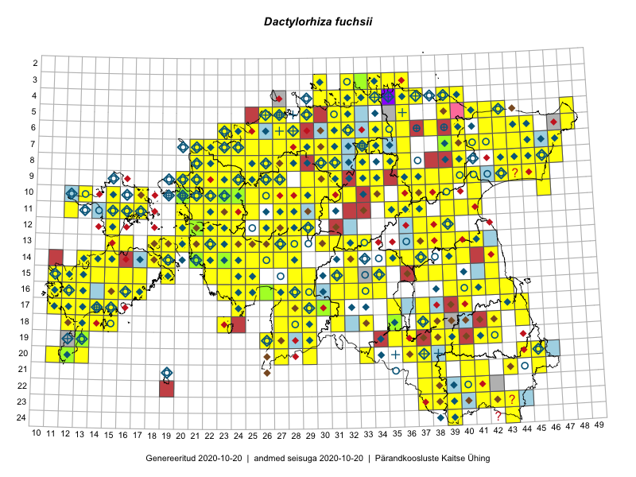

Dactylorhiza fuchsii — vööthuul-sõrmkäpp
Orchidaceae :: Dactylorhiza fuchsii (Druce) Soó (2453)

Kaart põhineb 3789 kirjel:
vaatlusi 2156
herbaareksemplare 297
PKÜ kirjeid1 158
ELFi kirjeid2 645
LVA kirjeid3 341
EELISe kirjeid4 192
Taime kaasaegsed ja ajaloolised leiukohad asuvad 448 ruudus.
Tingmärgid ja leidudega ruutude arvud periooditi uues (u) ja 2005 andmestikus (v)
| █ | vahemik | u5 | v6 |
|---|---|---|---|
| █ | 2006–2020 | 412 | – |
| ◆/◇ | 1971–2005 | 283 | 281 |
| ○ | 1921–1970 | 94 | 0 |
| + | kuni 1920 | 19 | 0 |
| × | hävinud | – | 0 |
| ? | kaheldav | – | 3 |
| Ruut | Leidja(d) | Leiuaeg | Kirje |
|---|---|---|---|
| 17-16 | Meeli Mesipuu, Ott Luuk | 2020-09-12 | PKÜ: 20535 |
| 17-16 | Meeli Mesipuu, Ott Luuk | 2020-09-12 | PKÜ: 20537 |
| 23-44 | Jaanus Paal, Taimi Paal | 2020-08-27 | ELF: 358 |
| 21-43 | Jaanus Paal, Taimi Paal | 2020-08-26 | ELF: 24937 |
| 07-45 | Alar Soppe | 2020-08-25 | ELF: 166 |
| 08-43 | Alar Soppe | 2020-08-25 | ELF: 812 |
| 09-44 | Alar Soppe | 2020-08-25 | ELF: 20571 |
| 07-46;07-47;08-46;08-47 | Alar Soppe | 2020-08-25 | ELF: 925 |
| 08-46 | Alar Soppe | 2020-08-25 | ELF: 926 |
| 09-29;09-30 | Toivo Sepp | 2020-08-24 | ELF: 24976 |
| 10-30 | Ott Luuk | 2020-08-24 | punkt: Dactylorhiza fuchsii (Druce) Soó |
| 10-30 | Ott Luuk | 2020-08-24 | ruut/ala: Dactylorhiza fuchsii (Druce) Soó |
| 10-29 | Ott Luuk | 2020-08-24 | punkt: Dactylorhiza fuchsii (Druce) Soó |
| 10-29 | Ott Luuk | 2020-08-24 | ruut/ala: Dactylorhiza fuchsii (Druce) Soó |
| 08-45 | Alar Soppe | 2020-08-24 | ELF: 912 |
| 08-45 | Alar Soppe | 2020-08-24 | ELF: 24952 |
| 08-45 | Alar Soppe | 2020-08-24 | ELF: 911 |
| 08-45 | Alar Soppe | 2020-08-24 | ELF: 24953 |
| 08-45 | Alar Soppe | 2020-08-24 | ELF: 907 |
| 05-35 | Eerik Leibak | 2020-08-23 | ELF: 24891 |
| 09-43 | Alar Soppe | 2020-08-23 | ELF: 785 |
| 09-43 | Alar Soppe | 2020-08-23 | ELF: 24950 |
| 09-43;09-44 | Alar Soppe | 2020-08-23 | ELF: 780 |
| 08-44 | Alar Soppe | 2020-08-23 | ELF: 24951 |
| 09-42 | Alar Soppe | 2020-08-21 | ELF: 794 |
| 09-42 | Alar Soppe | 2020-08-21 | ELF: 24946 |
| 07-41 | Alar Soppe | 2020-08-19 | ELF: 835 |
| 07-41 | Alar Soppe | 2020-08-19 | ELF: 832 |
| 07-42 | Alar Soppe | 2020-08-19 | ELF: 814 |
| 22-37 | Eerik Leibak | 2020-08-18 | ELF: 890 |
| 24-43 | Jaanus Paal, Taimi Paal | 2020-08-12 | ELF: 356 |
| 07-24 | Marko Vainu | 2020-08-09 | LVA: 1436354098 |
| 07-24 | Marko Vainu | 2020-08-09 | LVA: 512597682 |
| 23-42 | Toomas Kukk | 2020-08-06 | ELF: 335 |
| 10-23 | Ott Luuk | 2020-08-05 | punkt: Dactylorhiza fuchsii (Druce) Soó |
| 10-23 | Ott Luuk | 2020-08-05 | punkt: Dactylorhiza fuchsii (Druce) Soó |
| 10-23 | Ott Luuk | 2020-08-05 | ruut/ala: Dactylorhiza fuchsii (Druce) Soó |
| 13-41 | Avo Veermäe | 2020-07-30 | LVA: -1939491864 |
| 13-41 | Avo Veermäe | 2020-07-30 | LVA: 42325362 |
| 07-45 | Toomas Kukk | 2020-07-29 | punkt: Dactylorhiza fuchsii (Druce) Soó |
| 19-41 | Avo Veermäe | 2020-07-28 | LVA: 1160759522 |
| 05-26 | Liivi Mäekallas | 2020-07-25 | LVA: -1531471926 |
| 05-26 | Liivi Mäekallas | 2020-07-25 | LVA: -1790785694 |
| 08-25 | Peedu Saar | 2020-07-23 | punkt: Dactylorhiza fuchsii (Druce) Soó |
| 08-25 | Ott Luuk | 2020-07-23 | punkt: Dactylorhiza fuchsii (Druce) Soó |
| 09-36 | Avo Veermäe | 2020-07-23 | LVA: 496029004 |
| 08-25 | Ott Luuk | 2020-07-22–2020-07-23 | ruut/ala: Dactylorhiza fuchsii (Druce) Soó |
| 05-35 | Triin Edovald, Marko Vainu | 2020-07-22 | LVA: 1179899404 |
| 05-35 | Triin Edovald, Marko Vainu | 2020-07-22 | LVA: -77169736 |
| 05-35 | Triin Edovald, Marko Vainu | 2020-07-22 | LVA: 1049016030 |
| 08-25 | Ott Luuk | 2020-07-22 | punkt: Dactylorhiza fuchsii (Druce) Soó |
| 08-25 | Ott Luuk | 2020-07-22 | punkt: Dactylorhiza fuchsii (Druce) Soó |
| 08-25 | Ott Luuk | 2020-07-22 | punkt: Dactylorhiza fuchsii (Druce) Soó |
| 08-25 | Ott Luuk | 2020-07-22 | punkt: Dactylorhiza fuchsii (Druce) Soó |
| 08-25 | Ott Luuk | 2020-07-22 | punkt: Dactylorhiza fuchsii (Druce) Soó |
| 08-25 | Ott Luuk | 2020-07-22 | punkt: Dactylorhiza fuchsii (Druce) Soó |
| 08-25 | Ott Luuk | 2020-07-22 | punkt: Dactylorhiza fuchsii (Druce) Soó |
| 08-25 | Ott Luuk | 2020-07-22 | punkt: Dactylorhiza fuchsii (Druce) Soó |
| 18-42 | Meeli Mesipuu | 2020-07-22 | ruut/ala: Dactylorhiza fuchsii (Druce) Soó |
| 09-26 | Ott Luuk | 2020-07-21 | punkt: Dactylorhiza fuchsii (Druce) Soó |
| 09-26 | Ott Luuk | 2020-07-21 | punkt: Dactylorhiza fuchsii (Druce) Soó |
| 09-26 | Ott Luuk | 2020-07-21 | punkt: Dactylorhiza fuchsii (Druce) Soó |
| 19-39 | Jaanus Paal, Taimi Paal | 2020-07-21 | ELF: 24871 |
| 04-35;04-36 | Jaan Spiegel | 2020-07-21 | ELF: 13775 |
| 06-31 | Eerik Leibak | 2020-07-20 | ELF: 306 |
| 06-31 | Eerik Leibak | 2020-07-19 | ELF: 316 |
| 06-31 | Eerik Leibak | 2020-07-19 | ELF: 310 |
| 06-31 | Eerik Leibak | 2020-07-19 | ELF: 24884 |
| 06-31 | Eerik Leibak | 2020-07-19 | ELF: 21425 |
| 05-36 | Jaan Spiegel | 2020-07-18 | ELF: 159 |
| 07-24 | Eerik Leibak | 2020-07-18 | ELF: 7806 |
| 06-24 | Kaili Kattai | 2020-07-17 | punkt: Dactylorhiza fuchsii (Druce) Soó |
| 09-35 | Enn Selgis | 2020-07-16 | LVA: 261555086 |
| 08-26 | Eerik Leibak | 2020-07-16 | punkt: Dactylorhiza fuchsii (Druce) Soó |
| 08-26 | Eerik Leibak | 2020-07-16 | ELF: 2442 |
| 08-26 | Eerik Leibak | 2020-07-16 | ELF: 24883 |
| 11-32 | Ülle Piirsalu | 2020-07-15 | LVA: -928013118 |
| 16-35 | Jarmo Jaanus | 2020-07-15 | EELIS: -974377304 |
| 08-26 | Eerik Leibak | 2020-07-15 | ELF: 1886 |
| 08-26 | Eerik Leibak | 2020-07-15 | ELF: 2745 |
| 08-26 | Eerik Leibak | 2020-07-15 | ELF: 2759 |
| 08-26 | Eerik Leibak | 2020-07-15 | ELF: 2758 |
| 08-26 | Eerik Leibak | 2020-07-15 | ELF: 2751 |
| 08-26 | Eerik Leibak | 2020-07-15 | ELF: 32 |
| 12-38 | Enn Selgis | 2020-07-14 | LVA: 1320380290 |
| 07-31 | Eerik Leibak | 2020-07-14 | ELF: 305 |
| 07-31 | Eerik Leibak | 2020-07-14 | ELF: 302 |
| 07-31 | Eerik Leibak | 2020-07-14 | ELF: 308 |
| 11-40 | Ulvi Selgis, Enn Selgis | 2020-07-12 | punkt: Dactylorhiza fuchsii (Druce) Soó |
| 22-42 | Harry Kattai | 2020-07-12 | LVA: 1470978348 |
| 11-41 | Enn Selgis | 2020-07-12 | LVA: 169586242 |
| 11-40 | Enn Selgis | 2020-07-12 | LVA: 1917054174 |
| 19-29 | Värdi Soomann | 2020-07-10 | LVA: -357080850 |
| 07-29 | Meeli Mesipuu | 2020-07-10 | punkt: Dactylorhiza fuchsii (Druce) Soó |
| 19-40 | Avo Veermäe | 2020-07-10 | LVA: 470058224 |
| 19-40 | Avo Veermäe | 2020-07-10 | LVA: -2031128866 |
| 23-42 | Eerik Leibak | 2020-07-09 | ELF: 9952 |
| 14-22 | Margus Paas | 2020-07-08 | punkt: Dactylorhiza fuchsii (Druce) Soó |
| 19-39 | Jaanus Paal, Taimi Paal | 2020-07-08 | ELF: 555 |
| 19-39 | Jaanus Paal, Taimi Paal | 2020-07-08 | ELF: 13901 |
| 06-28 | Mati Talve | 2020-07-07 | LVA: -810290502 |
| 19-41 | Avo Veermäe | 2020-07-07 | LVA: -130489886 |
| 10-26 | Villu Soon | 2020-07-06 | punkt: Dactylorhiza fuchsii (Druce) Soó |
| 13-40 | Ott Luuk | 2020-07-06 | punkt: Dactylorhiza fuchsii (Druce) Soó |
| 20-36 | Ulvi Selgis, Enn Selgis, Angelika Portsmuth, Hans Albert William Portsmuth | 2020-07-05 | punkt: Dactylorhiza fuchsii (Druce) Soó |
| 20-36 | Ulvi Selgis, Angelika Portsmuth, Hans Albert William Portsmuth, Enn Selgis | 2020-07-05 | punkt: Dactylorhiza fuchsii (Druce) Soó |
| 20-36 | Ulvi Selgis, Angelika Portsmuth, Hans Albert William Portsmuth, Enn Selgis | 2020-07-05 | punkt: Dactylorhiza fuchsii (Druce) Soó |
| 20-36 | Ulvi Selgis, Angelika Portsmuth, Hans Albert William Portsmuth, Enn Selgis | 2020-07-05 | punkt: Dactylorhiza fuchsii (Druce) Soó |
| 20-36 | Ulvi Selgis, Angelika Portsmuth, Hans Albert William Portsmuth, Enn Selgis | 2020-07-05 | punkt: Dactylorhiza fuchsii (Druce) Soó |
| 20-36 | Ulvi Selgis, Angelika Portsmuth, Hans Albert William Portsmuth, Enn Selgis | 2020-07-05 | punkt: Dactylorhiza fuchsii (Druce) Soó |
| 20-36 | Ulvi Selgis, Angelika Portsmuth, Hans Albert William Portsmuth, Enn Selgis | 2020-07-05 | punkt: Dactylorhiza fuchsii (Druce) Soó |
| 20-36 | Ulvi Selgis, Angelika Portsmuth, Hans Albert William Portsmuth, Enn Selgis | 2020-07-05 | punkt: Dactylorhiza fuchsii (Druce) Soó |
| 20-36 | Ulvi Selgis, Angelika Portsmuth, Hans Albert William Portsmuth, Enn Selgis | 2020-07-05 | punkt: Dactylorhiza fuchsii (Druce) Soó |
| 20-36 | Ulvi Selgis, Angelika Portsmuth, Hans Albert William Portsmuth, Enn Selgis | 2020-07-05 | punkt: Dactylorhiza fuchsii (Druce) Soó |
| 20-36 | Ulvi Selgis, Angelika Portsmuth, Hans Albert William Portsmuth, Enn Selgis | 2020-07-05 | punkt: Dactylorhiza fuchsii (Druce) Soó |
| 20-36 | Ulvi Selgis, Angelika Portsmuth, Hans Albert William Portsmuth, Enn Selgis | 2020-07-05 | punkt: Dactylorhiza fuchsii (Druce) Soó |
| 20-36 | Ulvi Selgis, Angelika Portsmuth, Hans Albert William Portsmuth, Enn Selgis | 2020-07-05 | punkt: Dactylorhiza fuchsii (Druce) Soó |
| 19-36 | Ulvi Selgis, Angelika Portsmuth, Hans Albert William Portsmuth, Enn Selgis | 2020-07-05 | punkt: Dactylorhiza fuchsii (Druce) Soó |
| 19-38 | Sirje Azarov, Mari Reitalu, Riine Latserus | 2020-07-05 | punkt: Dactylorhiza fuchsii (Druce) Soó |
| 20-36 | Merit Otsus, Ester Valdvee, Aare Laht, Tiiu-Maie Laht | 2020-07-05 | punkt: Dactylorhiza fuchsii (Druce) Soó |
| 20-36 | Merit Otsus, Ester Valdvee, Aare Laht, Tiiu-Maie Laht | 2020-07-05 | punkt: Dactylorhiza fuchsii (Druce) Soó |
| 20-36 | Merit Otsus, Ester Valdvee, Aare Laht, Tiiu-Maie Laht | 2020-07-05 | punkt: Dactylorhiza fuchsii (Druce) Soó |
| 20-36 | Merit Otsus, Ester Valdvee, Aare Laht, Tiiu-Maie Laht | 2020-07-05 | punkt: Dactylorhiza fuchsii (Druce) Soó |
| 20-36 | Merit Otsus, Ester Valdvee, Aare Laht, Tiiu-Maie Laht | 2020-07-05 | punkt: Dactylorhiza fuchsii (Druce) Soó |
| 20-36 | Merit Otsus, Ester Valdvee, Aare Laht, Tiiu-Maie Laht | 2020-07-05 | punkt: Dactylorhiza fuchsii (Druce) Soó |
| 20-36 | Merit Otsus, Ester Valdvee, Aare Laht, Tiiu-Maie Laht | 2020-07-05 | punkt: Dactylorhiza fuchsii (Druce) Soó |
| 20-36 | Merit Otsus, Ester Valdvee, Aare Laht, Tiiu-Maie Laht | 2020-07-05 | punkt: Dactylorhiza fuchsii (Druce) Soó |
| 20-36 | Merit Otsus, Ester Valdvee, Aare Laht, Tiiu-Maie Laht | 2020-07-05 | punkt: Dactylorhiza fuchsii (Druce) Soó |
| 20-36 | Merit Otsus, Ester Valdvee, Aare Laht, Tiiu-Maie Laht | 2020-07-05 | punkt: Dactylorhiza fuchsii (Druce) Soó |
| 20-36 | Merit Otsus, Ester Valdvee, Aare Laht, Tiiu-Maie Laht | 2020-07-05 | punkt: Dactylorhiza fuchsii (Druce) Soó |
| 20-36 | Merit Otsus, Ester Valdvee, Aare Laht, Tiiu-Maie Laht | 2020-07-05 | punkt: Dactylorhiza fuchsii (Druce) Soó |
| 20-36 | Merit Otsus, Ester Valdvee, Aare Laht, Tiiu-Maie Laht | 2020-07-05 | punkt: Dactylorhiza fuchsii (Druce) Soó |
| 20-36 | Merit Otsus, Ester Valdvee, Aare Laht, Tiiu-Maie Laht | 2020-07-05 | punkt: Dactylorhiza fuchsii (Druce) Soó |
| 20-36 | Merit Otsus, Ester Valdvee, Aare Laht, Tiiu-Maie Laht | 2020-07-05 | punkt: Dactylorhiza fuchsii (Druce) Soó |
| 20-36 | Merit Otsus, Ester Valdvee, Aare Laht, Tiiu-Maie Laht | 2020-07-05 | punkt: Dactylorhiza fuchsii (Druce) Soó |
| 20-36 | Merit Otsus, Ester Valdvee, Aare Laht, Tiiu-Maie Laht | 2020-07-05 | punkt: Dactylorhiza fuchsii (Druce) Soó |
| 20-36 | Merit Otsus, Ester Valdvee, Aare Laht, Tiiu-Maie Laht | 2020-07-05 | punkt: Dactylorhiza fuchsii (Druce) Soó |
| 20-36 | Merit Otsus, Ester Valdvee, Aare Laht, Tiiu-Maie Laht | 2020-07-05 | punkt: Dactylorhiza fuchsii (Druce) Soó |
| 20-36 | Merit Otsus, Ester Valdvee, Aare Laht, Tiiu-Maie Laht | 2020-07-05 | punkt: Dactylorhiza fuchsii (Druce) Soó |
| 20-36 | Merit Otsus, Ester Valdvee, Aare Laht, Tiiu-Maie Laht | 2020-07-05 | punkt: Dactylorhiza fuchsii (Druce) Soó |
| 20-36 | Merit Otsus, Ester Valdvee, Aare Laht, Tiiu-Maie Laht | 2020-07-05 | punkt: Dactylorhiza fuchsii (Druce) Soó |
| 20-36 | Merit Otsus, Ester Valdvee, Aare Laht, Tiiu-Maie Laht | 2020-07-05 | punkt: Dactylorhiza fuchsii (Druce) Soó |
| 20-36 | Merit Otsus, Ester Valdvee, Aare Laht, Tiiu-Maie Laht | 2020-07-05 | punkt: Dactylorhiza fuchsii (Druce) Soó |
| 20-36 | Merit Otsus, Ester Valdvee, Aare Laht, Tiiu-Maie Laht | 2020-07-05 | punkt: Dactylorhiza fuchsii (Druce) Soó |
| 20-36 | Merit Otsus, Ester Valdvee, Aare Laht, Tiiu-Maie Laht | 2020-07-05 | punkt: Dactylorhiza fuchsii (Druce) Soó |
| 20-36 | Merit Otsus, Ester Valdvee, Aare Laht, Tiiu-Maie Laht | 2020-07-05 | punkt: Dactylorhiza fuchsii (Druce) Soó |
| 20-36 | Merit Otsus, Ester Valdvee, Aare Laht, Tiiu-Maie Laht | 2020-07-05 | punkt: Dactylorhiza fuchsii (Druce) Soó |
| 20-36 | Merit Otsus, Ester Valdvee, Aare Laht, Tiiu-Maie Laht | 2020-07-05 | punkt: Dactylorhiza fuchsii (Druce) Soó |
| 19-36 | Marje Talvis | 2020-07-05 | LVA: -1668935536 |
| 19-38 | Mari Reitalu, Sirje Azarov, Riine Latserus | 2020-07-05 | ruut/ala: Dactylorhiza fuchsii (Druce) Soó |
| 19-38 | Mari Reitalu, Riine Latserus, Sirje Azarov | 2020-07-05 | punkt: Dactylorhiza fuchsii (Druce) Soó |
| 19-38 | Mari Reitalu, Riine Latserus, Sirje Azarov | 2020-07-05 | punkt: Dactylorhiza fuchsii (Druce) Soó |
| 19-38 | Mari Reitalu, Riine Latserus, Sirje Azarov | 2020-07-05 | punkt: Dactylorhiza fuchsii (Druce) Soó |
| 19-38 | Mari Reitalu, Riine Latserus, Sirje Azarov | 2020-07-05 | punkt: Dactylorhiza fuchsii (Druce) Soó |
| 19-38 | Mari Reitalu, Riine Latserus, Sirje Azarov | 2020-07-05 | punkt: Dactylorhiza fuchsii (Druce) Soó |
| 19-38 | Mari Reitalu, Riine Latserus, Sirje Azarov | 2020-07-05 | punkt: Dactylorhiza fuchsii (Druce) Soó |
| 19-38 | Mari Reitalu, Riine Latserus, Sirje Azarov | 2020-07-05 | punkt: Dactylorhiza fuchsii (Druce) Soó |
| 19-38 | Mari Reitalu, Riine Latserus, Sirje Azarov | 2020-07-05 | punkt: Dactylorhiza fuchsii (Druce) Soó |
| 19-38 | Mari Reitalu, Riine Latserus, Sirje Azarov | 2020-07-05 | punkt: Dactylorhiza fuchsii (Druce) Soó |
| 19-38 | Mari Reitalu, Riine Latserus, Sirje Azarov | 2020-07-05 | punkt: Dactylorhiza fuchsii (Druce) Soó |
| 19-38 | Mari Reitalu, Riine Latserus, Sirje Azarov | 2020-07-05 | punkt: Dactylorhiza fuchsii (Druce) Soó |
| 19-38 | Mari Reitalu, Riine Latserus, Sirje Azarov | 2020-07-05 | punkt: Dactylorhiza fuchsii (Druce) Soó |
| 19-38 | Mari Reitalu, Riine Latserus, Sirje Azarov | 2020-07-05 | punkt: Dactylorhiza fuchsii (Druce) Soó |
| 19-38 | Mari Reitalu, Riine Latserus, Sirje Azarov | 2020-07-05 | punkt: Dactylorhiza fuchsii (Druce) Soó |
| 19-38 | Mari Reitalu, Riine Latserus, Sirje Azarov | 2020-07-05 | punkt: Dactylorhiza fuchsii (Druce) Soó |
| 19-38 | Mari Reitalu, Riine Latserus, Sirje Azarov | 2020-07-05 | punkt: Dactylorhiza fuchsii (Druce) Soó |
| 19-38 | Mari Reitalu, Riine Latserus, Sirje Azarov | 2020-07-05 | punkt: Dactylorhiza fuchsii (Druce) Soó |
| 19-38 | Mari Reitalu, Riine Latserus, Sirje Azarov | 2020-07-05 | punkt: Dactylorhiza fuchsii (Druce) Soó |
| 19-38 | Mari Reitalu, Riine Latserus, Sirje Azarov | 2020-07-05 | punkt: Dactylorhiza fuchsii (Druce) Soó |
| 18-38 | Jekaterina Aida, Kaisa Alla, Reet Ohna, Aiki Tibar, Arto-Randel Servet | 2020-07-05 | punkt: Dactylorhiza fuchsii (Druce) Soó |
| 18-38 | Jekaterina Aida, Kaisa Alla, Reet Ohna, Aiki Tibar, Arto-Randel Servet | 2020-07-05 | punkt: Dactylorhiza fuchsii (Druce) Soó |
| 18-38 | Jekaterina Aida, Kaisa Alla, Reet Ohna, Aiki Tibar, Arto-Randel Servet | 2020-07-05 | punkt: Dactylorhiza fuchsii (Druce) Soó |
| 18-38 | Jekaterina Aida, Kaisa Alla, Reet Ohna, Aiki Tibar, Arto-Randel Servet | 2020-07-05 | punkt: Dactylorhiza fuchsii (Druce) Soó |
| 18-38 | Jekaterina Aida, Kaisa Alla, Reet Ohna, Aiki Tibar, Arto-Randel Servet | 2020-07-05 | punkt: Dactylorhiza fuchsii (Druce) Soó |
| 18-38 | Jekaterina Aida, Kaisa Alla, Reet Ohna, Aiki Tibar, Arto-Randel Servet | 2020-07-05 | punkt: Dactylorhiza fuchsii (Druce) Soó |
| 18-38 | Jekaterina Aida, Kaisa Alla, Reet Ohna, Aiki Tibar, Arto-Randel Servet | 2020-07-05 | punkt: Dactylorhiza fuchsii (Druce) Soó |
| 18-38 | Jekaterina Aida, Kaisa Alla, Reet Ohna, Aiki Tibar, Arto-Randel Servet | 2020-07-05 | punkt: Dactylorhiza fuchsii (Druce) Soó |
| 18-38 | Jekaterina Aida, Kaisa Alla, Reet Ohna, Aiki Tibar, Arto-Randel Servet | 2020-07-05 | punkt: Dactylorhiza fuchsii (Druce) Soó |
| 18-38 | Jekaterina Aida, Kaisa Alla, Reet Ohna, Aiki Tibar, Arto-Randel Servet | 2020-07-05 | punkt: Dactylorhiza fuchsii (Druce) Soó |
| 18-38 | Jekaterina Aida, Kaisa Alla, Reet Ohna, Aiki Tibar, Arto-Randel Servet | 2020-07-05 | punkt: Dactylorhiza fuchsii (Druce) Soó |
| 18-38 | Jekaterina Aida, Kaisa Alla, Reet Ohna, Aiki Tibar, Arto-Randel Servet | 2020-07-05 | punkt: Dactylorhiza fuchsii (Druce) Soó |
| 18-38 | Jekaterina Aida, Kaisa Alla, Reet Ohna, Aiki Tibar, Arto-Randel Servet | 2020-07-05 | punkt: Dactylorhiza fuchsii (Druce) Soó |
| 18-38 | Jekaterina Aida, Kaisa Alla, Reet Ohna, Aiki Tibar, Arto-Randel Servet | 2020-07-05 | punkt: Dactylorhiza fuchsii (Druce) Soó |
| 18-38 | Jekaterina Aida, Kaisa Alla, Reet Ohna, Aiki Tibar, Arto-Randel Servet | 2020-07-05 | punkt: Dactylorhiza fuchsii (Druce) Soó |
| 18-38 | Jekaterina Aida, Kaisa Alla, Reet Ohna, Aiki Tibar, Arto-Randel Servet | 2020-07-05 | punkt: Dactylorhiza fuchsii (Druce) Soó |
| 18-38 | Jekaterina Aida, Kaisa Alla, Reet Ohna, Aiki Tibar, Arto-Randel Servet | 2020-07-05 | punkt: Dactylorhiza fuchsii (Druce) Soó |
| 18-38 | Jekaterina Aida, Kaisa Alla, Reet Ohna, Aiki Tibar, Arto-Randel Servet | 2020-07-05 | punkt: Dactylorhiza fuchsii (Druce) Soó |
| 18-38 | Jekaterina Aida, Kaisa Alla, Reet Ohna, Aiki Tibar, Arto-Randel Servet | 2020-07-05 | punkt: Dactylorhiza fuchsii (Druce) Soó |
| 18-38 | Jekaterina Aida, Kaisa Alla, Reet Ohna, Aiki Tibar, Arto-Randel Servet | 2020-07-05 | punkt: Dactylorhiza fuchsii (Druce) Soó |
| 18-38 | Jekaterina Aida, Kaisa Alla, Reet Ohna, Aiki Tibar, Arto-Randel Servet | 2020-07-05 | punkt: Dactylorhiza fuchsii (Druce) Soó |
| 18-38 | Jekaterina Aida, Kaisa Alla, Reet Ohna, Aiki Tibar, Arto-Randel Servet | 2020-07-05 | punkt: Dactylorhiza fuchsii (Druce) Soó |
| 18-38 | Jekaterina Aida, Kaisa Alla, Reet Ohna, Aiki Tibar, Arto-Randel Servet | 2020-07-05 | punkt: Dactylorhiza fuchsii (Druce) Soó |
| 18-38 | Jekaterina Aida, Kaisa Alla, Reet Ohna, Aiki Tibar, Arto-Randel Servet | 2020-07-05 | punkt: Dactylorhiza fuchsii (Druce) Soó |
| 18-38 | Jekaterina Aida, Kaisa Alla, Reet Ohna, Aiki Tibar, Arto-Randel Servet | 2020-07-05 | punkt: Dactylorhiza fuchsii (Druce) Soó |
| 18-38 | Jekaterina Aida, Kaisa Alla, Reet Ohna, Aiki Tibar, Arto-Randel Servet | 2020-07-05 | punkt: Dactylorhiza fuchsii (Druce) Soó |
| 18-38 | Jekaterina Aida, Kaisa Alla, Reet Ohna, Aiki Tibar, Arto-Randel Servet | 2020-07-05 | punkt: Dactylorhiza fuchsii (Druce) Soó |
| 18-38 | Jekaterina Aida, Kaisa Alla, Reet Ohna, Aiki Tibar, Arto-Randel Servet | 2020-07-05 | punkt: Dactylorhiza fuchsii (Druce) Soó |
| 18-38 | Jekaterina Aida, Kaisa Alla, Reet Ohna, Aiki Tibar, Arto-Randel Servet | 2020-07-05 | punkt: Dactylorhiza fuchsii (Druce) Soó |
| 18-38 | Jekaterina Aida, Kaisa Alla, Reet Ohna, Aiki Tibar, Arto-Randel Servet | 2020-07-05 | punkt: Dactylorhiza fuchsii (Druce) Soó |
| 18-38 | Jekaterina Aida, Kaisa Alla, Reet Ohna, Aiki Tibar, Arto-Randel Servet | 2020-07-05 | punkt: Dactylorhiza fuchsii (Druce) Soó |
| 18-38 | Jekaterina Aida, Kaisa Alla, Reet Ohna, Aiki Tibar, Arto-Randel Servet | 2020-07-05 | punkt: Dactylorhiza fuchsii (Druce) Soó |
| 18-38 | Jekaterina Aida, Kaisa Alla, Reet Ohna, Aiki Tibar, Arto-Randel Servet | 2020-07-05 | punkt: Dactylorhiza fuchsii (Druce) Soó |
| 18-38 | Jekaterina Aida, Kaisa Alla, Reet Ohna, Aiki Tibar, Arto-Randel Servet | 2020-07-05 | punkt: Dactylorhiza fuchsii (Druce) Soó |
| 18-38 | Jekaterina Aida, Kaisa Alla, Reet Ohna, Aiki Tibar, Arto-Randel Servet | 2020-07-05 | punkt: Dactylorhiza fuchsii (Druce) Soó |
| 18-38 | Jekaterina Aida, Kaisa Alla, Reet Ohna, Aiki Tibar, Arto-Randel Servet | 2020-07-05 | punkt: Dactylorhiza fuchsii (Druce) Soó |
| 18-38 | Jekaterina Aida, Kaisa Alla, Reet Ohna, Aiki Tibar, Arto-Randel Servet | 2020-07-05 | punkt: Dactylorhiza fuchsii (Druce) Soó |
| 18-38 | Jekaterina Aida, Kaisa Alla, Reet Ohna, Aiki Tibar, Arto-Randel Servet | 2020-07-05 | punkt: Dactylorhiza fuchsii (Druce) Soó |
| 18-38 | Jekaterina Aida, Kaisa Alla, Reet Ohna, Aiki Tibar, Arto-Randel Servet | 2020-07-05 | punkt: Dactylorhiza fuchsii (Druce) Soó |
| 18-38 | Jekaterina Aida, Kaisa Alla, Reet Ohna, Aiki Tibar, Arto-Randel Servet | 2020-07-05 | punkt: Dactylorhiza fuchsii (Druce) Soó |
| 18-38 | Jekaterina Aida, Kaisa Alla, Reet Ohna, Aiki Tibar, Arto-Randel Servet | 2020-07-05 | punkt: Dactylorhiza fuchsii (Druce) Soó |
| 18-38 | Jekaterina Aida, Kaisa Alla, Reet Ohna, Aiki Tibar, Arto-Randel Servet | 2020-07-05 | punkt: Dactylorhiza fuchsii (Druce) Soó |
| 18-38 | Jekaterina Aida, Kaisa Alla, Reet Ohna, Aiki Tibar, Arto-Randel Servet | 2020-07-05 | punkt: Dactylorhiza fuchsii (Druce) Soó |
| 09-34 | Ülle Piirsalu | 2020-07-04 | LVA: 1906055352 |
| 18-38 | Ulvi Selgis, Enn Selgis, Angelika Portsmuth, Hans Albert William Portsmuth | 2020-07-04 | punkt: Dactylorhiza fuchsii (Druce) Soó |
| 18-38 | Ulvi Selgis, Angelika Portsmuth, Hans Albert William Portsmuth, Enn Selgis | 2020-07-04 | punkt: Dactylorhiza fuchsii (Druce) Soó |
| 18-38 | Ulvi Selgis, Angelika Portsmuth, Hans Albert William Portsmuth, Enn Selgis | 2020-07-04 | punkt: Dactylorhiza fuchsii (Druce) Soó |
| 18-38 | Ulvi Selgis, Angelika Portsmuth, Hans Albert William Portsmuth, Enn Selgis | 2020-07-04 | punkt: Dactylorhiza fuchsii (Druce) Soó |
| 18-38 | Ulvi Selgis, Angelika Portsmuth, Hans Albert William Portsmuth, Enn Selgis | 2020-07-04 | punkt: Dactylorhiza fuchsii (Druce) Soó |
| 18-38 | Ulvi Selgis, Angelika Portsmuth, Hans Albert William Portsmuth, Enn Selgis | 2020-07-04 | punkt: Dactylorhiza fuchsii (Druce) Soó |
| 18-38 | Ulvi Selgis, Angelika Portsmuth, Hans Albert William Portsmuth, Enn Selgis | 2020-07-04 | punkt: Dactylorhiza fuchsii (Druce) Soó |
| 18-38 | Ulvi Selgis, Angelika Portsmuth, Hans Albert William Portsmuth, Enn Selgis | 2020-07-04 | punkt: Dactylorhiza fuchsii (Druce) Soó |
| 18-38 | Ulvi Selgis, Angelika Portsmuth, Hans Albert William Portsmuth, Enn Selgis | 2020-07-04 | punkt: Dactylorhiza fuchsii (Druce) Soó |
| 18-38 | Ulvi Selgis, Angelika Portsmuth, Hans Albert William Portsmuth, Enn Selgis | 2020-07-04 | punkt: Dactylorhiza fuchsii (Druce) Soó |
| 18-38 | Ulvi Selgis, Angelika Portsmuth, Hans Albert William Portsmuth, Enn Selgis | 2020-07-04 | punkt: Dactylorhiza fuchsii (Druce) Soó |
| 18-38 | Ulvi Selgis, Angelika Portsmuth, Hans Albert William Portsmuth, Enn Selgis | 2020-07-04 | punkt: Dactylorhiza fuchsii (Druce) Soó |
| 18-38 | Ulvi Selgis, Angelika Portsmuth, Hans Albert William Portsmuth, Enn Selgis | 2020-07-04 | punkt: Dactylorhiza fuchsii (Druce) Soó |
| 18-38 | Ulvi Selgis, Angelika Portsmuth, Hans Albert William Portsmuth, Enn Selgis | 2020-07-04 | punkt: Dactylorhiza fuchsii (Druce) Soó |
| 18-38 | Ulvi Selgis, Angelika Portsmuth, Hans Albert William Portsmuth, Enn Selgis | 2020-07-04 | punkt: Dactylorhiza fuchsii (Druce) Soó |
| 18-38 | Ulvi Selgis, Angelika Portsmuth, Hans Albert William Portsmuth, Enn Selgis | 2020-07-04 | punkt: Dactylorhiza fuchsii (Druce) Soó |
| 18-38 | Ulvi Selgis, Angelika Portsmuth, Hans Albert William Portsmuth, Enn Selgis | 2020-07-04 | punkt: Dactylorhiza fuchsii (Druce) Soó |
| 18-38 | Ulvi Selgis, Angelika Portsmuth, Hans Albert William Portsmuth, Enn Selgis | 2020-07-04 | punkt: Dactylorhiza fuchsii (Druce) Soó |
| 18-38 | Ulvi Selgis, Angelika Portsmuth, Hans Albert William Portsmuth, Enn Selgis | 2020-07-04 | punkt: Dactylorhiza fuchsii (Druce) Soó |
| 18-38 | Ulvi Selgis, Angelika Portsmuth, Hans Albert William Portsmuth, Enn Selgis | 2020-07-04 | punkt: Dactylorhiza fuchsii (Druce) Soó |
| 14-23 | Meeli Mesipuu | 2020-07-04 | punkt: Dactylorhiza fuchsii (Druce) Soó |
| 19-38 | Kadri Aller, Ülle Jõgar, Merit Otsus, Aiki Tibar | 2020-07-04 | punkt: Dactylorhiza fuchsii (Druce) Soó |
| 05-31 | Jüri Kaljundi | 2020-07-04 | punkt: Dactylorhiza fuchsii (Druce) Soó |
| 19-39 | Jaanus Paal, Taimi Paal | 2020-07-04 | ELF: 24862 |
| 19-39 | Jaanus Paal, Taimi Paal | 2020-07-04 | ELF: 9981 |
| 19-39 | Jaanus Paal, Taimi Paal | 2020-07-04 | ELF: 556 |
| 06-27 | Vello Keppart | 2020-07-03 | punkt: Dactylorhiza fuchsii (Druce) Soó |
| 17-15 | Toomas Kukk | 2020-07-03 | punkt: Dactylorhiza fuchsii (Druce) Soó |
| 17-15 | Toomas Kukk | 2020-07-03 | punkt: Dactylorhiza fuchsii (Druce) Soó |
| 17-15 | Toomas Kukk | 2020-07-03 | punkt: Dactylorhiza fuchsii (Druce) Soó |
| 17-15 | Toomas Kukk | 2020-07-03 | PKÜ: 21199 |
| 17-15 | Toomas Kukk | 2020-07-03 | PKÜ: 21200 |
| 17-15 | Peedu Saar | 2020-07-03 | PKÜ: 21195 |
| 17-15 | Peedu Saar | 2020-07-03 | PKÜ: 21196 |
| 17-15 | Peedu Saar | 2020-07-03 | PKÜ: 21198 |
| 05-31 | Jüri Kaljundi | 2020-07-03 | punkt: Dactylorhiza fuchsii (Druce) Soó |
| 05-31 | Jüri Kaljundi | 2020-07-03 | punkt: Dactylorhiza fuchsii (Druce) Soó |
| 13-38 | Enn Selgis | 2020-07-03 | LVA: -1384069942 |
| 13-38 | Enn Selgis | 2020-07-03 | LVA: -1997123618 |
| 08-26 | Eerik Leibak | 2020-07-03 | ELF: 20646 |
| 18-38 | Avo Veermäe | 2020-07-03 | LVA: 2055582938 |
| 18-38 | Avo Veermäe | 2020-07-03 | LVA: -1889349994 |
| 17-11 | Ott Luuk, Rein Kalamees | 2020-07-02 | PKÜ: 21180 |
| 12-37 | Ulvi Selgis, Enn Selgis | 2020-07-01 | punkt: Dactylorhiza fuchsii (Druce) Soó |
| 06-47 | Triin Edovald, Evelin Laanest, Tõnu Ploompuu, Ilmar Uibopuu | 2020-07-01 | LVA: -1007949472 |
| 16-11 | Toomas Kukk | 2020-07-01 | punkt: Dactylorhiza fuchsii (Druce) Soó |
| 16-11 | Toomas Kukk | 2020-07-01 | punkt: Dactylorhiza fuchsii (Druce) Soó |
| 16-11 | Toomas Kukk | 2020-07-01 | PKÜ: 20499 |
| 17-11 | Ott Luuk, Rein Kalamees | 2020-07-01 | punkt: Dactylorhiza fuchsii (Druce) Soó |
| 17-11 | Ott Luuk, Rein Kalamees | 2020-07-01 | PKÜ: 20213 |
| 04-31 | Kadri Prants | 2020-07-01 | punkt: Dactylorhiza fuchsii (Druce) Soó |
| 04-30 | Kadri Prants | 2020-07-01 | punkt: Dactylorhiza fuchsii (Druce) Soó |
| 04-30 | Kadri Prants | 2020-07-01 | punkt: Dactylorhiza fuchsii (Druce) Soó |
| 04-30 | Kadri Prants | 2020-07-01 | punkt: Dactylorhiza fuchsii (Druce) Soó |
| 18-30 | Jarmo Jaanus | 2020-07-01 | EELIS: -598242918 |
| 12-37 | Enn Selgis | 2020-07-01 | LVA: -1843646038 |
| 14-22 | Ott Luuk, Rein Kalamees | 2020-06-30 | PKÜ: 20589 |
| 14-22 | Ott Luuk, Rein Kalamees | 2020-06-30 | PKÜ: 20591 |
| 12-37 | Enn Selgis | 2020-06-30 | LVA: 962624482 |
| 12-37 | Enn Selgis | 2020-06-30 | LVA: 480037136 |
| 14-23 | Ants Animägi | 2020-06-30 | LVA: -959147322 |
| 14-23 | Ants Animägi | 2020-06-30 | LVA: -817169074 |
| 07-29 | Jaak Pärtel | 2020-06-29 | punkt: Dactylorhiza fuchsii (Druce) Soó |
| 07-29 | Jaak Pärtel | 2020-06-29 | punkt: Dactylorhiza fuchsii (Druce) Soó |
| 13-24 | Villu Soon | 2020-06-28 | punkt: Dactylorhiza fuchsii (Druce) Soó |
| 13-26 | Peedu Saar, Toomas Kukk | 2020-06-28 | punkt: Dactylorhiza fuchsii (Druce) Soó |
| 20-12 | Kristjan Adojaan | 2020-06-28 | punkt: Dactylorhiza fuchsii (Druce) Soó |
| 04-31 | Jüri Kaljundi | 2020-06-28 | punkt: Dactylorhiza fuchsii (Druce) Soó |
| 16-11 | Ants Animägi | 2020-06-28 | LVA: -1439011160 |
| 10-33 | Ülle Piirsalu | 2020-06-27 | LVA: 497898554 |
| 04-31 | Jüri Kaljundi | 2020-06-27 | punkt: Dactylorhiza fuchsii (Druce) Soó |
| 04-27 | Enn Selgis | 2020-06-27 | LVA: 1596841070 |
| 09-24 | Andrus Jair | 2020-06-27 | punkt: Dactylorhiza fuchsii (Druce) Soó |
| 04-33 | Rein Kalamees | 2020-06-26 | punkt: Dactylorhiza fuchsii (Druce) Soó |
| 04-33 | Rein Kalamees | 2020-06-26 | punkt: Dactylorhiza fuchsii (Druce) Soó |
| 13-38 | Enn Selgis | 2020-06-26 | LVA: -1889030302 |
| 17-12 | Ants Animägi | 2020-06-26 | LVA: 640028802 |
| 17-14 | Ants Animägi | 2020-06-26 | LVA: 1614666526 |
| 21-38 | Tiina Ploom | 2020-06-25 | punkt: Dactylorhiza fuchsii (Druce) Soó |
| 22-38 | Tiina Ploom | 2020-06-25 | punkt: Dactylorhiza fuchsii (Druce) Soó |
| 22-38 | Tiina Ploom | 2020-06-25 | punkt: Dactylorhiza fuchsii (Druce) Soó |
| 05-31 | Jüri Kaljundi | 2020-06-25 | punkt: Dactylorhiza fuchsii (Druce) Soó |
| 05-31 | Jüri Kaljundi | 2020-06-25 | LVA: -1353451562 |
| 13-26 | Ants Animägi | 2020-06-25 | LVA: 1755537062 |
| 13-26 | Ants Animägi | 2020-06-25 | LVA: -110121980 |
| 12-23 | Kaia Kukk | 2020-06-24 | punkt: Dactylorhiza fuchsii (Druce) Soó |
| 05-31 | Jüri Kaljundi | 2020-06-24 | punkt: Dactylorhiza fuchsii (Druce) Soó |
| 05-31 | Jüri Kaljundi | 2020-06-23 | LVA: -860416660 |
| 04-30 | Kadri Prants | 2020-06-22 | punkt: Dactylorhiza fuchsii (Druce) Soó |
| 04-30 | Kadri Prants | 2020-06-22 | punkt: Dactylorhiza fuchsii (Druce) Soó |
| 08-28 | Ott Luuk | 2020-06-21 | punkt: Dactylorhiza fuchsii (Druce) Soó |
| 07-28 | Ott Luuk | 2020-06-21 | punkt: Dactylorhiza fuchsii (Druce) Soó |
| 07-28 | Ott Luuk | 2020-06-21 | punkt: Dactylorhiza fuchsii (Druce) Soó |
| 15-22 | Margus Paas | 2020-06-21 | punkt: Dactylorhiza fuchsii (Druce) Soó |
| 16-39 | Kristjan Adojaan | 2020-06-21 | punkt: Dactylorhiza fuchsii (Druce) Soó |
| 05-31 | Jüri Kaljundi | 2020-06-21 | punkt: Dactylorhiza fuchsii (Druce) Soó |
| 05-31 | Jüri Kaljundi | 2020-06-21 | punkt: Dactylorhiza fuchsii (Druce) Soó |
| 05-32 | Jüri Kaljundi | 2020-06-21 | punkt: Dactylorhiza fuchsii (Druce) Soó |
| 05-32 | Jüri Kaljundi | 2020-06-21 | punkt: Dactylorhiza fuchsii (Druce) Soó |
| 12-22 | Trinus Haitjema | 2020-06-20 | punkt: Dactylorhiza fuchsii (Druce) Soó |
| 14-21 | Ants Animägi | 2020-06-19 | LVA: 1416881068 |
| 13-21 | Rein Kalamees | 2020-06-18 | PKÜ: 21107 |
| 12-23 | Ott Luuk, Meeli Mesipuu | 2020-06-18 | PKÜ: 21144 |
| 12-23 | Ott Luuk | 2020-06-18 | punkt: Dactylorhiza fuchsii (Druce) Soó |
| 12-23 | Meeli Mesipuu, Ott Luuk | 2020-06-18 | PKÜ: 21153 |
| 05-31 | Jüri Kaljundi | 2020-06-18 | punkt: Dactylorhiza fuchsii (Druce) Soó |
| 05-31 | Jüri Kaljundi | 2020-06-18 | LVA: 1167142988 |
| 16-13 | Ants Animägi | 2020-06-18 | LVA: 162544876 |
| 16-13 | Ants Animägi | 2020-06-18 | LVA: 69602600 |
| 11-22 | Meeli Mesipuu, Ott Luuk | 2020-06-17 | PKÜ: 21119 |
| 09-21 | Ott Luuk, Peedu Saar | 2020-06-16 | PKÜ: 20442 |
| 12-22 | Meeli Mesipuu | 2020-06-16 | PKÜ: 21142 |
| 04-33 | Meeli Mesipuu | 2020-06-11 | PKÜ: 21066 |
| 11-22 | Marje Talvis | 2020-06-11 | LVA: -112598372 |
| 04-33 | Toomas Kukk, Meeli Mesipuu | 2020-06-09 | punkt: Dactylorhiza fuchsii (Druce) Soó |
| 04-33 | Meeli Mesipuu, Toomas Kukk | 2020-06-09 | PKÜ: 21051 |
| 14-21 | Heli Saag | 2020-06-07 | punkt: Dactylorhiza fuchsii (Druce) Soó |
| 17-14 | Mari Reitalu, Triin Reitalu, Sirje Azarov | 2020-05-26 | ruut/ala: Dactylorhiza fuchsii (Druce) Soó |
| 05-48 | Timo Luhamäe, Peedu Saar | 2019-09-12 | punkt: Dactylorhiza fuchsii (Druce) Soó |
| 07-45 | Thea Kull, Toomas Kukk | 2019-09-12 | ruut/ala: Dactylorhiza fuchsii (Druce) Soó |
| 05-48 | Peedu Saar, Timo Luhamäe | 2019-09-12 | ruut/ala: Dactylorhiza fuchsii (Druce) Soó |
| 07-43 | Ott Luuk, Meeli Mesipuu | 2019-09-12 | punkt: Dactylorhiza fuchsii (Druce) Soó |
| 07-43 | Meeli Mesipuu, Ott Luuk | 2019-09-12 | ruut/ala: Dactylorhiza fuchsii (Druce) Soó |
| 06-44 | Ott Luuk, Meeli Mesipuu | 2019-09-11 | ruut/ala: Dactylorhiza fuchsii (Druce) Soó |
| 06-44 | Meeli Mesipuu, Ott Luuk | 2019-09-11 | punkt: Dactylorhiza fuchsii (Druce) Soó |
| 15-32 | Thea Kull, Mari Reitalu | 2019-08-29 | punkt: Dactylorhiza fuchsii (Druce) Soó |
| 15-32 | Mari Reitalu, Thea Kull, Martin Tikk | 2019-08-29 | ruut/ala: Dactylorhiza fuchsii (Druce) Soó |
| 16-32 | Mari Reitalu, Thea Kull, Martin Tikk | 2019-08-29 | ruut/ala: Dactylorhiza fuchsii (Druce) Soó |
| 15-31 | Timo Luhamäe, Meeli Mesipuu | 2019-08-28 | punkt: Dactylorhiza fuchsii (Druce) Soó |
| 15-31 | Meeli Mesipuu, Timo Luhamäe | 2019-08-28 | ruut/ala: Dactylorhiza fuchsii (Druce) Soó |
| 13-26 | Thea Kull | 2019-08-16 | ruut/ala: Dactylorhiza fuchsii (Druce) Soó |
| 12-26;13-26 | Thea Kull | 2019-08-16 | ELF: 20728 |
| 11-36 | Peedu Saar | 2019-08-10 | ruut/ala: Dactylorhiza fuchsii (Druce) Soó |
| 11-36 | Peedu Saar | 2019-08-10 | ruut/ala: Dactylorhiza fuchsii (Druce) Soó |
| 10-22 | Tõnu Ploompuu | 2019-08-08 | ELF: 227 |
| 07-33 | Ott Luuk, Jaak-Albert Metsoja | 2019-08-08 | ruut/ala: Dactylorhiza fuchsii (Druce) Soó |
| 07-33 | Ott Luuk, Jaak-Albert Metsoja | 2019-08-08 | punkt: Dactylorhiza fuchsii (Druce) Soó |
| 06-36 | Timo Luhamäe, Peedu Saar | 2019-08-07 | punkt: Dactylorhiza fuchsii (Druce) Soó |
| 06-36 | Peedu Saar, Timo Luhamäe | 2019-08-07 | ruut/ala: Dactylorhiza fuchsii (Druce) Soó |
| 04-36 | Meeli Mesipuu | 2019-08-07 | punkt: Dactylorhiza fuchsii (Druce) Soó |
| 04-37 | Meeli Mesipuu | 2019-08-07 | ruut/ala: Dactylorhiza fuchsii (Druce) Soó |
| 04-37 | Meeli Mesipuu | 2019-08-07 | punkt: Dactylorhiza fuchsii (Druce) Soó |
| 04-39 | Ott Luuk, Jaak-Albert Metsoja | 2019-08-06 | ruut/ala: Dactylorhiza fuchsii (Druce) Soó |
| 04-39 | Ott Luuk, Jaak-Albert Metsoja | 2019-08-06 | punkt: Dactylorhiza fuchsii (Druce) Soó |
| 04-39 | Ott Luuk, Jaak-Albert Metsoja | 2019-08-06 | punkt: Dactylorhiza fuchsii (Druce) Soó |
| 16-12 | Sirje Azarov, Mari Reitalu | 2019-08-05 | ELF: 61 |
| 19-41 | Avo Veermäe | 2019-08-01 | LVA: -1303198064 |
| 19-41 | Avo Veermäe | 2019-08-01 | LVA: -654766926 |
| 18-38 | Avo Veermäe | 2019-07-31 | LVA: -1201096308 |
| 08-22 | Peedu Saar | 2019-07-27 | ELF: 5009 |
| 10-39 | Enn Selgis | 2019-07-27 | LVA: 1523802136 |
| 08-21 | Peedu Saar | 2019-07-26 | ruut/ala: Dactylorhiza fuchsii (Druce) Soó |
| 08-21 | Peedu Saar | 2019-07-26 | ELF: 6084 |
| 07-21 | Peedu Saar | 2019-07-25 | ruut/ala: Dactylorhiza fuchsii (Druce) Soó |
| 07-21 | Peedu Saar | 2019-07-25 | ELF: 2718 |
| 07-21 | Peedu Saar | 2019-07-25 | ELF: 3262 |
| 07-21 | Peedu Saar | 2019-07-25 | ELF: 5893 |
| 09-31 | Ott Luuk | 2019-07-25 | punkt: Dactylorhiza fuchsii (Druce) Soó |
| 09-31 | Ott Luuk | 2019-07-25 | ELF: 24735 |
| 07-21 | Peedu Saar | 2019-07-24 | ruut/ala: Dactylorhiza fuchsii (Druce) Soó |
| 07-22 | Peedu Saar | 2019-07-24 | ruut/ala: Dactylorhiza fuchsii (Druce) Soó |
| 07-21;07-22 | Peedu Saar | 2019-07-24 | ELF: 182 |
| 07-21;07-22 | Peedu Saar | 2019-07-24 | ELF: 2783 |
| 07-34 | Ulvi Selgis, Enn Selgis | 2019-07-21 | punkt: Dactylorhiza fuchsii (Druce) Soó |
| 07-34 | Ulvi Selgis, Enn Selgis | 2019-07-21 | punkt: Dactylorhiza fuchsii (Druce) Soó |
| 11-22 | Tõnu Ploompuu, Eliko Kõiv | 2019-07-21 | ELF: 238 |
| 11-22 | Tõnu Ploompuu, Eliko Kõiv | 2019-07-21 | ELF: 2220 |
| 10-24;11-24 | Tõnu Ploompuu, Eliko Kõiv | 2019-07-20 | ELF: 7789 |
| 10-24 | Tõnu Ploompuu, Eliko Kõiv | 2019-07-20 | ELF: 24788 |
| 15-32 | Eerik Leibak | 2019-07-20 | ELF: 1252 |
| 04-30 | Kadri Prants | 2019-07-18 | punkt: Dactylorhiza fuchsii (Druce) Soó |
| 04-30 | Kadri Prants | 2019-07-18 | punkt: Dactylorhiza fuchsii (Druce) Soó |
| 04-30 | Kadri Prants | 2019-07-18 | punkt: Dactylorhiza fuchsii (Druce) Soó |
| 04-30 | Kadri Prants | 2019-07-18 | punkt: Dactylorhiza fuchsii (Druce) Soó |
| 10-26 | Rein Kalamees | 2019-07-17 | ruut/ala: Dactylorhiza fuchsii (Druce) Soó |
| 09-27 | Eerik Leibak | 2019-07-17 | ELF: 21307 |
| 18-42 | Avo Veermäe | 2019-07-17 | LVA: -1209036572 |
| 18-42 | Avo Veermäe | 2019-07-17 | LVA: -1048081906 |
| 18-42 | Avo Veermäe | 2019-07-17 | LVA: 324507834 |
| 18-42 | Avo Veermäe | 2019-07-17 | LVA: -1948093710 |
| 18-42 | Avo Veermäe | 2019-07-17 | LVA: 538812576 |
| 18-42 | Avo Veermäe | 2019-07-17 | LVA: 1524149376 |
| 18-42 | Avo Veermäe | 2019-07-17 | LVA: 1940130458 |
| 18-42 | Avo Veermäe | 2019-07-17 | LVA: 990051554 |
| 19-36 | Peedu Saar, Ott Luuk | 2019-07-16 | punkt: Dactylorhiza fuchsii (Druce) Soó |
| 19-36 | Ott Luuk, Peedu Saar | 2019-07-16 | punkt: Dactylorhiza fuchsii (Druce) Soó |
| 19-36 | Ott Luuk, Peedu Saar | 2019-07-16 | ruut/ala: Dactylorhiza fuchsii (Druce) Soó |
| 19-35 | Ott Luuk, Peedu Saar | 2019-07-16 | ruut/ala: Dactylorhiza fuchsii (Druce) Soó |
| 09-27 | Eerik Leibak | 2019-07-15 | ELF: 878 |
| 08-27;09-27 | Eerik Leibak | 2019-07-15 | ELF: 881 |
| 09-27 | Eerik Leibak | 2019-07-15 | ELF: 23425 |
| 05-35 | Aili Ohlau | 2019-07-15 | LVA: -150397000 |
| 07-33 | Murel Truu, Sander Truu, Siim Truu | 2019-07-14 | LVA: 921409374 |
| 03-32 | Rein Kalamees | 2019-07-13 | ruut/ala: Dactylorhiza fuchsii (Druce) Soó |
| 18-42 | Meeli Mesipuu | 2019-07-12 | punkt: Dactylorhiza fuchsii (Druce) Soó |
| 18-42 | Meeli Mesipuu | 2019-07-12 | punkt: Dactylorhiza fuchsii (Druce) Soó |
| 18-42 | Meeli Mesipuu | 2019-07-12 | punkt: Dactylorhiza fuchsii (Druce) Soó |
| 18-42 | Meeli Mesipuu | 2019-07-12 | punkt: Dactylorhiza fuchsii (Druce) Soó |
| 19-42 | Meeli Mesipuu | 2019-07-12 | punkt: Dactylorhiza fuchsii (Druce) Soó |
| 19-42 | Meeli Mesipuu | 2019-07-12 | punkt: Dactylorhiza fuchsii (Druce) Soó |
| 07-27;07-28 | Eerik Leibak | 2019-07-12 | ELF: 2017 |
| 19-38 | Thea Kull | 2019-07-11 | ruut/ala: Dactylorhiza fuchsii (Druce) Soó |
| 19-38 | Thea Kull | 2019-07-11 | punkt: Dactylorhiza fuchsii (Druce) Soó |
| 24-43 | Ott Luuk, Tiit Hallikma | 2019-07-11 | punkt: Dactylorhiza fuchsii (Druce) Soó |
| 19-41 | Meeli Mesipuu | 2019-07-11 | ruut/ala: Dactylorhiza fuchsii (Druce) Soó |
| 19-13 | Mari Reitalu, Sirje Azarov | 2019-07-11 | ruut/ala: Dactylorhiza fuchsii (Druce) Soó |
| 19-13 | Mari Reitalu, Sirje Azarov | 2019-07-11 | ELF: 16766 |
| 13-36 | Eerik Leibak | 2019-07-11 | ELF: 12893 |
| 12-36 | Eerik Leibak | 2019-07-11 | ELF: 24751 |
| 19-41 | Avo Veermäe | 2019-07-11 | LVA: -782327466 |
| 22-38 | Timo Luhamäe, Peedu Saar | 2019-07-10 | punkt: Dactylorhiza fuchsii (Druce) Soó |
| 22-38 | Timo Luhamäe, Peedu Saar | 2019-07-10 | punkt: Dactylorhiza fuchsii (Druce) Soó |
| 19-39 | Thea Kull | 2019-07-10 | ruut/ala: Dactylorhiza fuchsii (Druce) Soó |
| 19-39 | Thea Kull | 2019-07-10 | punkt: Dactylorhiza fuchsii (Druce) Soó |
| 22-38 | Peedu Saar, Timo Luhamäe | 2019-07-10 | ruut/ala: Dactylorhiza fuchsii (Druce) Soó |
| 19-41 | Meeli Mesipuu | 2019-07-10 | punkt: Dactylorhiza fuchsii (Druce) Soó |
| 19-41 | Meeli Mesipuu | 2019-07-10 | punkt: Dactylorhiza fuchsii (Druce) Soó |
| 11-35 | Jaanus Paal, Elo Raspel | 2019-07-10 | ELF: 245 |
| 11-35 | Jaanus Paal, Elo Raspel | 2019-07-10 | ELF: 24719 |
| 19-40 | Helle Mäemets, Kadi Palmik-Das, Aat Sarv | 2019-07-10 | punkt: Dactylorhiza fuchsii (Druce) Soó |
| 10-22 | Enn Selgis | 2019-07-10 | LVA: 1733136000 |
| 09-37 | Maili Lehtpuu | 2019-07-09 | punkt: Dactylorhiza fuchsii (Druce) Soó |
| 16-27 | Ants Animägi | 2019-07-07 | LVA: -963119040 |
| 15-15 | Toomas Kukk | 2019-07-05 | punkt: Dactylorhiza fuchsii (Druce) Soó |
| 04-39 | Peedu Saar, Ott Luuk | 2019-07-05 | ruut/ala: Dactylorhiza fuchsii (Druce) Soó |
| 04-39 | Ott Luuk, Peedu Saar | 2019-07-05 | punkt: Dactylorhiza fuchsii (Druce) Soó |
| 04-39 | Ott Luuk, Peedu Saar | 2019-07-05 | punkt: Dactylorhiza fuchsii (Druce) Soó |
| 11-36 | Jaanus Paal, Elo Raspel | 2019-07-05 | ELF: 4372 |
| 11-36 | Jaanus Paal, Elo Raspel | 2019-07-05 | ELF: 24707 |
| 11-36 | Jaanus Paal, Elo Raspel | 2019-07-05 | ELF: 24708 |
| 11-36 | Jaanus Paal, Elo Raspel | 2019-07-05 | ELF: 24709 |
| 11-36 | Jaanus Paal, Elo Raspel | 2019-07-05 | ELF: 24710 |
| 07-33 | Urmas Ojango | 2019-07-04 | punkt: Dactylorhiza fuchsii (Druce) Soó |
| 07-47 | Ulvi Selgis | 2019-07-04 | LVA: -1955026274 |
| 12-15 | Toomas Kukk, Eerik Leibak | 2019-07-04 | ELF: 608 |
| 10-13 | Toomas Kukk | 2019-07-04 | ruut/ala: Dactylorhiza fuchsii (Druce) Soó |
| 08-40;09-40 | Jaanus Paal | 2019-07-04 | ELF: 796 |
| 12-15 | Eerik Leibak, Toomas Kukk | 2019-07-04 | punkt: Dactylorhiza fuchsii (Druce) Soó |
| 10-13 | Eerik Leibak | 2019-07-04 | ELF: 17790 |
| 10-13 | Eerik Leibak | 2019-07-04 | ELF: 24697 |
| 07-22 | Ants Animägi | 2019-07-04 | LVA: 308262822 |
| 10-15 | Toomas Kukk | 2019-07-03 | ruut/ala: Dactylorhiza fuchsii (Druce) Soó |
| 10-15 | Toomas Kukk | 2019-07-03 | punkt: Dactylorhiza fuchsii (Druce) Soó |
| 10-15 | Toomas Kukk | 2019-07-03 | punkt: Dactylorhiza fuchsii (Druce) Soó |
| 10-15 | Toomas Kukk | 2019-07-03 | ELF: 12008 |
| 10-15 | Toomas Kukk | 2019-07-03 | ELF: 24693 |
| 14-39 | Ott Luuk, Kaili Kattai | 2019-07-03 | punkt: Dactylorhiza fuchsii (Druce) Soó |
| 14-39 | Ott Luuk, Kaili Kattai | 2019-07-03 | punkt: Dactylorhiza fuchsii (Druce) Soó |
| 14-39 | Ott Luuk, Kaili Kattai | 2019-07-03 | ruut/ala: Dactylorhiza fuchsii (Druce) Soó |
| 07-21 | Margus Ellermaa | 2019-07-03 | punkt: Dactylorhiza fuchsii (Druce) Soó |
| 11-36 | Jaanus Paal, Elo Raspel, Kristiina Miško | 2019-07-03 | ELF: 2245 |
| 11-16 | Eerik Leibak | 2019-07-03 | punkt: Dactylorhiza fuchsii (Druce) Soó |
| 11-16 | Eerik Leibak | 2019-07-03 | punkt: Dactylorhiza fuchsii (Druce) Soó |
| 18-38 | Avo Veermäe | 2019-07-03 | LVA: 476804954 |
| 11-15 | Toomas Kukk | 2019-07-02 | punkt: Dactylorhiza fuchsii (Druce) Soó |
| 11-15 | Toomas Kukk | 2019-07-02 | punkt: Dactylorhiza fuchsii (Druce) Soó |
| 11-15 | Toomas Kukk | 2019-07-02 | ELF: 24691 |
| 09-36 | Jaanus Paal | 2019-07-02 | ELF: 807 |
| 09-36 | Jaanus Paal | 2019-07-02 | ELF: 809 |
| 11-16 | Eerik Leibak | 2019-07-02 | ELF: 18820 |
| 10-17 | Toomas Kukk, Eerik Leibak | 2019-07-01 | ELF: 18800 |
| 17-12 | Mari Reitalu | 2019-07-01 | ELF: 4696 |
| 05-31 | Jüri Kaljundi | 2019-07-01 | punkt: Dactylorhiza fuchsii (Druce) Soó |
| 05-31 | Jüri Kaljundi | 2019-07-01 | LVA: 1403472514 |
| 10-17 | Eerik Leibak, Toomas Kukk | 2019-07-01 | punkt: Dactylorhiza fuchsii (Druce) Soó |
| 16-16 | Aivo Põlluäär | 2019-06-30 | LVA: 1596725704 |
| 13-40 | Ulvi Selgis, Enn Selgis | 2019-06-29 | punkt: Dactylorhiza fuchsii (Druce) Soó |
| 05-31 | Jüri Kaljundi | 2019-06-29 | punkt: Dactylorhiza fuchsii (Druce) Soó |
| 05-32 | Jüri Kaljundi | 2019-06-29 | punkt: Dactylorhiza fuchsii (Druce) Soó |
| 05-32 | Jüri Kaljundi | 2019-06-29 | punkt: Dactylorhiza fuchsii (Druce) Soó |
| 05-31 | Jüri Kaljundi | 2019-06-29 | LVA: -1642589652 |
| 05-31 | Jüri Kaljundi | 2019-06-29 | LVA: -1848509094 |
| 05-32 | Jüri Kaljundi | 2019-06-29 | LVA: -1965365372 |
| 05-32 | Jüri Kaljundi | 2019-06-29 | LVA: 737134316 |
| 13-40 | Enn Selgis | 2019-06-29 | LVA: 1616137970 |
| 13-40 | Enn Selgis | 2019-06-29 | LVA: -777718078 |
| 17-40 | Avo Veermäe | 2019-06-29 | LVA: -134085804 |
| 17-40 | Avo Veermäe | 2019-06-29 | LVA: -652313364 |
| 12-24 | Ants Animägi | 2019-06-29 | LVA: -1988495946 |
| 12-24 | Ants Animägi | 2019-06-29 | LVA: -1518737610 |
| 11-41 | Ulvi Selgis | 2019-06-28 | LVA: 694564890 |
| 11-41 | Enn Selgis | 2019-06-28 | LVA: 702058798 |
| 17-40 | Avo Veermäe | 2019-06-28 | LVA: -252813310 |
| 17-40 | Avo Veermäe | 2019-06-28 | LVA: 1438358356 |
| 15-12 | Mari Reitalu | 2019-06-27 | ELF: 108 |
| 05-43 | Ulvi Selgis, Enn Selgis | 2019-06-26 | punkt: Dactylorhiza fuchsii (Druce) Soó |
| 05-43 | Enn Selgis | 2019-06-26 | LVA: 809663662 |
| 17-39 | Avo Veermäe | 2019-06-26 | LVA: 568220806 |
| 17-39 | Avo Veermäe | 2019-06-26 | LVA: 1898148504 |
| 15-12;16-12 | Ants Animägi | 2019-06-26 | LVA: 777682656 |
| 13-21 | Ott Luuk, Toomas Kukk, Thea Kull | 2019-06-25 | punkt: Dactylorhiza fuchsii (Druce) Soó |
| 13-21 | Ott Luuk, Toomas Kukk, Thea Kull | 2019-06-25 | ruut/ala: Dactylorhiza fuchsii (Druce) Soó |
| 15-34 | Ulvi Selgis | 2019-06-24 | LVA: -1063937934 |
| 15-34 | Margit Hirv, Tiina Reintal | 2019-06-24 | punkt: Dactylorhiza fuchsii (Druce) Soó |
| 05-31 | Jüri Kaljundi | 2019-06-24 | punkt: Dactylorhiza fuchsii (Druce) Soó |
| 05-31 | Jüri Kaljundi | 2019-06-24 | LVA: 1046575998 |
| 13-21 | Reigo Roasto | 2019-06-23 | LVA: 1953226826 |
| 14-21 | Mirjam Roasto, Reigo Roasto | 2019-06-23 | LVA: 2070120398 |
| 05-31 | Jüri Kaljundi | 2019-06-23 | punkt: Dactylorhiza fuchsii (Druce) Soó |
| 05-31 | Jüri Kaljundi | 2019-06-23 | LVA: 524881208 |
| 18-29 | Värdi Soomann | 2019-06-22 | LVA: -1965962202 |
| 17-30 | Enn Selgis | 2019-06-22 | LVA: -417412642 |
| 17-30 | Enn Selgis | 2019-06-22 | LVA: 1645626998 |
| 17-39 | Avo Veermäe | 2019-06-22 | LVA: -272538276 |
| 13-37 | Ulvi Selgis, Enn Selgis | 2019-06-21 | punkt: Dactylorhiza fuchsii (Druce) Soó |
| 13-37 | Ulvi Selgis, Enn Selgis | 2019-06-21 | punkt: Dactylorhiza fuchsii (Druce) Soó |
| 13-37 | Ulvi Selgis | 2019-06-21 | LVA: -1390275114 |
| 13-37 | Enn Selgis | 2019-06-21 | LVA: -1419987920 |
| 13-37 | Enn Selgis | 2019-06-21 | LVA: 28314038 |
| 13-37 | Enn Selgis | 2019-06-21 | LVA: -1096281786 |
| 22-38 | Tiina Ploom | 2019-06-20 | LVA: -1267195396 |
| 12-21 | Rainar Kurbel | 2019-06-20 | TAA0150754: Dactylorhiza fuchsii (Druce) Soó |
| 18-38 | Meeli Mesipuu | 2019-06-20 | punkt: Dactylorhiza fuchsii (Druce) Soó |
| 18-38 | Meeli Mesipuu | 2019-06-20 | punkt: Dactylorhiza fuchsii (Druce) Soó |
| 18-38 | Meeli Mesipuu | 2019-06-20 | ruut/ala: Dactylorhiza fuchsii (Druce) Soó |
| 24-39 | Hele Tulviste | 2019-06-20 | LVA: -1816315954 |
| 12-37 | Enn Selgis | 2019-06-20 | LVA: -365612606 |
| 18-38 | Meeli Mesipuu | 2019-06-19 | punkt: Dactylorhiza fuchsii (Druce) Soó |
| 13-40 | Enn Selgis | 2019-06-19 | LVA: 1682441686 |
| 09-45;09-46 | Ants Animägi | 2019-06-19 | LVA: 1330495866 |
| 04-36 | Tiina Reintal, Urmas Kaja | 2019-06-16 | punkt: Dactylorhiza fuchsii (Druce) Soó |
| 15-42 | Peedu Saar | 2019-06-15 | ruut/ala: Dactylorhiza fuchsii (Druce) Soó |
| 12-37 | Enn Selgis | 2019-06-15 | LVA: 204467260 |
| 16-40 | Aivi Kasik, Weralda Lakeman, Martin Tikk | 2019-06-15 | punkt: Dactylorhiza fuchsii (Druce) Soó |
| 04-36 | Tiina Reintal | 2019-06-14 | punkt: Dactylorhiza fuchsii (Druce) Soó |
| 05-29 | Thea Kull | 2019-06-12 | punkt: Dactylorhiza fuchsii (Druce) Soó |
| 10-38 | Peedu Saar, Ott Luuk | 2019-06-10 | ruut/ala: Dactylorhiza fuchsii (Druce) Soó |
| 10-38 | Ott Luuk, Peedu Saar | 2019-06-10 | punkt: Dactylorhiza fuchsii (Druce) Soó |
| 10-37 | Avo Veermäe | 2019-06-02 | LVA: 1871123148 |
| 17-43 | Ott Luuk, Meeli Mesipuu | 2018-09-19 | ruut/ala: Dactylorhiza fuchsii (Druce) Soó |
| 13-22 | Meeli Mesipuu | 2018-09-01 | punkt: Dactylorhiza fuchsii (Druce) Soó |
| 13-22 | Meeli Mesipuu | 2018-09-01 | punkt: Dactylorhiza fuchsii (Druce) Soó |
| 13-22 | Meeli Mesipuu | 2018-09-01 | punkt: Dactylorhiza fuchsii (Druce) Soó |
| 22-38 | Meeli Mesipuu | 2018-08-28 | punkt: Dactylorhiza fuchsii (Druce) Soó |
| 22-38 | Meeli Mesipuu | 2018-08-28 | punkt: Dactylorhiza fuchsii (Druce) Soó |
| 22-38 | Meeli Mesipuu | 2018-08-28 | punkt: Dactylorhiza fuchsii (Druce) Soó |
| 20-44 | Toomas Kukk, Timo Luhamäe, Eerik Leibak | 2018-08-27 | ELF: 24679 |
| 20-44 | Toomas Kukk, Eerik Leibak, Timo Luhamäe | 2018-08-27 | ruut/ala: Dactylorhiza fuchsii (Druce) Soó |
| 13-22 | Indrek Tammekänd, Silvia Lotman | 2018-08-21 | ELF: 1764 |
| 14-32 | Toomas Kukk | 2018-08-18 | punkt: Dactylorhiza fuchsii (Druce) Soó |
| 07-47 | Meeli Mesipuu | 2018-08-18 | punkt: Dactylorhiza fuchsii (Druce) Soó |
| 07-47 | Meeli Mesipuu | 2018-08-18 | punkt: Dactylorhiza fuchsii (Druce) Soó |
| 07-43 | Meeli Mesipuu | 2018-08-17 | punkt: Dactylorhiza fuchsii (Druce) Soó |
| 17-12 | Triin Reitalu, Mari Reitalu | 2018-08-11 | punkt: Dactylorhiza fuchsii (Druce) Soó |
| 17-12 | Triin Reitalu, Mari Reitalu | 2018-08-11 | punkt: Dactylorhiza fuchsii (Druce) Soó |
| 17-12 | Triin Reitalu, Mari Lepik | 2018-08-08 | punkt: Dactylorhiza fuchsii (Druce) Soó |
| 17-12 | Triin Reitalu, Mari Lepik | 2018-08-08 | punkt: Dactylorhiza fuchsii (Druce) Soó |
| 17-12 | Triin Reitalu, Mari Lepik | 2018-08-06 | punkt: Dactylorhiza fuchsii (Druce) Soó |
| 17-12 | Triin Reitalu, Mari Lepik | 2018-08-06 | punkt: Dactylorhiza fuchsii (Druce) Soó |
| 16-12 | Triin Reitalu, Mari Reitalu | 2018-08-03 | punkt: Dactylorhiza fuchsii (Druce) Soó |
| 06-36 | Alar Soppe | 2018-07-27 | ELF: 1488 |
| 11-36 | Alar Soppe | 2018-07-23 | ELF: 12122 |
| 11-41 | Ulvi Selgis, Enn Selgis | 2018-07-21 | punkt: Dactylorhiza fuchsii (Druce) Soó |
| 11-41 | Enn Selgis | 2018-07-21 | LVA: -2033118798 |
| 19-36;20-36 | Eerik Leibak | 2018-07-21 | ELF: 512 |
| 15-42 | Peedu Saar | 2018-07-20 | punkt: Dactylorhiza fuchsii (Druce) Soó |
| 15-42 | Peedu Saar | 2018-07-20 | ruut/ala: Dactylorhiza fuchsii (Druce) Soó |
| 09-44 | Peedu Saar | 2018-07-19 | punkt: Dactylorhiza fuchsii (Druce) Soó |
| 08-45 | Peedu Saar | 2018-07-17–2018-07-18 | ruut/ala: Dactylorhiza fuchsii (Druce) Soó |
| 08-45 | Peedu Saar | 2018-07-17 | punkt: Dactylorhiza fuchsii (Druce) Soó |
| 04-38 | Camilla Kastein | 2018-07-17 | EELIS: -498991660 |
| 18-42 | Avo Veermäe | 2018-07-17 | LVA: 256001556 |
| 23-38 | Eerik Leibak | 2018-07-16 | ELF: 23327 |
| 09-26 | Thea Kull | 2018-07-14 | ELF: 987 |
| 06-28 | Ülle Piirsalu | 2018-07-13 | LVA: 706759414 |
| 16-12 | Triin Reitalu, Ansis Blaus | 2018-07-13 | punkt: Dactylorhiza fuchsii (Druce) Soó |
| 15-12 | Triin Reitalu, Ansis Blaus | 2018-07-12 | punkt: Dactylorhiza fuchsii (Druce) Soó |
| 08-26 | Eerik Leibak | 2018-07-12 | ELF: 24543 |
| 06-31 | Eerik Leibak | 2018-07-11 | ELF: 298 |
| 06-31 | Eerik Leibak | 2018-07-11 | ELF: 315 |
| 06-31 | Eerik Leibak | 2018-07-11 | ELF: 24540 |
| 06-31 | Eerik Leibak | 2018-07-11 | ELF: 24541 |
| 14-13 | Triin Reitalu, Ansis Blaus | 2018-07-10 | punkt: Dactylorhiza fuchsii (Druce) Soó |
| 14-13 | Triin Reitalu, Ansis Blaus | 2018-07-10 | punkt: Dactylorhiza fuchsii (Druce) Soó |
| 08-26 | Thea Kull | 2018-07-10 | punkt: Dactylorhiza fuchsii (Druce) Soó |
| 08-26 | Thea Kull | 2018-07-10 | ELF: 2506 |
| 20-12 | Mari Reitalu, Sirje Azarov | 2018-07-10 | ELF: 13405 |
| 14-14 | Triin Reitalu, Ansis Blaus | 2018-07-09 | punkt: Dactylorhiza fuchsii (Druce) Soó |
| 14-14 | Triin Reitalu, Ansis Blaus | 2018-07-09 | punkt: Dactylorhiza fuchsii (Druce) Soó |
| 07-29 | Thea Kull | 2018-07-09 | punkt: Dactylorhiza fuchsii (Druce) Soó |
| 05-36 | Alar Soppe | 2018-07-09 | ELF: 24527 |
| 11-40 | Ulvi Selgis, Eerika Purgel, Enn Selgis | 2018-07-08 | punkt: Dactylorhiza fuchsii (Druce) Soó |
| 11-40 | Ulvi Selgis, Eerika Purgel, Enn Selgis | 2018-07-08 | punkt: Dactylorhiza fuchsii (Druce) Soó |
| 11-40 | Enn Selgis | 2018-07-08 | LVA: -724196108 |
| 07-35 | Thea Kull, Katrin Kaldma | 2018-07-07 | ELF: 10537 |
| 15-34 | Helen Õunap | 2018-07-07 | LVA: 853970900 |
| 10-39 | Ulvi Selgis | 2018-07-06 | LVA: -869565414 |
| 20-45 | Toomas Kukk, Eerik Leibak | 2018-07-06 | ruut/ala: Dactylorhiza fuchsii (Druce) Soó |
| 20-45;20-46 | Toomas Kukk, Eerik Leibak | 2018-07-06 | ELF: 1462 |
| 06-23 | Ott Luuk, Meeli Mesipuu | 2018-07-06 | punkt: Dactylorhiza fuchsii (Druce) Soó |
| 06-23 | Ott Luuk, Meeli Mesipuu | 2018-07-06 | punkt: Dactylorhiza fuchsii (Druce) Soó |
| 10-39 | Enn Selgis | 2018-07-06 | LVA: 707532752 |
| 10-39 | Enn Selgis | 2018-07-06 | LVA: 723915940 |
| 09-37 | Thea Kull | 2018-07-05 | punkt: Dactylorhiza fuchsii (Druce) Soó |
| 09-36 | Thea Kull | 2018-07-05 | ELF: 806 |
| 06-23 | Peedu Saar | 2018-07-05 | punkt: Dactylorhiza fuchsii (Druce) Soó |
| 06-23 | Peedu Saar | 2018-07-05 | ruut/ala: Dactylorhiza fuchsii (Druce) Soó |
| 06-23 | Ott Luuk, Meeli Mesipuu, Jaak-Albert Metsoja, Mari Metsoja | 2018-07-05 | ruut/ala: Dactylorhiza fuchsii (Druce) Soó |
| 06-23 | Ott Luuk, Meeli Mesipuu, Jaak-Albert Metsoja, Mari Metsoja, Peedu Saar | 2018-07-04–2018-07-06 | ruut/ala: Dactylorhiza fuchsii (Druce) Soó |
| 06-23 | Peedu Saar | 2018-07-04 | ruut/ala: Dactylorhiza fuchsii (Druce) Soó |
| 06-23 | Peedu Saar | 2018-07-04 | punkt: Dactylorhiza fuchsii (Druce) Soó |
| 06-23 | Peedu Saar | 2018-07-04 | punkt: Dactylorhiza fuchsii (Druce) Soó |
| 09-36 | Avo Veermäe | 2018-07-03 | LVA: -1861991006 |
| 09-36 | Avo Veermäe | 2018-07-03 | LVA: -2117485998 |
| 06-44 | Ants Animägi | 2018-07-02 | LVA: 922436964 |
| 08-27 | Sirje Azarov, Arto-Randel Servet, Jekaterina Aida, Mari Reitalu | 2018-07-01 | punkt: Dactylorhiza fuchsii (Druce) Soó |
| 09-27 | Sirje Azarov, Arto-Randel Servet, Jekaterina Aida, Mari Reitalu | 2018-07-01 | punkt: Dactylorhiza fuchsii (Druce) Soó |
| 08-27 | Mari Reitalu, Sirje Azarov | 2018-07-01 | ruut/ala: Dactylorhiza fuchsii (Druce) Soó |
| 09-27 | Mari Reitalu, Sirje Azarov | 2018-07-01 | ruut/ala: Dactylorhiza fuchsii (Druce) Soó |
| 18-38 | Avo Veermäe | 2018-07-01 | LVA: -898883440 |
| 18-38 | Avo Veermäe | 2018-07-01 | LVA: 740847234 |
| 18-38 | Avo Veermäe | 2018-07-01 | LVA: 1320860366 |
| 14-23 | Andrus Jair | 2018-07-01 | punkt: Dactylorhiza fuchsii (Druce) Soó |
| 07-28 | Sirje Azarov, Arto-Randel Servet, Jekaterina Aida, Mari Reitalu | 2018-06-30 | punkt: Dactylorhiza fuchsii (Druce) Soó |
| 07-28 | Mari Reitalu, Sirje Azarov | 2018-06-30 | ruut/ala: Dactylorhiza fuchsii (Druce) Soó |
| 17-40 | Avo Veermäe | 2018-06-30 | LVA: 409206916 |
| 17-30 | Ott Luuk | 2018-06-29 | TAA0145821: Dactylorhiza fuchsii (Druce) Soó |
| 14-41 | Ants Animägi | 2018-06-29 | LVA: 2088820584 |
| 08-24 | Jana-Maria Habicht | 2018-06-28 | punkt: Dactylorhiza fuchsii (Druce) Soó |
| 06-47;06-48 | Alar Soppe | 2018-06-28 | ELF: 844 |
| 06-40 | Alar Soppe | 2018-06-28 | ELF: 24444 |
| 06-40 | Alar Soppe | 2018-06-28 | ELF: 24524 |
| 18-28 | Värdi Soomann | 2018-06-27 | LVA: -55742968 |
| 08-29 | Margit Tennokene | 2018-06-27 | LVA: 2004487154 |
| 06-34 | Alar Soppe | 2018-06-27 | ELF: 22008 |
| 17-27 | Värdi Soomann | 2018-06-26 | LVA: 26096384 |
| 12-24 | Ants Animägi | 2018-06-26 | LVA: -1928667706 |
| 11-25 | Ott Luuk | 2018-06-25 | punkt: Dactylorhiza fuchsii (Druce) Soó |
| 18-38 | Avo Veermäe | 2018-06-25 | LVA: -734458304 |
| 18-38 | Avo Veermäe | 2018-06-25 | LVA: -518053682 |
| 18-38 | Avo Veermäe | 2018-06-25 | LVA: -374670500 |
| 13-31 | Meeli Mesipuu | 2018-06-22 | punkt: Dactylorhiza fuchsii (Druce) Soó |
| 13-31 | Meeli Mesipuu | 2018-06-22 | punkt: Dactylorhiza fuchsii (Druce) Soó |
| 08-31 | Thea Kull | 2018-06-20 | punkt: Dactylorhiza fuchsii (Druce) Soó |
| 22-38 | Tiina Ploom | 2018-06-19 | punkt: Dactylorhiza fuchsii (Druce) Soó |
| 17-30 | Värdi Soomann | 2018-06-18 | LVA: -1621894124 |
| 22-19 | Maret Kaljulaid | 2018-06-18 | LVA: -1768837660 |
| 16-12 | Triin Edovald, Nele Jõessar, Katrin Kraav, Kairi Villak | 2018-06-16 | LVA: -2005882978 |
| 15-12 | Triin Edovald, Nele Jõessar, Katrin Kraav, Kairi Villak | 2018-06-16 | LVA: -1552771854 |
| 14-14 | Ants Animägi | 2018-06-16 | LVA: 1811341260 |
| 24-39 | Anneli Palo | 2018-06-16 | LVA: 488343460 |
| 18-28 | Värdi Soomann | 2018-06-13 | LVA: 21387538 |
| 05-27 | Helen Kallaste | 2018-06-13 | LVA: 9894426 |
| 18-42 | Avo Veermäe | 2018-06-13 | LVA: 848407660 |
| 09-27 | Marit Kivisild, Jüri Kõiv, Aat Sarv | 2018-06-12 | LVA: 1056461380 |
| 10-36 | Urmas Liin | 2018-06-10–2018-07-29 | punkt: Dactylorhiza fuchsii (Druce) Soó |
| 17-30 | Enn Selgis | 2018-06-10 | LVA: -1618955740 |
| 14-22 | Sarlotte Lõvi | 2018-06-09 | LVA: 1897999212 |
| 15-19 | Sirje Azarov, Mari Reitalu, Maris Sepp | 2018-05-23 | punkt: Dactylorhiza fuchsii (Druce) Soó |
| 15-19 | Mari Reitalu, Sirje Azarov, Maris Sepp | 2018-05-23 | ruut/ala: Dactylorhiza fuchsii (Druce) Soó |
| 10-14 | Rita Miller | 2017-09-25 | EELIS: 222368534 |
| 17-12 | Mari Reitalu | 2017-08-31 | punkt: Dactylorhiza fuchsii (Druce) Soó |
| 20-29 | Toomas Kukk, Ott Luuk, Kersti Tambets, Timo Luhamäe, Sten Mander | 2017-08-30 | ruut/ala: Dactylorhiza fuchsii (Druce) Soó |
| 18-31 | Toomas Kukk, Ott Luuk, Kersti Tambets, Timo Luhamäe, Sten Mander | 2017-08-29 | ruut/ala: Dactylorhiza fuchsii (Druce) Soó |
| 14-35 | Peedu Saar, Susanna Vain | 2017-08-28 | ruut/ala: Dactylorhiza fuchsii (Druce) Soó |
| 14-35 | Peedu Saar, Susanna Vain | 2017-08-28 | punkt: Dactylorhiza fuchsii (Druce) Soó |
| 14-35 | Peedu Saar, Susanna Vain | 2017-08-28 | punkt: Dactylorhiza fuchsii (Druce) Soó |
| 14-35 | Peedu Saar, Susanna Vain | 2017-08-28 | punkt: Dactylorhiza fuchsii (Druce) Soó |
| 14-35 | Peedu Saar, Susanna Vain | 2017-08-28 | punkt: Dactylorhiza fuchsii (Druce) Soó |
| 14-35 | Peedu Saar, Susanna Vain | 2017-08-28 | punkt: Dactylorhiza fuchsii (Druce) Soó |
| 14-35 | Peedu Saar, Susanna Vain | 2017-08-28 | punkt: Dactylorhiza fuchsii (Druce) Soó |
| 14-35 | Peedu Saar, Susanna Vain | 2017-08-28 | punkt: Dactylorhiza fuchsii (Druce) Soó |
| 14-35 | Peedu Saar, Susanna Vain | 2017-08-28 | punkt: Dactylorhiza fuchsii (Druce) Soó |
| 14-35 | Peedu Saar, Susanna Vain | 2017-08-28 | punkt: Dactylorhiza fuchsii (Druce) Soó |
| 14-35 | Peedu Saar, Susanna Vain | 2017-08-28 | punkt: Dactylorhiza fuchsii (Druce) Soó |
| 14-35 | Peedu Saar, Susanna Vain | 2017-08-28 | punkt: Dactylorhiza fuchsii (Druce) Soó |
| 14-35 | Peedu Saar, Susanna Vain | 2017-08-28 | punkt: Dactylorhiza fuchsii (Druce) Soó |
| 14-35 | Peedu Saar, Susanna Vain | 2017-08-28 | punkt: Dactylorhiza fuchsii (Druce) Soó |
| 14-35 | Peedu Saar, Susanna Vain | 2017-08-28 | punkt: Dactylorhiza fuchsii (Druce) Soó |
| 14-35 | Peedu Saar, Susanna Vain | 2017-08-28 | punkt: Dactylorhiza fuchsii (Druce) Soó |
| 14-35 | Peedu Saar, Susanna Vain | 2017-08-28 | punkt: Dactylorhiza fuchsii (Druce) Soó |
| 14-35 | Peedu Saar, Susanna Vain | 2017-08-28 | punkt: Dactylorhiza fuchsii (Druce) Soó |
| 14-35 | Peedu Saar, Susanna Vain | 2017-08-28 | punkt: Dactylorhiza fuchsii (Druce) Soó |
| 14-35 | Peedu Saar, Susanna Vain | 2017-08-28 | punkt: Dactylorhiza fuchsii (Druce) Soó |
| 11-40 | Peedu Saar, Ott Luuk | 2017-08-23 | ruut/ala: Dactylorhiza fuchsii (Druce) Soó |
| 15-38 | Karin Kikas | 2017-08-21 | punkt: Dactylorhiza fuchsii (Druce) Soó |
| 15-38 | Karin Kikas | 2017-08-21 | punkt: Dactylorhiza fuchsii (Druce) Soó |
| 15-38 | Karin Kikas | 2017-08-21 | punkt: Dactylorhiza fuchsii (Druce) Soó |
| 15-38 | Karin Kikas | 2017-08-21 | punkt: Dactylorhiza fuchsii (Druce) Soó |
| 15-38 | Karin Kikas | 2017-08-21 | punkt: Dactylorhiza fuchsii (Druce) Soó |
| 15-38 | Karin Kikas | 2017-08-21 | punkt: Dactylorhiza fuchsii (Druce) Soó |
| 15-38 | Karin Kikas | 2017-08-21 | punkt: Dactylorhiza fuchsii (Druce) Soó |
| 15-38 | Karin Kikas | 2017-08-21 | punkt: Dactylorhiza fuchsii (Druce) Soó |
| 15-38 | Karin Kikas | 2017-08-21 | punkt: Dactylorhiza fuchsii (Druce) Soó |
| 15-38 | Karin Kikas | 2017-08-21 | punkt: Dactylorhiza fuchsii (Druce) Soó |
| 15-38 | Karin Kikas | 2017-08-21 | punkt: Dactylorhiza fuchsii (Druce) Soó |
| 14-35 | Peedu Saar | 2017-08-15–2017-09-16 | ruut/ala: Dactylorhiza fuchsii (Druce) Soó |
| 14-35 | Peedu Saar | 2017-08-15 | punkt: Dactylorhiza fuchsii (Druce) Soó |
| 14-35 | Peedu Saar | 2017-08-15 | punkt: Dactylorhiza fuchsii (Druce) Soó |
| 14-35 | Peedu Saar | 2017-08-15 | punkt: Dactylorhiza fuchsii (Druce) Soó |
| 14-35 | Peedu Saar | 2017-08-15 | punkt: Dactylorhiza fuchsii (Druce) Soó |
| 14-36 | Ott Luuk | 2017-08-15 | ruut/ala: Dactylorhiza fuchsii (Druce) Soó |
| 14-36 | Ott Luuk | 2017-08-15 | punkt: Dactylorhiza fuchsii (Druce) Soó |
| 14-36 | Ott Luuk | 2017-08-15 | punkt: Dactylorhiza fuchsii (Druce) Soó |
| 14-36 | Ott Luuk | 2017-08-15 | punkt: Dactylorhiza fuchsii (Druce) Soó |
| 14-36 | Ott Luuk | 2017-08-15 | punkt: Dactylorhiza fuchsii (Druce) Soó |
| 14-36 | Ott Luuk | 2017-08-15 | punkt: Dactylorhiza fuchsii (Druce) Soó |
| 14-36 | Meeli Mesipuu, Helen Toom | 2017-08-15 | punkt: Dactylorhiza fuchsii (Druce) Soó |
| 14-36 | Meeli Mesipuu, Helen Toom | 2017-08-15 | punkt: Dactylorhiza fuchsii (Druce) Soó |
| 14-37 | Peedu Saar | 2017-08-14 | punkt: Dactylorhiza fuchsii (Druce) Soó |
| 15-37 | Ott Luuk | 2017-08-14 | ruut/ala: Dactylorhiza fuchsii (Druce) Soó |
| 15-37 | Ott Luuk | 2017-08-14 | punkt: Dactylorhiza fuchsii (Druce) Soó |
| 15-37 | Ott Luuk | 2017-08-14 | punkt: Dactylorhiza fuchsii (Druce) Soó |
| 15-37 | Ott Luuk | 2017-08-14 | punkt: Dactylorhiza fuchsii (Druce) Soó |
| 15-37 | Ott Luuk | 2017-08-14 | punkt: Dactylorhiza fuchsii (Druce) Soó |
| 15-37 | Ott Luuk | 2017-08-14 | punkt: Dactylorhiza fuchsii (Druce) Soó |
| 15-37 | Ott Luuk | 2017-08-14 | punkt: Dactylorhiza fuchsii (Druce) Soó |
| 15-37 | Ott Luuk | 2017-08-14 | punkt: Dactylorhiza fuchsii (Druce) Soó |
| 15-37 | Ott Luuk | 2017-08-14 | punkt: Dactylorhiza fuchsii (Druce) Soó |
| 15-37 | Ott Luuk | 2017-08-14 | punkt: Dactylorhiza fuchsii (Druce) Soó |
| 15-37 | Ott Luuk | 2017-08-14 | punkt: Dactylorhiza fuchsii (Druce) Soó |
| 15-37 | Ott Luuk | 2017-08-14 | punkt: Dactylorhiza fuchsii (Druce) Soó |
| 15-37 | Ott Luuk | 2017-08-14 | punkt: Dactylorhiza fuchsii (Druce) Soó |
| 15-37 | Ott Luuk | 2017-08-14 | punkt: Dactylorhiza fuchsii (Druce) Soó |
| 15-37 | Ott Luuk | 2017-08-14 | punkt: Dactylorhiza fuchsii (Druce) Soó |
| 15-37 | Ott Luuk | 2017-08-14 | punkt: Dactylorhiza fuchsii (Druce) Soó |
| 15-37 | Ott Luuk | 2017-08-14 | punkt: Dactylorhiza fuchsii (Druce) Soó |
| 15-37 | Ott Luuk | 2017-08-14 | punkt: Dactylorhiza fuchsii (Druce) Soó |
| 15-37 | Ott Luuk | 2017-08-14 | punkt: Dactylorhiza fuchsii (Druce) Soó |
| 15-37 | Ott Luuk | 2017-08-14 | punkt: Dactylorhiza fuchsii (Druce) Soó |
| 14-37 | Meeli Mesipuu, Helen Toom | 2017-08-14 | punkt: Dactylorhiza fuchsii (Druce) Soó |
| 14-37 | Meeli Mesipuu, Helen Toom | 2017-08-14 | punkt: Dactylorhiza fuchsii (Druce) Soó |
| 14-37 | Meeli Mesipuu, Helen Toom | 2017-08-14 | punkt: Dactylorhiza fuchsii (Druce) Soó |
| 14-37 | Meeli Mesipuu, Helen Toom | 2017-08-14 | punkt: Dactylorhiza fuchsii (Druce) Soó |
| 14-37 | Meeli Mesipuu, Helen Toom | 2017-08-14 | punkt: Dactylorhiza fuchsii (Druce) Soó |
| 14-37 | Meeli Mesipuu, Helen Toom | 2017-08-14 | punkt: Dactylorhiza fuchsii (Druce) Soó |
| 14-37 | Meeli Mesipuu, Helen Toom | 2017-08-14 | punkt: Dactylorhiza fuchsii (Druce) Soó |
| 14-37 | Meeli Mesipuu, Helen Toom | 2017-08-14 | punkt: Dactylorhiza fuchsii (Druce) Soó |
| 14-37 | Karin Kikas, Liina Oja | 2017-08-14 | punkt: Dactylorhiza fuchsii (Druce) Soó |
| 14-37 | Karin Kikas, Liina Oja | 2017-08-14 | punkt: Dactylorhiza fuchsii (Druce) Soó |
| 14-37 | Karin Kikas, Liina Oja | 2017-08-14 | punkt: Dactylorhiza fuchsii (Druce) Soó |
| 14-37 | Karin Kikas, Liina Oja | 2017-08-14 | punkt: Dactylorhiza fuchsii (Druce) Soó |
| 15-28 | Peedu Saar, Timo Luhamäe | 2017-08-11 | punkt: Dactylorhiza fuchsii (Druce) Soó |
| 15-28 | Peedu Saar, Timo Luhamäe | 2017-08-11 | ruut/ala: Dactylorhiza fuchsii (Druce) Soó |
| 15-29 | Ilmar Uibopuu, Toomas Kukk | 2017-08-11 | punkt: Dactylorhiza fuchsii (Druce) Soó |
| 11-24 | Toomas Kukk, Eerik Leibak | 2017-08-10 | punkt: Dactylorhiza fuchsii (Druce) Soó |
| 11-25 | Toomas Kukk, Eerik Leibak | 2017-08-10 | ruut/ala: Dactylorhiza fuchsii (Druce) Soó |
| 05-26 | Timo Luhamäe, Peedu Saar | 2017-08-10 | punkt: Dactylorhiza fuchsii (Druce) Soó |
| 05-26 | Peedu Saar, Timo Luhamäe | 2017-08-10 | ruut/ala: Dactylorhiza fuchsii (Druce) Soó |
| 11-20 | Ott Luuk, Ilmar Uibopuu | 2017-08-10 | ruut/ala: Dactylorhiza fuchsii (Druce) Soó |
| 07-25 | Mari Reitalu, Indrek Tammekänd | 2017-08-10 | ruut/ala: Dactylorhiza fuchsii (Druce) Soó |
| 07-25 | Mari Reitalu, Indrek Tammekänd | 2017-08-10 | punkt: Dactylorhiza fuchsii (Druce) Soó |
| 11-20 | Ilmar Uibopuu, Ott Luuk | 2017-08-10 | punkt: Dactylorhiza fuchsii (Druce) Soó |
| 11-24 | Eerik Leibak, Toomas Kukk | 2017-08-10 | ruut/ala: Dactylorhiza fuchsii (Druce) Soó |
| 11-25 | Eerik Leibak, Toomas Kukk | 2017-08-10 | punkt: Dactylorhiza fuchsii (Druce) Soó |
| 09-29 | Toomas Kukk, Ilmar Uibopuu, Kadri Kuusksalu | 2017-08-09 | ruut/ala: Dactylorhiza fuchsii (Druce) Soó |
| 12-24 | Timo Luhamäe, Peedu Saar | 2017-08-09 | punkt: Dactylorhiza fuchsii (Druce) Soó |
| 08-30 | Thea Kull, Ott Luuk | 2017-08-09 | ruut/ala: Dactylorhiza fuchsii (Druce) Soó |
| 12-24 | Peedu Saar, Timo Luhamäe | 2017-08-09 | ruut/ala: Dactylorhiza fuchsii (Druce) Soó |
| 08-30 | Ott Luuk, Thea Kull | 2017-08-09 | punkt: Dactylorhiza fuchsii (Druce) Soó |
| 08-30 | Ott Luuk, Thea Kull | 2017-08-09 | punkt: Dactylorhiza fuchsii (Druce) Soó |
| 08-30 | Ott Luuk, Thea Kull | 2017-08-09 | punkt: Dactylorhiza fuchsii (Druce) Soó |
| 12-26 | Mari Reitalu, Eerik Leibak | 2017-08-09 | ruut/ala: Dactylorhiza fuchsii (Druce) Soó |
| 12-27 | Mari Reitalu, Eerik Leibak | 2017-08-09 | punkt: Dactylorhiza fuchsii (Druce) Soó |
| 12-26 | Mari Reitalu, Eerik Leibak | 2017-08-09 | punkt: Dactylorhiza fuchsii (Druce) Soó |
| 12-26 | Mari Reitalu, Eerik Leibak | 2017-08-09 | punkt: Dactylorhiza fuchsii (Druce) Soó |
| 08-26 | Toomas Kukk, Ilmar Uibopuu, Kadri Kuusksalu | 2017-08-08 | punkt: Dactylorhiza fuchsii (Druce) Soó |
| 07-26 | Toomas Kukk, Ilmar Uibopuu, Kadri Kuusksalu | 2017-08-08 | ruut/ala: Dactylorhiza fuchsii (Druce) Soó |
| 07-26 | Toomas Kukk, Ilmar Uibopuu, Kadri Kuusksalu | 2017-08-08 | punkt: Dactylorhiza fuchsii (Druce) Soó |
| 05-37 | Toomas Hirse | 2017-08-08 | EELIS: -830728602 |
| 07-27 | Timo Luhamäe, Peedu Saar | 2017-08-08 | punkt: Dactylorhiza fuchsii (Druce) Soó |
| 07-27 | Timo Luhamäe, Peedu Saar | 2017-08-08 | punkt: Dactylorhiza fuchsii (Druce) Soó |
| 07-28 | Timo Luhamäe, Peedu Saar | 2017-08-08 | punkt: Dactylorhiza fuchsii (Druce) Soó |
| 07-27 | Peedu Saar, Timo Luhamäe | 2017-08-08 | ruut/ala: Dactylorhiza fuchsii (Druce) Soó |
| 11-28 | Ott Luuk, Thea Kull | 2017-08-08 | ruut/ala: Dactylorhiza fuchsii (Druce) Soó |
| 09-26 | Meeli Mesipuu, Indrek Tammekänd | 2017-08-08 | ruut/ala: Dactylorhiza fuchsii (Druce) Soó |
| 09-36 | Ulvi Selgis, Enn Selgis | 2017-08-05 | punkt: Dactylorhiza fuchsii (Druce) Soó |
| 09-37 | Ulvi Selgis, Enn Selgis | 2017-08-05 | punkt: Dactylorhiza fuchsii (Druce) Soó |
| 09-36 | Enn Selgis | 2017-08-05 | LVA: 1687503424 |
| 09-37 | Enn Selgis | 2017-08-05 | LVA: -980980534 |
| 09-36 | Enn Selgis | 2017-08-05 | LVA: -529522486 |
| 15-37 | Thea Kull, Ott Luuk | 2017-08-04 | punkt: Dactylorhiza fuchsii (Druce) Soó |
| 11-33 | Ülle Piirsalu | 2017-08-03 | LVA: 1108519728 |
| 09-36 | Avo Veermäe | 2017-08-03 | LVA: 970490456 |
| 05-27 | Ranno Puumets | 2017-08-02 | punkt: Dactylorhiza fuchsii (Druce) Soó |
| 07-33 | Ester Valdvee | 2017-08-01 | LVA: -1294162004 |
| 04-36 | Sirje Azarov | 2017-07-31 | punkt: Dactylorhiza fuchsii (Druce) Soó |
| 24-43 | Meeli Mesipuu | 2017-07-31 | punkt: Dactylorhiza fuchsii (Druce) Soó |
| 24-43 | Meeli Mesipuu | 2017-07-31 | ruut/ala: Dactylorhiza fuchsii (Druce) Soó |
| 07-24 | Toomas Kukk, Ilmar Uibopuu | 2017-07-30 | ruut/ala: Dactylorhiza fuchsii (Druce) Soó |
| 08-23 | Toomas Kukk, Ilmar Uibopuu | 2017-07-30 | ruut/ala: Dactylorhiza fuchsii (Druce) Soó |
| 08-23 | Toomas Kukk, Ilmar Uibopuu | 2017-07-30 | punkt: Dactylorhiza fuchsii (Druce) Soó |
| 04-33 | Sirje Azarov | 2017-07-30 | punkt: Dactylorhiza fuchsii (Druce) Soó |
| 03-33 | Sirje Azarov | 2017-07-30 | punkt: Dactylorhiza fuchsii (Druce) Soó |
| 10-39 | Ulvi Selgis | 2017-07-29 | punkt: Dactylorhiza fuchsii (Druce) Soó |
| 10-39 | Ulvi Selgis | 2017-07-29 | LVA: 1608391162 |
| 07-22 | Toomas Kukk, Ilmar Uibopuu | 2017-07-29 | ruut/ala: Dactylorhiza fuchsii (Druce) Soó |
| 08-22 | Toomas Kukk, Ilmar Uibopuu | 2017-07-29 | ruut/ala: Dactylorhiza fuchsii (Druce) Soó |
| 08-22 | Toomas Kukk, Ilmar Uibopuu | 2017-07-29 | punkt: Dactylorhiza fuchsii (Druce) Soó |
| 03-34 | Sirje Azarov | 2017-07-29 | punkt: Dactylorhiza fuchsii (Druce) Soó |
| 10-39 | Enn Selgis | 2017-07-29 | LVA: 34012382 |
| 10-39 | Enn Selgis | 2017-07-29 | LVA: 178371102 |
| 12-39 | Ulvi Selgis, Enn Selgis | 2017-07-28 | punkt: Dactylorhiza fuchsii (Druce) Soó |
| 12-39 | Ulvi Selgis, Enn Selgis | 2017-07-28 | punkt: Dactylorhiza fuchsii (Druce) Soó |
| 12-39 | Ulvi Selgis, Enn Selgis | 2017-07-28 | punkt: Dactylorhiza fuchsii (Druce) Soó |
| 12-39 | Ulvi Selgis | 2017-07-28 | LVA: -2096719634 |
| 12-39 | Ulvi Selgis | 2017-07-28 | LVA: -2104335186 |
| 12-39 | Ulvi Selgis | 2017-07-28 | LVA: -2103207448 |
| 07-21 | Toomas Kukk, Ilmar Uibopuu | 2017-07-28 | ruut/ala: Dactylorhiza fuchsii (Druce) Soó |
| 07-21 | Toomas Kukk, Ilmar Uibopuu | 2017-07-28 | punkt: Dactylorhiza fuchsii (Druce) Soó |
| 07-21 | Toomas Kukk, Ilmar Uibopuu | 2017-07-28 | punkt: Dactylorhiza fuchsii (Druce) Soó |
| 12-39 | Enn Selgis | 2017-07-28 | LVA: -2135734466 |
| 12-39 | Enn Selgis | 2017-07-28 | LVA: -2119946224 |
| 08-45 | Eerik Leibak | 2017-07-28 | punkt: Dactylorhiza fuchsii (Druce) Soó |
| 17-40 | Avo Veermäe | 2017-07-28 | LVA: 1878563944 |
| 06-23 | Toomas Kukk | 2017-07-27 | ruut/ala: Dactylorhiza fuchsii (Druce) Soó |
| 06-23 | Toomas Kukk | 2017-07-27 | punkt: Dactylorhiza fuchsii (Druce) Soó |
| 04-32 | Sirje Azarov | 2017-07-27 | punkt: Dactylorhiza fuchsii (Druce) Soó |
| 06-23 | Ilmar Uibopuu, Kadri Kuusksalu | 2017-07-27 | punkt: Dactylorhiza fuchsii (Druce) Soó |
| 06-24 | Ilmar Uibopuu, Kadri Kuusksalu | 2017-07-27 | ruut/ala: Dactylorhiza fuchsii (Druce) Soó |
| 10-39 | Enn Selgis | 2017-07-27 | LVA: -343716356 |
| 10-39 | Enn Selgis | 2017-07-27 | LVA: -335593052 |
| 18-38 | Avo Veermäe | 2017-07-27 | LVA: -1790928042 |
| 18-38 | Avo Veermäe | 2017-07-27 | LVA: -1327266770 |
| 06-24 | Toomas Kukk, Ilmar Uibopuu, Kadri Kuusksalu | 2017-07-26 | punkt: Dactylorhiza fuchsii (Druce) Soó |
| 06-23 | Toomas Kukk, Ilmar Uibopuu, Kadri Kuusksalu | 2017-07-26 | punkt: Dactylorhiza fuchsii (Druce) Soó |
| 14-39 | Peedu Saar | 2017-07-26 | ruut/ala: Dactylorhiza fuchsii (Druce) Soó |
| 14-39 | Peedu Saar | 2017-07-26 | punkt: Dactylorhiza fuchsii (Druce) Soó |
| 14-39 | Peedu Saar | 2017-07-26 | punkt: Dactylorhiza fuchsii (Druce) Soó |
| 07-45 | Meeli Mesipuu | 2017-07-25 | punkt: Dactylorhiza fuchsii (Druce) Soó |
| 07-45 | Meeli Mesipuu | 2017-07-25 | ruut/ala: Dactylorhiza fuchsii (Druce) Soó |
| 15-13 | Jüri Kõiv | 2017-07-24 | LVA: 1350746328 |
| 05-29 | Jevgenia Milne, Richard Milne | 2017-07-23 | LVA: -1917960630 |
| 15-33 | Henn Koplikask | 2017-07-23 | LVA: -1938935252 |
| 12-38 | Enn Selgis | 2017-07-23 | LVA: -2130067338 |
| 18-38 | Avo Veermäe | 2017-07-23 | LVA: 1627913254 |
| 18-38 | Avo Veermäe | 2017-07-23 | LVA: 1529319850 |
| 16-40 | Meeli Mesipuu | 2017-07-22–2017-07-30 | ruut/ala: Dactylorhiza fuchsii (Druce) Soó |
| 13-37 | Ulvi Selgis, Enn Selgis | 2017-07-22 | punkt: Dactylorhiza fuchsii (Druce) Soó |
| 13-37 | Ulvi Selgis | 2017-07-22 | LVA: -94180344 |
| 20-39 | Triin Reitalu, Ansis Blaus | 2017-07-22 | punkt: Dactylorhiza fuchsii (Druce) Soó |
| 11-30 | Toivo Sepp | 2017-07-22 | punkt: Dactylorhiza fuchsii (Druce) Soó |
| 10-30 | Toivo Sepp | 2017-07-22 | punkt: Dactylorhiza fuchsii (Druce) Soó |
| 10-30 | Toivo Sepp | 2017-07-22 | punkt: Dactylorhiza fuchsii (Druce) Soó |
| 12-38 | Kaili Kattai, Helen Toom, Ester Kattai | 2017-07-22 | punkt: Dactylorhiza fuchsii (Druce) Soó |
| 12-38 | Kaili Kattai, Helen Toom, Ester Kattai | 2017-07-22 | punkt: Dactylorhiza fuchsii (Druce) Soó |
| 12-38 | Kaili Kattai, Helen Toom, Ester Kattai | 2017-07-22 | punkt: Dactylorhiza fuchsii (Druce) Soó |
| 12-38 | Kaili Kattai, Helen Toom, Ester Kattai | 2017-07-22 | punkt: Dactylorhiza fuchsii (Druce) Soó |
| 12-38 | Kaili Kattai, Helen Toom, Ester Kattai | 2017-07-22 | punkt: Dactylorhiza fuchsii (Druce) Soó |
| 12-38 | Kaili Kattai, Helen Toom, Ester Kattai | 2017-07-22 | punkt: Dactylorhiza fuchsii (Druce) Soó |
| 13-37 | Enn Selgis | 2017-07-22 | LVA: 316049082 |
| 10-39 | Ulvi Selgis, Enn Selgis | 2017-07-21 | punkt: Dactylorhiza fuchsii (Druce) Soó |
| 10-39 | Ulvi Selgis, Enn Selgis | 2017-07-21 | punkt: Dactylorhiza fuchsii (Druce) Soó |
| 11-39 | Ulvi Selgis, Enn Selgis | 2017-07-21 | punkt: Dactylorhiza fuchsii (Druce) Soó |
| 10-39 | Ulvi Selgis, Enn Selgis | 2017-07-21 | punkt: Dactylorhiza fuchsii (Druce) Soó |
| 10-39 | Ulvi Selgis | 2017-07-21 | LVA: 1150644014 |
| 10-39 | Ulvi Selgis | 2017-07-21 | LVA: -891053104 |
| 06-31 | Peedu Saar, Ott Luuk | 2017-07-21 | ruut/ala: Dactylorhiza fuchsii (Druce) Soó |
| 06-31 | Ott Luuk, Peedu Saar | 2017-07-21 | punkt: Dactylorhiza fuchsii (Druce) Soó |
| 06-31 | Ott Luuk, Peedu Saar | 2017-07-21 | punkt: Dactylorhiza fuchsii (Druce) Soó |
| 06-31 | Ott Luuk, Peedu Saar | 2017-07-21 | punkt: Dactylorhiza fuchsii (Druce) Soó |
| 06-31 | Ott Luuk, Peedu Saar | 2017-07-21 | punkt: Dactylorhiza fuchsii (Druce) Soó |
| 10-39 | Enn Selgis | 2017-07-21 | LVA: -738806384 |
| 11-39 | Enn Selgis | 2017-07-21 | LVA: -713938512 |
| 10-39 | Enn Selgis | 2017-07-21 | LVA: -793381520 |
| 19-38 | Triin Reitalu, Ansis Blaus | 2017-07-20 | punkt: Dactylorhiza fuchsii (Druce) Soó |
| 19-38 | Triin Reitalu, Ansis Blaus | 2017-07-20 | punkt: Dactylorhiza fuchsii (Druce) Soó |
| 08-38 | Peeter Reiss | 2017-07-20 | LVA: -394625006 |
| 19-42 | Avo Veermäe | 2017-07-20 | LVA: -2005764766 |
| 18-39 | Avo Veermäe | 2017-07-20 | LVA: -2038618596 |
| 06-35 | Peedu Saar, Ott Luuk | 2017-07-19 | punkt: Dactylorhiza fuchsii (Druce) Soó |
| 06-35 | Peedu Saar, Ott Luuk | 2017-07-19 | punkt: Dactylorhiza fuchsii (Druce) Soó |
| 06-35 | Ott Luuk, Peedu Saar | 2017-07-19 | ruut/ala: Dactylorhiza fuchsii (Druce) Soó |
| 11-15 | Helene Urva | 2017-07-19 | LVA: -1266184912 |
| 10-25 | Ants Animägi | 2017-07-19 | LVA: 867222382 |
| 10-28 | Ants Animägi | 2017-07-18 | LVA: -1986753914 |
| 09-23 | Ants Animägi | 2017-07-18 | LVA: -1992710600 |
| 22-38 | Triin Reitalu, Ansis Blaus | 2017-07-17 | punkt: Dactylorhiza fuchsii (Druce) Soó |
| 22-38 | Triin Reitalu, Ansis Blaus | 2017-07-17 | punkt: Dactylorhiza fuchsii (Druce) Soó |
| 15-34 | Enn Selgis | 2017-07-16 | LVA: -1139885466 |
| 18-42 | Avo Veermäe | 2017-07-16 | LVA: 1913815024 |
| 18-42 | Avo Veermäe | 2017-07-16 | LVA: 2128721886 |
| 18-42 | Avo Veermäe | 2017-07-16 | LVA: -1702399346 |
| 11-24 | Ulvi Selgis, Enn Selgis | 2017-07-15 | punkt: Dactylorhiza fuchsii (Druce) Soó |
| 11-24 | Ulvi Selgis | 2017-07-15 | LVA: 1114638436 |
| 08-27;09-27 | Ants Animägi | 2017-07-15 | LVA: -2145117400 |
| 08-27 | Ants Animägi | 2017-07-14 | LVA: 1676292806 |
| 04-34 | Rein Kalamees, Kersti Püssa | 2017-07-13 | ruut/ala: Dactylorhiza fuchsii (Druce) Soó |
| 04-28 | Käthlin Rillo | 2017-07-13 | EELIS: 493614372 |
| 21-45 | Meeli Mesipuu | 2017-07-12–2017-07-13 | ruut/ala: Dactylorhiza fuchsii (Druce) Soó |
| 18-23 | Mari Reitalu, Sirje Azarov, Ester Valdvee, Triin Reitalu | 2017-07-11–2017-07-13 | ruut/ala: Dactylorhiza fuchsii (Druce) Soó |
| 06-37 | Hermo Ausmeel, Triin Edovald, Kaire Sirel | 2017-07-11 | LVA: -1085894798 |
| 18-42 | Avo Veermäe | 2017-07-11 | LVA: -880687944 |
| 18-42 | Avo Veermäe | 2017-07-11 | LVA: -247212052 |
| 18-42 | Avo Veermäe | 2017-07-11 | LVA: -480376004 |
| 18-42 | Avo Veermäe | 2017-07-11 | LVA: -528386514 |
| 18-42 | Avo Veermäe | 2017-07-11 | LVA: -659625196 |
| 18-42 | Avo Veermäe | 2017-07-11 | LVA: 828369288 |
| 16-12 | Triin Reitalu, Mari Reitalu | 2017-07-10 | punkt: Dactylorhiza fuchsii (Druce) Soó |
| 03-33 | Rein Kalamees, Kersti Püssa | 2017-07-10 | punkt: Dactylorhiza fuchsii (Druce) Soó |
| 18-41 | Avo Veermäe | 2017-07-10 | LVA: -1332407316 |
| 19-40 | Avo Veermäe | 2017-07-10 | LVA: -1863290484 |
| 18-41 | Avo Veermäe | 2017-07-10 | LVA: -1607999732 |
| 19-40 | Avo Veermäe | 2017-07-10 | LVA: 1931915354 |
| 04-27 | Helene Urva | 2017-07-09 | LVA: -1139211044 |
| 12-38 | Enn Selgis | 2017-07-09 | LVA: 636003496 |
| 15-33 | Eero Kiuru | 2017-07-09 | LVA: -192261190 |
| 18-38 | Avo Veermäe | 2017-07-09 | LVA: -304642412 |
| 18-38 | Avo Veermäe | 2017-07-09 | LVA: -589676756 |
| 22-38 | Tiina Ploom, Tuule Müürsepp | 2017-07-08–2018-06-20 | punkt: Dactylorhiza fuchsii (Druce) Soó |
| 20-39 | Ilmar Uibopuu | 2017-07-08 | punkt: Dactylorhiza fuchsii (Druce) Soó |
| 20-39 | Ilmar Uibopuu | 2017-07-08 | LVA: 656185222 |
| 12-37 | Enn Selgis | 2017-07-07 | LVA: -1384484524 |
| 12-37 | Enn Selgis | 2017-07-07 | LVA: -1436009410 |
| 12-37 | Enn Selgis | 2017-07-07 | LVA: -1460363116 |
| 09-32;09-33 | Ants Animägi | 2017-07-07 | LVA: -1201761888 |
| 06-45 | Tõnu Feldmann, Katrit Karus | 2017-07-06 | ruut/ala: Dactylorhiza fuchsii (Druce) Soó |
| 06-45 | Tõnu Feldmann, Katrit Karus | 2017-07-06 | punkt: Dactylorhiza fuchsii (Druce) Soó |
| 06-45 | Tõnu Feldmann, Katrit Karus | 2017-07-06 | punkt: Dactylorhiza fuchsii (Druce) Soó |
| 18-38 | Avo Veermäe | 2017-07-06 | LVA: 167097922 |
| 18-38 | Avo Veermäe | 2017-07-06 | LVA: 237707816 |
| 08-33 | Tõnu Feldmann, Katrit Karus | 2017-07-05 | ruut/ala: Dactylorhiza fuchsii (Druce) Soó |
| 08-33 | Tõnu Feldmann, Katrit Karus | 2017-07-05 | ruut/ala: Dactylorhiza fuchsii (Druce) Soó |
| 08-33 | Tõnu Feldmann, Katrit Karus | 2017-07-05 | punkt: Dactylorhiza fuchsii (Druce) Soó |
| 08-33 | Tõnu Feldmann, Katrit Karus | 2017-07-05 | punkt: Dactylorhiza fuchsii (Druce) Soó |
| 06-24 | Rein Kalamees | 2017-07-05 | ruut/ala: Dactylorhiza fuchsii (Druce) Soó |
| 18-29 | Indrek Tammekänd | 2017-07-05 | ruut/ala: Dactylorhiza fuchsii (Druce) Soó |
| 10-33 | Ülle Piirsalu | 2017-07-04 | LVA: -2079391030 |
| 10-37 | Tõnu Feldmann, Katrit Karus | 2017-07-04 | ruut/ala: Dactylorhiza fuchsii (Druce) Soó |
| 10-37 | Tõnu Feldmann, Katrit Karus | 2017-07-04 | punkt: Dactylorhiza fuchsii (Druce) Soó |
| 05-30 | Tiia Välk | 2017-07-04 | LVA: 1336970756 |
| 16-41 | Peedu Saar, Ott Luuk | 2017-07-04 | punkt: Dactylorhiza fuchsii (Druce) Soó |
| 07-22 | Meeli Mesipuu | 2017-07-04 | punkt: Dactylorhiza fuchsii (Druce) Soó |
| 16-41 | Peedu Saar, Ott Luuk | 2017-07-03–2017-07-04 | ruut/ala: Dactylorhiza fuchsii (Druce) Soó |
| 16-34 | Tõnu Feldmann, Katrit Karus | 2017-07-03 | punkt: Dactylorhiza fuchsii (Druce) Soó |
| 16-34 | Tõnu Feldmann, Katrit Karus | 2017-07-03 | punkt: Dactylorhiza fuchsii (Druce) Soó |
| 09-36 | Avo Veermäe | 2017-07-02 | LVA: 423054624 |
| 11-36 | Avo Veermäe | 2017-07-02 | LVA: 336225934 |
| 11-36 | Avo Veermäe | 2017-07-02 | LVA: 374336350 |
| 12-26 | Ranno Puumets | 2017-07-01 | punkt: Dactylorhiza fuchsii (Druce) Soó |
| 10-15 | Ott Luuk, Toomas Kukk, Peedu Saar, Sander Laherand | 2017-07-01 | punkt: Dactylorhiza fuchsii (Druce) Soó |
| 18-42 | Avo Veermäe | 2017-07-01 | LVA: 192727928 |
| 10-15 | Ott Luuk, Toomas Kukk, Peedu Saar, Sander Laherand | 2017-06-30–2017-07-01 | ruut/ala: Dactylorhiza fuchsii (Druce) Soó |
| 11-15 | Ott Luuk, Toomas Kukk, Peedu Saar, Sander Laherand | 2017-06-30 | ruut/ala: Dactylorhiza fuchsii (Druce) Soó |
| 10-15 | Ott Luuk, Toomas Kukk, Peedu Saar, Sander Laherand | 2017-06-30 | punkt: Dactylorhiza fuchsii (Druce) Soó |
| 11-15 | Ott Luuk, Peedu Saar, Toomas Kukk, Sander Laherand | 2017-06-30 | punkt: Dactylorhiza fuchsii (Druce) Soó |
| 20-39 | Ilmar Uibopuu | 2017-06-30 | LVA: 1737178518 |
| 12-37 | Ulvi Selgis | 2017-06-29 | punkt: Dactylorhiza fuchsii (Druce) Soó |
| 12-37 | Ulvi Selgis | 2017-06-29 | LVA: -1930816028 |
| 18-41 | Avo Veermäe | 2017-06-29 | LVA: 2051375072 |
| 14-37 | Meeli Mesipuu | 2017-06-28 | punkt: Dactylorhiza fuchsii (Druce) Soó |
| 16-32 | Eero Kiuru | 2017-06-28 | LVA: -1005803350 |
| 09-46 | Eerik Leibak | 2017-06-28 | ELF: 2845 |
| 12-38 | Enn Selgis | 2017-06-27 | LVA: 1367966562 |
| 09-45 | Eerik Leibak | 2017-06-27 | punkt: Dactylorhiza fuchsii (Druce) Soó |
| 09-45 | Eerik Leibak | 2017-06-27 | ELF: 24492 |
| 16-13 | Ants Animägi | 2017-06-27 | LVA: -693342146 |
| 16-13 | Ants Animägi | 2017-06-27 | LVA: -675852212 |
| 08-39 | Avo Veermäe | 2017-06-26 | LVA: -1597762230 |
| 07-39 | Avo Veermäe | 2017-06-26 | LVA: -1573984298 |
| 07-39 | Avo Veermäe | 2017-06-26 | LVA: -1796893488 |
| 16-12;17-12 | Ants Animägi | 2017-06-26 | LVA: -1073656608 |
| 12-28 | Ranno Puumets | 2017-06-25 | punkt: Dactylorhiza fuchsii (Druce) Soó |
| 15-36 | Anneli Palo | 2017-06-25 | LVA: 93080470 |
| 18-38 | Avo Veermäe | 2017-06-24 | LVA: 1899481868 |
| 18-38 | Avo Veermäe | 2017-06-24 | LVA: -692426736 |
| 12-31 | Ülle Piirsalu | 2017-06-23 | LVA: 1750046688 |
| 17-37 | Thea Kull, Ott Luuk | 2017-06-21 | ruut/ala: Dactylorhiza fuchsii (Druce) Soó |
| 17-37 | Ott Luuk, Thea Kull | 2017-06-21 | punkt: Dactylorhiza fuchsii (Druce) Soó |
| 11-36 | Avo Veermäe | 2017-06-21 | LVA: -1887317666 |
| 05-34 | Anneli Palo | 2017-06-21 | EELIS: 1534670116 |
| 05-34 | Anneli Palo | 2017-06-21 | EELIS: 1917435634 |
| 05-34 | Anneli Palo | 2017-06-21 | EELIS: 1917876142 |
| 14-37 | Thea Kull, Meeli Mesipuu | 2017-06-19 | ruut/ala: Dactylorhiza fuchsii (Druce) Soó |
| 14-37 | Meeli Mesipuu, Thea Kull | 2017-06-19 | punkt: Dactylorhiza fuchsii (Druce) Soó |
| 14-37 | Meeli Mesipuu | 2017-06-19 | punkt: Dactylorhiza fuchsii (Druce) Soó |
| 14-37 | Meeli Mesipuu | 2017-06-19 | punkt: Dactylorhiza fuchsii (Druce) Soó |
| 14-37 | Meeli Mesipuu | 2017-06-19 | punkt: Dactylorhiza fuchsii (Druce) Soó |
| 14-37 | Meeli Mesipuu | 2017-06-19 | punkt: Dactylorhiza fuchsii (Druce) Soó |
| 14-37 | Meeli Mesipuu | 2017-06-19 | punkt: Dactylorhiza fuchsii (Druce) Soó |
| 15-34 | Enn Selgis | 2017-06-18 | LVA: -545662296 |
| 18-39 | Avo Veermäe | 2017-06-10 | LVA: -1380958524 |
| 11-36 | Avo Veermäe | 2017-06-05 | LVA: 137393810 |
| 11-15 | Sander Laherand | 2017-06-03 | punkt: Dactylorhiza fuchsii (Druce) Soó |
| 12-29 | Sander Laherand | 2017-05-25 | punkt: Dactylorhiza fuchsii (Druce) Soó |
| 04-30 | Kadri Prants | 2017-05-18 | LVA: -124091460 |
| 06-24 | Peedu Saar, Ott Luuk | 2016-09-06 | ruut/ala: Dactylorhiza fuchsii (Druce) Soó |
| 06-24 | Peedu Saar, Ott Luuk | 2016-09-06 | punkt: Dactylorhiza fuchsii (Druce) Soó |
| 09-23 | Ott Luuk, Peedu Saar | 2016-09-05 | punkt: Dactylorhiza fuchsii (Druce) Soó |
| 16-17 | Peedu Saar, Ott Luuk | 2016-09-01 | ruut/ala: Dactylorhiza fuchsii (Druce) Soó |
| 16-17 | Ott Luuk, Peedu Saar | 2016-09-01 | punkt: Dactylorhiza fuchsii (Druce) Soó |
| 10-46 | Karin Kikas, Meeli Mesipuu | 2016-08-31 | punkt: Dactylorhiza fuchsii (Druce) Soó |
| 16-12 | Mari Reitalu | 2016-08-28 | punkt: Dactylorhiza fuchsii (Druce) Soó |
| 18-40 | Toomas Hirse | 2016-08-24 | ELF: 15076 |
| 17-44 | Peedu Saar | 2016-08-24 | ruut/ala: Dactylorhiza fuchsii (Druce) Soó |
| 17-44 | Peedu Saar | 2016-08-24 | punkt: Dactylorhiza fuchsii (Druce) Soó |
| 20-36 | Thea Kull, Ott Luuk | 2016-08-23 | ruut/ala: Dactylorhiza fuchsii (Druce) Soó |
| 18-38 | Thea Kull, Ott Luuk | 2016-08-23 | punkt: Dactylorhiza fuchsii (Druce) Soó |
| 18-38 | Ott Luuk, Thea Kull | 2016-08-23 | ruut/ala: Dactylorhiza fuchsii (Druce) Soó |
| 20-36 | Ott Luuk, Thea Kull | 2016-08-23 | punkt: Dactylorhiza fuchsii (Druce) Soó |
| 19-27 | Ott Luuk, Meeli Mesipuu | 2016-08-15 | ruut/ala: Dactylorhiza fuchsii (Druce) Soó |
| 17-14 | Toomas Kukk, Meeli Mesipuu, Johannes Kõdar | 2016-08-11 | ruut/ala: Dactylorhiza fuchsii (Druce) Soó |
| 13-15 | Peedu Saar, Maret Gerz | 2016-08-11 | punkt: Dactylorhiza fuchsii (Druce) Soó |
| 17-14 | Meeli Mesipuu, Toomas Kukk, Johannes Kõdar | 2016-08-11 | punkt: Dactylorhiza fuchsii (Druce) Soó |
| 14-15 | Maret Gerz, Peedu Saar | 2016-08-11 | punkt: Dactylorhiza fuchsii (Druce) Soó |
| 13-15 | Maret Gerz, Peedu Saar | 2016-08-11 | ruut/ala: Dactylorhiza fuchsii (Druce) Soó |
| 11-12 | Thea Kull, Peedu Saar | 2016-08-10 | punkt: Dactylorhiza fuchsii (Druce) Soó |
| 10-13 | Sander Laherand, Maret Gerz, Nele Jõessar | 2016-08-10 | punkt: Dactylorhiza fuchsii (Druce) Soó |
| 11-12 | Peedu Saar, Thea Kull | 2016-08-10 | ruut/ala: Dactylorhiza fuchsii (Druce) Soó |
| 10-13 | Maret Gerz, Sander Laherand | 2016-08-10 | ruut/ala: Dactylorhiza fuchsii (Druce) Soó |
| 09-37 | Maili Lehtpuu | 2016-08-10 | punkt: Dactylorhiza fuchsii (Druce) Soó |
| 10-15 | Toomas Kukk, Sander Laherand, Nele Jõessar | 2016-08-09 | ruut/ala: Dactylorhiza fuchsii (Druce) Soó |
| 10-15 | Sander Laherand, Toomas Kukk, Nele Jõessar | 2016-08-09 | punkt: Dactylorhiza fuchsii (Druce) Soó |
| 09-39 | Ott Luuk, Eerik Leibak | 2016-08-09 | ruut/ala: Dactylorhiza fuchsii (Druce) Soó |
| 09-39 | Ott Luuk, Eerik Leibak | 2016-08-09 | punkt: Dactylorhiza fuchsii (Druce) Soó |
| 20-13 | Sirje Azarov, Mari Reitalu | 2016-08-08 | punkt: Dactylorhiza fuchsii (Druce) Soó |
| 09-38 | Ott Luuk, Eerik Leibak | 2016-08-08 | ruut/ala: Dactylorhiza fuchsii (Druce) Soó |
| 09-38 | Ott Luuk, Eerik Leibak | 2016-08-08 | punkt: Dactylorhiza fuchsii (Druce) Soó |
| 09-38 | Ott Luuk, Eerik Leibak | 2016-08-08 | punkt: Dactylorhiza fuchsii (Druce) Soó |
| 09-38 | Ott Luuk, Eerik Leibak | 2016-08-08 | punkt: Dactylorhiza fuchsii (Druce) Soó |
| 20-13 | Mari Reitalu, Sirje Azarov | 2016-08-08 | ruut/ala: Dactylorhiza fuchsii (Druce) Soó |
| 11-17 | Maret Gerz, Meeli Mesipuu | 2016-08-08 | ruut/ala: Dactylorhiza fuchsii (Druce) Soó |
| 21-43 | Thea Kull, Peedu Saar | 2016-08-05 | ruut/ala: Dactylorhiza fuchsii (Druce) Soó |
| 09-41 | Ott Luuk, Eerik Leibak | 2016-08-05 | ruut/ala: Dactylorhiza fuchsii (Druce) Soó |
| 09-41 | Ott Luuk, Eerik Leibak | 2016-08-05 | punkt: Dactylorhiza fuchsii (Druce) Soó |
| 09-41 | Ott Luuk, Eerik Leibak | 2016-08-05 | punkt: Dactylorhiza fuchsii (Druce) Soó |
| 12-21 | Kadri Tali | 2016-08-02 | punkt: Dactylorhiza fuchsii (Druce) Soó |
| 18-13 | Sirje Azarov, Mari Reitalu | 2016-07-31 | punkt: Dactylorhiza fuchsii (Druce) Soó |
| 18-13 | Mari Reitalu, Sirje Azarov | 2016-07-31 | ruut/ala: Dactylorhiza fuchsii (Druce) Soó |
| 07-47 | Thea Kull | 2016-07-29 | punkt: Dactylorhiza fuchsii (Druce) Soó |
| 07-39 | Meeli Mesipuu, Liina Oja | 2016-07-29 | ruut/ala: Dactylorhiza fuchsii (Druce) Soó |
| 07-39 | Meeli Mesipuu, Liina Oja | 2016-07-29 | punkt: Dactylorhiza fuchsii (Druce) Soó |
| 05-39 | Tiit Hallikma, Ott Luuk | 2016-07-28 | punkt: Dactylorhiza fuchsii (Druce) Soó |
| 04-40 | Tiit Hallikma, Ott Luuk | 2016-07-28 | ruut/ala: Dactylorhiza fuchsii (Druce) Soó |
| 06-40 | Sander Laherand, Peedu Saar | 2016-07-28 | ruut/ala: Dactylorhiza fuchsii (Druce) Soó |
| 06-40 | Peedu Saar, Sander Laherand | 2016-07-28 | punkt: Dactylorhiza fuchsii (Druce) Soó |
| 06-40 | Peedu Saar, Sander Laherand | 2016-07-28 | punkt: Dactylorhiza fuchsii (Druce) Soó |
| 06-40 | Peedu Saar, Sander Laherand | 2016-07-28 | punkt: Dactylorhiza fuchsii (Druce) Soó |
| 05-39 | Ott Luuk, Tiit Hallikma | 2016-07-28 | punkt: Dactylorhiza fuchsii (Druce) Soó |
| 05-39 | Ott Luuk, Tiit Hallikma | 2016-07-28 | punkt: Dactylorhiza fuchsii (Druce) Soó |
| 05-39 | Ott Luuk, Tiit Hallikma | 2016-07-28 | ruut/ala: Dactylorhiza fuchsii (Druce) Soó |
| 04-40 | Ott Luuk, Tiit Hallikma | 2016-07-28 | punkt: Dactylorhiza fuchsii (Druce) Soó |
| 04-39 | Hannes Pehlak, Toomas Kukk, Susanna Vain | 2016-07-28 | ruut/ala: Dactylorhiza fuchsii (Druce) Soó |
| 05-36 | Tõnu Ploompuu, Eerik Leibak | 2016-07-27 | ruut/ala: Dactylorhiza fuchsii (Druce) Soó |
| 05-36 | Tõnu Ploompuu, Eerik Leibak | 2016-07-27 | punkt: Dactylorhiza fuchsii (Druce) Soó |
| 08-36 | Timo Luhamäe, Thea Kull | 2016-07-27 | punkt: Dactylorhiza fuchsii (Druce) Soó |
| 08-36 | Thea Kull, Timo Luhamäe | 2016-07-27 | ruut/ala: Dactylorhiza fuchsii (Druce) Soó |
| 04-32 | Timo Luhamäe, Peedu Saar | 2016-07-26 | punkt: Dactylorhiza fuchsii (Druce) Soó |
| 05-41 | Tiit Hallikma, Tõnu Ploompuu | 2016-07-26 | ruut/ala: Dactylorhiza fuchsii (Druce) Soó |
| 04-32 | Peedu Saar, Timo Luhamäe | 2016-07-26 | ruut/ala: Dactylorhiza fuchsii (Druce) Soó |
| 04-36 | Meeli Mesipuu, Liina Oja | 2016-07-26 | ruut/ala: Dactylorhiza fuchsii (Druce) Soó |
| 03-36 | Meeli Mesipuu, Liina Oja | 2016-07-26 | ruut/ala: Dactylorhiza fuchsii (Druce) Soó |
| 03-36 | Liina Oja, Meeli Mesipuu | 2016-07-26 | punkt: Dactylorhiza fuchsii (Druce) Soó |
| 03-36 | Liina Oja, Meeli Mesipuu | 2016-07-26 | punkt: Dactylorhiza fuchsii (Druce) Soó |
| 03-36 | Liina Oja, Meeli Mesipuu | 2016-07-26 | punkt: Dactylorhiza fuchsii (Druce) Soó |
| 04-36 | Liina Oja, Meeli Mesipuu | 2016-07-26 | punkt: Dactylorhiza fuchsii (Druce) Soó |
| 11-36 | Timo Luhamäe, Meeli Mesipuu | 2016-07-25 | punkt: Dactylorhiza fuchsii (Druce) Soó |
| 10-37 | Peedu Saar, Liina Oja, Susanna Vain | 2016-07-25 | ruut/ala: Dactylorhiza fuchsii (Druce) Soó |
| 10-37 | Liina Oja, Peedu Saar, Susanna Vain | 2016-07-25 | punkt: Dactylorhiza fuchsii (Druce) Soó |
| 06-38 | Hannes Pehlak, Thea Kull | 2016-07-25 | ruut/ala: Dactylorhiza fuchsii (Druce) Soó |
| 13-30 | Indrek Tammekänd | 2016-07-24 | punkt: Dactylorhiza fuchsii (Druce) Soó |
| 10-31 | Toivo Sepp, Peedu Saar | 2016-07-22 | ruut/ala: Dactylorhiza fuchsii (Druce) Soó |
| 15-34 | Tiit Hallikma, Thea Kull | 2016-07-22 | punkt: Dactylorhiza fuchsii (Druce) Soó |
| 15-34 | Thea Kull, Tiit Hallikma | 2016-07-22 | ruut/ala: Dactylorhiza fuchsii (Druce) Soó |
| 10-31 | Peedu Saar, Toivo Sepp | 2016-07-22 | punkt: Dactylorhiza fuchsii (Druce) Soó |
| 13-30 | Tõnu Ploompuu, Hannes Pehlak, Marko Veinbergs | 2016-07-21 | ruut/ala: Dactylorhiza fuchsii (Druce) Soó |
| 15-32 | Toomas Kukk, Liina Oja | 2016-07-21 | punkt: Dactylorhiza fuchsii (Druce) Soó |
| 14-32 | Toomas Kukk, Liina Oja | 2016-07-21 | punkt: Dactylorhiza fuchsii (Druce) Soó |
| 14-32 | Toomas Kukk, Liina Oja | 2016-07-21 | ruut/ala: Dactylorhiza fuchsii (Druce) Soó |
| 15-32 | Toomas Kukk, Liina Oja | 2016-07-21 | ruut/ala: Dactylorhiza fuchsii (Druce) Soó |
| 15-29 | Tiit Hallikma, Elle Rajandu | 2016-07-21 | punkt: Dactylorhiza fuchsii (Druce) Soó |
| 13-32 | Thea Kull, Raivo Kalle, Susanna Vain | 2016-07-21 | ruut/ala: Dactylorhiza fuchsii (Druce) Soó |
| 13-32 | Susanna Vain, Thea Kull, Raivo Kalle | 2016-07-21 | punkt: Dactylorhiza fuchsii (Druce) Soó |
| 13-32 | Susanna Vain, Thea Kull, Raivo Kalle | 2016-07-21 | punkt: Dactylorhiza fuchsii (Druce) Soó |
| 13-32 | Susanna Vain, Thea Kull, Raivo Kalle | 2016-07-21 | punkt: Dactylorhiza fuchsii (Druce) Soó |
| 13-32 | Susanna Vain, Thea Kull, Raivo Kalle | 2016-07-21 | punkt: Dactylorhiza fuchsii (Druce) Soó |
| 13-32 | Susanna Vain, Thea Kull, Raivo Kalle | 2016-07-21 | punkt: Dactylorhiza fuchsii (Druce) Soó |
| 18-37 | Rein Kalamees, Kersti Püssa | 2016-07-21 | punkt: Dactylorhiza fuchsii (Druce) Soó |
| 13-33 | Ott Luuk, Indrek Tammekänd | 2016-07-21 | ruut/ala: Dactylorhiza fuchsii (Druce) Soó |
| 13-33 | Ott Luuk, Indrek Tammekänd | 2016-07-21 | punkt: Dactylorhiza fuchsii (Druce) Soó |
| 10-34 | Mari Metsoja, Eerik Leibak | 2016-07-21 | ruut/ala: Dactylorhiza fuchsii (Druce) Soó |
| 10-34 | Mari Metsoja, Eerik Leibak | 2016-07-21 | punkt: Dactylorhiza fuchsii (Druce) Soó |
| 17-28 | Ott Luuk, Liina Oja | 2016-07-20 | ruut/ala: Dactylorhiza fuchsii (Druce) Soó |
| 16-28 | Ott Luuk, Liina Oja | 2016-07-20 | ruut/ala: Dactylorhiza fuchsii (Druce) Soó |
| 17-31 | Oliver Parrest, Timo Luhamäe | 2016-07-20 | ruut/ala: Dactylorhiza fuchsii (Druce) Soó |
| 17-28 | Liina Oja, Ott Luuk | 2016-07-20 | punkt: Dactylorhiza fuchsii (Druce) Soó |
| 17-28 | Liina Oja, Ott Luuk | 2016-07-20 | punkt: Dactylorhiza fuchsii (Druce) Soó |
| 17-28 | Liina Oja, Ott Luuk | 2016-07-20 | punkt: Dactylorhiza fuchsii (Druce) Soó |
| 16-28 | Liina Oja, Ott Luuk | 2016-07-20 | punkt: Dactylorhiza fuchsii (Druce) Soó |
| 16-31 | Elle Rajandu, Indrek Tammekänd | 2016-07-20 | ruut/ala: Dactylorhiza fuchsii (Druce) Soó |
| 16-31 | Elle Rajandu, Indrek Tammekänd | 2016-07-20 | punkt: Dactylorhiza fuchsii (Druce) Soó |
| 17-29 | Aat Sarv, Raivo Kalle | 2016-07-20 | ruut/ala: Dactylorhiza fuchsii (Druce) Soó |
| 17-29 | Aat Sarv, Raivo Kalle | 2016-07-20 | punkt: Dactylorhiza fuchsii (Druce) Soó |
| 18-33 | Thea Kull, Indrek Tammekänd | 2016-07-19 | ruut/ala: Dactylorhiza fuchsii (Druce) Soó |
| 18-33 | Thea Kull, Indrek Tammekänd | 2016-07-19 | punkt: Dactylorhiza fuchsii (Druce) Soó |
| 08-31 | Toivo Sepp, Peedu Saar | 2016-07-18 | ruut/ala: Dactylorhiza fuchsii (Druce) Soó |
| 07-31 | Toivo Sepp, Peedu Saar | 2016-07-18 | punkt: Dactylorhiza fuchsii (Druce) Soó |
| 07-31 | Peedu Saar, Toivo Sepp | 2016-07-18 | ruut/ala: Dactylorhiza fuchsii (Druce) Soó |
| 08-31 | Peedu Saar, Toivo Sepp | 2016-07-18 | punkt: Dactylorhiza fuchsii (Druce) Soó |
| 08-31 | Peedu Saar, Toivo Sepp | 2016-07-18 | punkt: Dactylorhiza fuchsii (Druce) Soó |
| 14-24 | Aat Sarv, Oliver Parrest | 2016-07-18 | ruut/ala: Dactylorhiza fuchsii (Druce) Soó |
| 14-24 | Aat Sarv, Oliver Parrest | 2016-07-18 | punkt: Dactylorhiza fuchsii (Druce) Soó |
| 15-24 | Aat Sarv, Oliver Parrest | 2016-07-18 | ruut/ala: Dactylorhiza fuchsii (Druce) Soó |
| 15-24 | Aat Sarv, Oliver Parrest | 2016-07-18 | punkt: Dactylorhiza fuchsii (Druce) Soó |
| 09-40 | Thea Kull | 2016-07-14 | punkt: Dactylorhiza fuchsii (Druce) Soó |
| 06-45 | Mare Leis | 2016-07-12 | punkt: Dactylorhiza fuchsii (Druce) Soó |
| 09-37 | Mari Reitalu, Triin Reitalu | 2016-07-11 | ruut/ala: Dactylorhiza fuchsii (Druce) Soó |
| 09-37 | Mari Reitalu, Triin Reitalu | 2016-07-11 | punkt: Dactylorhiza fuchsii (Druce) Soó |
| 09-37 | Mari Reitalu, Triin Reitalu | 2016-07-11 | punkt: Dactylorhiza fuchsii (Druce) Soó |
| 10-27 | Jüri Kõiv | 2016-07-11 | LVA: 1959658048 |
| 11-27 | Ranno Puumets | 2016-07-09 | punkt: Dactylorhiza fuchsii (Druce) Soó |
| 07-21 | Mari Reitalu, Triin Reitalu, Sirje Azarov | 2016-07-09 | ruut/ala: Dactylorhiza fuchsii (Druce) Soó |
| 07-21 | Mari Reitalu, Triin Reitalu, Sirje Azarov | 2016-07-09 | punkt: Dactylorhiza fuchsii (Druce) Soó |
| 17-31 | Indrek Tammekänd | 2016-07-09 | punkt: Dactylorhiza fuchsii (Druce) Soó |
| 12-38 | Ulvi Selgis | 2016-07-08 | punkt: Dactylorhiza fuchsii (Druce) Soó |
| 12-38 | Ulvi Selgis | 2016-07-08 | punkt: Dactylorhiza fuchsii (Druce) Soó |
| 13-27 | Timo Luhamäe, Peedu Saar | 2016-07-08 | punkt: Dactylorhiza fuchsii (Druce) Soó |
| 13-27 | Timo Luhamäe, Peedu Saar | 2016-07-08 | punkt: Dactylorhiza fuchsii (Druce) Soó |
| 14-27 | Timo Luhamäe, Peedu Saar | 2016-07-08 | punkt: Dactylorhiza fuchsii (Druce) Soó |
| 14-27 | Timo Luhamäe, Peedu Saar | 2016-07-08 | punkt: Dactylorhiza fuchsii (Druce) Soó |
| 13-28 | Tiit Hallikma, Thea Kull | 2016-07-08 | punkt: Dactylorhiza fuchsii (Druce) Soó |
| 13-28 | Tiit Hallikma, Thea Kull | 2016-07-08 | punkt: Dactylorhiza fuchsii (Druce) Soó |
| 14-28 | Thea Kull, Tiit Hallikma | 2016-07-08 | ruut/ala: Dactylorhiza fuchsii (Druce) Soó |
| 13-28 | Thea Kull, Tiit Hallikma | 2016-07-08 | ruut/ala: Dactylorhiza fuchsii (Druce) Soó |
| 09-26 | Thea Kull, Oliver Parrest | 2016-07-08 | punkt: Dactylorhiza fuchsii (Druce) Soó |
| 07-29 | Sander Laherand, Rein Kalamees | 2016-07-08 | punkt: Dactylorhiza fuchsii (Druce) Soó |
| 07-29 | Sander Laherand, Rein Kalamees | 2016-07-08 | punkt: Dactylorhiza fuchsii (Druce) Soó |
| 07-29 | Sander Laherand, Rein Kalamees | 2016-07-08 | punkt: Dactylorhiza fuchsii (Druce) Soó |
| 12-20 | Rein Kalamees, Liina Oja | 2016-07-08 | ruut/ala: Dactylorhiza fuchsii (Druce) Soó |
| 13-27 | Peedu Saar, Timo Luhamäe | 2016-07-08 | ruut/ala: Dactylorhiza fuchsii (Druce) Soó |
| 14-27 | Peedu Saar, Timo Luhamäe | 2016-07-08 | ruut/ala: Dactylorhiza fuchsii (Druce) Soó |
| 11-27 | Meeli Mesipuu | 2016-07-08 | ruut/ala: Dactylorhiza fuchsii (Druce) Soó |
| 11-27 | Meeli Mesipuu | 2016-07-08 | punkt: Dactylorhiza fuchsii (Druce) Soó |
| 11-27 | Meeli Mesipuu | 2016-07-08 | punkt: Dactylorhiza fuchsii (Druce) Soó |
| 11-27 | Meeli Mesipuu | 2016-07-08 | punkt: Dactylorhiza fuchsii (Druce) Soó |
| 07-22 | Mari Reitalu, Triin Reitalu, Sirje Azarov | 2016-07-08 | punkt: Dactylorhiza fuchsii (Druce) Soó |
| 14-26 | Maret Gerz, Liina Oja | 2016-07-08 | ruut/ala: Dactylorhiza fuchsii (Druce) Soó |
| 13-26 | Maret Gerz, Liina Oja | 2016-07-08 | ruut/ala: Dactylorhiza fuchsii (Druce) Soó |
| 13-26 | Liina Oja, Maret Gerz | 2016-07-08 | punkt: Dactylorhiza fuchsii (Druce) Soó |
| 14-26 | Liina Oja, Maret Gerz | 2016-07-08 | punkt: Dactylorhiza fuchsii (Druce) Soó |
| 08-24 | Jaak-Albert Metsoja, Mari Metsoja | 2016-07-08 | ruut/ala: Dactylorhiza fuchsii (Druce) Soó |
| 09-24 | Jaak-Albert Metsoja, Mari Metsoja | 2016-07-08 | ruut/ala: Dactylorhiza fuchsii (Druce) Soó |
| 09-24 | Jaak-Albert Metsoja, Mari Metsoja | 2016-07-08 | punkt: Dactylorhiza fuchsii (Druce) Soó |
| 08-24 | Jaak-Albert Metsoja, Mari Metsoja | 2016-07-08 | punkt: Dactylorhiza fuchsii (Druce) Soó |
| 08-24 | Jaak-Albert Metsoja, Mari Metsoja | 2016-07-08 | punkt: Dactylorhiza fuchsii (Druce) Soó |
| 12-38 | Enn Selgis | 2016-07-08 | LVA: 2113678586 |
| 12-38 | Enn Selgis | 2016-07-08 | LVA: -2091565812 |
| 07-23 | Aat Sarv, Helle Mäemets, Mari Reitalu, Sirje Azarov | 2016-07-08 | ruut/ala: Dactylorhiza fuchsii (Druce) Soó |
| 07-23 | Aat Sarv, Helle Mäemets, Mari Reitalu, Sirje Azarov | 2016-07-08 | punkt: Dactylorhiza fuchsii (Druce) Soó |
| 08-23 | Aat Sarv, Helle Mäemets | 2016-07-08 | ruut/ala: Dactylorhiza fuchsii (Druce) Soó |
| 08-23 | Aat Sarv, Helle Mäemets | 2016-07-08 | punkt: Dactylorhiza fuchsii (Druce) Soó |
| 07-22 | Mari Reitalu, Eerik Leibak | 2016-07-07–2016-07-10 | ruut/ala: Dactylorhiza fuchsii (Druce) Soó |
| 08-21 | Tiit Hallikma, Tõnu Ploompuu | 2016-07-07 | ruut/ala: Dactylorhiza fuchsii (Druce) Soó |
| 08-21 | Tiit Hallikma, Tõnu Ploompuu | 2016-07-07 | punkt: Dactylorhiza fuchsii (Druce) Soó |
| 08-21 | Tiit Hallikma, Tõnu Ploompuu | 2016-07-07 | punkt: Dactylorhiza fuchsii (Druce) Soó |
| 08-21 | Tiit Hallikma, Tõnu Ploompuu | 2016-07-07 | punkt: Dactylorhiza fuchsii (Druce) Soó |
| 06-24 | Thea Kull, Helle Mäemets | 2016-07-07 | ruut/ala: Dactylorhiza fuchsii (Druce) Soó |
| 07-24 | Thea Kull, Helle Mäemets | 2016-07-07 | ruut/ala: Dactylorhiza fuchsii (Druce) Soó |
| 07-24 | Thea Kull, Helle Mäemets | 2016-07-07 | punkt: Dactylorhiza fuchsii (Druce) Soó |
| 10-22 | Sirje Azarov, Oliver Parrest | 2016-07-07 | ruut/ala: Dactylorhiza fuchsii (Druce) Soó |
| 10-22 | Sirje Azarov, Oliver Parrest | 2016-07-07 | punkt: Dactylorhiza fuchsii (Druce) Soó |
| 11-22 | Sirje Azarov, Oliver Parrest | 2016-07-07 | ruut/ala: Dactylorhiza fuchsii (Druce) Soó |
| 11-22 | Sirje Azarov, Oliver Parrest | 2016-07-07 | punkt: Dactylorhiza fuchsii (Druce) Soó |
| 11-22 | Sirje Azarov, Oliver Parrest | 2016-07-07 | punkt: Dactylorhiza fuchsii (Druce) Soó |
| 07-21 | Meeli Mesipuu | 2016-07-07 | ruut/ala: Dactylorhiza fuchsii (Druce) Soó |
| 07-21 | Meeli Mesipuu | 2016-07-07 | punkt: Dactylorhiza fuchsii (Druce) Soó |
| 07-21 | Meeli Mesipuu | 2016-07-07 | punkt: Dactylorhiza fuchsii (Druce) Soó |
| 08-22 | Mari Reitalu, Eerik Leibak | 2016-07-07 | ruut/ala: Dactylorhiza fuchsii (Druce) Soó |
| 08-22 | Mari Reitalu, Eerik Leibak | 2016-07-07 | punkt: Dactylorhiza fuchsii (Druce) Soó |
| 07-22 | Mari Reitalu, Eerik Leibak | 2016-07-07 | punkt: Dactylorhiza fuchsii (Druce) Soó |
| 07-22 | Mari Reitalu, Eerik Leibak | 2016-07-07 | punkt: Dactylorhiza fuchsii (Druce) Soó |
| 11-21 | Maret Gerz, Aat Sarv | 2016-07-07 | punkt: Dactylorhiza fuchsii (Druce) Soó |
| 11-21 | Maret Gerz, Aat Sarv | 2016-07-07 | punkt: Dactylorhiza fuchsii (Druce) Soó |
| 11-21 | Maret Gerz, Aat Sarv | 2016-07-07 | punkt: Dactylorhiza fuchsii (Druce) Soó |
| 10-21 | Jaak-Albert Metsoja, Mari Metsoja | 2016-07-07 | ruut/ala: Dactylorhiza fuchsii (Druce) Soó |
| 10-21 | Jaak-Albert Metsoja, Mari Metsoja | 2016-07-07 | punkt: Dactylorhiza fuchsii (Druce) Soó |
| 10-21 | Jaak-Albert Metsoja, Mari Metsoja | 2016-07-07 | punkt: Dactylorhiza fuchsii (Druce) Soó |
| 10-21 | Jaak-Albert Metsoja, Mari Metsoja | 2016-07-07 | punkt: Dactylorhiza fuchsii (Druce) Soó |
| 09-21 | Jaak-Albert Metsoja, Mari Metsoja | 2016-07-07 | punkt: Dactylorhiza fuchsii (Druce) Soó |
| 11-21 | Aat Sarv, Maret Gerz | 2016-07-07 | ruut/ala: Dactylorhiza fuchsii (Druce) Soó |
| 13-41 | Ulvi Selgis | 2016-07-06 | punkt: Dactylorhiza fuchsii (Druce) Soó |
| 09-30 | Toomas Kukk, Sander Laherand | 2016-07-06 | punkt: Dactylorhiza fuchsii (Druce) Soó |
| 10-27 | Timo Luhamäe, Peedu Saar | 2016-07-06 | punkt: Dactylorhiza fuchsii (Druce) Soó |
| 17-24 | Tiit Hallikma, Tõnu Ploompuu | 2016-07-06 | ruut/ala: Dactylorhiza fuchsii (Druce) Soó |
| 17-24 | Tiit Hallikma, Tõnu Ploompuu | 2016-07-06 | punkt: Dactylorhiza fuchsii (Druce) Soó |
| 09-25 | Thea Kull, Oliver Parrest | 2016-07-06 | ruut/ala: Dactylorhiza fuchsii (Druce) Soó |
| 09-26 | Thea Kull, Oliver Parrest | 2016-07-06 | ruut/ala: Dactylorhiza fuchsii (Druce) Soó |
| 09-25 | Thea Kull, Oliver Parrest | 2016-07-06 | punkt: Dactylorhiza fuchsii (Druce) Soó |
| 10-26 | Sirje Azarov, Meeli Mesipuu | 2016-07-06 | punkt: Dactylorhiza fuchsii (Druce) Soó |
| 10-26 | Sirje Azarov, Meeli Mesipuu | 2016-07-06 | punkt: Dactylorhiza fuchsii (Druce) Soó |
| 09-30 | Sander Laherand, Toomas Kukk | 2016-07-06 | ruut/ala: Dactylorhiza fuchsii (Druce) Soó |
| 10-27 | Peedu Saar, Timo Luhamäe, Johannes Kõdar | 2016-07-06 | ruut/ala: Dactylorhiza fuchsii (Druce) Soó |
| 10-26 | Meeli Mesipuu, Sirje Azarov | 2016-07-06 | ruut/ala: Dactylorhiza fuchsii (Druce) Soó |
| 12-28 | Mari Reitalu, Eerik Leibak | 2016-07-06 | ruut/ala: Dactylorhiza fuchsii (Druce) Soó |
| 12-29 | Mari Reitalu, Eerik Leibak | 2016-07-06 | ruut/ala: Dactylorhiza fuchsii (Druce) Soó |
| 12-28 | Mari Reitalu, Eerik Leibak | 2016-07-06 | punkt: Dactylorhiza fuchsii (Druce) Soó |
| 12-29 | Mari Reitalu, Eerik Leibak | 2016-07-06 | punkt: Dactylorhiza fuchsii (Druce) Soó |
| 11-23 | Maret Gerz, Aat Sarv | 2016-07-06 | punkt: Dactylorhiza fuchsii (Druce) Soó |
| 10-23 | Maret Gerz, Aat Sarv | 2016-07-06 | punkt: Dactylorhiza fuchsii (Druce) Soó |
| 10-23 | Maret Gerz, Aat Sarv | 2016-07-06 | punkt: Dactylorhiza fuchsii (Druce) Soó |
| 09-27 | Liina Oja, Rein Kalamees | 2016-07-06 | punkt: Dactylorhiza fuchsii (Druce) Soó |
| 09-21 | Jana-Maria Habicht, Aare Lindt | 2016-07-06 | LVA: 676794116 |
| 09-23 | Jaak-Albert Metsoja, Mari Metsoja | 2016-07-06 | ruut/ala: Dactylorhiza fuchsii (Druce) Soó |
| 09-22 | Jaak-Albert Metsoja, Mari Metsoja | 2016-07-06 | ruut/ala: Dactylorhiza fuchsii (Druce) Soó |
| 09-23 | Jaak-Albert Metsoja, Mari Metsoja | 2016-07-06 | punkt: Dactylorhiza fuchsii (Druce) Soó |
| 09-22 | Jaak-Albert Metsoja, Mari Metsoja | 2016-07-06 | punkt: Dactylorhiza fuchsii (Druce) Soó |
| 11-24 | Helle Mäemets, Tiina Elvisto | 2016-07-06 | ruut/ala: Dactylorhiza fuchsii (Druce) Soó |
| 11-24 | Helle Mäemets, Tiina Elvisto | 2016-07-06 | punkt: Dactylorhiza fuchsii (Druce) Soó |
| 13-41 | Enn Selgis | 2016-07-06 | LVA: 180449530 |
| 11-23 | Aat Sarv, Maret Gerz | 2016-07-06 | ruut/ala: Dactylorhiza fuchsii (Druce) Soó |
| 10-23 | Aat Sarv, Maret Gerz | 2016-07-06 | ruut/ala: Dactylorhiza fuchsii (Druce) Soó |
| 06-25 | Toomas Kukk, Sander Laherand | 2016-07-05 | ruut/ala: Dactylorhiza fuchsii (Druce) Soó |
| 13-25 | Timo Luhamäe, Peedu Saar | 2016-07-05 | punkt: Dactylorhiza fuchsii (Druce) Soó |
| 13-25 | Timo Luhamäe, Peedu Saar | 2016-07-05 | punkt: Dactylorhiza fuchsii (Druce) Soó |
| 13-25 | Timo Luhamäe, Peedu Saar | 2016-07-05 | punkt: Dactylorhiza fuchsii (Druce) Soó |
| 17-43 | Thea Kull, Eerik Leibak | 2016-07-05 | punkt: Dactylorhiza fuchsii (Druce) Soó |
| 13-23 | Thea Kull, Eerik Leibak | 2016-07-05 | punkt: Dactylorhiza fuchsii (Druce) Soó |
| 14-23 | Thea Kull, Eerik Leibak | 2016-07-05 | ruut/ala: Dactylorhiza fuchsii (Druce) Soó |
| 13-23 | Thea Kull, Eerik Leibak | 2016-07-05 | ruut/ala: Dactylorhiza fuchsii (Druce) Soó |
| 14-23 | Thea Kull, Eerik Leibak | 2016-07-05 | punkt: Dactylorhiza fuchsii (Druce) Soó |
| 14-23 | Thea Kull, Eerik Leibak | 2016-07-05 | punkt: Dactylorhiza fuchsii (Druce) Soó |
| 14-23 | Thea Kull, Eerik Leibak | 2016-07-05 | punkt: Dactylorhiza fuchsii (Druce) Soó |
| 14-23 | Thea Kull, Eerik Leibak | 2016-07-05 | TAA0139411: Dactylorhiza fuchsii (Druce) Soó |
| 12-24 | Sirje Azarov, Meeli Mesipuu | 2016-07-05 | ruut/ala: Dactylorhiza fuchsii (Druce) Soó |
| 06-25 | Sander Laherand, Toomas Kukk | 2016-07-05 | punkt: Dactylorhiza fuchsii (Druce) Soó |
| 06-25 | Sander Laherand, Toomas Kukk | 2016-07-05 | punkt: Dactylorhiza fuchsii (Druce) Soó |
| 06-25 | Sander Laherand, Toomas Kukk | 2016-07-05 | punkt: Dactylorhiza fuchsii (Druce) Soó |
| 06-25 | Sander Laherand, Toomas Kukk | 2016-07-05 | punkt: Dactylorhiza fuchsii (Druce) Soó |
| 13-25 | Peedu Saar, Timo Luhamäe, Johannes Kõdar | 2016-07-05 | ruut/ala: Dactylorhiza fuchsii (Druce) Soó |
| 12-24 | Meeli Mesipuu, Sirje Azarov | 2016-07-05 | punkt: Dactylorhiza fuchsii (Druce) Soó |
| 12-24 | Meeli Mesipuu, Sirje Azarov | 2016-07-05 | punkt: Dactylorhiza fuchsii (Druce) Soó |
| 12-24 | Meeli Mesipuu, Sirje Azarov | 2016-07-05 | punkt: Dactylorhiza fuchsii (Druce) Soó |
| 12-22 | Mari Reitalu, Oliver Parrest | 2016-07-05 | ruut/ala: Dactylorhiza fuchsii (Druce) Soó |
| 12-23 | Mari Reitalu, Oliver Parrest | 2016-07-05 | ruut/ala: Dactylorhiza fuchsii (Druce) Soó |
| 12-22 | Mari Reitalu, Oliver Parrest | 2016-07-05 | punkt: Dactylorhiza fuchsii (Druce) Soó |
| 12-23 | Mari Reitalu, Oliver Parrest | 2016-07-05 | punkt: Dactylorhiza fuchsii (Druce) Soó |
| 13-22 | Maret Gerz, Aat Sarv | 2016-07-05 | punkt: Dactylorhiza fuchsii (Druce) Soó |
| 13-22 | Maret Gerz, Aat Sarv | 2016-07-05 | punkt: Dactylorhiza fuchsii (Druce) Soó |
| 13-22 | Maret Gerz, Aat Sarv | 2016-07-05 | punkt: Dactylorhiza fuchsii (Druce) Soó |
| 13-22 | Maret Gerz, Aat Sarv | 2016-07-05 | punkt: Dactylorhiza fuchsii (Druce) Soó |
| 13-21 | Maret Gerz, Aat Sarv | 2016-07-05 | punkt: Dactylorhiza fuchsii (Druce) Soó |
| 13-21 | Maret Gerz, Aat Sarv | 2016-07-05 | punkt: Dactylorhiza fuchsii (Druce) Soó |
| 06-42 | Mare Leis | 2016-07-05 | punkt: Dactylorhiza fuchsii (Druce) Soó |
| 12-20 | Liina Oja, Rein Kalamees | 2016-07-05 | punkt: Dactylorhiza fuchsii (Druce) Soó |
| 10-20 | Jana-Maria Habicht | 2016-07-05 | TAM0131671: Dactylorhiza fuchsii (Druce) Soó |
| 10-20 | Jana-Maria Habicht | 2016-07-05 | LVA: 223405944 |
| 12-27 | Jaak-Albert Metsoja, Mari Metsoja | 2016-07-05 | ruut/ala: Dactylorhiza fuchsii (Druce) Soó |
| 12-27 | Jaak-Albert Metsoja, Mari Metsoja | 2016-07-05 | punkt: Dactylorhiza fuchsii (Druce) Soó |
| 18-28 | Indrek Tammekänd | 2016-07-05 | punkt: Dactylorhiza fuchsii (Druce) Soó |
| 18-28 | Indrek Tammekänd | 2016-07-05 | punkt: Dactylorhiza fuchsii (Druce) Soó |
| 18-28 | Indrek Tammekänd | 2016-07-05 | ruut/ala: Dactylorhiza fuchsii (Druce) Soó |
| 10-26 | Imbi Kõiv, Jüri Kõiv | 2016-07-05 | LVA: -1770646024 |
| 08-25 | Helle Mäemets, Tiina Elvisto | 2016-07-05 | ruut/ala: Dactylorhiza fuchsii (Druce) Soó |
| 08-25 | Helle Mäemets, Tiina Elvisto | 2016-07-05 | punkt: Dactylorhiza fuchsii (Druce) Soó |
| 13-22 | Aat Sarv, Maret Gerz | 2016-07-05 | ruut/ala: Dactylorhiza fuchsii (Druce) Soó |
| 13-21 | Aat Sarv, Maret Gerz | 2016-07-05 | ruut/ala: Dactylorhiza fuchsii (Druce) Soó |
| 16-23 | Timo Luhamäe, Peedu Saar | 2016-07-04 | punkt: Dactylorhiza fuchsii (Druce) Soó |
| 05-26 | Tiina Elvisto, Eerik Leibak | 2016-07-04 | ruut/ala: Dactylorhiza fuchsii (Druce) Soó |
| 05-26 | Tiina Elvisto, Eerik Leibak | 2016-07-04 | punkt: Dactylorhiza fuchsii (Druce) Soó |
| 05-26 | Tiina Elvisto, Eerik Leibak | 2016-07-04 | punkt: Dactylorhiza fuchsii (Druce) Soó |
| 16-24 | Thea Kull, Helle Mäemets | 2016-07-04 | punkt: Dactylorhiza fuchsii (Druce) Soó |
| 15-22 | Sirje Azarov, Meeli Mesipuu | 2016-07-04 | punkt: Dactylorhiza fuchsii (Druce) Soó |
| 15-23 | Sirje Azarov, Meeli Mesipuu | 2016-07-04 | ruut/ala: Dactylorhiza fuchsii (Druce) Soó |
| 16-23 | Peedu Saar, Timo Luhamäe, Johannes Kõdar | 2016-07-04 | ruut/ala: Dactylorhiza fuchsii (Druce) Soó |
| 15-22 | Meeli Mesipuu, Sirje Azarov | 2016-07-04 | ruut/ala: Dactylorhiza fuchsii (Druce) Soó |
| 15-23 | Meeli Mesipuu, Sirje Azarov | 2016-07-04 | punkt: Dactylorhiza fuchsii (Druce) Soó |
| 15-23 | Meeli Mesipuu, Sirje Azarov | 2016-07-04 | punkt: Dactylorhiza fuchsii (Druce) Soó |
| 14-22 | Mari Reitalu, Oliver Parrest | 2016-07-04 | ruut/ala: Dactylorhiza fuchsii (Druce) Soó |
| 14-22 | Mari Reitalu, Oliver Parrest | 2016-07-04 | punkt: Dactylorhiza fuchsii (Druce) Soó |
| 14-22 | Mari Reitalu, Oliver Parrest | 2016-07-04 | punkt: Dactylorhiza fuchsii (Druce) Soó |
| 07-30 | Liina Oja, Rein Kalamees | 2016-07-04 | punkt: Dactylorhiza fuchsii (Druce) Soó |
| 08-26 | Jaak-Albert Metsoja, Mari Metsoja | 2016-07-04 | ruut/ala: Dactylorhiza fuchsii (Druce) Soó |
| 08-26 | Jaak-Albert Metsoja, Mari Metsoja | 2016-07-04 | punkt: Dactylorhiza fuchsii (Druce) Soó |
| 16-24 | Helle Mäemets, Thea Kull | 2016-07-04 | ruut/ala: Dactylorhiza fuchsii (Druce) Soó |
| 16-25 | Helle Mäemets, Thea Kull | 2016-07-04 | punkt: Dactylorhiza fuchsii (Druce) Soó |
| 13-39 | Ulvi Selgis | 2016-07-03 | punkt: Dactylorhiza fuchsii (Druce) Soó |
| 13-39 | Ulvi Selgis | 2016-07-03 | punkt: Dactylorhiza fuchsii (Druce) Soó |
| 13-39 | Enn Selgis | 2016-07-03 | LVA: 1550775118 |
| 13-39 | Enn Selgis | 2016-07-03 | LVA: -174413856 |
| 06-39 | Mari Liima | 2016-07-01 | LVA: -666022420 |
| 09-31 | Ilmar Uibopuu | 2016-07-01 | LVA: -1457265712 |
| 19-34 | Ilmar Uibopuu | 2016-06-30 | LVA: -477236280 |
| 09-45 | Eerik Leibak | 2016-06-30 | ruut/ala: Dactylorhiza fuchsii (Druce) Soó |
| 09-45 | Eerik Leibak | 2016-06-30 | punkt: Dactylorhiza fuchsii (Druce) Soó |
| 15-11 | Ulvi Selgis | 2016-06-29 | punkt: Dactylorhiza fuchsii (Druce) Soó |
| 09-43 | Rein Kalamees, Kersti Püssa | 2016-06-29 | punkt: Dactylorhiza fuchsii (Druce) Soó |
| 14-21 | Ott Luuk, Peedu Saar | 2016-06-29 | punkt: Dactylorhiza fuchsii (Druce) Soó |
| 14-21 | Ott Luuk, Peedu Saar | 2016-06-29 | punkt: Dactylorhiza fuchsii (Druce) Soó |
| 14-19 | Meeli Mesipuu | 2016-06-29 | ruut/ala: Dactylorhiza fuchsii (Druce) Soó |
| 14-19 | Meeli Mesipuu | 2016-06-29 | punkt: Dactylorhiza fuchsii (Druce) Soó |
| 06-35 | Karin Kikas, Elle Rajandu | 2016-06-29 | punkt: Dactylorhiza fuchsii (Druce) Soó |
| 06-35 | Karin Kikas, Elle Rajandu | 2016-06-29 | punkt: Dactylorhiza fuchsii (Druce) Soó |
| 06-35 | Karin Kikas, Elle Rajandu | 2016-06-29 | punkt: Dactylorhiza fuchsii (Druce) Soó |
| 06-35 | Karin Kikas, Elle Rajandu | 2016-06-29 | punkt: Dactylorhiza fuchsii (Druce) Soó |
| 06-35 | Karin Kikas, Elle Rajandu | 2016-06-29 | punkt: Dactylorhiza fuchsii (Druce) Soó |
| 11-33 | Jüri Kõiv | 2016-06-29 | LVA: 1979166576 |
| 19-26 | Indrek Tammekänd | 2016-06-29 | punkt: Dactylorhiza fuchsii (Druce) Soó |
| 19-26 | Indrek Tammekänd | 2016-06-29 | ruut/ala: Dactylorhiza fuchsii (Druce) Soó |
| 05-26 | Erkki Otsman, Sergei Smirnov | 2016-06-29 | ruut/ala: Dactylorhiza fuchsii (Druce) Soó |
| 05-26 | Erkki Otsman, Sergei Smirnov | 2016-06-29 | punkt: Dactylorhiza fuchsii (Druce) Soó |
| 15-11 | Enn Selgis | 2016-06-29 | LVA: -1542722880 |
| 09-43 | Rein Kalamees, Kersti Püssa | 2016-06-28 | punkt: Dactylorhiza fuchsii (Druce) Soó |
| 09-46 | Rein Kalamees, Kersti Püssa | 2016-06-28 | punkt: Dactylorhiza fuchsii (Druce) Soó |
| 10-46 | Rein Kalamees, Kersti Püssa | 2016-06-28 | punkt: Dactylorhiza fuchsii (Druce) Soó |
| 09-46 | Rein Kalamees, Kersti Püssa | 2016-06-28 | punkt: Dactylorhiza fuchsii (Druce) Soó |
| 09-46 | Rein Kalamees, Kersti Püssa | 2016-06-28 | punkt: Dactylorhiza fuchsii (Druce) Soó |
| 09-46 | Rein Kalamees, Kersti Püssa | 2016-06-28 | punkt: Dactylorhiza fuchsii (Druce) Soó |
| 16-15 | Meeli Mesipuu | 2016-06-28 | ruut/ala: Dactylorhiza fuchsii (Druce) Soó |
| 16-15 | Meeli Mesipuu | 2016-06-28 | punkt: Dactylorhiza fuchsii (Druce) Soó |
| 07-24 | Jana-Maria Habicht, Aare Lindt | 2016-06-28 | LVA: 1544685698 |
| 07-41 | Leevi Krumm, Eerik Leibak | 2016-06-27 | ELF: 23324 |
| 16-11 | Ants Animägi | 2016-06-27 | LVA: 820235158 |
| 13-19 | Ulvi Selgis | 2016-06-26 | punkt: Dactylorhiza fuchsii (Druce) Soó |
| 13-19 | Enn Selgis | 2016-06-26 | LVA: -438929144 |
| 15-23 | Indrek Tammekänd | 2016-06-25 | ruut/ala: Dactylorhiza fuchsii (Druce) Soó |
| 14-22 | Erkki Otsman, Sergei Smirnov | 2016-06-23 | ruut/ala: Dactylorhiza fuchsii (Druce) Soó |
| 14-22 | Erkki Otsman, Sergei Smirnov | 2016-06-23 | punkt: Dactylorhiza fuchsii (Druce) Soó |
| 14-13 | Ene Tillmann | 2016-06-23 | LVA: -1023390372 |
| 13-25 | Thea Kull | 2016-06-22 | ruut/ala: Dactylorhiza fuchsii (Druce) Soó |
| 13-25 | Thea Kull | 2016-06-22 | punkt: Dactylorhiza fuchsii (Druce) Soó |
| 13-25 | Thea Kull | 2016-06-22 | punkt: Dactylorhiza fuchsii (Druce) Soó |
| 20-29 | Indrek Tammekänd | 2016-06-22 | punkt: Dactylorhiza fuchsii (Druce) Soó |
| 20-29 | Indrek Tammekänd | 2016-06-22 | ruut/ala: Dactylorhiza fuchsii (Druce) Soó |
| 14-25 | Thea Kull | 2016-06-21 | ruut/ala: Dactylorhiza fuchsii (Druce) Soó |
| 14-25 | Thea Kull | 2016-06-21 | punkt: Dactylorhiza fuchsii (Druce) Soó |
| 14-25 | Thea Kull | 2016-06-21 | punkt: Dactylorhiza fuchsii (Druce) Soó |
| 14-15 | Jüri Kõiv | 2016-06-21 | LVA: 1604159194 |
| 14-36 | Kai Rünk, Ülle Jõgar, Illi Tarmu | 2016-06-20 | ruut/ala: Dactylorhiza fuchsii (Druce) Soó |
| 14-36 | Kai Rünk, Ülle Jõgar, Illi Tarmu | 2016-06-20 | punkt: Dactylorhiza fuchsii (Druce) Soó |
| 06-29 | Anneli Palo | 2016-06-20 | LVA: 2063019888 |
| 06-39 | Mari Liima | 2016-06-19 | LVA: 822582636 |
| 06-39 | Mari Liima | 2016-06-19 | LVA: 1745306674 |
| 14-21 | Kadri Tali | 2016-06-19 | punkt: Dactylorhiza fuchsii (Druce) Soó |
| 18-14 | Sirje Azarov | 2016-06-18 | LVA: 1514673398 |
| 16-15 | Meeli Mesipuu | 2016-06-18 | punkt: Dactylorhiza fuchsii (Druce) Soó |
| 06-28 | Mari Reitalu, Olev Abner, Ester Valdvee, Tõnu Ploompuu | 2016-06-18 | ruut/ala: Dactylorhiza fuchsii (Druce) Soó |
| 06-28 | Jana-Maria Habicht | 2016-06-18 | LVA: -611877856 |
| 24-39 | Indrek Tammekänd | 2016-06-18 | punkt: Dactylorhiza fuchsii (Druce) Soó |
| 20-40 | Tarmo Niitla, Peedu Saar | 2016-06-17 | punkt: Dactylorhiza fuchsii (Druce) Soó |
| 20-40 | Peedu Saar, Tarmo Niitla | 2016-06-17 | ruut/ala: Dactylorhiza fuchsii (Druce) Soó |
| 20-37 | Liina Oja, Maret Gerz | 2016-06-17 | punkt: Dactylorhiza fuchsii (Druce) Soó |
| 20-37 | Liina Oja, Maret Gerz | 2016-06-17 | punkt: Dactylorhiza fuchsii (Druce) Soó |
| 20-37 | Liina Oja, Maret Gerz | 2016-06-17 | punkt: Dactylorhiza fuchsii (Druce) Soó |
| 20-37 | Liina Oja, Maret Gerz | 2016-06-17 | punkt: Dactylorhiza fuchsii (Druce) Soó |
| 11-28 | Jüri Kõiv | 2016-06-17 | LVA: -870244232 |
| 22-41 | Toomas Kukk, Tiit Hallikma | 2016-06-16 | ruut/ala: Dactylorhiza fuchsii (Druce) Soó |
| 23-39 | Timo Luhamäe, Meeli Mesipuu | 2016-06-16 | punkt: Dactylorhiza fuchsii (Druce) Soó |
| 22-41 | Tiit Hallikma, Toomas Kukk, Johannes Kõdar | 2016-06-16 | punkt: Dactylorhiza fuchsii (Druce) Soó |
| 23-38 | Rein Kalamees, Eerik Leibak | 2016-06-16 | punkt: Dactylorhiza fuchsii (Druce) Soó |
| 22-38 | Rein Kalamees, Eerik Leibak | 2016-06-16 | punkt: Dactylorhiza fuchsii (Druce) Soó |
| 22-38 | Rein Kalamees, Eerik Leibak | 2016-06-16 | punkt: Dactylorhiza fuchsii (Druce) Soó |
| 22-38 | Rein Kalamees, Eerik Leibak | 2016-06-16 | punkt: Dactylorhiza fuchsii (Druce) Soó |
| 22-38 | Rein Kalamees, Eerik Leibak | 2016-06-16 | ruut/ala: Dactylorhiza fuchsii (Druce) Soó |
| 23-38 | Rein Kalamees, Eerik Leibak | 2016-06-16 | ruut/ala: Dactylorhiza fuchsii (Druce) Soó |
| 23-39 | Meeli Mesipuu, Timo Luhamäe | 2016-06-16 | ruut/ala: Dactylorhiza fuchsii (Druce) Soó |
| 20-37 | Maret Gerz, Liina Oja | 2016-06-16 | ruut/ala: Dactylorhiza fuchsii (Druce) Soó |
| 20-37 | Maret Gerz, Liina Oja | 2016-06-16 | punkt: Dactylorhiza fuchsii (Druce) Soó |
| 20-37 | Maret Gerz, Liina Oja | 2016-06-16 | punkt: Dactylorhiza fuchsii (Druce) Soó |
| 20-37 | Maret Gerz, Liina Oja | 2016-06-16 | punkt: Dactylorhiza fuchsii (Druce) Soó |
| 20-37 | Maret Gerz, Liina Oja | 2016-06-16 | punkt: Dactylorhiza fuchsii (Druce) Soó |
| 21-37 | Jaak-Albert Metsoja, Mari Metsoja | 2016-06-16 | punkt: Dactylorhiza fuchsii (Druce) Soó |
| 21-37 | Jaak-Albert Metsoja, Mari Metsoja | 2016-06-16 | punkt: Dactylorhiza fuchsii (Druce) Soó |
| 23-43 | Timo Luhamäe, Meeli Mesipuu | 2016-06-15 | punkt: Dactylorhiza fuchsii (Druce) Soó |
| 20-44 | Tarmo Niitla, Peedu Saar | 2016-06-15 | punkt: Dactylorhiza fuchsii (Druce) Soó |
| 20-44 | Peedu Saar, Tarmo Niitla | 2016-06-15 | ruut/ala: Dactylorhiza fuchsii (Druce) Soó |
| 23-41 | Ott Luuk, Sander Laherand, Susanna Vain | 2016-06-15 | punkt: Dactylorhiza fuchsii (Druce) Soó |
| 23-41 | Ott Luuk, Sander Laherand, Susanna Vain | 2016-06-15 | punkt: Dactylorhiza fuchsii (Druce) Soó |
| 23-43 | Meeli Mesipuu, Timo Luhamäe | 2016-06-15 | ruut/ala: Dactylorhiza fuchsii (Druce) Soó |
| 23-37 | Maret Gerz, Liina Oja | 2016-06-15 | ruut/ala: Dactylorhiza fuchsii (Druce) Soó |
| 23-37 | Liina Oja, Maret Gerz | 2016-06-15 | punkt: Dactylorhiza fuchsii (Druce) Soó |
| 09-40 | Kersti Püssa, Rein Kalamees | 2016-06-15 | punkt: Dactylorhiza fuchsii (Druce) Soó |
| 19-29 | Indrek Tammekänd, Eike Vunk | 2016-06-15 | ruut/ala: Dactylorhiza fuchsii (Druce) Soó |
| 15-22 | Uudo Timm | 2016-06-14 | LVA: -1464653596 |
| 13-38 | Ulvi Selgis | 2016-06-14 | punkt: Dactylorhiza fuchsii (Druce) Soó |
| 13-38 | Ulvi Selgis | 2016-06-14 | LVA: -955010092 |
| 20-36 | Tarmo Niitla, Peedu Saar | 2016-06-14 | ruut/ala: Dactylorhiza fuchsii (Druce) Soó |
| 20-36 | Peedu Saar, Tarmo Niitla | 2016-06-14 | punkt: Dactylorhiza fuchsii (Druce) Soó |
| 15-23 | Indrek Tammekänd, Jana Galadi, Kadri Hänni | 2016-06-14 | punkt: Dactylorhiza fuchsii (Druce) Soó |
| 19-33 | Toomas Hirse | 2016-06-13 | EELIS: -1961088694 |
| 19-33 | Toomas Hirse | 2016-06-13 | EELIS: -1960281030 |
| 19-38 | Timo Luhamäe, Meeli Mesipuu | 2016-06-13 | punkt: Dactylorhiza fuchsii (Druce) Soó |
| 16-43 | Rein Kalamees, Eerik Leibak | 2016-06-13 | ruut/ala: Dactylorhiza fuchsii (Druce) Soó |
| 16-43 | Rein Kalamees, Eerik Leibak | 2016-06-13 | punkt: Dactylorhiza fuchsii (Druce) Soó |
| 16-43 | Rein Kalamees, Eerik Leibak | 2016-06-13 | punkt: Dactylorhiza fuchsii (Druce) Soó |
| 19-38 | Meeli Mesipuu, Timo Luhamäe | 2016-06-13 | ruut/ala: Dactylorhiza fuchsii (Druce) Soó |
| 16-11 | Mari Reitalu, Triin Reitalu | 2016-06-13 | ruut/ala: Dactylorhiza fuchsii (Druce) Soó |
| 18-42 | Jaak-Albert Metsoja, Mari Metsoja | 2016-06-13 | punkt: Dactylorhiza fuchsii (Druce) Soó |
| 18-42 | Jaak-Albert Metsoja, Mari Metsoja | 2016-06-13 | ruut/ala: Dactylorhiza fuchsii (Druce) Soó |
| 17-30 | Ulvi Selgis | 2016-06-12 | ruut/ala: Dactylorhiza fuchsii (Druce) Soó |
| 15-34 | Ulvi Selgis | 2016-06-12 | ruut/ala: Dactylorhiza fuchsii (Druce) Soó |
| 17-30 | Ulvi Selgis | 2016-06-12 | LVA: 2076807598 |
| 13-41 | Kai Rünk, Ülle Jõgar, Illi Tarmu | 2016-06-10 | punkt: Dactylorhiza fuchsii (Druce) Soó |
| 13-41 | Kai Rünk, Ülle Jõgar, Illi Tarmu | 2016-06-10 | ruut/ala: Dactylorhiza fuchsii (Druce) Soó |
| 11-37 | Eeva-Maria Jeletsky, Tarmo Niitla | 2016-06-09 | ruut/ala: Dactylorhiza fuchsii (Druce) Soó |
| 11-37 | Eeva-Maria Jeletsky, Tarmo Niitla | 2016-06-09 | punkt: Dactylorhiza fuchsii (Druce) Soó |
| 20-39 | Ilmar Uibopuu | 2016-06-05 | LVA: 2120581096 |
| 03-35 | Rein Kalamees, Kersti Püssa | 2015-09-25 | punkt: Dactylorhiza fuchsii (Druce) Soó |
| 17-12 | Mari Reitalu | 2015-09-25 | punkt: Dactylorhiza fuchsii (Druce) Soó |
| 09-23 | Tõnu Ploompuu | 2015-09-19 | punkt: Dactylorhiza fuchsii (Druce) Soó |
| 09-23 | Tõnu Ploompuu | 2015-09-19 | punkt: Dactylorhiza fuchsii (Druce) Soó |
| 06-32 | Rein Kalamees, Kersti Püssa | 2015-09-13 | ruut/ala: Dactylorhiza fuchsii (Druce) Soó |
| 04-33 | Rein Kalamees, Kersti Püssa | 2015-09-12 | ruut/ala: Dactylorhiza fuchsii (Druce) Soó |
| 06-34 | Rein Kalamees, Kersti Püssa | 2015-09-11 | ruut/ala: Dactylorhiza fuchsii (Druce) Soó |
| 16-12 | Mari Reitalu | 2015-09-03 | ruut/ala: Dactylorhiza fuchsii (Druce) Soó |
| 04-30 | Rein Kalamees, Kersti Püssa | 2015-09-01 | punkt: Dactylorhiza fuchsii (Druce) Soó |
| 13-23 | Kirsi Loide, Marje Loide | 2015-08-30 | punkt: Dactylorhiza fuchsii (Druce) Soó |
| 17-12 | Mari Reitalu | 2015-08-27 | ruut/ala: Dactylorhiza fuchsii (Druce) Soó |
| 03-35 | Rein Kalamees, Kersti Püssa | 2015-08-25 | ruut/ala: Dactylorhiza fuchsii (Druce) Soó |
| 12-23 | Meeli Mesipuu, Maret Gerz | 2015-08-24 | ruut/ala: Dactylorhiza fuchsii (Druce) Soó |
| 12-23 | Meeli Mesipuu, Maret Gerz | 2015-08-24 | punkt: Dactylorhiza fuchsii (Druce) Soó |
| 12-23 | Meeli Mesipuu, Maret Gerz | 2015-08-24 | PKÜ: 18654 |
| 03-34 | Rein Kalamees, Kersti Püssa | 2015-08-23 | ruut/ala: Dactylorhiza fuchsii (Druce) Soó |
| 03-34 | Rein Kalamees, Kersti Püssa | 2015-08-23 | punkt: Dactylorhiza fuchsii (Druce) Soó |
| 16-12 | Mari Reitalu | 2015-08-23 | ruut/ala: Dactylorhiza fuchsii (Druce) Soó |
| 16-12 | Mari Reitalu | 2015-08-23 | punkt: Dactylorhiza fuchsii (Druce) Soó |
| 11-41 | Peedu Saar | 2015-08-22 | punkt: Dactylorhiza fuchsii (Druce) Soó |
| 11-41 | Peedu Saar | 2015-08-22 | ruut/ala: Dactylorhiza fuchsii (Druce) Soó |
| 20-27 | Indrek Tammekänd | 2015-08-22 | ruut/ala: Dactylorhiza fuchsii (Druce) Soó |
| 11-22 | Tõnu Ploompuu | 2015-08-21–2015-08-23 | ruut/ala: Dactylorhiza fuchsii (Druce) Soó |
| 11-22 | Tõnu Ploompuu | 2015-08-21–2015-08-23 | punkt: Dactylorhiza fuchsii (Druce) Soó |
| 10-30 | Toivo Sepp, Ott Luuk | 2015-08-21 | ruut/ala: Dactylorhiza fuchsii (Druce) Soó |
| 10-30 | Ott Luuk, Toivo Sepp | 2015-08-21 | punkt: Dactylorhiza fuchsii (Druce) Soó |
| 10-30 | Ott Luuk, Toivo Sepp | 2015-08-21 | punkt: Dactylorhiza fuchsii (Druce) Soó |
| 13-23 | Kirsi Loide, Marje Loide | 2015-08-18–2015-08-20 | ruut/ala: Dactylorhiza fuchsii (Druce) Soó |
| 11-39 | Peedu Saar, Eerik Leibak | 2015-08-18 | punkt: Dactylorhiza fuchsii (Druce) Soó |
| 11-39 | Peedu Saar, Eerik Leibak | 2015-08-18 | ruut/ala: Dactylorhiza fuchsii (Druce) Soó |
| 08-25 | Tõnu Ploompuu, Meelis Muuga | 2015-08-17 | punkt: Dactylorhiza fuchsii (Druce) Soó |
| 08-25 | Tõnu Ploompuu, Meelis Muuga | 2015-08-17 | punkt: Dactylorhiza fuchsii (Druce) Soó |
| 08-25 | Meelis Muuga, Tõnu Ploompuu | 2015-08-17 | ruut/ala: Dactylorhiza fuchsii (Druce) Soó |
| 15-23 | Maret Gerz, Leena Gerz | 2015-08-15 | ruut/ala: Dactylorhiza fuchsii (Druce) Soó |
| 15-23 | Maret Gerz, Leena Gerz | 2015-08-15 | punkt: Dactylorhiza fuchsii (Druce) Soó |
| 15-23 | Maret Gerz, Leena Gerz | 2015-08-15 | punkt: Dactylorhiza fuchsii (Druce) Soó |
| 09-21 | Kadri Tali | 2015-08-14 | punkt: Dactylorhiza fuchsii (Druce) Soó |
| 17-12 | Mari Reitalu | 2015-08-13 | ruut/ala: Dactylorhiza fuchsii (Druce) Soó |
| 17-12 | Mari Reitalu | 2015-08-13 | punkt: Dactylorhiza fuchsii (Druce) Soó |
| 23-42 | Peedu Saar, Ott Luuk | 2015-08-12 | punkt: Dactylorhiza fuchsii (Druce) Soó |
| 23-42 | Peedu Saar, Ott Luuk | 2015-08-12 | ruut/ala: Dactylorhiza fuchsii (Druce) Soó |
| 17-13 | Mari Reitalu, Oliver Parrest | 2015-08-12 | ruut/ala: Dactylorhiza fuchsii (Druce) Soó |
| 17-12 | Mari Reitalu | 2015-08-11–2015-08-25 | ruut/ala: Dactylorhiza fuchsii (Druce) Soó |
| 15-24 | Maret Gerz, Leena Gerz | 2015-08-10 | ruut/ala: Dactylorhiza fuchsii (Druce) Soó |
| 14-15 | Toomas Kukk, Eerik Leibak | 2015-08-09 | ruut/ala: Dactylorhiza fuchsii (Druce) Soó |
| 14-15 | Toomas Kukk, Eerik Leibak | 2015-08-09 | punkt: Dactylorhiza fuchsii (Druce) Soó |
| 16-25 | Maret Gerz, Leena Gerz | 2015-08-09 | ruut/ala: Dactylorhiza fuchsii (Druce) Soó |
| 16-25 | Maret Gerz, Leena Gerz | 2015-08-09 | punkt: Dactylorhiza fuchsii (Druce) Soó |
| 16-25 | Maret Gerz, Leena Gerz | 2015-08-09 | punkt: Dactylorhiza fuchsii (Druce) Soó |
| 15-25 | Maret Gerz, Leena Gerz | 2015-08-08 | ruut/ala: Dactylorhiza fuchsii (Druce) Soó |
| 15-25 | Maret Gerz, Leena Gerz | 2015-08-08 | punkt: Dactylorhiza fuchsii (Druce) Soó |
| 15-25 | Maret Gerz, Leena Gerz | 2015-08-08 | punkt: Dactylorhiza fuchsii (Druce) Soó |
| 03-33 | Rein Kalamees, Kersti Püssa | 2015-08-04 | ruut/ala: Dactylorhiza fuchsii (Druce) Soó |
| 03-33 | Rein Kalamees, Kersti Püssa | 2015-08-04 | punkt: Dactylorhiza fuchsii (Druce) Soó |
| 14-36 | Peedu Saar | 2015-08-04 | punkt: Dactylorhiza fuchsii (Druce) Soó |
| 14-36 | Peedu Saar | 2015-08-04 | punkt: Dactylorhiza fuchsii (Druce) Soó |
| 14-36 | Peedu Saar | 2015-08-04 | punkt: Dactylorhiza fuchsii (Druce) Soó |
| 14-36 | Peedu Saar | 2015-08-04 | ruut/ala: Dactylorhiza fuchsii (Druce) Soó |
| 11-23 | Hanna-Eliisa Luts, Marian Hiie, Tõnu Ploompuu | 2015-08-04 | ruut/ala: Dactylorhiza fuchsii (Druce) Soó |
| 23-41 | Eeva-Maria Jeletsky, Tarmo Niitla | 2015-08-04 | ruut/ala: Dactylorhiza fuchsii (Druce) Soó |
| 10-32 | Ott Luuk | 2015-08-03–2015-08-10 | ruut/ala: Dactylorhiza fuchsii (Druce) Soó |
| 13-39 | Thea Kull | 2015-08-03 | ruut/ala: Dactylorhiza fuchsii (Druce) Soó |
| 13-39 | Thea Kull | 2015-08-03 | punkt: Dactylorhiza fuchsii (Druce) Soó |
| 10-32 | Ott Luuk | 2015-08-03 | punkt: Dactylorhiza fuchsii (Druce) Soó |
| 23-41 | Eeva-Maria Jeletsky, Tarmo Niitla | 2015-08-03 | punkt: Dactylorhiza fuchsii (Druce) Soó |
| 08-28 | Anneli Palo | 2015-08-03 | LVA: 1394036536 |
| 16-29 | Indrek Tammekänd | 2015-07-31 | ruut/ala: Dactylorhiza fuchsii (Druce) Soó |
| 15-32 | Aat Sarv | 2015-07-31 | ruut/ala: Dactylorhiza fuchsii (Druce) Soó |
| 12-27 | Aat Sarv | 2015-07-30 | ruut/ala: Dactylorhiza fuchsii (Druce) Soó |
| 10-41 | Kai Rünk, Ülle Jõgar, Illi Tarmu | 2015-07-29 | ruut/ala: Dactylorhiza fuchsii (Druce) Soó |
| 10-41 | Kai Rünk, Ülle Jõgar, Illi Tarmu | 2015-07-29 | punkt: Dactylorhiza fuchsii (Druce) Soó |
| 10-41 | Kai Rünk, Ülle Jõgar, Illi Tarmu | 2015-07-29 | punkt: Dactylorhiza fuchsii (Druce) Soó |
| 10-30 | Anneli Palo | 2015-07-29 | LVA: -120005158 |
| 16-13 | Sirje Azarov, Aira Alasi | 2015-07-28 | ruut/ala: Dactylorhiza fuchsii (Druce) Soó |
| 16-13 | Sirje Azarov, Aira Alasi | 2015-07-28 | punkt: Dactylorhiza fuchsii (Druce) Soó |
| 16-16 | Sirje Azarov, Aira Alasi | 2015-07-28 | ruut/ala: Dactylorhiza fuchsii (Druce) Soó |
| 16-16 | Sirje Azarov, Aira Alasi | 2015-07-28 | punkt: Dactylorhiza fuchsii (Druce) Soó |
| 11-25 | Hanna-Eliisa Luts, Tõnu Ploompuu | 2015-07-28 | ruut/ala: Dactylorhiza fuchsii (Druce) Soó |
| 11-25 | Hanna-Eliisa Luts, Tõnu Ploompuu | 2015-07-28 | punkt: Dactylorhiza fuchsii (Druce) Soó |
| 11-35 | Peedu Saar, Ott Luuk | 2015-07-27 | punkt: Dactylorhiza fuchsii (Druce) Soó |
| 11-35 | Ott Luuk, Peedu Saar | 2015-07-27 | ruut/ala: Dactylorhiza fuchsii (Druce) Soó |
| 16-13 | Mari Reitalu, Oliver Parrest | 2015-07-27 | ruut/ala: Dactylorhiza fuchsii (Druce) Soó |
| 16-12 | Mari Reitalu | 2015-07-27 | ruut/ala: Dactylorhiza fuchsii (Druce) Soó |
| 10-39 | Kai Rünk, Ülle Jõgar, Illi Tarmu | 2015-07-27 | ruut/ala: Dactylorhiza fuchsii (Druce) Soó |
| 10-39 | Kai Rünk, Ülle Jõgar, Illi Tarmu | 2015-07-27 | punkt: Dactylorhiza fuchsii (Druce) Soó |
| 10-39 | Kai Rünk, Ülle Jõgar, Illi Tarmu | 2015-07-27 | punkt: Dactylorhiza fuchsii (Druce) Soó |
| 10-39 | Kai Rünk, Ülle Jõgar, Illi Tarmu | 2015-07-27 | punkt: Dactylorhiza fuchsii (Druce) Soó |
| 10-39 | Kai Rünk, Ülle Jõgar, Illi Tarmu | 2015-07-27 | punkt: Dactylorhiza fuchsii (Druce) Soó |
| 08-40 | Anneli Palo | 2015-07-27 | LVA: -1457675876 |
| 13-38 | Enn Selgis | 2015-07-26 | LVA: 1371971844 |
| 09-34 | Jana-Maria Habicht, Ester Valdvee, Kirke Pilvik | 2015-07-25–2015-07-26 | ruut/ala: Dactylorhiza fuchsii (Druce) Soó |
| 06-25 | Mari Metsoja, Jaak-Albert Metsoja | 2015-07-25 | ruut/ala: Dactylorhiza fuchsii (Druce) Soó |
| 09-34 | Jana-Maria Habicht, Ester Valdvee | 2015-07-25 | punkt: Dactylorhiza fuchsii (Druce) Soó |
| 09-34 | Jana-Maria Habicht, Ester Valdvee | 2015-07-25 | punkt: Dactylorhiza fuchsii (Druce) Soó |
| 09-34 | Jana-Maria Habicht, Ester Valdvee | 2015-07-25 | punkt: Dactylorhiza fuchsii (Druce) Soó |
| 09-34 | Jana-Maria Habicht, Ester Valdvee | 2015-07-25 | punkt: Dactylorhiza fuchsii (Druce) Soó |
| 11-36 | Ülle Jõgar, Illi Tarmu, Kai Rünk | 2015-07-24 | ruut/ala: Dactylorhiza fuchsii (Druce) Soó |
| 11-36 | Ülle Jõgar, Illi Tarmu, Kai Rünk | 2015-07-24 | punkt: Dactylorhiza fuchsii (Druce) Soó |
| 11-36 | Ülle Jõgar, Illi Tarmu, Kai Rünk | 2015-07-24 | punkt: Dactylorhiza fuchsii (Druce) Soó |
| 11-36 | Ülle Jõgar, Illi Tarmu, Kai Rünk | 2015-07-24 | punkt: Dactylorhiza fuchsii (Druce) Soó |
| 08-43 | Thea Kull, Eerik Leibak | 2015-07-24 | ruut/ala: Dactylorhiza fuchsii (Druce) Soó |
| 08-43 | Thea Kull, Eerik Leibak | 2015-07-24 | punkt: Dactylorhiza fuchsii (Druce) Soó |
| 09-45 | Peedu Saar, Liina Oja | 2015-07-24 | punkt: Dactylorhiza fuchsii (Druce) Soó |
| 09-45 | Peedu Saar, Liina Oja | 2015-07-24 | punkt: Dactylorhiza fuchsii (Druce) Soó |
| 09-45 | Peedu Saar, Liina Oja | 2015-07-24 | punkt: Dactylorhiza fuchsii (Druce) Soó |
| 09-45 | Peedu Saar, Liina Oja | 2015-07-24 | punkt: Dactylorhiza fuchsii (Druce) Soó |
| 09-45 | Peedu Saar, Liina Oja | 2015-07-24 | ruut/ala: Dactylorhiza fuchsii (Druce) Soó |
| 09-44 | Ott Luuk, Hannes Pehlak | 2015-07-24 | ruut/ala: Dactylorhiza fuchsii (Druce) Soó |
| 09-44 | Ott Luuk, Hannes Pehlak | 2015-07-24 | punkt: Dactylorhiza fuchsii (Druce) Soó |
| 14-13 | Mari Reitalu, Oliver Parrest | 2015-07-24 | ruut/ala: Dactylorhiza fuchsii (Druce) Soó |
| 15-13 | Mari Reitalu, Oliver Parrest | 2015-07-24 | ruut/ala: Dactylorhiza fuchsii (Druce) Soó |
| 14-13 | Mari Reitalu, Oliver Parrest | 2015-07-24 | punkt: Dactylorhiza fuchsii (Druce) Soó |
| 13-21 | Kersti Püssa, Rein Kalamees | 2015-07-24 | ruut/ala: Dactylorhiza fuchsii (Druce) Soó |
| 15-17 | Karin Kikas | 2015-07-24 | punkt: Dactylorhiza fuchsii (Druce) Soó |
| 09-27 | Aat Sarv | 2015-07-24 | ruut/ala: Dactylorhiza fuchsii (Druce) Soó |
| 08-26 | Aat Sarv | 2015-07-24 | ruut/ala: Dactylorhiza fuchsii (Druce) Soó |
| 07-41 | Tiit Hallikma, Toomas Kukk | 2015-07-23 | ruut/ala: Dactylorhiza fuchsii (Druce) Soó |
| 07-41 | Tiit Hallikma, Toomas Kukk | 2015-07-23 | punkt: Dactylorhiza fuchsii (Druce) Soó |
| 08-46 | Thea Kull, Eerik Leibak | 2015-07-23 | ruut/ala: Dactylorhiza fuchsii (Druce) Soó |
| 08-46 | Thea Kull, Eerik Leibak | 2015-07-23 | punkt: Dactylorhiza fuchsii (Druce) Soó |
| 07-40 | Ott Luuk, Hannes Pehlak | 2015-07-23 | ruut/ala: Dactylorhiza fuchsii (Druce) Soó |
| 07-40 | Ott Luuk, Hannes Pehlak | 2015-07-23 | punkt: Dactylorhiza fuchsii (Druce) Soó |
| 07-42 | Mari Metsoja, Jaak-Albert Metsoja | 2015-07-23 | ruut/ala: Dactylorhiza fuchsii (Druce) Soó |
| 15-16 | Karin Kikas, Elle Rajandu | 2015-07-23 | punkt: Dactylorhiza fuchsii (Druce) Soó |
| 15-14 | Karin Kikas, Elle Rajandu | 2015-07-23 | punkt: Dactylorhiza fuchsii (Druce) Soó |
| 17-30 | Enn Selgis | 2015-07-23 | LVA: -1238023842 |
| 08-27 | Aat Sarv | 2015-07-23 | ruut/ala: Dactylorhiza fuchsii (Druce) Soó |
| 05-42 | Thea Kull, Eerik Leibak | 2015-07-22 | ruut/ala: Dactylorhiza fuchsii (Druce) Soó |
| 05-42 | Thea Kull, Eerik Leibak | 2015-07-22 | punkt: Dactylorhiza fuchsii (Druce) Soó |
| 05-42 | Thea Kull, Eerik Leibak | 2015-07-22 | punkt: Dactylorhiza fuchsii (Druce) Soó |
| 08-45 | Peedu Saar, Liina Oja | 2015-07-22 | ruut/ala: Dactylorhiza fuchsii (Druce) Soó |
| 08-45 | Peedu Saar, Liina Oja | 2015-07-22 | punkt: Dactylorhiza fuchsii (Druce) Soó |
| 08-45 | Peedu Saar, Liina Oja | 2015-07-22 | punkt: Dactylorhiza fuchsii (Druce) Soó |
| 08-45 | Peedu Saar, Liina Oja | 2015-07-22 | punkt: Dactylorhiza fuchsii (Druce) Soó |
| 08-45 | Peedu Saar, Liina Oja | 2015-07-22 | punkt: Dactylorhiza fuchsii (Druce) Soó |
| 08-45 | Peedu Saar, Liina Oja | 2015-07-22 | punkt: Dactylorhiza fuchsii (Druce) Soó |
| 08-45 | Peedu Saar, Liina Oja | 2015-07-22 | punkt: Dactylorhiza fuchsii (Druce) Soó |
| 08-45 | Peedu Saar, Liina Oja | 2015-07-22 | punkt: Dactylorhiza fuchsii (Druce) Soó |
| 08-45 | Peedu Saar, Liina Oja | 2015-07-22 | punkt: Dactylorhiza fuchsii (Druce) Soó |
| 08-45 | Peedu Saar, Liina Oja | 2015-07-22 | punkt: Dactylorhiza fuchsii (Druce) Soó |
| 07-43 | Meeli Mesipuu, Timo Luhamäe | 2015-07-22 | ruut/ala: Dactylorhiza fuchsii (Druce) Soó |
| 07-43 | Meeli Mesipuu, Timo Luhamäe | 2015-07-22 | punkt: Dactylorhiza fuchsii (Druce) Soó |
| 07-43 | Meeli Mesipuu, Timo Luhamäe | 2015-07-22 | punkt: Dactylorhiza fuchsii (Druce) Soó |
| 07-43 | Meeli Mesipuu | 2015-07-22 | punkt: Dactylorhiza fuchsii (Druce) Soó |
| 13-28 | Indrek Tammekänd, Kadri Hänni, Tuuli Teppo | 2015-07-22 | ruut/ala: Dactylorhiza fuchsii (Druce) Soó |
| 15-34 | Enn Selgis | 2015-07-22 | LVA: 1777461194 |
| 17-14 | Elle Rajandu, Karin Kikas | 2015-07-22 | punkt: Dactylorhiza fuchsii (Druce) Soó |
| 17-14 | Elle Rajandu, Karin Kikas | 2015-07-22 | punkt: Dactylorhiza fuchsii (Druce) Soó |
| 17-14 | Elle Rajandu, Karin Kikas | 2015-07-22 | punkt: Dactylorhiza fuchsii (Druce) Soó |
| 08-24 | Anneli Palo | 2015-07-22 | LVA: -37359154 |
| 10-26 | Aat Sarv | 2015-07-22 | ruut/ala: Dactylorhiza fuchsii (Druce) Soó |
| 18-28 | Indrek Tammekänd, Raivo Endrekson | 2015-07-21–2015-09-10 | ruut/ala: Dactylorhiza fuchsii (Druce) Soó |
| 08-47 | Timo Luhamäe, Meeli Mesipuu | 2015-07-21 | punkt: Dactylorhiza fuchsii (Druce) Soó |
| 08-46 | Timo Luhamäe, Meeli Mesipuu | 2015-07-21 | punkt: Dactylorhiza fuchsii (Druce) Soó |
| 07-47 | Thea Kull, Eerik Leibak | 2015-07-21 | ruut/ala: Dactylorhiza fuchsii (Druce) Soó |
| 07-47 | Thea Kull, Eerik Leibak | 2015-07-21 | punkt: Dactylorhiza fuchsii (Druce) Soó |
| 07-47 | Thea Kull, Eerik Leibak | 2015-07-21 | punkt: Dactylorhiza fuchsii (Druce) Soó |
| 06-44 | Peedu Saar, Liina Oja | 2015-07-21 | ruut/ala: Dactylorhiza fuchsii (Druce) Soó |
| 06-44 | Peedu Saar, Liina Oja | 2015-07-21 | punkt: Dactylorhiza fuchsii (Druce) Soó |
| 06-44 | Peedu Saar, Liina Oja | 2015-07-21 | punkt: Dactylorhiza fuchsii (Druce) Soó |
| 06-44 | Peedu Saar, Liina Oja | 2015-07-21 | punkt: Dactylorhiza fuchsii (Druce) Soó |
| 06-44 | Peedu Saar, Liina Oja | 2015-07-21 | punkt: Dactylorhiza fuchsii (Druce) Soó |
| 06-48 | Ott Luuk, Hannes Pehlak | 2015-07-21 | ruut/ala: Dactylorhiza fuchsii (Druce) Soó |
| 06-48 | Ott Luuk, Hannes Pehlak | 2015-07-21 | punkt: Dactylorhiza fuchsii (Druce) Soó |
| 06-48 | Ott Luuk, Hannes Pehlak | 2015-07-21 | punkt: Dactylorhiza fuchsii (Druce) Soó |
| 06-48 | Ott Luuk, Hannes Pehlak | 2015-07-21 | punkt: Dactylorhiza fuchsii (Druce) Soó |
| 08-46 | Meeli Mesipuu, Timo Luhamäe | 2015-07-21 | ruut/ala: Dactylorhiza fuchsii (Druce) Soó |
| 08-47 | Meeli Mesipuu, Timo Luhamäe | 2015-07-21 | ruut/ala: Dactylorhiza fuchsii (Druce) Soó |
| 15-12 | Mari Reitalu, Oliver Parrest | 2015-07-21 | ruut/ala: Dactylorhiza fuchsii (Druce) Soó |
| 04-40 | Kaili Orav, Silvia Pihu | 2015-07-21 | ruut/ala: Dactylorhiza fuchsii (Druce) Soó |
| 04-40 | Kaili Orav, Silvia Pihu | 2015-07-21 | punkt: Dactylorhiza fuchsii (Druce) Soó |
| 04-40 | Kaili Orav, Silvia Pihu | 2015-07-21 | punkt: Dactylorhiza fuchsii (Druce) Soó |
| 11-28 | Hanna-Eliisa Luts, Tõnu Ploompuu | 2015-07-21 | ruut/ala: Dactylorhiza fuchsii (Druce) Soó |
| 10-20 | Tõnu Ploompuu, Anna-Grete Rebane, Hanna-Eliisa Luts | 2015-07-20 | ruut/ala: Dactylorhiza fuchsii (Druce) Soó |
| 07-44 | Tiit Hallikma, Toomas Kukk | 2015-07-20 | ruut/ala: Dactylorhiza fuchsii (Druce) Soó |
| 07-44 | Tiit Hallikma, Toomas Kukk | 2015-07-20 | punkt: Dactylorhiza fuchsii (Druce) Soó |
| 07-44 | Tiit Hallikma, Toomas Kukk | 2015-07-20 | punkt: Dactylorhiza fuchsii (Druce) Soó |
| 06-45 | Thea Kull, Eerik Leibak | 2015-07-20 | ruut/ala: Dactylorhiza fuchsii (Druce) Soó |
| 06-45 | Thea Kull, Eerik Leibak | 2015-07-20 | punkt: Dactylorhiza fuchsii (Druce) Soó |
| 06-45 | Thea Kull, Eerik Leibak | 2015-07-20 | punkt: Dactylorhiza fuchsii (Druce) Soó |
| 06-45 | Thea Kull, Eerik Leibak | 2015-07-20 | punkt: Dactylorhiza fuchsii (Druce) Soó |
| 08-44 | Peedu Saar, Liina Oja | 2015-07-20 | ruut/ala: Dactylorhiza fuchsii (Druce) Soó |
| 08-44 | Peedu Saar, Liina Oja | 2015-07-20 | punkt: Dactylorhiza fuchsii (Druce) Soó |
| 08-44 | Peedu Saar, Liina Oja | 2015-07-20 | punkt: Dactylorhiza fuchsii (Druce) Soó |
| 16-15 | Karin Kikas, Elle Rajandu | 2015-07-20 | ruut/ala: Dactylorhiza fuchsii (Druce) Soó |
| 11-28 | Hanna-Eliisa Luts, Tõnu Ploompuu | 2015-07-20 | punkt: Dactylorhiza fuchsii (Druce) Soó |
| 11-28 | Hanna-Eliisa Luts, Tõnu Ploompuu | 2015-07-20 | punkt: Dactylorhiza fuchsii (Druce) Soó |
| 16-15 | Elle Rajandu, Karin Kikas | 2015-07-20 | punkt: Dactylorhiza fuchsii (Druce) Soó |
| 08-22 | Anneli Palo | 2015-07-20 | LVA: -374862828 |
| 18-27 | Indrek Tammekänd | 2015-07-19–2015-09-10 | ruut/ala: Dactylorhiza fuchsii (Druce) Soó |
| 20-11 | Mari Reitalu, Triin Reitalu | 2015-07-19 | ruut/ala: Dactylorhiza fuchsii (Druce) Soó |
| 20-11 | Mari Reitalu, Triin Reitalu | 2015-07-19 | punkt: Dactylorhiza fuchsii (Druce) Soó |
| 10-24 | Hanna-Eliisa Luts, Tõnu Ploompuu, Anna-Grete Rebane | 2015-07-19 | ruut/ala: Dactylorhiza fuchsii (Druce) Soó |
| 16-26 | Meeli Mesipuu | 2015-07-18 | TAA0145188: Dactylorhiza fuchsii (Druce) Soó |
| 09-20 | Kadi-Liis Kesler | 2015-07-18 | punkt: Dactylorhiza fuchsii (Druce) Soó |
| 10-28 | Aat Sarv | 2015-07-18 | ruut/ala: Dactylorhiza fuchsii (Druce) Soó |
| 10-28 | Aat Sarv | 2015-07-18 | punkt: Dactylorhiza fuchsii (Druce) Soó |
| 09-20 | Kadi-Liis Kesler | 2015-07-17 | punkt: Dactylorhiza fuchsii (Druce) Soó |
| 09-20 | Kadi-Liis Kesler | 2015-07-17 | punkt: Dactylorhiza fuchsii (Druce) Soó |
| 16-25 | Indrek Tammekänd | 2015-07-17 | punkt: Dactylorhiza fuchsii (Druce) Soó |
| 22-38 | Eeva-Maria Jeletsky, Tarmo Niitla | 2015-07-17 | punkt: Dactylorhiza fuchsii (Druce) Soó |
| 22-38 | Eeva-Maria Jeletsky, Tarmo Niitla | 2015-07-17 | punkt: Dactylorhiza fuchsii (Druce) Soó |
| 22-38 | Eeva-Maria Jeletsky, Tarmo Niitla | 2015-07-17 | punkt: Dactylorhiza fuchsii (Druce) Soó |
| 22-38 | Eeva-Maria Jeletsky, Tarmo Niitla | 2015-07-17 | ruut/ala: Dactylorhiza fuchsii (Druce) Soó |
| 23-38 | Eeva-Maria Jeletsky, Tarmo Niitla | 2015-07-17 | punkt: Dactylorhiza fuchsii (Druce) Soó |
| 23-38 | Eeva-Maria Jeletsky, Tarmo Niitla | 2015-07-17 | ruut/ala: Dactylorhiza fuchsii (Druce) Soó |
| 15-11 | Mari Reitalu, Oliver Parrest | 2015-07-16 | ruut/ala: Dactylorhiza fuchsii (Druce) Soó |
| 09-20 | Kadi-Liis Kesler | 2015-07-16 | punkt: Dactylorhiza fuchsii (Druce) Soó |
| 09-20 | Kadi-Liis Kesler | 2015-07-16 | punkt: Dactylorhiza fuchsii (Druce) Soó |
| 09-23 | Hanna-Eliisa Luts, Tõnu Ploompuu | 2015-07-16 | ruut/ala: Dactylorhiza fuchsii (Druce) Soó |
| 09-23 | Hanna-Eliisa Luts, Tõnu Ploompuu | 2015-07-16 | punkt: Dactylorhiza fuchsii (Druce) Soó |
| 09-23 | Hanna-Eliisa Luts, Tõnu Ploompuu | 2015-07-16 | punkt: Dactylorhiza fuchsii (Druce) Soó |
| 09-23 | Hanna-Eliisa Luts, Tõnu Ploompuu | 2015-07-16 | punkt: Dactylorhiza fuchsii (Druce) Soó |
| 10-23 | Hanna-Eliisa Luts, Tõnu Ploompuu | 2015-07-16 | punkt: Dactylorhiza fuchsii (Druce) Soó |
| 10-23 | Hanna-Eliisa Luts, Tõnu Ploompuu | 2015-07-16 | punkt: Dactylorhiza fuchsii (Druce) Soó |
| 15-39 | Peedu Saar | 2015-07-15 | punkt: Dactylorhiza fuchsii (Druce) Soó |
| 15-39 | Peedu Saar | 2015-07-15 | ruut/ala: Dactylorhiza fuchsii (Druce) Soó |
| 07-27 | Mati Talve | 2015-07-15 | LVA: -940687386 |
| 09-20 | Kadi-Liis Kesler | 2015-07-15 | punkt: Dactylorhiza fuchsii (Druce) Soó |
| 09-20 | Kadi-Liis Kesler | 2015-07-15 | punkt: Dactylorhiza fuchsii (Druce) Soó |
| 08-35 | Jana-Maria Habicht, Ester Valdvee | 2015-07-15 | punkt: Dactylorhiza fuchsii (Druce) Soó |
| 08-35 | Jana-Maria Habicht, Ester Valdvee | 2015-07-15 | punkt: Dactylorhiza fuchsii (Druce) Soó |
| 08-35 | Jana-Maria Habicht, Ester Valdvee | 2015-07-15 | punkt: Dactylorhiza fuchsii (Druce) Soó |
| 08-35 | Jana-Maria Habicht, Ester Valdvee | 2015-07-15 | punkt: Dactylorhiza fuchsii (Druce) Soó |
| 08-35 | Jana-Maria Habicht, Ester Valdvee | 2015-07-15 | punkt: Dactylorhiza fuchsii (Druce) Soó |
| 08-35 | Jana-Maria Habicht, Ester Valdvee | 2015-07-15 | punkt: Dactylorhiza fuchsii (Druce) Soó |
| 15-23 | Indrek Tammekänd | 2015-07-15 | punkt: Dactylorhiza fuchsii (Druce) Soó |
| 08-35 | Jana-Maria Habicht, Ester Valdvee, Kirke Pilvik | 2015-07-14–2015-07-26 | ruut/ala: Dactylorhiza fuchsii (Druce) Soó |
| 19-27 | Meeli Mesipuu, Indrek Tammekänd | 2015-07-14 | ruut/ala: Dactylorhiza fuchsii (Druce) Soó |
| 19-27 | Meeli Mesipuu, Indrek Tammekänd | 2015-07-14 | punkt: Dactylorhiza fuchsii (Druce) Soó |
| 19-27 | Meeli Mesipuu, Indrek Tammekänd | 2015-07-14 | punkt: Dactylorhiza fuchsii (Druce) Soó |
| 19-27 | Meeli Mesipuu, Indrek Tammekänd | 2015-07-14 | punkt: Dactylorhiza fuchsii (Druce) Soó |
| 19-27 | Meeli Mesipuu, Indrek Tammekänd | 2015-07-14 | punkt: Dactylorhiza fuchsii (Druce) Soó |
| 14-27 | Meeli Mesipuu | 2015-07-14 | punkt: Dactylorhiza fuchsii (Druce) Soó |
| 15-12 | Mari Reitalu, Oliver Parrest | 2015-07-14 | ruut/ala: Dactylorhiza fuchsii (Druce) Soó |
| 15-12 | Mari Reitalu, Oliver Parrest | 2015-07-14 | punkt: Dactylorhiza fuchsii (Druce) Soó |
| 09-21 | Kadi-Liis Kesler, Tõnu Ploompuu | 2015-07-14 | ruut/ala: Dactylorhiza fuchsii (Druce) Soó |
| 08-35 | Jana-Maria Habicht, Ester Valdvee, Kirke Pilvik | 2015-07-14 | punkt: Dactylorhiza fuchsii (Druce) Soó |
| 17-37 | Helle Mäemets, Mare Leis | 2015-07-14 | punkt: Dactylorhiza fuchsii (Druce) Soó |
| 13-20 | Meeli Mesipuu | 2015-07-13 | ruut/ala: Dactylorhiza fuchsii (Druce) Soó |
| 13-20 | Meeli Mesipuu | 2015-07-13 | punkt: Dactylorhiza fuchsii (Druce) Soó |
| 13-20 | Meeli Mesipuu | 2015-07-13 | punkt: Dactylorhiza fuchsii (Druce) Soó |
| 13-20 | Meeli Mesipuu | 2015-07-13 | punkt: Dactylorhiza fuchsii (Druce) Soó |
| 09-20 | Kadi-Liis Kesler | 2015-07-13 | punkt: Dactylorhiza fuchsii (Druce) Soó |
| 09-20 | Kadi-Liis Kesler | 2015-07-13 | punkt: Dactylorhiza fuchsii (Druce) Soó |
| 20-33 | Silvia Pihu, Illi Tarmu | 2015-07-12 | ruut/ala: Dactylorhiza fuchsii (Druce) Soó |
| 20-33 | Silvia Pihu, Illi Tarmu | 2015-07-12 | punkt: Dactylorhiza fuchsii (Druce) Soó |
| 12-27 | Ranno Puumets | 2015-07-12 | punkt: Dactylorhiza fuchsii (Druce) Soó |
| 13-29 | Indrek Tammekänd | 2015-07-12 | EELIS: -1560843900 |
| 08-24 | Imbi Kõiv, Jüri Kõiv | 2015-07-12 | LVA: -1509095112 |
| 22-42 | Anneli Palo | 2015-07-11 | LVA: 2145664000 |
| 13-16 | Meeli Mesipuu | 2015-07-09 | ruut/ala: Dactylorhiza fuchsii (Druce) Soó |
| 13-16 | Meeli Mesipuu | 2015-07-09 | punkt: Dactylorhiza fuchsii (Druce) Soó |
| 19-29 | Indrek Tammekänd | 2015-07-09 | ruut/ala: Dactylorhiza fuchsii (Druce) Soó |
| 13-38 | Enn Selgis | 2015-07-09 | LVA: 2052632416 |
| 07-47 | Eerik Leibak, Uudo Timm | 2015-07-09 | ruut/ala: Dactylorhiza fuchsii (Druce) Soó |
| 07-47 | Eerik Leibak, Uudo Timm | 2015-07-09 | punkt: Dactylorhiza fuchsii (Druce) Soó |
| 07-47 | Eerik Leibak, Uudo Timm | 2015-07-09 | punkt: Dactylorhiza fuchsii (Druce) Soó |
| 19-35 | Anneli Palo | 2015-07-09 | LVA: 1377213366 |
| 19-35 | Anneli Palo | 2015-07-09 | LVA: -40324698 |
| 16-12 | Triin Reitalu, Mari Reitalu | 2015-07-08 | punkt: Dactylorhiza fuchsii (Druce) Soó |
| 16-12 | Mari Reitalu | 2015-07-08 | ruut/ala: Dactylorhiza fuchsii (Druce) Soó |
| 15-37 | Helle Mäemets, Mare Leis, Jaak-Albert Metsoja | 2015-07-07 | punkt: Dactylorhiza fuchsii (Druce) Soó |
| 16-17 | Meeli Mesipuu, Kadri Tali | 2015-07-06 | ruut/ala: Dactylorhiza fuchsii (Druce) Soó |
| 19-12 | Anneli Palo | 2015-07-06 | LVA: 1141687060 |
| 16-42 | Thea Kull, Eerik Leibak | 2015-07-05 | punkt: Dactylorhiza fuchsii (Druce) Soó |
| 16-42 | Thea Kull, Eerik Leibak | 2015-07-05 | ruut/ala: Dactylorhiza fuchsii (Druce) Soó |
| 17-43 | Thea Kull, Eerik Leibak | 2015-07-05 | ruut/ala: Dactylorhiza fuchsii (Druce) Soó |
| 18-44 | Peedu Saar | 2015-07-04 | punkt: Dactylorhiza fuchsii (Druce) Soó |
| 18-44 | Peedu Saar | 2015-07-04 | ruut/ala: Dactylorhiza fuchsii (Druce) Soó |
| 11-13 | Rita Miller | 2015-07-03 | EELIS: -164341252 |
| 15-11 | Anneli Palo | 2015-07-03 | LVA: 1767639564 |
| 08-33 | Erkki Otsman, Sergei Smirnov | 2015-07-02–2015-07-03 | ruut/ala: Dactylorhiza fuchsii (Druce) Soó |
| 08-33 | Erkki Otsman, Sergei Smirnov | 2015-07-02–2015-07-03 | punkt: Dactylorhiza fuchsii (Druce) Soó |
| 08-33 | Erkki Otsman, Sergei Smirnov | 2015-07-02–2015-07-03 | punkt: Dactylorhiza fuchsii (Druce) Soó |
| 08-33 | Erkki Otsman, Sergei Smirnov | 2015-07-02–2015-07-03 | punkt: Dactylorhiza fuchsii (Druce) Soó |
| 08-33 | Erkki Otsman, Sergei Smirnov | 2015-07-02–2015-07-03 | punkt: Dactylorhiza fuchsii (Druce) Soó |
| 08-33 | Erkki Otsman, Sergei Smirnov | 2015-07-02–2015-07-03 | punkt: Dactylorhiza fuchsii (Druce) Soó |
| 08-33 | Erkki Otsman, Sergei Smirnov | 2015-07-02–2015-07-03 | punkt: Dactylorhiza fuchsii (Druce) Soó |
| 08-33 | Erkki Otsman, Sergei Smirnov | 2015-07-02–2015-07-03 | punkt: Dactylorhiza fuchsii (Druce) Soó |
| 17-12 | Mari Reitalu | 2015-07-02 | ruut/ala: Dactylorhiza fuchsii (Druce) Soó |
| 04-39 | Ants Tull | 2015-07-02 | LVA: -720889218 |
| 19-12 | Anneli Palo | 2015-07-02 | LVA: 1444982688 |
| 10-27 | Aat Sarv | 2015-07-02 | ruut/ala: Dactylorhiza fuchsii (Druce) Soó |
| 19-13 | Oliver Parrest | 2015-07-01 | ruut/ala: Dactylorhiza fuchsii (Druce) Soó |
| 17-12 | Mari Reitalu | 2015-07-01 | ruut/ala: Dactylorhiza fuchsii (Druce) Soó |
| 09-33 | Erkki Otsman, Sergei Smirnov | 2015-07-01 | ruut/ala: Dactylorhiza fuchsii (Druce) Soó |
| 09-33 | Erkki Otsman, Sergei Smirnov | 2015-07-01 | punkt: Dactylorhiza fuchsii (Druce) Soó |
| 15-22 | Vilma Kuusk, Indrek Tammekänd | 2015-06-30 | ruut/ala: Dactylorhiza fuchsii (Druce) Soó |
| 15-22 | Vilma Kuusk, Indrek Tammekänd | 2015-06-30 | punkt: Dactylorhiza fuchsii (Druce) Soó |
| 15-22 | Vilma Kuusk, Indrek Tammekänd | 2015-06-30 | punkt: Dactylorhiza fuchsii (Druce) Soó |
| 16-33 | Maria Abakumova | 2015-06-30 | ruut/ala: Dactylorhiza fuchsii (Druce) Soó |
| 16-33 | Maria Abakumova | 2015-06-30 | punkt: Dactylorhiza fuchsii (Druce) Soó |
| 15-11 | Triin Reitalu, Mari Reitalu | 2015-06-29 | ruut/ala: Dactylorhiza fuchsii (Druce) Soó |
| 07-33 | Meeli Mesipuu | 2015-06-29 | ruut/ala: Dactylorhiza fuchsii (Druce) Soó |
| 07-33 | Meeli Mesipuu | 2015-06-29 | punkt: Dactylorhiza fuchsii (Druce) Soó |
| 13-26 | Toomas Kukk, Thea Kull, Timo Luhamäe, Ott Luuk, Peedu Saar | 2015-06-28 | ruut/ala: Dactylorhiza fuchsii (Druce) Soó |
| 13-26 | Toomas Kukk, Thea Kull, Timo Luhamäe, Ott Luuk, Peedu Saar | 2015-06-28 | ruut/ala: Dactylorhiza fuchsii (Druce) Soó |
| 13-21 | Rein Kalamees, Kersti Püssa | 2015-06-28 | ruut/ala: Dactylorhiza fuchsii (Druce) Soó |
| 13-26 | Ott Luuk | 2015-06-28 | ruut/ala: Dactylorhiza fuchsii (Druce) Soó |
| 16-12 | Mari Reitalu | 2015-06-28 | ruut/ala: Dactylorhiza fuchsii (Druce) Soó |
| 22-37 | Silvia Pihu | 2015-06-27 | ruut/ala: Dactylorhiza fuchsii (Druce) Soó |
| 22-40 | Maidu Kõoleht | 2015-06-27 | LVA: -1192128002 |
| 11-12 | Eeva-Maria Jeletsky, Tarmo Niitla | 2015-06-27 | punkt: Dactylorhiza fuchsii (Druce) Soó |
| 11-12 | Eeva-Maria Jeletsky, Tarmo Niitla | 2015-06-27 | ruut/ala: Dactylorhiza fuchsii (Druce) Soó |
| 13-18 | Meeli Mesipuu, Kadri Tali | 2015-06-26 | punkt: Dactylorhiza fuchsii (Druce) Soó |
| 17-12 | Mari Reitalu | 2015-06-26 | ruut/ala: Dactylorhiza fuchsii (Druce) Soó |
| 09-20 | Kadi-Liis Kesler | 2015-06-25–2015-10-11 | ruut/ala: Dactylorhiza fuchsii (Druce) Soó |
| 17-29 | Indrek Tammekänd | 2015-06-25–2015-06-28 | ruut/ala: Dactylorhiza fuchsii (Druce) Soó |
| 13-18 | Meeli Mesipuu, Kadri Tali | 2015-06-25 | ruut/ala: Dactylorhiza fuchsii (Druce) Soó |
| 17-30 | Indrek Tammekänd | 2015-06-25 | ruut/ala: Dactylorhiza fuchsii (Druce) Soó |
| 11-24 | Aat Sarv | 2015-06-24–2015-06-29 | ruut/ala: Dactylorhiza fuchsii (Druce) Soó |
| 17-35 | Helle Mäemets, Mare Leis | 2015-06-23 | punkt: Dactylorhiza fuchsii (Druce) Soó |
| 17-35 | Helle Mäemets, Mare Leis | 2015-06-23 | punkt: Dactylorhiza fuchsii (Druce) Soó |
| 07-24 | Erkki Otsman, Sergei Smirnov | 2015-06-22 | ruut/ala: Dactylorhiza fuchsii (Druce) Soó |
| 07-24 | Erkki Otsman, Sergei Smirnov | 2015-06-22 | punkt: Dactylorhiza fuchsii (Druce) Soó |
| 14-42 | Peedu Saar, Ott Luuk | 2015-06-21 | ruut/ala: Dactylorhiza fuchsii (Druce) Soó |
| 14-42 | Ott Luuk, Peedu Saar | 2015-06-21 | punkt: Dactylorhiza fuchsii (Druce) Soó |
| 15-12 | Mari Reitalu, Oliver Parrest | 2015-06-21 | punkt: Dactylorhiza fuchsii (Druce) Soó |
| 17-28 | Indrek Tammekänd | 2015-06-20–2015-08-24 | ruut/ala: Dactylorhiza fuchsii (Druce) Soó |
| 04-39 | Kaili Orav, Silvia Pihu | 2015-06-19 | ruut/ala: Dactylorhiza fuchsii (Druce) Soó |
| 04-39 | Kaili Orav, Silvia Pihu | 2015-06-19 | punkt: Dactylorhiza fuchsii (Druce) Soó |
| 05-41 | Kaili Orav, Silvia Pihu | 2015-06-18 | ruut/ala: Dactylorhiza fuchsii (Druce) Soó |
| 05-41 | Kaili Orav, Silvia Pihu | 2015-06-18 | punkt: Dactylorhiza fuchsii (Druce) Soó |
| 14-18 | Hannes Pehlak | 2015-06-17–2015-06-21 | ruut/ala: Dactylorhiza fuchsii (Druce) Soó |
| 14-18 | Ott Luuk, Elle Roosaluste, Jaak-Albert Metsoja | 2015-06-17 | punkt: Dactylorhiza fuchsii (Druce) Soó |
| 14-18 | Ott Luuk, Elle Roosaluste, Jaak-Albert Metsoja | 2015-06-17 | punkt: Dactylorhiza fuchsii (Druce) Soó |
| 14-18 | Ott Luuk, Elle Roosaluste, Jaak-Albert Metsoja | 2015-06-17 | ruut/ala: Dactylorhiza fuchsii (Druce) Soó |
| 16-32 | Maria Abakumova | 2015-06-17 | punkt: Dactylorhiza fuchsii (Druce) Soó |
| 16-32 | Maria Abakumova | 2015-06-17 | punkt: Dactylorhiza fuchsii (Druce) Soó |
| 07-39 | Kaili Orav, Silvia Pihu | 2015-06-17 | ruut/ala: Dactylorhiza fuchsii (Druce) Soó |
| 07-39 | Kaili Orav, Silvia Pihu | 2015-06-17 | punkt: Dactylorhiza fuchsii (Druce) Soó |
| 07-39 | Kaili Orav, Silvia Pihu | 2015-06-17 | TAA0135437: Dactylorhiza fuchsii (Druce) Soó |
| 18-15 | Ott Luuk, Elle Roosaluste, Jaak-Albert Metsoja | 2015-06-16 | ruut/ala: Dactylorhiza fuchsii (Druce) Soó |
| 18-15 | Ott Luuk, Elle Roosaluste, Jaak-Albert Metsoja | 2015-06-16 | punkt: Dactylorhiza fuchsii (Druce) Soó |
| 16-12 | Mari Reitalu | 2015-06-16 | ruut/ala: Dactylorhiza fuchsii (Druce) Soó |
| 16-12 | Mari Reitalu | 2015-06-16 | punkt: Dactylorhiza fuchsii (Druce) Soó |
| 16-16 | Ott Luuk, Elle Roosaluste, Jaak-Albert Metsoja | 2015-06-15 | ruut/ala: Dactylorhiza fuchsii (Druce) Soó |
| 13-25 | Indrek Tammekänd, Katrin Aavik | 2015-06-15 | punkt: Dactylorhiza fuchsii (Druce) Soó |
| 19-35 | Ott Luuk, Hannes Pehlak | 2015-06-12 | ruut/ala: Dactylorhiza fuchsii (Druce) Soó |
| 19-35 | Ott Luuk, Hannes Pehlak | 2015-06-12 | punkt: Dactylorhiza fuchsii (Druce) Soó |
| 17-27 | Indrek Tammekänd, Eike Tammekänd, Raivo Endrekson | 2015-06-10–2015-09-01 | ruut/ala: Dactylorhiza fuchsii (Druce) Soó |
| 08-40 | Karin Kikas, Elle Rajandu | 2015-06-05 | punkt: Dactylorhiza fuchsii (Druce) Soó |
| 14-24 | Indrek Tammekänd | 2015-06-04 | punkt: Dactylorhiza fuchsii (Druce) Soó |
| 15-22 | Indrek Tammekänd, Jana Galadi | 2015-06-03 | punkt: Dactylorhiza fuchsii (Druce) Soó |
| 09-38 | Elle Rajandu | 2015-06-03 | punkt: Dactylorhiza fuchsii (Druce) Soó |
| 16-23 | Indrek Tammekänd, Jaak Tammekänd, Raivo Endrekson | 2015-06-01 | ruut/ala: Dactylorhiza fuchsii (Druce) Soó |
| 08-22 | Marju Erit | 2015-05-24–2015-07-29 | ruut/ala: Dactylorhiza fuchsii (Druce) Soó |
| 08-22 | Marju Erit | 2015-05-24–2015-07-29 | ruut/ala: Dactylorhiza fuchsii (Druce) Soó |
| 18-38 | Ülle Jõgar, Illi Tarmu, Kai Rünk | 2015-05-19 | ruut/ala: Dactylorhiza fuchsii (Druce) Soó |
| 18-38 | Ülle Jõgar, Illi Tarmu, Kai Rünk | 2015-05-19 | punkt: Dactylorhiza fuchsii (Druce) Soó |
| 12-26 | Andrus Jair, Tõnu Ploompuu | 2015-05-17 | ruut/ala: Dactylorhiza fuchsii (Druce) Soó |
| 12-26 | Andrus Jair, Tõnu Ploompuu | 2015-05-17 | punkt: Dactylorhiza fuchsii (Druce) Soó |
| 19-27 | Indrek Tammekänd, Raivo Endrekson | 2015-05-16–2015-07-14 | ruut/ala: Dactylorhiza fuchsii (Druce) Soó |
| 16-27 | Indrek Tammekänd | 2015-05-13–2015-09-15 | ruut/ala: Dactylorhiza fuchsii (Druce) Soó |
| 17-37 | Helle Mäemets | 2015-05-03–2015-07-14 | ruut/ala: Dactylorhiza fuchsii (Druce) Soó |
| 10-20 | Tõnu Ploompuu | 2015-05-02 | ruut/ala: Dactylorhiza fuchsii (Druce) Soó |
| 07-22 | Marju Erit | 2015-05-01–2015-08-20 | ruut/ala: Dactylorhiza fuchsii (Druce) Soó |
| 06-40 | Aat Sarv, Eerik Leibak | 2014-09-23 | ELF: 24058 |
| 06-40 | Aat Sarv, Eerik Leibak | 2014-09-23 | ELF: 24060 |
| 07-41 | Toomas Kukk, Peedu Saar | 2014-09-12 | ruut/ala: Dactylorhiza fuchsii (Druce) Soó |
| 07-41 | Toomas Kukk, Peedu Saar | 2014-09-12 | ELF: 24136 |
| 17-12 | Mari Reitalu | 2014-09-02 | ruut/ala: Dactylorhiza fuchsii (Druce) Soó |
| 12-28 | Ott Luuk, Peedu Saar | 2014-08-29 | ruut/ala: Dactylorhiza fuchsii (Druce) Soó |
| 10-15 | Ott Luuk | 2014-08-28 | ruut/ala: Dactylorhiza fuchsii (Druce) Soó |
| 14-22 | Toomas Kukk, Ott Luuk, Sander Laherand | 2014-08-24 | ruut/ala: Dactylorhiza fuchsii (Druce) Soó |
| 14-21 | Aat Sarv | 2014-08-24 | punkt: Dactylorhiza fuchsii (Druce) Soó |
| 10-23 | Toomas Kukk, Thea Kull | 2014-08-22 | punkt: Dactylorhiza fuchsii (Druce) Soó |
| 10-23 | Toomas Kukk, Thea Kull | 2014-08-22 | ruut/ala: Dactylorhiza fuchsii (Druce) Soó |
| 09-22 | Ott Luuk, Peedu Saar, Maret Gerz | 2014-08-21–2014-08-22 | ruut/ala: Dactylorhiza fuchsii (Druce) Soó |
| 10-22 | Toomas Kukk, Thea Kull | 2014-08-21 | ruut/ala: Dactylorhiza fuchsii (Druce) Soó |
| 11-22 | Toomas Kukk, Thea Kull | 2014-08-21 | ruut/ala: Dactylorhiza fuchsii (Druce) Soó |
| 10-22 | Toomas Kukk, Thea Kull | 2014-08-21 | punkt: Dactylorhiza fuchsii (Druce) Soó |
| 07-44 | Jaanus Paal | 2014-08-21 | ELF: 24263 |
| 07-29 | Toomas Kukk, Thea Kull | 2014-08-20 | punkt: Dactylorhiza fuchsii (Druce) Soó |
| 07-44 | Elle Rajandu | 2014-08-19 | ELF: 24256 |
| 10-30 | Ott Luuk, Peedu Saar | 2014-08-14 | ruut/ala: Dactylorhiza fuchsii (Druce) Soó |
| 17-12 | Mari Reitalu | 2014-08-09 | punkt: Dactylorhiza fuchsii (Druce) Soó |
| 07-44 | Elle Rajandu | 2014-08-08 | ELF: 24285 |
| 08-44 | Elle Rajandu | 2014-08-06 | ELF: 24319 |
| 08-44 | Elle Rajandu | 2014-08-06 | ELF: 24320 |
| 08-44 | Elle Rajandu | 2014-08-06 | ELF: 24321 |
| 07-44 | Elle Rajandu | 2014-08-05 | ELF: 24355 |
| 10-36 | Ott Luuk, Peedu Saar | 2014-08-04 | punkt: Dactylorhiza fuchsii (Druce) Soó |
| 09-37 | Ott Luuk, Peedu Saar | 2014-08-04 | punkt: Dactylorhiza fuchsii (Druce) Soó |
| 07-36 | Ott Luuk, Peedu Saar | 2014-08-04 | punkt: Dactylorhiza fuchsii (Druce) Soó |
| 19-41 | Karin Kaljund, Mirjam Metsare | 2014-08-04 | punkt: Dactylorhiza fuchsii (Druce) Soó |
| 23-43 | Ülle Kukk | 2014-07-27 | punkt: Dactylorhiza fuchsii (Druce) Soó |
| 07-47 | Thea Kull, Peedu Saar | 2014-07-24–2014-07-25 | punkt: Dactylorhiza fuchsii (Druce) Soó |
| 07-47 | Peedu Saar, Thea Kull | 2014-07-24–2014-07-25 | ruut/ala: Dactylorhiza fuchsii (Druce) Soó |
| 15-11 | Aat Sarv, Eke Jaan Sarv | 2014-07-23 | punkt: Dactylorhiza fuchsii (Druce) Soó |
| 14-13 | Aat Sarv | 2014-07-22 | punkt: Dactylorhiza fuchsii (Druce) Soó |
| 08-29 | Ester Valdvee | 2014-07-21 | punkt: Dactylorhiza fuchsii (Druce) Soó |
| 08-33 | Ester Valdvee | 2014-07-19 | punkt: Dactylorhiza fuchsii (Druce) Soó |
| 10-23 | Aat Sarv | 2014-07-19 | punkt: Dactylorhiza fuchsii (Druce) Soó |
| 20-12 | Jüri Kõiv | 2014-07-18 | LVA: 1426299068 |
| 13-22 | Jüri Kõiv | 2014-07-18 | LVA: -1879981118 |
| 09-21 | Aat Sarv | 2014-07-18 | punkt: Dactylorhiza fuchsii (Druce) Soó |
| 18-14 | Mari Reitalu, Triin Reitalu | 2014-07-17–2014-07-18 | ruut/ala: Dactylorhiza fuchsii (Druce) Soó |
| 08-31 | Thea Kull | 2014-07-17 | ruut/ala: Dactylorhiza fuchsii (Druce) Soó |
| 08-31 | Thea Kull | 2014-07-17 | punkt: Dactylorhiza fuchsii (Druce) Soó |
| 10-12 | Aat Sarv | 2014-07-17 | punkt: Dactylorhiza fuchsii (Druce) Soó |
| 22-38 | Meeli Mesipuu | 2014-07-14 | punkt: Dactylorhiza fuchsii (Druce) Soó |
| 22-38 | Meeli Mesipuu | 2014-07-14 | punkt: Dactylorhiza fuchsii (Druce) Soó |
| 22-38 | Meeli Mesipuu | 2014-07-13 | punkt: Dactylorhiza fuchsii (Druce) Soó |
| 06-44 | Toomas Kukk, Peedu Saar, Thea Kull, Meeli Mesipuu, Eerik Leibak | 2014-07-11 | punkt: Dactylorhiza fuchsii (Druce) Soó |
| 06-44 | Toomas Kukk, Meeli Mesipuu, Thea Kull, Eerik Leibak, Peedu Saar | 2014-07-11 | ruut/ala: Dactylorhiza fuchsii (Druce) Soó |
| 07-41 | Toomas Kukk, Peedu Saar | 2014-07-10 | ruut/ala: Dactylorhiza fuchsii (Druce) Soó |
| 07-41 | Toomas Kukk, Peedu Saar | 2014-07-10 | ELF: 24121 |
| 09-38 | Peeter Reiss | 2014-07-10 | LVA: -531436190 |
| 09-38 | Peeter Reiss | 2014-07-10 | LVA: -1270835768 |
| 06-43 | Meeli Mesipuu, Thea Kull, Eerik Leibak | 2014-07-10 | ELF: 24189 |
| 06-43 | Meeli Mesipuu, Thea Kull, Eerik Leibak | 2014-07-10 | ELF: 24190 |
| 06-44;07-44 | Jaanus Paal | 2014-07-10 | ELF: 24341 |
| 06-44 | Jaanus Paal | 2014-07-10 | ELF: 24342 |
| 07-44 | Jaanus Paal | 2014-07-10 | ELF: 24345 |
| 06-43 | Thea Kull, Meeli Mesipuu, Eerik Leibak | 2014-07-09–2014-07-10 | ruut/ala: Dactylorhiza fuchsii (Druce) Soó |
| 06-43 | Thea Kull, Meeli Mesipuu, Eerik Leibak | 2014-07-09 | punkt: Dactylorhiza fuchsii (Druce) Soó |
| 06-43 | Thea Kull, Meeli Mesipuu, Eerik Leibak | 2014-07-09 | punkt: Dactylorhiza fuchsii (Druce) Soó |
| 07-29 | Jüri Kõiv | 2014-07-09 | LVA: 396273080 |
| 08-45 | Jaanus Paal | 2014-07-08 | ELF: 24411 |
| 07-45 | Jaanus Paal | 2014-07-08 | ELF: 24413 |
| 07-45 | Jaanus Paal | 2014-07-08 | ELF: 24414 |
| 08-45 | Jaanus Paal | 2014-07-08 | ELF: 24416 |
| 09-33 | Tiiu Kull | 2014-07-06 | punkt: Dactylorhiza fuchsii (Druce) Soó |
| 06-28 | Aiki Tibar | 2014-07-06 | LVA: 1549139856 |
| 06-34 | Miina Krabbi | 2014-07-05 | LVA: -644310626 |
| 08-44;08-45 | Jaanus Paal | 2014-07-05 | ELF: 24338 |
| 08-45 | Jaanus Paal | 2014-07-05 | ELF: 24433 |
| 08-45 | Jaanus Paal | 2014-07-05 | ELF: 24434 |
| 14-22 | Enn Selgis, Ulvi Selgis | 2014-07-05 | LVA: 1088361870 |
| 07-44 | Elle Rajandu | 2014-07-05 | ELF: 24376 |
| 09-21 | Mirjam Metsare | 2014-07-04 | punkt: Dactylorhiza fuchsii (Druce) Soó |
| 08-45 | Jaanus Paal | 2014-07-04 | ELF: 24335 |
| 14-21 | Mirjam Metsare | 2014-07-03 | punkt: Dactylorhiza fuchsii (Druce) Soó |
| 15-29 | Indrek Tammekänd, Eerik Leibak | 2014-07-03 | ELF: 5955 |
| 14-21 | Toomas Kukk | 2014-07-02 | punkt: Dactylorhiza fuchsii (Druce) Soó |
| 07-26 | Kadi Tuul | 2014-07-02 | LVA: -1555645924 |
| 05-25 | Helene Urva | 2014-07-02 | LVA: 329698998 |
| 06-28 | Aiki Tibar | 2014-07-02 | LVA: 1729768664 |
| 14-16 | Jüri Kõiv | 2014-06-30 | LVA: -1082515974 |
| 14-11 | Jüri Kõiv | 2014-06-30 | LVA: -186572828 |
| 06-28 | Aiki Tibar | 2014-06-30 | LVA: 996705642 |
| 16-12 | Peedu Saar, Toomas Kukk, Mari Reitalu, Thea Kull | 2014-06-28 | ruut/ala: Dactylorhiza fuchsii (Druce) Soó |
| 16-12 | Peedu Saar, Toomas Kukk, Mari Reitalu, Thea Kull | 2014-06-28 | punkt: Dactylorhiza fuchsii (Druce) Soó |
| 07-43 | Jaanus Paal, Elle Rajandu | 2014-06-28 | ELF: 24226 |
| 07-43 | Jaanus Paal, Elle Rajandu | 2014-06-28 | ELF: 24228 |
| 16-24 | Indrek Tammekänd | 2014-06-28 | punkt: Dactylorhiza fuchsii (Druce) Soó |
| 16-15 | Jüri Kõiv | 2014-06-27 | LVA: -1550314028 |
| 07-42 | Jaanus Paal, Elle Rajandu | 2014-06-27 | ELF: 24225 |
| 07-43 | Jaanus Paal, Elle Rajandu | 2014-06-27 | ELF: 24232 |
| 07-43 | Jaanus Paal, Elle Rajandu | 2014-06-27 | ELF: 24233 |
| 06-28 | Aiki Tibar | 2014-06-27 | LVA: -674462108 |
| 18-24 | Anneli Palo | 2014-06-26 | LVA: 1045988504 |
| 17-14 | Meeli Mesipuu | 2014-06-25 | PKÜ: 17533 |
| 17-14 | Meeli Mesipuu | 2014-06-25 | PKÜ: 17535 |
| 17-13 | Reelika Holtsmeier, Reigo Roasto | 2014-06-21 | LVA: -626166892 |
| 15-34 | Andrus Maimann, Tiina Topoleva | 2014-06-21 | LVA: 1192726932 |
| 16-12 | Toomas Kukk, Mari Reitalu | 2014-06-20 | ruut/ala: Dactylorhiza fuchsii (Druce) Soó |
| 17-12 | Toomas Kukk, Mari Reitalu | 2014-06-20 | punkt: Dactylorhiza fuchsii (Druce) Soó |
| 18-15 | Toomas Kukk | 2014-06-18 | ruut/ala: Dactylorhiza fuchsii (Druce) Soó |
| 18-14 | Toomas Kukk | 2014-06-18 | ruut/ala: Dactylorhiza fuchsii (Druce) Soó |
| 18-13 | Mari Reitalu | 2014-06-14 | ruut/ala: Dactylorhiza fuchsii (Druce) Soó |
| 24-39 | Maret Gerz, Jaak-Albert Metsoja, Ott Luuk, Toomas Kukk, Meeli Mesipuu, Thea Kull | 2014-06-09 | ruut/ala: Dactylorhiza fuchsii (Druce) Soó |
| 08-26 | Urve Malter | 2014-06-01 | LVA: -632364510 |
| 03-30 | Mari Reitalu, Tõnu Ploompuu, Ott Luuk, Peedu Saar | 2014-06-01 | ruut/ala: Dactylorhiza fuchsii (Druce) Soó |
| 16-12 | Mari Reitalu | 2013-09-13 | punkt: Dactylorhiza fuchsii (Druce) Soó |
| 07-47 | Thea Kull | 2013-08-19 | punkt: Dactylorhiza fuchsii (Druce) Soó |
| 14-20 | Aat Sarv | 2013-08-17 | punkt: Dactylorhiza fuchsii (Druce) Soó |
| 17-12 | Mari Reitalu | 2013-08-15 | punkt: Dactylorhiza fuchsii (Druce) Soó |
| 17-12 | Mari Reitalu | 2013-08-14 | punkt: Dactylorhiza fuchsii (Druce) Soó |
| 22-38 | Anneli Palo | 2013-08-13 | LVA: 1732110614 |
| 22-38 | Anneli Palo | 2013-08-13 | LVA: 1266870630 |
| 05-44 | Katrin Jürgens, Iti Jürjendal | 2013-08-05 | EELIS: -1427193244 |
| 09-26 | Uve Ramst | 2013-08-02 | punkt: Dactylorhiza fuchsii (Druce) Soó |
| 09-26 | Uve Ramst | 2013-08-02 | punkt: Dactylorhiza fuchsii (Druce) Soó |
| 08-44 | Katrin Jürgens | 2013-07-24 | punkt: Dactylorhiza fuchsii (Druce) Soó |
| 12-26 | Anneli Palo | 2013-07-24 | LVA: -970478054 |
| 10-37 | Kaarin Parts, Eerik Leibak | 2013-07-17 | ELF: 739 |
| 05-29 | Peedu Saar, Sander Laherand | 2013-07-07 | ruut/ala: Dactylorhiza fuchsii (Druce) Soó |
| 09-21 | Mirjam Metsare | 2013-07-04 | punkt: Dactylorhiza fuchsii (Druce) Soó |
| 19-38 | Katrit Karus, Tõnu Feldmann | 2013-07-02 | punkt: Dactylorhiza fuchsii (Druce) Soó |
| 12-38 | Enn Selgis, Ulvi Selgis | 2013-07-01 | LVA: -417560980 |
| 14-21 | Toomas Kukk | 2013-06-30 | punkt: Dactylorhiza fuchsii (Druce) Soó |
| 14-21 | Toomas Kukk | 2013-06-30 | TAA0112232: Dactylorhiza fuchsii (Druce) Soó |
| 15-34 | Anna Baklan | 2013-06-29 | punkt: Dactylorhiza fuchsii (Druce) Soó |
| 18-35 | Lauri Lutsar, Kaarin Parts | 2013-06-27 | ELF: 5501 |
| 18-28 | Värdi Soomann | 2013-06-25 | LVA: -1590379566 |
| 18-28 | Värdi Soomann | 2013-06-23 | LVA: 904147994 |
| 13-19 | Anna Baklan | 2013-06-22 | punkt: Dactylorhiza fuchsii (Druce) Soó |
| 11-28 | Ott Luuk, Sander Laherand | 2013-06-19 | punkt: Dactylorhiza fuchsii (Druce) Soó |
| 11-28 | Ott Luuk, Sander Laherand | 2013-06-19 | punkt: Dactylorhiza fuchsii (Druce) Soó |
| 07-29 | Ott Luuk, Maret Gerz | 2013-06-18 | punkt: Dactylorhiza fuchsii (Druce) Soó |
| 07-29 | Ott Luuk, Maret Gerz | 2013-06-18 | punkt: Dactylorhiza fuchsii (Druce) Soó |
| 07-29 | Maret Gerz, Ott Luuk, Peedu Saar | 2013-06-18 | punkt: Dactylorhiza fuchsii (Druce) Soó |
| 07-29 | Ott Luuk, Peedu Saar | 2013-06-12 | punkt: Dactylorhiza fuchsii (Druce) Soó |
| 10-26 | Ott Luuk, Peedu Saar | 2013-06-10 | punkt: Dactylorhiza fuchsii (Druce) Soó |
| 09-37 | Katrit Karus, Tõnu Feldmann | 2013 | punkt: Dactylorhiza fuchsii (Druce) Soó |
| 15-12 | Peedu Saar | 2012-09-18 | punkt: Dactylorhiza fuchsii (Druce) Soó |
| 16-13 | Mari Reitalu | 2012-09-17 | punkt: Dactylorhiza fuchsii (Druce) Soó |
| 11-40 | Alar Soppe | 2012-09-11 | ELF: 23019 |
| 13-23 | Indrek Tammekänd | 2012-09-09 | ELF: 23933 |
| 09-46 | Alar Soppe | 2012-09-06 | ELF: 22998 |
| 08-46 | Alar Soppe | 2012-09-05 | ELF: 23861 |
| 09-22 | Tõnu Ploompuu, Annely Pruel, Mart Tartlan | 2012-09-02 | ELF: 23867 |
| 09-23;09-24 | Tõnu Ploompuu, Nele Otsmann | 2012-08-31 | ELF: 22949 |
| 09-24 | Tõnu Ploompuu, Nele Otsmann | 2012-08-31 | ELF: 22950 |
| 08-40 | Alar Soppe | 2012-08-30 | ELF: 2917 |
| 07-42 | Alar Soppe | 2012-08-30 | ELF: 23421 |
| 08-45 | Alar Soppe | 2012-08-29 | ELF: 23432 |
| 08-45 | Alar Soppe | 2012-08-29 | ELF: 22999 |
| 08-45;09-45 | Alar Soppe | 2012-08-29 | ELF: 23434 |
| 15-12 | Peedu Saar | 2012-08-22 | punkt: Dactylorhiza fuchsii (Druce) Soó |
| 15-13 | Mari Reitalu | 2012-08-21 | ELF: 23985 |
| 10-14 | Toomas Kukk, Sander Laherand | 2012-08-07 | EELIS: 136482814 |
| 13-21 | Eerik Leibak | 2012-08-07 | ELF: 23069 |
| 06-25 | Sander Laherand | 2012-08-04 | LVA: 1323544452 |
| 08-23 | Peedu Saar | 2012-08-04 | punkt: Dactylorhiza fuchsii (Druce) Soó |
| 08-23 | Ott Luuk, Peedu Saar | 2012-08-04 | punkt: Dactylorhiza fuchsii (Druce) Soó |
| 08-23 | Ott Luuk, Peedu Saar | 2012-08-04 | punkt: Dactylorhiza fuchsii (Druce) Soó |
| 08-23 | Ott Luuk, Peedu Saar | 2012-08-04 | punkt: Dactylorhiza fuchsii (Druce) Soó |
| 11-14 | Eerik Leibak | 2012-08-03 | ELF: 23794 |
| 16-11 | Mari Reitalu | 2012-08-02 | ELF: 23030 |
| 19-38 | Peedu Saar | 2012-07-30 | ELF: 23343 |
| 18-38 | Peedu Saar | 2012-07-30 | ELF: 23207 |
| 08-46 | Ants Animägi | 2012-07-29 | LVA: -167947302 |
| 13-32 | Jüri Kõiv | 2012-07-28 | LVA: -198964410 |
| 20-36 | Peedu Saar | 2012-07-26 | ELF: 23132 |
| 13-25 | Indrek Tammekänd | 2012-07-26 | ELF: 23550 |
| 13-25 | Indrek Tammekänd | 2012-07-26 | ELF: 6547 |
| 13-25 | Indrek Tammekänd | 2012-07-26 | ELF: 23936 |
| 09-44 | Alar Soppe | 2012-07-26 | ELF: 2736 |
| 17-38 | Peedu Saar | 2012-07-25 | ELF: 23201 |
| 18-38 | Peedu Saar | 2012-07-25 | ELF: 23199 |
| 18-38 | Peedu Saar | 2012-07-25 | ELF: 23200 |
| 09-44 | Alar Soppe | 2012-07-24 | ELF: 23008 |
| 20-44 | Eerik Leibak | 2012-07-21 | ELF: 23402 |
| 08-43;08-44 | Alar Soppe | 2012-07-20 | ELF: 2435 |
| 08-44 | Alar Soppe | 2012-07-20 | ELF: 23011 |
| 10-23 | Ott Luuk, Kuldar Pärn | 2012-07-19 | punkt: Dactylorhiza fuchsii (Druce) Soó |
| 10-23 | Ott Luuk, Kuldar Pärn | 2012-07-19 | punkt: Dactylorhiza fuchsii (Druce) Soó |
| 10-23 | Ott Luuk, Kuldar Pärn | 2012-07-19 | punkt: Dactylorhiza fuchsii (Druce) Soó |
| 10-23 | Ott Luuk, Kuldar Pärn | 2012-07-19 | punkt: Dactylorhiza fuchsii (Druce) Soó |
| 10-23 | Ott Luuk, Kuldar Pärn | 2012-07-19 | punkt: Dactylorhiza fuchsii (Druce) Soó |
| 10-23 | Ott Luuk, Kuldar Pärn | 2012-07-19 | punkt: Dactylorhiza fuchsii (Druce) Soó |
| 10-23 | Kuldar Pärn | 2012-07-19 | punkt: Dactylorhiza fuchsii (Druce) Soó |
| 10-23 | Kuldar Pärn | 2012-07-19 | punkt: Dactylorhiza fuchsii (Druce) Soó |
| 10-23 | Kuldar Pärn | 2012-07-19 | punkt: Dactylorhiza fuchsii (Druce) Soó |
| 10-23 | Kuldar Pärn | 2012-07-19 | punkt: Dactylorhiza fuchsii (Druce) Soó |
| 10-24 | Peedu Saar, Timo Luhamäe | 2012-07-18 | punkt: Dactylorhiza fuchsii (Druce) Soó |
| 10-24 | Peedu Saar, Timo Luhamäe | 2012-07-18 | punkt: Dactylorhiza fuchsii (Druce) Soó |
| 10-24 | Peedu Saar, Timo Luhamäe | 2012-07-18 | punkt: Dactylorhiza fuchsii (Druce) Soó |
| 10-24 | Peedu Saar, Timo Luhamäe | 2012-07-18 | punkt: Dactylorhiza fuchsii (Druce) Soó |
| 10-24 | Peedu Saar, Timo Luhamäe | 2012-07-18 | punkt: Dactylorhiza fuchsii (Druce) Soó |
| 10-24 | Peedu Saar, Timo Luhamäe | 2012-07-18 | punkt: Dactylorhiza fuchsii (Druce) Soó |
| 10-24 | Peedu Saar, Timo Luhamäe | 2012-07-18 | punkt: Dactylorhiza fuchsii (Druce) Soó |
| 10-24 | Peedu Saar, Timo Luhamäe | 2012-07-18 | punkt: Dactylorhiza fuchsii (Druce) Soó |
| 10-24 | Peedu Saar, Timo Luhamäe | 2012-07-18 | punkt: Dactylorhiza fuchsii (Druce) Soó |
| 10-24 | Peedu Saar, Timo Luhamäe | 2012-07-18 | punkt: Dactylorhiza fuchsii (Druce) Soó |
| 10-24 | Peedu Saar, Timo Luhamäe | 2012-07-18 | punkt: Dactylorhiza fuchsii (Druce) Soó |
| 08-22 | Mare Leis, Thea Kull | 2012-07-18 | punkt: Dactylorhiza fuchsii (Druce) Soó |
| 08-22 | Mare Leis, Thea Kull | 2012-07-18 | punkt: Dactylorhiza fuchsii (Druce) Soó |
| 09-23 | Kuldar Pärn, Ott Luuk | 2012-07-18 | punkt: Dactylorhiza fuchsii (Druce) Soó |
| 09-23 | Kuldar Pärn | 2012-07-18 | punkt: Dactylorhiza fuchsii (Druce) Soó |
| 09-23 | Kuldar Pärn | 2012-07-18 | punkt: Dactylorhiza fuchsii (Druce) Soó |
| 06-25 | Jana-Maria Habicht | 2012-07-18 | LVA: -616393756 |
| 09-24 | Tõnu Ploompuu | 2012-07-17 | ELF: 23866 |
| 10-23 | Toomas Kukk | 2012-07-17 | punkt: Dactylorhiza fuchsii (Druce) Soó |
| 10-23 | Toomas Kukk | 2012-07-17 | punkt: Dactylorhiza fuchsii (Druce) Soó |
| 10-23 | Toomas Kukk | 2012-07-17 | punkt: Dactylorhiza fuchsii (Druce) Soó |
| 10-23 | Toomas Kukk | 2012-07-17 | punkt: Dactylorhiza fuchsii (Druce) Soó |
| 10-23 | Toomas Kukk | 2012-07-17 | punkt: Dactylorhiza fuchsii (Druce) Soó |
| 10-23 | Thea Kull | 2012-07-17 | TAA0112503: Dactylorhiza fuchsii (Druce) Soó |
| 10-24 | Peedu Saar, Ott Luuk | 2012-07-17 | punkt: Dactylorhiza fuchsii (Druce) Soó |
| 10-24 | Ott Luuk, Peedu Saar | 2012-07-17 | punkt: Dactylorhiza fuchsii (Druce) Soó |
| 09-24 | Ott Luuk, Peedu Saar | 2012-07-17 | punkt: Dactylorhiza fuchsii (Druce) Soó |
| 09-25 | Ott Luuk, Peedu Saar | 2012-07-17 | punkt: Dactylorhiza fuchsii (Druce) Soó |
| 09-25 | Ott Luuk, Peedu Saar | 2012-07-17 | punkt: Dactylorhiza fuchsii (Druce) Soó |
| 09-25 | Ott Luuk, Peedu Saar | 2012-07-17 | punkt: Dactylorhiza fuchsii (Druce) Soó |
| 09-25 | Ott Luuk, Peedu Saar | 2012-07-17 | punkt: Dactylorhiza fuchsii (Druce) Soó |
| 10-24 | Ott Luuk, Peedu Saar | 2012-07-17 | punkt: Dactylorhiza fuchsii (Druce) Soó |
| 10-24 | Ott Luuk, Peedu Saar | 2012-07-17 | punkt: Dactylorhiza fuchsii (Druce) Soó |
| 10-24 | Ott Luuk, Peedu Saar | 2012-07-17 | punkt: Dactylorhiza fuchsii (Druce) Soó |
| 10-23 | Mare Leis, Thea Kull | 2012-07-17 | punkt: Dactylorhiza fuchsii (Druce) Soó |
| 10-23 | Mare Leis, Thea Kull | 2012-07-17 | punkt: Dactylorhiza fuchsii (Druce) Soó |
| 10-23 | Mare Leis, Thea Kull | 2012-07-17 | punkt: Dactylorhiza fuchsii (Druce) Soó |
| 10-23 | Mare Leis, Thea Kull | 2012-07-17 | punkt: Dactylorhiza fuchsii (Druce) Soó |
| 10-23 | Mare Leis, Thea Kull | 2012-07-17 | punkt: Dactylorhiza fuchsii (Druce) Soó |
| 10-23 | Mare Leis, Thea Kull | 2012-07-17 | punkt: Dactylorhiza fuchsii (Druce) Soó |
| 10-23 | Mare Leis, Thea Kull | 2012-07-17 | punkt: Dactylorhiza fuchsii (Druce) Soó |
| 10-23 | Mare Leis, Thea Kull | 2012-07-17 | punkt: Dactylorhiza fuchsii (Druce) Soó |
| 10-23 | Mare Leis, Thea Kull | 2012-07-17 | punkt: Dactylorhiza fuchsii (Druce) Soó |
| 10-23 | Mare Leis, Thea Kull | 2012-07-17 | punkt: Dactylorhiza fuchsii (Druce) Soó |
| 10-23 | Mare Leis, Thea Kull | 2012-07-17 | punkt: Dactylorhiza fuchsii (Druce) Soó |
| 10-23 | Mare Leis, Thea Kull | 2012-07-17 | punkt: Dactylorhiza fuchsii (Druce) Soó |
| 10-23 | Mare Leis, Thea Kull | 2012-07-17 | punkt: Dactylorhiza fuchsii (Druce) Soó |
| 10-23 | Mare Leis, Thea Kull | 2012-07-17 | punkt: Dactylorhiza fuchsii (Druce) Soó |
| 10-23 | Mare Leis, Thea Kull | 2012-07-17 | punkt: Dactylorhiza fuchsii (Druce) Soó |
| 10-23 | Mare Leis, Thea Kull | 2012-07-17 | punkt: Dactylorhiza fuchsii (Druce) Soó |
| 10-23 | Mare Leis, Thea Kull | 2012-07-17 | punkt: Dactylorhiza fuchsii (Druce) Soó |
| 10-23 | Mare Leis, Thea Kull | 2012-07-17 | punkt: Dactylorhiza fuchsii (Druce) Soó |
| 10-23 | Mare Leis, Thea Kull | 2012-07-17 | punkt: Dactylorhiza fuchsii (Druce) Soó |
| 10-23 | Mare Leis, Thea Kull | 2012-07-17 | punkt: Dactylorhiza fuchsii (Druce) Soó |
| 10-23 | Mare Leis, Thea Kull | 2012-07-17 | punkt: Dactylorhiza fuchsii (Druce) Soó |
| 10-23 | Mare Leis, Thea Kull | 2012-07-17 | punkt: Dactylorhiza fuchsii (Druce) Soó |
| 10-23 | Mare Leis, Thea Kull | 2012-07-17 | punkt: Dactylorhiza fuchsii (Druce) Soó |
| 10-23 | Mare Leis, Thea Kull | 2012-07-17 | punkt: Dactylorhiza fuchsii (Druce) Soó |
| 10-23 | Mare Leis, Thea Kull | 2012-07-17 | punkt: Dactylorhiza fuchsii (Druce) Soó |
| 10-23 | Mare Leis, Thea Kull | 2012-07-17 | punkt: Dactylorhiza fuchsii (Druce) Soó |
| 10-23 | Mare Leis, Thea Kull | 2012-07-17 | punkt: Dactylorhiza fuchsii (Druce) Soó |
| 10-23 | Mare Leis, Thea Kull | 2012-07-17 | punkt: Dactylorhiza fuchsii (Druce) Soó |
| 10-23 | Mare Leis, Thea Kull | 2012-07-17 | punkt: Dactylorhiza fuchsii (Druce) Soó |
| 10-23 | Mare Leis, Thea Kull | 2012-07-17 | punkt: Dactylorhiza fuchsii (Druce) Soó |
| 10-23 | Mare Leis, Thea Kull | 2012-07-17 | punkt: Dactylorhiza fuchsii (Druce) Soó |
| 10-23 | Mare Leis, Thea Kull | 2012-07-17 | punkt: Dactylorhiza fuchsii (Druce) Soó |
| 10-23 | Mare Leis, Thea Kull | 2012-07-17 | punkt: Dactylorhiza fuchsii (Druce) Soó |
| 10-23 | Mare Leis, Thea Kull | 2012-07-17 | punkt: Dactylorhiza fuchsii (Druce) Soó |
| 10-23 | Mare Leis, Thea Kull | 2012-07-17 | punkt: Dactylorhiza fuchsii (Druce) Soó |
| 10-23 | Mare Leis, Thea Kull | 2012-07-17 | punkt: Dactylorhiza fuchsii (Druce) Soó |
| 10-23 | Mare Leis, Thea Kull | 2012-07-17 | punkt: Dactylorhiza fuchsii (Druce) Soó |
| 10-23 | Mare Leis, Thea Kull | 2012-07-17 | punkt: Dactylorhiza fuchsii (Druce) Soó |
| 10-23 | Mare Leis, Thea Kull | 2012-07-17 | punkt: Dactylorhiza fuchsii (Druce) Soó |
| 10-23 | Mare Leis, Thea Kull | 2012-07-17 | punkt: Dactylorhiza fuchsii (Druce) Soó |
| 10-23 | Mare Leis, Thea Kull | 2012-07-17 | punkt: Dactylorhiza fuchsii (Druce) Soó |
| 10-23 | Mare Leis, Thea Kull | 2012-07-17 | punkt: Dactylorhiza fuchsii (Druce) Soó |
| 10-23 | Mare Leis, Thea Kull | 2012-07-17 | punkt: Dactylorhiza fuchsii (Druce) Soó |
| 10-23 | Mare Leis, Thea Kull | 2012-07-17 | punkt: Dactylorhiza fuchsii (Druce) Soó |
| 10-23 | Mare Leis, Thea Kull | 2012-07-17 | punkt: Dactylorhiza fuchsii (Druce) Soó |
| 10-23 | Mare Leis, Thea Kull | 2012-07-17 | punkt: Dactylorhiza fuchsii (Druce) Soó |
| 10-23 | Mare Leis, Thea Kull | 2012-07-17 | punkt: Dactylorhiza fuchsii (Druce) Soó |
| 10-23 | Kuldar Pärn | 2012-07-17 | punkt: Dactylorhiza fuchsii (Druce) Soó |
| 10-23 | Kuldar Pärn | 2012-07-17 | punkt: Dactylorhiza fuchsii (Druce) Soó |
| 10-23 | Kuldar Pärn | 2012-07-17 | punkt: Dactylorhiza fuchsii (Druce) Soó |
| 10-24 | Toomas Kukk | 2012-07-16 | punkt: Dactylorhiza fuchsii (Druce) Soó |
| 10-24 | Toomas Kukk | 2012-07-16 | punkt: Dactylorhiza fuchsii (Druce) Soó |
| 10-24 | Toomas Kukk | 2012-07-16 | punkt: Dactylorhiza fuchsii (Druce) Soó |
| 10-24 | Toomas Kukk | 2012-07-16 | punkt: Dactylorhiza fuchsii (Druce) Soó |
| 10-24 | Toomas Kukk | 2012-07-16 | punkt: Dactylorhiza fuchsii (Druce) Soó |
| 10-24 | Toomas Kukk | 2012-07-16 | punkt: Dactylorhiza fuchsii (Druce) Soó |
| 10-24 | Toomas Kukk | 2012-07-16 | punkt: Dactylorhiza fuchsii (Druce) Soó |
| 10-24 | Toomas Kukk | 2012-07-16 | punkt: Dactylorhiza fuchsii (Druce) Soó |
| 10-24 | Toomas Kukk | 2012-07-16 | punkt: Dactylorhiza fuchsii (Druce) Soó |
| 10-24 | Toomas Kukk | 2012-07-16 | punkt: Dactylorhiza fuchsii (Druce) Soó |
| 10-24 | Toomas Kukk | 2012-07-16 | TAA0112588: Dactylorhiza fuchsii (Druce) Soó |
| 09-25 | Peedu Saar, Ott Luuk | 2012-07-16 | punkt: Dactylorhiza fuchsii (Druce) Soó |
| 09-25 | Peedu Saar, Ott Luuk | 2012-07-16 | punkt: Dactylorhiza fuchsii (Druce) Soó |
| 09-25 | Peedu Saar, Ott Luuk | 2012-07-16 | punkt: Dactylorhiza fuchsii (Druce) Soó |
| 09-25 | Peedu Saar, Ott Luuk | 2012-07-16 | punkt: Dactylorhiza fuchsii (Druce) Soó |
| 09-25 | Peedu Saar, Ott Luuk | 2012-07-16 | punkt: Dactylorhiza fuchsii (Druce) Soó |
| 09-25 | Peedu Saar, Ott Luuk | 2012-07-16 | punkt: Dactylorhiza fuchsii (Druce) Soó |
| 09-25 | Peedu Saar, Ott Luuk | 2012-07-16 | punkt: Dactylorhiza fuchsii (Druce) Soó |
| 09-25 | Peedu Saar, Ott Luuk | 2012-07-16 | punkt: Dactylorhiza fuchsii (Druce) Soó |
| 09-25 | Peedu Saar, Ott Luuk | 2012-07-16 | punkt: Dactylorhiza fuchsii (Druce) Soó |
| 10-25 | Ott Luuk, Peedu Saar | 2012-07-16 | punkt: Dactylorhiza fuchsii (Druce) Soó |
| 09-25 | Ott Luuk, Peedu Saar | 2012-07-16 | punkt: Dactylorhiza fuchsii (Druce) Soó |
| 09-25 | Ott Luuk, Peedu Saar | 2012-07-16 | punkt: Dactylorhiza fuchsii (Druce) Soó |
| 09-25 | Ott Luuk, Peedu Saar | 2012-07-16 | punkt: Dactylorhiza fuchsii (Druce) Soó |
| 09-25 | Ott Luuk, Peedu Saar | 2012-07-16 | punkt: Dactylorhiza fuchsii (Druce) Soó |
| 09-25 | Ott Luuk, Peedu Saar | 2012-07-16 | punkt: Dactylorhiza fuchsii (Druce) Soó |
| 09-25 | Ott Luuk, Peedu Saar | 2012-07-16 | punkt: Dactylorhiza fuchsii (Druce) Soó |
| 09-25 | Ott Luuk, Peedu Saar | 2012-07-16 | punkt: Dactylorhiza fuchsii (Druce) Soó |
| 09-25 | Ott Luuk, Peedu Saar | 2012-07-16 | punkt: Dactylorhiza fuchsii (Druce) Soó |
| 09-25 | Ott Luuk, Peedu Saar | 2012-07-16 | punkt: Dactylorhiza fuchsii (Druce) Soó |
| 09-25 | Ott Luuk, Peedu Saar | 2012-07-16 | punkt: Dactylorhiza fuchsii (Druce) Soó |
| 11-24 | Mare Leis, Thea Kull | 2012-07-16 | punkt: Dactylorhiza fuchsii (Druce) Soó |
| 11-24 | Mare Leis, Thea Kull | 2012-07-16 | punkt: Dactylorhiza fuchsii (Druce) Soó |
| 11-24 | Mare Leis, Thea Kull | 2012-07-16 | punkt: Dactylorhiza fuchsii (Druce) Soó |
| 11-24 | Mare Leis, Thea Kull | 2012-07-16 | punkt: Dactylorhiza fuchsii (Druce) Soó |
| 11-24 | Mare Leis, Thea Kull | 2012-07-16 | punkt: Dactylorhiza fuchsii (Druce) Soó |
| 11-24 | Mare Leis, Thea Kull | 2012-07-16 | punkt: Dactylorhiza fuchsii (Druce) Soó |
| 11-24 | Mare Leis, Thea Kull | 2012-07-16 | punkt: Dactylorhiza fuchsii (Druce) Soó |
| 11-23 | Mare Leis, Thea Kull | 2012-07-16 | punkt: Dactylorhiza fuchsii (Druce) Soó |
| 10-24 | Mare Leis, Thea Kull | 2012-07-16 | punkt: Dactylorhiza fuchsii (Druce) Soó |
| 10-24 | Mare Leis, Thea Kull | 2012-07-16 | punkt: Dactylorhiza fuchsii (Druce) Soó |
| 10-24 | Mare Leis, Thea Kull | 2012-07-16 | punkt: Dactylorhiza fuchsii (Druce) Soó |
| 10-24 | Mare Leis, Thea Kull | 2012-07-16 | punkt: Dactylorhiza fuchsii (Druce) Soó |
| 10-24 | Mare Leis, Thea Kull | 2012-07-16 | punkt: Dactylorhiza fuchsii (Druce) Soó |
| 10-23 | Mare Leis, Thea Kull | 2012-07-16 | punkt: Dactylorhiza fuchsii (Druce) Soó |
| 10-23 | Mare Leis, Thea Kull | 2012-07-16 | punkt: Dactylorhiza fuchsii (Druce) Soó |
| 10-23 | Mare Leis, Thea Kull | 2012-07-16 | punkt: Dactylorhiza fuchsii (Druce) Soó |
| 10-23 | Mare Leis, Thea Kull | 2012-07-16 | punkt: Dactylorhiza fuchsii (Druce) Soó |
| 10-23 | Mare Leis, Thea Kull | 2012-07-16 | punkt: Dactylorhiza fuchsii (Druce) Soó |
| 10-23 | Mare Leis, Thea Kull | 2012-07-16 | punkt: Dactylorhiza fuchsii (Druce) Soó |
| 10-23 | Mare Leis, Thea Kull | 2012-07-16 | punkt: Dactylorhiza fuchsii (Druce) Soó |
| 10-23 | Mare Leis, Thea Kull | 2012-07-16 | punkt: Dactylorhiza fuchsii (Druce) Soó |
| 10-24 | Kuldar Pärn | 2012-07-16 | punkt: Dactylorhiza fuchsii (Druce) Soó |
| 10-24 | Kuldar Pärn | 2012-07-16 | punkt: Dactylorhiza fuchsii (Druce) Soó |
| 10-24 | Kuldar Pärn | 2012-07-16 | punkt: Dactylorhiza fuchsii (Druce) Soó |
| 10-24 | Kuldar Pärn | 2012-07-16 | punkt: Dactylorhiza fuchsii (Druce) Soó |
| 14-13 | Toomas Kukk, Peedu Saar, Ott Luuk, Sander Laherand | 2012-07-14 | punkt: Dactylorhiza fuchsii (Druce) Soó |
| 14-13 | Toomas Kukk, Peedu Saar, Ott Luuk, Sander Laherand | 2012-07-14 | punkt: Dactylorhiza fuchsii (Druce) Soó |
| 14-13 | Toomas Kukk | 2012-07-14 | punkt: Dactylorhiza fuchsii (Druce) Soó |
| 14-13 | Toomas Kukk | 2012-07-14 | punkt: Dactylorhiza fuchsii (Druce) Soó |
| 14-13 | Ott Luuk | 2012-07-14 | punkt: Dactylorhiza fuchsii (Druce) Soó |
| 14-13 | Ott Luuk | 2012-07-14 | punkt: Dactylorhiza fuchsii (Druce) Soó |
| 11-22 | Tõnu Ploompuu | 2012-07-12 | ELF: 23255 |
| 10-24 | Toomas Kukk, Timo Luhamäe | 2012-07-12 | punkt: Dactylorhiza fuchsii (Druce) Soó |
| 10-24 | Toomas Kukk, Timo Luhamäe | 2012-07-12 | punkt: Dactylorhiza fuchsii (Druce) Soó |
| 10-24 | Toomas Kukk, Timo Luhamäe | 2012-07-12 | punkt: Dactylorhiza fuchsii (Druce) Soó |
| 10-13;11-13 | Rita Miller | 2012-07-12 | EELIS: -326127981 |
| 10-23 | Peedu Saar, Ott Luuk | 2012-07-12 | punkt: Dactylorhiza fuchsii (Druce) Soó |
| 10-23 | Peedu Saar, Ott Luuk | 2012-07-12 | punkt: Dactylorhiza fuchsii (Druce) Soó |
| 10-23 | Peedu Saar, Ott Luuk | 2012-07-12 | punkt: Dactylorhiza fuchsii (Druce) Soó |
| 10-23 | Peedu Saar, Ott Luuk | 2012-07-12 | punkt: Dactylorhiza fuchsii (Druce) Soó |
| 10-23 | Peedu Saar, Ott Luuk | 2012-07-12 | punkt: Dactylorhiza fuchsii (Druce) Soó |
| 10-23 | Peedu Saar, Ott Luuk | 2012-07-12 | punkt: Dactylorhiza fuchsii (Druce) Soó |
| 10-23 | Ott Luuk, Peedu Saar | 2012-07-12 | punkt: Dactylorhiza fuchsii (Druce) Soó |
| 10-23 | Ott Luuk, Peedu Saar | 2012-07-12 | punkt: Dactylorhiza fuchsii (Druce) Soó |
| 10-23 | Ott Luuk, Peedu Saar | 2012-07-12 | punkt: Dactylorhiza fuchsii (Druce) Soó |
| 10-23 | Ott Luuk, Peedu Saar | 2012-07-12 | punkt: Dactylorhiza fuchsii (Druce) Soó |
| 10-23 | Ott Luuk, Peedu Saar | 2012-07-12 | punkt: Dactylorhiza fuchsii (Druce) Soó |
| 10-23 | Ott Luuk, Peedu Saar | 2012-07-12 | punkt: Dactylorhiza fuchsii (Druce) Soó |
| 10-23 | Ott Luuk, Peedu Saar | 2012-07-12 | punkt: Dactylorhiza fuchsii (Druce) Soó |
| 10-23 | Ott Luuk, Peedu Saar | 2012-07-12 | punkt: Dactylorhiza fuchsii (Druce) Soó |
| 10-23 | Ott Luuk, Peedu Saar | 2012-07-12 | punkt: Dactylorhiza fuchsii (Druce) Soó |
| 09-23 | Toomas Kukk, Timo Luhamäe | 2012-07-11 | punkt: Dactylorhiza fuchsii (Druce) Soó |
| 09-23 | Toomas Kukk, Timo Luhamäe | 2012-07-11 | punkt: Dactylorhiza fuchsii (Druce) Soó |
| 09-23 | Toomas Kukk, Timo Luhamäe | 2012-07-11 | punkt: Dactylorhiza fuchsii (Druce) Soó |
| 09-23 | Toomas Kukk, Timo Luhamäe | 2012-07-11 | punkt: Dactylorhiza fuchsii (Druce) Soó |
| 09-23 | Toomas Kukk, Timo Luhamäe | 2012-07-11 | punkt: Dactylorhiza fuchsii (Druce) Soó |
| 09-23 | Toomas Kukk, Timo Luhamäe | 2012-07-11 | punkt: Dactylorhiza fuchsii (Druce) Soó |
| 09-23 | Toomas Kukk, Timo Luhamäe | 2012-07-11 | punkt: Dactylorhiza fuchsii (Druce) Soó |
| 09-23 | Toomas Kukk, Timo Luhamäe | 2012-07-11 | punkt: Dactylorhiza fuchsii (Druce) Soó |
| 09-23 | Meelis Sepp, Peedu Saar | 2012-07-11 | punkt: Dactylorhiza fuchsii (Druce) Soó |
| 09-23 | Meelis Sepp, Peedu Saar | 2012-07-11 | punkt: Dactylorhiza fuchsii (Druce) Soó |
| 09-23 | Meelis Sepp, Peedu Saar | 2012-07-11 | punkt: Dactylorhiza fuchsii (Druce) Soó |
| 07-30 | Jüri Kõiv | 2012-07-11 | LVA: -240270342 |
| 07-28 | Jüri Kõiv | 2012-07-11 | LVA: 978470756 |
| 18-29 | Värdi Soomann | 2012-07-10 | LVA: -131541380 |
| 08-22 | Toomas Kukk, Timo Luhamäe | 2012-07-10 | punkt: Dactylorhiza fuchsii (Druce) Soó |
| 08-22 | Toomas Kukk, Timo Luhamäe | 2012-07-10 | punkt: Dactylorhiza fuchsii (Druce) Soó |
| 08-22 | Toomas Kukk, Timo Luhamäe | 2012-07-10 | punkt: Dactylorhiza fuchsii (Druce) Soó |
| 08-23 | Toomas Kukk, Timo Luhamäe | 2012-07-10 | punkt: Dactylorhiza fuchsii (Druce) Soó |
| 08-23 | Toomas Kukk, Timo Luhamäe | 2012-07-10 | punkt: Dactylorhiza fuchsii (Druce) Soó |
| 08-23 | Toomas Kukk, Timo Luhamäe | 2012-07-10 | punkt: Dactylorhiza fuchsii (Druce) Soó |
| 08-23 | Toomas Kukk, Timo Luhamäe | 2012-07-10 | punkt: Dactylorhiza fuchsii (Druce) Soó |
| 08-23 | Toomas Kukk, Timo Luhamäe | 2012-07-10 | punkt: Dactylorhiza fuchsii (Druce) Soó |
| 08-23 | Toomas Kukk, Timo Luhamäe | 2012-07-10 | punkt: Dactylorhiza fuchsii (Druce) Soó |
| 08-23 | Toomas Kukk, Timo Luhamäe | 2012-07-10 | punkt: Dactylorhiza fuchsii (Druce) Soó |
| 08-23 | Toomas Kukk, Timo Luhamäe | 2012-07-10 | punkt: Dactylorhiza fuchsii (Druce) Soó |
| 08-23 | Toomas Kukk, Timo Luhamäe | 2012-07-10 | punkt: Dactylorhiza fuchsii (Druce) Soó |
| 08-23 | Toomas Kukk, Timo Luhamäe | 2012-07-10 | punkt: Dactylorhiza fuchsii (Druce) Soó |
| 08-23 | Toomas Kukk, Timo Luhamäe | 2012-07-10 | punkt: Dactylorhiza fuchsii (Druce) Soó |
| 08-23 | Toomas Kukk, Timo Luhamäe | 2012-07-10 | punkt: Dactylorhiza fuchsii (Druce) Soó |
| 08-23 | Toomas Kukk, Timo Luhamäe | 2012-07-10 | punkt: Dactylorhiza fuchsii (Druce) Soó |
| 08-23 | Toomas Kukk, Timo Luhamäe | 2012-07-10 | punkt: Dactylorhiza fuchsii (Druce) Soó |
| 08-23 | Toomas Kukk, Timo Luhamäe | 2012-07-10 | punkt: Dactylorhiza fuchsii (Druce) Soó |
| 10-23 | Thea Kull | 2012-07-10 | punkt: Dactylorhiza fuchsii (Druce) Soó |
| 10-23 | Thea Kull | 2012-07-10 | punkt: Dactylorhiza fuchsii (Druce) Soó |
| 10-23 | Thea Kull | 2012-07-10 | punkt: Dactylorhiza fuchsii (Druce) Soó |
| 10-23 | Thea Kull | 2012-07-10 | punkt: Dactylorhiza fuchsii (Druce) Soó |
| 10-23 | Thea Kull | 2012-07-10 | punkt: Dactylorhiza fuchsii (Druce) Soó |
| 10-23 | Thea Kull | 2012-07-10 | punkt: Dactylorhiza fuchsii (Druce) Soó |
| 10-23 | Thea Kull | 2012-07-10 | punkt: Dactylorhiza fuchsii (Druce) Soó |
| 10-23 | Thea Kull | 2012-07-10 | punkt: Dactylorhiza fuchsii (Druce) Soó |
| 10-23 | Thea Kull | 2012-07-10 | punkt: Dactylorhiza fuchsii (Druce) Soó |
| 10-23 | Thea Kull | 2012-07-10 | punkt: Dactylorhiza fuchsii (Druce) Soó |
| 08-22 | Eerik Leibak, Mari Reitalu | 2012-07-10 | punkt: Dactylorhiza fuchsii (Druce) Soó |
| 08-22 | Eerik Leibak, Mari Reitalu | 2012-07-10 | punkt: Dactylorhiza fuchsii (Druce) Soó |
| 08-22 | Eerik Leibak, Mari Reitalu | 2012-07-10 | punkt: Dactylorhiza fuchsii (Druce) Soó |
| 08-22 | Eerik Leibak, Mari Reitalu | 2012-07-10 | punkt: Dactylorhiza fuchsii (Druce) Soó |
| 08-22 | Eerik Leibak, Mari Reitalu | 2012-07-10 | punkt: Dactylorhiza fuchsii (Druce) Soó |
| 08-22 | Eerik Leibak, Mari Reitalu | 2012-07-10 | punkt: Dactylorhiza fuchsii (Druce) Soó |
| 08-22 | Eerik Leibak, Mari Reitalu | 2012-07-10 | punkt: Dactylorhiza fuchsii (Druce) Soó |
| 08-22 | Eerik Leibak, Mari Reitalu | 2012-07-10 | punkt: Dactylorhiza fuchsii (Druce) Soó |
| 08-22 | Eerik Leibak, Mari Reitalu | 2012-07-10 | punkt: Dactylorhiza fuchsii (Druce) Soó |
| 08-22 | Eerik Leibak, Mari Reitalu | 2012-07-10 | punkt: Dactylorhiza fuchsii (Druce) Soó |
| 17-30 | Värdi Soomann | 2012-07-09 | LVA: -119641479 |
| 08-23 | Toomas Kukk, Timo Luhamäe | 2012-07-09 | punkt: Dactylorhiza fuchsii (Druce) Soó |
| 08-22 | Toomas Kukk, Timo Luhamäe | 2012-07-09 | punkt: Dactylorhiza fuchsii (Druce) Soó |
| 08-22 | Toomas Kukk, Timo Luhamäe | 2012-07-09 | punkt: Dactylorhiza fuchsii (Druce) Soó |
| 10-24 | Thea Kull | 2012-07-09 | punkt: Dactylorhiza fuchsii (Druce) Soó |
| 10-24 | Thea Kull | 2012-07-09 | punkt: Dactylorhiza fuchsii (Druce) Soó |
| 10-24 | Thea Kull | 2012-07-09 | punkt: Dactylorhiza fuchsii (Druce) Soó |
| 10-24 | Thea Kull | 2012-07-09 | punkt: Dactylorhiza fuchsii (Druce) Soó |
| 10-24 | Thea Kull | 2012-07-09 | punkt: Dactylorhiza fuchsii (Druce) Soó |
| 10-24 | Thea Kull | 2012-07-09 | punkt: Dactylorhiza fuchsii (Druce) Soó |
| 10-24 | Thea Kull | 2012-07-09 | punkt: Dactylorhiza fuchsii (Druce) Soó |
| 10-24 | Thea Kull | 2012-07-09 | punkt: Dactylorhiza fuchsii (Druce) Soó |
| 10-24 | Thea Kull | 2012-07-09 | punkt: Dactylorhiza fuchsii (Druce) Soó |
| 10-24 | Thea Kull | 2012-07-09 | punkt: Dactylorhiza fuchsii (Druce) Soó |
| 08-23 | Meelis Sepp, Peedu Saar | 2012-07-09 | punkt: Dactylorhiza fuchsii (Druce) Soó |
| 08-23 | Meelis Sepp, Peedu Saar | 2012-07-09 | punkt: Dactylorhiza fuchsii (Druce) Soó |
| 08-23 | Meelis Sepp, Peedu Saar | 2012-07-09 | punkt: Dactylorhiza fuchsii (Druce) Soó |
| 08-23 | Meelis Sepp, Peedu Saar | 2012-07-09 | punkt: Dactylorhiza fuchsii (Druce) Soó |
| 08-23 | Meelis Sepp, Peedu Saar | 2012-07-09 | punkt: Dactylorhiza fuchsii (Druce) Soó |
| 08-23 | Meelis Sepp, Peedu Saar | 2012-07-09 | punkt: Dactylorhiza fuchsii (Druce) Soó |
| 08-23 | Meelis Sepp, Peedu Saar | 2012-07-09 | punkt: Dactylorhiza fuchsii (Druce) Soó |
| 08-23 | Meelis Sepp, Peedu Saar | 2012-07-09 | punkt: Dactylorhiza fuchsii (Druce) Soó |
| 08-23 | Meelis Sepp, Peedu Saar | 2012-07-09 | punkt: Dactylorhiza fuchsii (Druce) Soó |
| 08-23 | Meelis Sepp, Peedu Saar | 2012-07-09 | punkt: Dactylorhiza fuchsii (Druce) Soó |
| 08-23 | Meelis Sepp, Peedu Saar | 2012-07-09 | punkt: Dactylorhiza fuchsii (Druce) Soó |
| 03-33 | Helle Mäemets | 2012-07-09 | TAA2004227: Dactylorhiza fuchsii (Druce) Soó |
| 08-23 | Eerik Leibak, Mari Reitalu | 2012-07-09 | punkt: Dactylorhiza fuchsii (Druce) Soó |
| 08-22 | Eerik Leibak, Mari Reitalu | 2012-07-09 | punkt: Dactylorhiza fuchsii (Druce) Soó |
| 18-29 | Värdi Soomann | 2012-07-08 | LVA: -1956082400 |
| 10-24 | Thea Kull | 2012-07-08 | punkt: Dactylorhiza fuchsii (Druce) Soó |
| 10-24 | Thea Kull | 2012-07-08 | punkt: Dactylorhiza fuchsii (Druce) Soó |
| 10-24 | Thea Kull | 2012-07-08 | punkt: Dactylorhiza fuchsii (Druce) Soó |
| 10-24 | Thea Kull | 2012-07-08 | punkt: Dactylorhiza fuchsii (Druce) Soó |
| 10-24 | Thea Kull | 2012-07-08 | punkt: Dactylorhiza fuchsii (Druce) Soó |
| 10-24 | Thea Kull | 2012-07-08 | punkt: Dactylorhiza fuchsii (Druce) Soó |
| 08-23 | Ott Luuk, Timo Luhamäe | 2012-07-08 | punkt: Dactylorhiza fuchsii (Druce) Soó |
| 08-23 | Ott Luuk, Timo Luhamäe | 2012-07-08 | punkt: Dactylorhiza fuchsii (Druce) Soó |
| 08-23 | Meelis Sepp, Peedu Saar | 2012-07-08 | punkt: Dactylorhiza fuchsii (Druce) Soó |
| 08-23 | Meelis Sepp, Peedu Saar | 2012-07-08 | punkt: Dactylorhiza fuchsii (Druce) Soó |
| 08-22 | Meelis Sepp, Peedu Saar | 2012-07-08 | punkt: Dactylorhiza fuchsii (Druce) Soó |
| 11-24 | Thea Kull | 2012-07-07 | punkt: Dactylorhiza fuchsii (Druce) Soó |
| 11-24 | Thea Kull | 2012-07-07 | punkt: Dactylorhiza fuchsii (Druce) Soó |
| 11-24 | Thea Kull | 2012-07-07 | punkt: Dactylorhiza fuchsii (Druce) Soó |
| 11-24 | Thea Kull | 2012-07-07 | punkt: Dactylorhiza fuchsii (Druce) Soó |
| 11-24 | Thea Kull | 2012-07-07 | punkt: Dactylorhiza fuchsii (Druce) Soó |
| 11-24 | Thea Kull | 2012-07-07 | punkt: Dactylorhiza fuchsii (Druce) Soó |
| 11-24 | Thea Kull | 2012-07-07 | punkt: Dactylorhiza fuchsii (Druce) Soó |
| 11-24 | Thea Kull | 2012-07-07 | punkt: Dactylorhiza fuchsii (Druce) Soó |
| 11-24 | Thea Kull | 2012-07-07 | punkt: Dactylorhiza fuchsii (Druce) Soó |
| 11-24 | Thea Kull | 2012-07-07 | punkt: Dactylorhiza fuchsii (Druce) Soó |
| 10-24 | Thea Kull | 2012-07-07 | punkt: Dactylorhiza fuchsii (Druce) Soó |
| 10-24 | Thea Kull | 2012-07-07 | punkt: Dactylorhiza fuchsii (Druce) Soó |
| 10-24 | Thea Kull | 2012-07-07 | punkt: Dactylorhiza fuchsii (Druce) Soó |
| 10-24 | Thea Kull | 2012-07-07 | punkt: Dactylorhiza fuchsii (Druce) Soó |
| 10-24 | Thea Kull | 2012-07-07 | punkt: Dactylorhiza fuchsii (Druce) Soó |
| 10-24 | Thea Kull | 2012-07-07 | punkt: Dactylorhiza fuchsii (Druce) Soó |
| 10-24 | Thea Kull | 2012-07-07 | punkt: Dactylorhiza fuchsii (Druce) Soó |
| 10-24 | Thea Kull | 2012-07-07 | punkt: Dactylorhiza fuchsii (Druce) Soó |
| 10-24 | Thea Kull | 2012-07-07 | punkt: Dactylorhiza fuchsii (Druce) Soó |
| 10-24 | Thea Kull | 2012-07-07 | punkt: Dactylorhiza fuchsii (Druce) Soó |
| 10-24 | Thea Kull | 2012-07-07 | punkt: Dactylorhiza fuchsii (Druce) Soó |
| 10-24 | Thea Kull | 2012-07-07 | punkt: Dactylorhiza fuchsii (Druce) Soó |
| 08-22 | Eerik Leibak, Laura Kütt, Mari Reitalu | 2012-07-07 | punkt: Dactylorhiza fuchsii (Druce) Soó |
| 09-23 | Timo Luhamäe, Peedu Saar | 2012-07-06 | punkt: Dactylorhiza fuchsii (Druce) Soó |
| 09-23 | Timo Luhamäe, Peedu Saar | 2012-07-06 | punkt: Dactylorhiza fuchsii (Druce) Soó |
| 11-23 | Thea Kull | 2012-07-06 | punkt: Dactylorhiza fuchsii (Druce) Soó |
| 11-23 | Thea Kull | 2012-07-06 | punkt: Dactylorhiza fuchsii (Druce) Soó |
| 11-23 | Thea Kull | 2012-07-06 | punkt: Dactylorhiza fuchsii (Druce) Soó |
| 11-23 | Thea Kull | 2012-07-06 | punkt: Dactylorhiza fuchsii (Druce) Soó |
| 11-23 | Thea Kull | 2012-07-06 | punkt: Dactylorhiza fuchsii (Druce) Soó |
| 11-23 | Thea Kull | 2012-07-06 | punkt: Dactylorhiza fuchsii (Druce) Soó |
| 11-23 | Thea Kull | 2012-07-06 | punkt: Dactylorhiza fuchsii (Druce) Soó |
| 11-23 | Thea Kull | 2012-07-06 | punkt: Dactylorhiza fuchsii (Druce) Soó |
| 11-23 | Thea Kull | 2012-07-06 | punkt: Dactylorhiza fuchsii (Druce) Soó |
| 11-23 | Thea Kull | 2012-07-06 | punkt: Dactylorhiza fuchsii (Druce) Soó |
| 10-23 | Thea Kull | 2012-07-06 | punkt: Dactylorhiza fuchsii (Druce) Soó |
| 10-23 | Thea Kull | 2012-07-06 | punkt: Dactylorhiza fuchsii (Druce) Soó |
| 10-23 | Thea Kull | 2012-07-06 | punkt: Dactylorhiza fuchsii (Druce) Soó |
| 10-23 | Thea Kull | 2012-07-06 | punkt: Dactylorhiza fuchsii (Druce) Soó |
| 10-23 | Thea Kull | 2012-07-06 | punkt: Dactylorhiza fuchsii (Druce) Soó |
| 10-23 | Thea Kull | 2012-07-06 | punkt: Dactylorhiza fuchsii (Druce) Soó |
| 10-23 | Thea Kull | 2012-07-06 | punkt: Dactylorhiza fuchsii (Druce) Soó |
| 05-26 | Tarmo Pilving | 2012-07-06 | LVA: -1904960773 |
| 09-23 | Ott Luuk, Meelis Sepp | 2012-07-06 | punkt: Dactylorhiza fuchsii (Druce) Soó |
| 09-23 | Ott Luuk, Meelis Sepp | 2012-07-06 | punkt: Dactylorhiza fuchsii (Druce) Soó |
| 09-23 | Ott Luuk, Meelis Sepp | 2012-07-06 | punkt: Dactylorhiza fuchsii (Druce) Soó |
| 09-23 | Ott Luuk, Meelis Sepp | 2012-07-06 | punkt: Dactylorhiza fuchsii (Druce) Soó |
| 09-23 | Ott Luuk, Meelis Sepp | 2012-07-06 | punkt: Dactylorhiza fuchsii (Druce) Soó |
| 09-23 | Ott Luuk, Meelis Sepp | 2012-07-06 | punkt: Dactylorhiza fuchsii (Druce) Soó |
| 09-23 | Ott Luuk, Meelis Sepp | 2012-07-06 | punkt: Dactylorhiza fuchsii (Druce) Soó |
| 09-43 | Alar Soppe | 2012-07-06 | ELF: 23320 |
| 09-43 | Alar Soppe | 2012-07-06 | ELF: 23321 |
| 09-43 | Alar Soppe | 2012-07-06 | ELF: 23417 |
| 09-43 | Alar Soppe | 2012-07-06 | ELF: 23418 |
| 06-25 | Sander Laherand | 2012-07-05 | LVA: 971753741 |
| 18-42 | Eerik Leibak | 2012-07-03 | ELF: 12679 |
| 18-42 | Eerik Leibak | 2012-07-03 | ELF: 23493 |
| 18-42 | Eerik Leibak | 2012-07-03 | ELF: 23494 |
| 18-29 | Värdi Soomann | 2012-07-02 | LVA: 1123461009 |
| 11-23 | Pirje Pärna | 2012-07-02 | LVA: 240324 |
| 12-38 | Ulvi Selgis | 2012-06-30 | LVA: 911269066 |
| 11-23 | Peedu Saar | 2012-06-29 | punkt: Dactylorhiza fuchsii (Druce) Soó |
| 11-23 | Peedu Saar | 2012-06-29 | punkt: Dactylorhiza fuchsii (Druce) Soó |
| 11-23 | Peedu Saar | 2012-06-29 | punkt: Dactylorhiza fuchsii (Druce) Soó |
| 11-23 | Peedu Saar | 2012-06-29 | punkt: Dactylorhiza fuchsii (Druce) Soó |
| 11-23 | Peedu Saar | 2012-06-29 | punkt: Dactylorhiza fuchsii (Druce) Soó |
| 11-23 | Peedu Saar | 2012-06-29 | punkt: Dactylorhiza fuchsii (Druce) Soó |
| 11-23 | Peedu Saar | 2012-06-29 | punkt: Dactylorhiza fuchsii (Druce) Soó |
| 11-23 | Peedu Saar | 2012-06-29 | punkt: Dactylorhiza fuchsii (Druce) Soó |
| 11-23 | Ott Luuk, Peedu Saar, Sander Laherand | 2012-06-29 | punkt: Dactylorhiza fuchsii (Druce) Soó |
| 11-23 | Ott Luuk, Peedu Saar, Sander Laherand | 2012-06-29 | punkt: Dactylorhiza fuchsii (Druce) Soó |
| 11-23 | Ott Luuk, Peedu Saar, Sander Laherand | 2012-06-29 | punkt: Dactylorhiza fuchsii (Druce) Soó |
| 11-23 | Ott Luuk, Peedu Saar, Sander Laherand | 2012-06-29 | punkt: Dactylorhiza fuchsii (Druce) Soó |
| 11-23 | Ott Luuk, Peedu Saar, Sander Laherand | 2012-06-29 | punkt: Dactylorhiza fuchsii (Druce) Soó |
| 11-23 | Ott Luuk, Peedu Saar, Sander Laherand | 2012-06-29 | punkt: Dactylorhiza fuchsii (Druce) Soó |
| 11-23 | Ott Luuk, Peedu Saar, Sander Laherand | 2012-06-29 | punkt: Dactylorhiza fuchsii (Druce) Soó |
| 11-23 | Ott Luuk, Peedu Saar, Sander Laherand | 2012-06-29 | punkt: Dactylorhiza fuchsii (Druce) Soó |
| 11-23 | Ott Luuk, Peedu Saar, Sander Laherand | 2012-06-29 | punkt: Dactylorhiza fuchsii (Druce) Soó |
| 11-23 | Ott Luuk, Peedu Saar, Sander Laherand | 2012-06-29 | punkt: Dactylorhiza fuchsii (Druce) Soó |
| 11-23 | Ott Luuk, Peedu Saar, Sander Laherand | 2012-06-29 | punkt: Dactylorhiza fuchsii (Druce) Soó |
| 11-23 | Ott Luuk, Peedu Saar, Sander Laherand | 2012-06-29 | punkt: Dactylorhiza fuchsii (Druce) Soó |
| 11-23 | Ott Luuk, Peedu Saar, Sander Laherand | 2012-06-29 | punkt: Dactylorhiza fuchsii (Druce) Soó |
| 11-23 | Ott Luuk, Peedu Saar, Sander Laherand | 2012-06-29 | punkt: Dactylorhiza fuchsii (Druce) Soó |
| 11-23 | Ott Luuk, Peedu Saar, Sander Laherand | 2012-06-29 | punkt: Dactylorhiza fuchsii (Druce) Soó |
| 11-23 | Ott Luuk, Peedu Saar, Sander Laherand | 2012-06-29 | punkt: Dactylorhiza fuchsii (Druce) Soó |
| 11-23 | Ott Luuk, Peedu Saar, Sander Laherand | 2012-06-29 | punkt: Dactylorhiza fuchsii (Druce) Soó |
| 11-23 | Ott Luuk, Peedu Saar, Sander Laherand | 2012-06-29 | punkt: Dactylorhiza fuchsii (Druce) Soó |
| 11-23 | Ott Luuk, Peedu Saar, Sander Laherand | 2012-06-29 | punkt: Dactylorhiza fuchsii (Druce) Soó |
| 11-23 | Ott Luuk, Peedu Saar, Sander Laherand | 2012-06-29 | punkt: Dactylorhiza fuchsii (Druce) Soó |
| 11-23 | Ott Luuk, Peedu Saar, Sander Laherand | 2012-06-29 | punkt: Dactylorhiza fuchsii (Druce) Soó |
| 11-23 | Ott Luuk, Peedu Saar, Sander Laherand | 2012-06-29 | punkt: Dactylorhiza fuchsii (Druce) Soó |
| 11-23 | Ott Luuk, Peedu Saar, Sander Laherand | 2012-06-29 | punkt: Dactylorhiza fuchsii (Druce) Soó |
| 11-23 | Ott Luuk, Peedu Saar, Sander Laherand | 2012-06-29 | punkt: Dactylorhiza fuchsii (Druce) Soó |
| 11-23 | Ott Luuk, Peedu Saar, Sander Laherand | 2012-06-29 | punkt: Dactylorhiza fuchsii (Druce) Soó |
| 11-23 | Ott Luuk, Peedu Saar, Sander Laherand | 2012-06-29 | punkt: Dactylorhiza fuchsii (Druce) Soó |
| 11-23 | Ott Luuk, Peedu Saar, Sander Laherand | 2012-06-29 | punkt: Dactylorhiza fuchsii (Druce) Soó |
| 11-23 | Ott Luuk, Peedu Saar, Sander Laherand | 2012-06-29 | punkt: Dactylorhiza fuchsii (Druce) Soó |
| 11-23 | Ott Luuk, Peedu Saar, Sander Laherand | 2012-06-29 | punkt: Dactylorhiza fuchsii (Druce) Soó |
| 11-23 | Ott Luuk, Peedu Saar, Sander Laherand | 2012-06-29 | punkt: Dactylorhiza fuchsii (Druce) Soó |
| 11-23 | Ott Luuk, Peedu Saar, Sander Laherand | 2012-06-29 | punkt: Dactylorhiza fuchsii (Druce) Soó |
| 11-23 | Ott Luuk, Peedu Saar, Sander Laherand | 2012-06-29 | punkt: Dactylorhiza fuchsii (Druce) Soó |
| 11-23 | Ott Luuk, Peedu Saar, Sander Laherand | 2012-06-29 | punkt: Dactylorhiza fuchsii (Druce) Soó |
| 11-23 | Ott Luuk, Peedu Saar, Sander Laherand | 2012-06-29 | punkt: Dactylorhiza fuchsii (Druce) Soó |
| 11-23 | Ott Luuk, Peedu Saar, Sander Laherand | 2012-06-29 | punkt: Dactylorhiza fuchsii (Druce) Soó |
| 11-23 | Ott Luuk, Peedu Saar, Sander Laherand | 2012-06-29 | punkt: Dactylorhiza fuchsii (Druce) Soó |
| 11-23 | Ott Luuk, Peedu Saar, Sander Laherand | 2012-06-29 | punkt: Dactylorhiza fuchsii (Druce) Soó |
| 14-17 | Sirje Azarov | 2012-06-27 | ELF: 1282 |
| 12-24 | Eerik Leibak | 2012-06-27 | ELF: 23254 |
| 14-17 | Sirje Azarov | 2012-06-26 | ELF: 23948 |
| 14-17 | Sirje Azarov | 2012-06-26 | ELF: 23951 |
| 14-17 | Sirje Azarov | 2012-06-26 | ELF: 23950 |
| 14-17 | Sirje Azarov | 2012-06-26 | ELF: 23949 |
| 10-27 | Eerik Leibak | 2012-06-26 | ELF: 2573 |
| 08-26 | Eerik Leibak | 2012-06-26 | ELF: 23460 |
| 14-21 | Toomas Kukk | 2012-06-25 | ruut/ala: Dactylorhiza fuchsii (Druce) Soó |
| 14-21 | Toomas Kukk | 2012-06-25 | ruut/ala: Dactylorhiza fuchsii (Druce) Soó |
| 20-39 | Ilmar Uibopuu | 2012-06-24 | LVA: -274061939 |
| 19-37 | Jana-Maria Habicht | 2012-06-21 | LVA: -1634055186 |
| 22-37 | Eerik Leibak | 2012-06-19 | ELF: 23430 |
| 10-24 | Ott Luuk, Triin Tanilas | 2012-06-17 | punkt: Dactylorhiza fuchsii (Druce) Soó |
| 10-24 | Ott Luuk, Triin Tanilas | 2012-06-17 | punkt: Dactylorhiza fuchsii (Druce) Soó |
| 10-24 | Peedu Saar, Timo Luhamäe | 2012-06-15 | punkt: Dactylorhiza fuchsii (Druce) Soó |
| 10-24 | Peedu Saar, Timo Luhamäe | 2012-06-15 | punkt: Dactylorhiza fuchsii (Druce) Soó |
| 10-24 | Peedu Saar, Timo Luhamäe | 2012-06-15 | punkt: Dactylorhiza fuchsii (Druce) Soó |
| 10-24 | Peedu Saar, Timo Luhamäe | 2012-06-15 | punkt: Dactylorhiza fuchsii (Druce) Soó |
| 10-24 | Peedu Saar, Timo Luhamäe | 2012-06-15 | punkt: Dactylorhiza fuchsii (Druce) Soó |
| 10-24 | Ott Luuk, Triin Tanilas, Geron Perens | 2012-06-15 | punkt: Dactylorhiza fuchsii (Druce) Soó |
| 10-24 | Ott Luuk, Triin Tanilas, Geron Perens | 2012-06-15 | punkt: Dactylorhiza fuchsii (Druce) Soó |
| 10-24 | Ott Luuk, Triin Tanilas, Geron Perens | 2012-06-15 | punkt: Dactylorhiza fuchsii (Druce) Soó |
| 10-24 | Ott Luuk, Triin Tanilas, Geron Perens | 2012-06-15 | punkt: Dactylorhiza fuchsii (Druce) Soó |
| 10-24 | Ott Luuk, Triin Tanilas, Geron Perens | 2012-06-15 | punkt: Dactylorhiza fuchsii (Druce) Soó |
| 10-24 | Ott Luuk, Triin Tanilas, Geron Perens | 2012-06-15 | punkt: Dactylorhiza fuchsii (Druce) Soó |
| 11-23 | Ott Luuk, Triin Tanilas, Geron Perens | 2012-06-15 | punkt: Dactylorhiza fuchsii (Druce) Soó |
| 11-24 | Peedu Saar, Timo Luhamäe | 2012-06-14 | punkt: Dactylorhiza fuchsii (Druce) Soó |
| 11-24 | Peedu Saar, Timo Luhamäe | 2012-06-14 | punkt: Dactylorhiza fuchsii (Druce) Soó |
| 11-24 | Peedu Saar, Timo Luhamäe | 2012-06-14 | punkt: Dactylorhiza fuchsii (Druce) Soó |
| 11-24 | Peedu Saar, Timo Luhamäe | 2012-06-14 | punkt: Dactylorhiza fuchsii (Druce) Soó |
| 11-24 | Peedu Saar, Timo Luhamäe | 2012-06-14 | punkt: Dactylorhiza fuchsii (Druce) Soó |
| 11-24 | Peedu Saar, Timo Luhamäe | 2012-06-14 | punkt: Dactylorhiza fuchsii (Druce) Soó |
| 11-24 | Ott Luuk, Triin Tanilas, Geron Perens | 2012-06-14 | punkt: Dactylorhiza fuchsii (Druce) Soó |
| 11-24 | Ott Luuk, Triin Tanilas, Geron Perens | 2012-06-14 | punkt: Dactylorhiza fuchsii (Druce) Soó |
| 11-24 | Ott Luuk, Triin Tanilas, Geron Perens | 2012-06-14 | punkt: Dactylorhiza fuchsii (Druce) Soó |
| 11-24 | Ott Luuk, Triin Tanilas, Geron Perens | 2012-06-14 | punkt: Dactylorhiza fuchsii (Druce) Soó |
| 11-24 | Ott Luuk, Triin Tanilas, Geron Perens | 2012-06-14 | punkt: Dactylorhiza fuchsii (Druce) Soó |
| 11-24 | Ott Luuk, Triin Tanilas, Geron Perens | 2012-06-14 | punkt: Dactylorhiza fuchsii (Druce) Soó |
| 11-24 | Ott Luuk, Triin Tanilas, Geron Perens | 2012-06-14 | punkt: Dactylorhiza fuchsii (Druce) Soó |
| 10-24 | Peedu Saar, Timo Luhamäe | 2012-06-13 | punkt: Dactylorhiza fuchsii (Druce) Soó |
| 10-24 | Peedu Saar, Timo Luhamäe | 2012-06-13 | punkt: Dactylorhiza fuchsii (Druce) Soó |
| 10-24 | Peedu Saar, Timo Luhamäe | 2012-06-13 | punkt: Dactylorhiza fuchsii (Druce) Soó |
| 10-24 | Peedu Saar, Timo Luhamäe | 2012-06-13 | punkt: Dactylorhiza fuchsii (Druce) Soó |
| 10-24 | Peedu Saar, Timo Luhamäe | 2012-06-13 | punkt: Dactylorhiza fuchsii (Druce) Soó |
| 10-24 | Peedu Saar, Timo Luhamäe | 2012-06-13 | punkt: Dactylorhiza fuchsii (Druce) Soó |
| 10-24 | Peedu Saar, Timo Luhamäe | 2012-06-13 | punkt: Dactylorhiza fuchsii (Druce) Soó |
| 10-24 | Peedu Saar, Timo Luhamäe | 2012-06-13 | punkt: Dactylorhiza fuchsii (Druce) Soó |
| 10-24 | Peedu Saar, Timo Luhamäe | 2012-06-13 | punkt: Dactylorhiza fuchsii (Druce) Soó |
| 10-24 | Ott Luuk, Triin Tanilas, Geron Perens | 2012-06-13 | punkt: Dactylorhiza fuchsii (Druce) Soó |
| 10-24 | Ott Luuk, Triin Tanilas, Geron Perens | 2012-06-13 | punkt: Dactylorhiza fuchsii (Druce) Soó |
| 10-24 | Ott Luuk, Triin Tanilas, Geron Perens | 2012-06-13 | punkt: Dactylorhiza fuchsii (Druce) Soó |
| 10-24 | Ott Luuk, Triin Tanilas, Geron Perens | 2012-06-13 | punkt: Dactylorhiza fuchsii (Druce) Soó |
| 10-24 | Ott Luuk, Triin Tanilas, Geron Perens | 2012-06-13 | punkt: Dactylorhiza fuchsii (Druce) Soó |
| 10-24 | Ott Luuk, Triin Tanilas, Geron Perens | 2012-06-13 | punkt: Dactylorhiza fuchsii (Druce) Soó |
| 10-24 | Ott Luuk, Triin Tanilas, Geron Perens | 2012-06-13 | punkt: Dactylorhiza fuchsii (Druce) Soó |
| 10-24 | Ott Luuk, Triin Tanilas, Geron Perens | 2012-06-13 | punkt: Dactylorhiza fuchsii (Druce) Soó |
| 10-24 | Ott Luuk, Triin Tanilas, Geron Perens | 2012-06-13 | punkt: Dactylorhiza fuchsii (Druce) Soó |
| 10-24 | Ott Luuk, Triin Tanilas, Geron Perens | 2012-06-13 | punkt: Dactylorhiza fuchsii (Druce) Soó |
| 10-24 | Ott Luuk, Triin Tanilas, Geron Perens | 2012-06-13 | punkt: Dactylorhiza fuchsii (Druce) Soó |
| 10-24 | Ott Luuk, Triin Tanilas, Geron Perens | 2012-06-13 | punkt: Dactylorhiza fuchsii (Druce) Soó |
| 11-24 | Peedu Saar, Timo Luhamäe | 2012-06-12 | punkt: Dactylorhiza fuchsii (Druce) Soó |
| 10-24 | Peedu Saar, Timo Luhamäe | 2012-06-12 | punkt: Dactylorhiza fuchsii (Druce) Soó |
| 10-24 | Ott Luuk, Geron Perens | 2012-06-12 | punkt: Dactylorhiza fuchsii (Druce) Soó |
| 10-24 | Ott Luuk, Geron Perens | 2012-06-11 | punkt: Dactylorhiza fuchsii (Druce) Soó |
| 10-23 | Ott Luuk | 2012-06-03 | punkt: Dactylorhiza fuchsii (Druce) Soó |
| 08-23 | Peedu Saar | 2012-06-02 | punkt: Dactylorhiza fuchsii (Druce) Soó |
| 08-23 | Peedu Saar | 2012-06-02 | punkt: Dactylorhiza fuchsii (Druce) Soó |
| 08-23 | Peedu Saar | 2012-06-02 | punkt: Dactylorhiza fuchsii (Druce) Soó |
| 08-23 | Peedu Saar | 2012-06-02 | punkt: Dactylorhiza fuchsii (Druce) Soó |
| 08-23 | Peedu Saar | 2012-06-02 | punkt: Dactylorhiza fuchsii (Druce) Soó |
| 08-23 | Peedu Saar | 2012-06-02 | punkt: Dactylorhiza fuchsii (Druce) Soó |
| 08-23 | Geron Perens, Ott Luuk, Peedu Saar | 2012-06-02 | punkt: Dactylorhiza fuchsii (Druce) Soó |
| 08-23 | Geron Perens, Ott Luuk, Peedu Saar | 2012-06-02 | punkt: Dactylorhiza fuchsii (Druce) Soó |
| 08-23 | Geron Perens, Ott Luuk, Peedu Saar | 2012-06-02 | punkt: Dactylorhiza fuchsii (Druce) Soó |
| 08-23 | Geron Perens, Ott Luuk, Peedu Saar | 2012-06-02 | punkt: Dactylorhiza fuchsii (Druce) Soó |
| 08-23 | Geron Perens, Ott Luuk, Peedu Saar | 2012-06-02 | punkt: Dactylorhiza fuchsii (Druce) Soó |
| 14-21 | Toomas Kukk, Peedu Saar, Timo Luhamäe | 2012-05-26 | punkt: Dactylorhiza fuchsii (Druce) Soó |
| 19-35 | Toomas Kukk, Eerik Leibak | 2011-09-21 | ELF: 23628 |
| 17-36 | Peedu Saar, Ott Luuk | 2011-09-20 | ELF: 23679 |
| 12-28 | Indrek Tammekänd, Kadri Hänni, Marja-Liisa Meriste | 2011-09-08 | ELF: 21767 |
| 03-36 | Meeli Mesipuu, Thea Kull | 2011-08-30 | PKÜ: 17066 |
| 03-36 | Meeli Mesipuu, Thea Kull | 2011-08-30 | PKÜ: 17069 |
| 03-34 | Meeli Mesipuu, Thea Kull | 2011-08-29 | PKÜ: 17011 |
| 03-34 | Meeli Mesipuu, Thea Kull | 2011-08-28 | PKÜ: 17031 |
| 15-41 | Thea Kull, Eerik Leibak | 2011-08-25 | ELF: 23555 |
| 15-12 | Mari Reitalu | 2011-08-15 | punkt: Dactylorhiza fuchsii (Druce) Soó |
| 22-40 | Thea Kull | 2011-08-03 | punkt: Dactylorhiza fuchsii (Druce) Soó |
| 22-40 | Thea Kull | 2011-08-03 | punkt: Dactylorhiza fuchsii (Druce) Soó |
| 21-41 | Thea Kull | 2011-08-03 | punkt: Dactylorhiza fuchsii (Druce) Soó |
| 21-40 | Thea Kull | 2011-08-03 | punkt: Dactylorhiza fuchsii (Druce) Soó |
| 10-14 | Rita Miller | 2011-08-02 | EELIS: 2125254736 |
| 09-16 | Rita Miller | 2011-07-26 | EELIS: 1644958818 |
| 09-16 | Rita Miller | 2011-07-26 | EELIS: 1701958818 |
| 23-42 | Helle Mäemets | 2011-07-20 | punkt: Dactylorhiza fuchsii (Druce) Soó |
| 10-27 | Vilma Kuusk | 2011-07-11 | punkt: Dactylorhiza fuchsii (Druce) Soó |
| 14-13 | Mari Reitalu | 2011-07-09 | ruut/ala: Dactylorhiza fuchsii (Druce) Soó |
| 09-37 | Katrit Karus, Tõnu Feldmann | 2011-07-07 | punkt: Dactylorhiza fuchsii (Druce) Soó |
| 07-37 | Katrin Jürgens, Riina Kotter, Elen Neito, Simon Regonen | 2011-07-06 | EELIS: -739051326 |
| 18-29 | Indrek Tammekänd | 2011-07-05 | ELF: 23768 |
| 19-38 | Eerik Leibak | 2011-07-05 | ELF: 23219 |
| 07-37 | Anne Kaldma, Riina Kotter, Elen Neito, Simon Regonen | 2011-07-05 | EELIS: -2147435708 |
| 07-37 | Anne Kaldma, Riina Kotter, Elen Neito, Simon Regonen | 2011-07-05 | EELIS: -1578735196 |
| 07-37 | Anne Kaldma, Riina Kotter, Elen Neito, Simon Regonen | 2011-07-05 | EELIS: -1531333694 |
| 07-37 | Anne Kaldma, Riina Kotter, Elen Neito, Simon Regonen | 2011-07-05 | EELIS: -1035833154 |
| 07-37 | Anne Kaldma, Riina Kotter, Elen Neito, Simon Regonen | 2011-07-05 | EELIS: -922631788 |
| 07-37 | Anne Kaldma, Riina Kotter, Elen Neito, Simon Regonen | 2011-07-05 | EELIS: -785632201 |
| 07-37 | Anne Kaldma, Riina Kotter, Elen Neito, Simon Regonen | 2011-07-05 | EELIS: -237434390 |
| 20-38 | Eerik Leibak | 2011-07-02 | ELF: 23333 |
| 14-21 | Toomas Kukk, Meeli Mesipuu | 2011-07-01 | ruut/ala: Dactylorhiza fuchsii (Druce) Soó |
| 14-21 | Toomas Kukk, Meeli Mesipuu | 2011-07-01 | ruut/ala: Dactylorhiza fuchsii (Druce) Soó |
| 20-38 | Eerik Leibak | 2011-06-29 | ELF: 15601 |
| 19-38 | Eerik Leibak | 2011-06-29 | ELF: 23222 |
| 22-38 | Tiina Ploom | 2011-06-28 | LVA: -1344912293 |
| 11-36 | Ulvi Selgis | 2011-06-23 | LVA: 500134772 |
| 09-16 | Rita Miller | 2011-06-21 | EELIS: 487058818 |
| 14-13 | Eerik Leibak, Vilge Lahtmets | 2011-06-19 | ELF: 1305 |
| 14-14 | Eerik Leibak, Vilge Lahtmets | 2011-06-19 | ELF: 23372 |
| 10-16 | Rita Miller | 2011-06-15 | EELIS: 1289604439 |
| 13-25 | Eerik Leibak | 2011-06-04 | ELF: 23073 |
| 10-39 | Tõnu Ploompuu | 2011 | ELF: 17757 |
| 21-37 | Rein Kuresoo | 2010-11-02 | ELF: 5197 |
| 13-27 | Ott Luuk, Karin Kaja | 2010-10-31 | ELF: 19038 |
| 13-27 | Meelis Sepp | 2010-10-31 | ELF: 19047 |
| 14-28 | Kuldar Pärn | 2010-10-31 | ELF: 19063 |
| 08-44 | Ants Animägi | 2010-10-09 | ELF: 20561 |
| 16-13 | Mari Reitalu | 2010-10-07 | ELF: 17148 |
| 16-13 | Mari Reitalu | 2010-10-07 | ELF: 17149 |
| 09-23 | Tõnu Ploompuu | 2010-10-04 | ELF: 17867 |
| 09-43 | Ants Animägi | 2010-10-03 | ELF: 20550 |
| 09-43 | Ants Animägi | 2010-10-03 | ELF: 20551 |
| 16-13 | Mari Reitalu | 2010-10-02 | ELF: 17175 |
| 14-42 | Meelis Sepp | 2010-09-29 | ELF: 17008 |
| 16-12 | Mari Reitalu | 2010-09-29 | ELF: 17077 |
| 16-12 | Mari Reitalu | 2010-09-29 | ELF: 17080 |
| 15-12 | Mari Reitalu | 2010-09-29 | ELF: 17082 |
| 15-12 | Mari Reitalu | 2010-09-29 | ELF: 1283 |
| 15-12 | Mari Reitalu | 2010-09-28 | ELF: 17070 |
| 08-27 | Arne Kivistik | 2010-09-27 | ELF: 3013 |
| 16-12 | Mari Reitalu | 2010-09-26 | ELF: 17103 |
| 16-12 | Mari Reitalu | 2010-09-26 | ELF: 17108 |
| 16-12 | Mari Reitalu | 2010-09-26 | ELF: 17110 |
| 16-12 | Mari Reitalu | 2010-09-26 | ELF: 17111 |
| 20-12 | Eerik Leibak | 2010-09-26 | ELF: 16778 |
| 16-13 | Mari Reitalu | 2010-09-25 | ELF: 17128 |
| 09-31 | Arne Kivistik | 2010-09-25 | ELF: 15863 |
| 13-42;14-42 | Meelis Sepp | 2010-09-24 | ELF: 2839 |
| 14-18 | Meeli Mesipuu | 2010-09-24 | punkt: Dactylorhiza fuchsii (Druce) Soó |
| 14-18 | Meeli Mesipuu | 2010-09-24 | punkt: Dactylorhiza fuchsii (Druce) Soó |
| 09-31 | Arne Kivistik | 2010-09-24 | ELF: 15858 |
| 09-31;10-31 | Arne Kivistik | 2010-09-24 | ELF: 15862 |
| 13-28 | Rein Kuresoo | 2010-09-23 | ELF: 21743 |
| 06-24 | Liis Multer | 2010-09-20 | ELF: 21367 |
| 06-24 | Liis Multer | 2010-09-20 | ELF: 21368 |
| 16-12 | Mari Reitalu | 2010-09-17 | ELF: 17093 |
| 06-30 | Kuldar Pärn | 2010-09-17 | ELF: 21420 |
| 15-12 | Mari Reitalu | 2010-09-16 | ELF: 19539 |
| 15-12 | Mari Reitalu | 2010-09-15 | ELF: 19536 |
| 09-31 | Arne Kivistik | 2010-09-14 | ELF: 15850 |
| 14-17 | Daniel Savka, Ardo Aamer | 2010-09-12 | ELF: 19687 |
| 07-27 | Arne Kivistik | 2010-09-12 | ELF: 15887 |
| 07-27 | Arne Kivistik | 2010-09-12 | ELF: 15888 |
| 07-27;08-27 | Arne Kivistik | 2010-09-12 | ELF: 15891 |
| 04-27 | Liis Multer, Helena Tammik | 2010-09-11 | ELF: 21326 |
| 14-15 | Daniel Savka, Ardo Aamer | 2010-09-11 | ELF: 19666 |
| 06-30 | Kuldar Pärn | 2010-09-10 | ELF: 21409 |
| 06-30 | Kuldar Pärn | 2010-09-10 | ELF: 21412 |
| 16-12 | Mari Reitalu | 2010-09-08 | ELF: 19504 |
| 09-31 | Arne Kivistik | 2010-09-08 | ELF: 15843 |
| 15-14 | Daniel Savka, Ardo Aamer | 2010-09-07 | ELF: 3090 |
| 15-14 | Daniel Savka, Ardo Aamer | 2010-09-07 | ELF: 19603 |
| 15-14 | Daniel Savka, Ardo Aamer | 2010-09-07 | ELF: 19604 |
| 15-14 | Daniel Savka, Ardo Aamer | 2010-09-07 | ELF: 19605 |
| 14-22 | Heidi Öövel, Tiit Hallikma | 2010-09-05 | ELF: 15982 |
| 15-14 | Daniel Savka, Ardo Aamer | 2010-09-04 | ELF: 19557 |
| 15-14 | Daniel Savka, Ardo Aamer | 2010-09-04 | ELF: 19558 |
| 23-40 | Meelis Sepp, Siim Nettan | 2010-09-03 | ELF: 15243 |
| 23-40 | Meelis Sepp, Siim Nettan | 2010-09-03 | ELF: 15246 |
| 23-40 | Meelis Sepp, Siim Nettan | 2010-09-03 | ELF: 15247 |
| 21-40 | Meelis Sepp, Siim Nettan | 2010-09-02 | ELF: 15226 |
| 22-39 | Meelis Sepp, Siim Nettan | 2010-09-02 | ELF: 15227 |
| 22-40 | Meelis Sepp, Siim Nettan | 2010-09-01 | ELF: 15218 |
| 21-40 | Meelis Sepp, Siim Nettan | 2010-09-01 | ELF: 15224 |
| 16-40 | Peedu Saar | 2010-08-31 | punkt: Dactylorhiza fuchsii (Druce) Soó |
| 22-42 | Meelis Sepp, Siim Nettan | 2010-08-31 | ELF: 15206 |
| 09-31 | Arne Kivistik | 2010-08-31 | ELF: 1076 |
| 14-39 | Ott Luuk, Peedu Saar | 2010-08-30 | punkt: Dactylorhiza fuchsii (Druce) Soó |
| 22-42 | Meelis Sepp | 2010-08-26 | ELF: 15194 |
| 22-42 | Meelis Sepp | 2010-08-25 | ELF: 2386 |
| 22-42 | Meelis Sepp | 2010-08-25 | ELF: 15179 |
| 22-42 | Meelis Sepp | 2010-08-25 | ELF: 15180 |
| 22-42 | Meelis Sepp | 2010-08-25 | ELF: 15183 |
| 14-14 | Katre Halliko | 2010-08-24 | ELF: 15919 |
| 16-41 | Peedu Saar | 2010-08-23 | punkt: Dactylorhiza fuchsii (Druce) Soó |
| 16-41 | Peedu Saar | 2010-08-23 | punkt: Dactylorhiza fuchsii (Druce) Soó |
| 16-41 | Peedu Saar | 2010-08-23 | punkt: Dactylorhiza fuchsii (Druce) Soó |
| 16-41 | Peedu Saar | 2010-08-23 | punkt: Dactylorhiza fuchsii (Druce) Soó |
| 16-41 | Peedu Saar | 2010-08-23 | punkt: Dactylorhiza fuchsii (Druce) Soó |
| 16-41 | Peedu Saar | 2010-08-23 | punkt: Dactylorhiza fuchsii (Druce) Soó |
| 16-41 | Ott Luuk, Peedu Saar | 2010-08-23 | punkt: Dactylorhiza fuchsii (Druce) Soó |
| 16-41 | Ott Luuk, Peedu Saar | 2010-08-23 | punkt: Dactylorhiza fuchsii (Druce) Soó |
| 16-41 | Ott Luuk, Peedu Saar | 2010-08-23 | punkt: Dactylorhiza fuchsii (Druce) Soó |
| 16-41 | Ott Luuk, Peedu Saar | 2010-08-23 | punkt: Dactylorhiza fuchsii (Druce) Soó |
| 16-41 | Ott Luuk, Peedu Saar | 2010-08-23 | punkt: Dactylorhiza fuchsii (Druce) Soó |
| 16-41 | Ott Luuk, Peedu Saar | 2010-08-23 | punkt: Dactylorhiza fuchsii (Druce) Soó |
| 15-11 | Mari Reitalu | 2010-08-23 | ELF: 16439 |
| 15-12 | Eerik Leibak | 2010-08-23 | ELF: 15816 |
| 19-12 | Eerik Leibak | 2010-08-22 | ELF: 16878 |
| 10-19;10-20 | E. Absalon, Madli Linder | 2010-08-22 | EELIS: -73485352 |
| 10-19 | E. Absalon, Madli Linder | 2010-08-21 | EELIS: -1088893879 |
| 10-19 | E. Absalon, Madli Linder | 2010-08-21 | EELIS: 1370646165 |
| 20-36 | Peedu Saar | 2010-08-20 | ELF: 18140 |
| 20-36 | Peedu Saar | 2010-08-20 | ELF: 18141 |
| 20-12 | Eerik Leibak | 2010-08-20 | ELF: 16831 |
| 07-22 | Liis Multer, Kuldar Pärn | 2010-08-17 | ELF: 21137 |
| 15-11 | Mari Reitalu | 2010-08-16 | ELF: 16407 |
| 10-27 | Aat Sarv | 2010-08-16 | ELF: 20141 |
| 09-27 | Aat Sarv | 2010-08-15 | ELF: 17967 |
| 09-27 | Aat Sarv | 2010-08-15 | ELF: 17968 |
| 07-26 | Arne Kivistik | 2010-08-11 | ELF: 15878 |
| 22-42 | Meelis Sepp | 2010-08-05 | ELF: 16975 |
| 10-21 | Tõnu Ploompuu | 2010-08-04 | ELF: 17850 |
| 04-33 | Meeli Mesipuu, Thea Kull | 2010-08-03 | PKÜ: 16542 |
| 04-33 | Meeli Mesipuu, Thea Kull | 2010-08-03 | PKÜ: 16546 |
| 04-33 | Meeli Mesipuu, Thea Kull | 2010-08-03 | PKÜ: 16544 |
| 03-33 | Maarja Kukk, Kertu Lõhmus | 2010-08-03 | PKÜ: 16471 |
| 03-33 | Maarja Kukk, Kertu Lõhmus | 2010-08-03 | PKÜ: 16470 |
| 04-32 | Jaak-Albert Metsoja, Mari Metsoja | 2010-08-03 | PKÜ: 16494 |
| 19-38 | Rein Kuresoo | 2010-08-02 | ELF: 22852 |
| 03-33 | Maarja Kukk, Kertu Lõhmus | 2010-08-02 | PKÜ: 16458 |
| 12-28 | Indrek Tammekänd | 2010-08-01 | ELF: 21469 |
| 10-19 | E. Absalon, Madli Linder | 2010-07-31 | EELIS: 1707519367 |
| 15-12 | Mari Reitalu | 2010-07-30 | ELF: 17061 |
| 16-41 | Maarja Kukk, Taavi Paal | 2010-07-30 | punkt: Dactylorhiza fuchsii (Druce) Soó |
| 07-33 | Indrek Hiiesalu | 2010-07-30 | ELF: 18866 |
| 19-12 | Eerik Leibak, Vilge Lahtmets | 2010-07-28 | ELF: 16858 |
| 16-15 | Sirje Azarov | 2010-07-27 | ELF: 16563 |
| 14-14 | Eerik Leibak, Katre Halliko, Vilge Lahtmets | 2010-07-27 | ELF: 15784 |
| 14-14 | Eerik Leibak, Katre Halliko, Vilge Lahtmets | 2010-07-27 | ELF: 15785 |
| 14-14 | Eerik Leibak, Katre Halliko, Vilge Lahtmets | 2010-07-27 | ELF: 15786 |
| 10-27 | Aat Sarv | 2010-07-27 | ELF: 17925 |
| 10-27 | Aat Sarv | 2010-07-27 | ELF: 17927 |
| 19-38 | Rein Kuresoo | 2010-07-26 | ELF: 22841 |
| 15-39 | Ott Luuk, Peedu Saar | 2010-07-26 | punkt: Dactylorhiza fuchsii (Druce) Soó |
| 17-12 | Mari Reitalu | 2010-07-25 | ELF: 16352 |
| 17-12 | Mari Reitalu | 2010-07-25 | ELF: 16354 |
| 17-12 | Mari Reitalu | 2010-07-25 | ELF: 16359 |
| 15-13 | Rein Nellis, Raul Melsas | 2010-07-23 | ELF: 20954 |
| 06-25 | Liis Multer, Kuldar Pärn | 2010-07-22 | ELF: 21338 |
| 06-25 | Liis Multer, Kuldar Pärn | 2010-07-22 | ELF: 21339 |
| 06-25 | Liis Multer, Kuldar Pärn | 2010-07-22 | ELF: 21341 |
| 06-25 | Liis Multer, Kuldar Pärn | 2010-07-22 | ELF: 21344 |
| 08-24 | Eerik Leibak | 2010-07-22 | ELF: 15754 |
| 08-45 | Alar Soppe | 2010-07-21 | ELF: 17704 |
| 08-45;09-45 | Alar Soppe | 2010-07-21 | ELF: 17705 |
| 17-12 | Mari Reitalu | 2010-07-19 | ELF: 16281 |
| 08-25;08-26 | Egle Puusepp, Egert Puusepp | 2010-07-19 | ELF: 21194 |
| 06-26 | Eerik Leibak | 2010-07-17 | ELF: 15740 |
| 06-26 | Eerik Leibak | 2010-07-17 | ELF: 15742 |
| 10-12 | Daniel Savka, Ardo Aamer | 2010-07-17 | ELF: 18687 |
| 07-47 | Thea Kull | 2010-07-16 | punkt: Dactylorhiza fuchsii (Druce) Soó |
| 10-15;10-16;11-15 | Rita Miller | 2010-07-16 | EELIS: 231533369 |
| 10-15;10-16 | Rita Miller | 2010-07-16 | EELIS: 308633455 |
| 16-40 | Maarja Kukk, Kertu Lõhmus | 2010-07-16 | punkt: Dactylorhiza fuchsii (Druce) Soó |
| 07-25 | Eerik Leibak | 2010-07-16 | ELF: 15746 |
| 10-22 | Tõnu Ploompuu | 2010-07-15 | ELF: 17843 |
| 18-32 | Meelis Leivits | 2010-07-15 | ELF: 22504 |
| 13-25 | Aat Sarv | 2010-07-15 | ELF: 20230 |
| 11-28 | Reet Merenäkk, Sirje Zahkna, Meeli Jänes | 2010-07-14 | ELF: 20653 |
| 11-28 | Reet Merenäkk, Sirje Zahkna, Meeli Jänes | 2010-07-14 | ELF: 20655 |
| 14-40 | Peedu Saar | 2010-07-14 | punkt: Dactylorhiza fuchsii (Druce) Soó |
| 14-40 | Peedu Saar | 2010-07-14 | punkt: Dactylorhiza fuchsii (Druce) Soó |
| 14-40 | Ott Luuk, Peedu Saar | 2010-07-14 | punkt: Dactylorhiza fuchsii (Druce) Soó |
| 14-40 | Ott Luuk, Peedu Saar | 2010-07-14 | punkt: Dactylorhiza fuchsii (Druce) Soó |
| 14-40 | Ott Luuk, Peedu Saar | 2010-07-14 | punkt: Dactylorhiza fuchsii (Druce) Soó |
| 22-41 | Meelis Sepp | 2010-07-13 | ELF: 18452 |
| 05-44 | Katrin Jürgens, Kaija Pärtli, Getter Renel | 2010-07-13 | EELIS: 1475354947 |
| 05-44 | Kaija Pärtli | 2010-07-13 | EELIS: 558530125 |
| 08-33 | Indrek Hiiesalu | 2010-07-13 | ELF: 14429 |
| 05-44 | Getter Renel | 2010-07-13 | EELIS: -1714331254 |
| 05-44 | Getter Renel | 2010-07-13 | EELIS: -1336683780 |
| 05-44 | Eve Salumaa | 2010-07-13 | EELIS: 1267356091 |
| 05-44 | Eve Salumaa | 2010-07-13 | EELIS: 1960315592 |
| 19-38 | Margit Turb, Tarmo Evestus | 2010-07-12 | ELF: 20100 |
| 07-30 | Arne Kivistik | 2010-07-12 | ELF: 15866 |
| 04-34 | Peedu Saar, Maarja Kukk | 2010-07-11 | PKÜ: 16219 |
| 04-33 | Ott Luuk, Thea Kull | 2010-07-11 | PKÜ: 16204 |
| 04-33 | Ott Luuk, Thea Kull | 2010-07-11 | PKÜ: 16206 |
| 09-43 | Ants Animägi | 2010-07-10 | ELF: 20539 |
| 09-43 | Ants Animägi | 2010-07-10 | ELF: 20540 |
| 09-26 | Reet Merenäkk, Talvi Jusilo | 2010-07-09 | ELF: 20637 |
| 14-39 | Ott Luuk, Silja Kana | 2010-07-09 | punkt: Dactylorhiza fuchsii (Druce) Soó |
| 14-39 | Ott Luuk, Silja Kana | 2010-07-09 | punkt: Dactylorhiza fuchsii (Druce) Soó |
| 09-24 | Johanna-Iisebel Järvelill, Sirje Sildever | 2010-07-09 | ELF: 21271 |
| 07-38 | Katrin Jürgens | 2010-07-08 | EELIS: -1208741688 |
| 07-38 | Katrin Jürgens | 2010-07-08 | EELIS: 1247632141 |
| 14-23 | Indrek Tammekänd | 2010-07-08 | ELF: 21562 |
| 14-23 | Indrek Tammekänd | 2010-07-08 | ELF: 21563 |
| 14-23 | Indrek Tammekänd | 2010-07-08 | ELF: 21564 |
| 14-23 | Indrek Tammekänd | 2010-07-08 | ELF: 21565 |
| 14-23 | Indrek Tammekänd | 2010-07-08 | ELF: 21567 |
| 14-39 | Ott Luuk, Indrek Viil | 2010-07-07 | punkt: Dactylorhiza fuchsii (Druce) Soó |
| 14-39 | Ott Luuk, Indrek Viil | 2010-07-07 | punkt: Dactylorhiza fuchsii (Druce) Soó |
| 14-39 | Ott Luuk, Indrek Viil | 2010-07-07 | punkt: Dactylorhiza fuchsii (Druce) Soó |
| 14-39 | Ott Luuk, Indrek Viil | 2010-07-07 | punkt: Dactylorhiza fuchsii (Druce) Soó |
| 14-39 | Ott Luuk, Indrek Viil | 2010-07-07 | punkt: Dactylorhiza fuchsii (Druce) Soó |
| 05-33 | Liis Multer | 2010-07-07 | ELF: 21458 |
| 05-33 | Liis Multer | 2010-07-07 | ELF: 21460 |
| 05-33 | Liis Multer | 2010-07-07 | ELF: 21461 |
| 05-44 | Lauri Saapar | 2010-07-07 | EELIS: 1839830313 |
| 08-33 | Indrek Hiiesalu | 2010-07-07 | ELF: 14437 |
| 05-44 | Ants Animägi | 2010-07-07 | EELIS: -1282146861 |
| 05-44 | Ants Animägi | 2010-07-07 | EELIS: 1090296410 |
| 06-33 | Teisi Lindvest, Liis Multer | 2010-07-06 | ELF: 21450 |
| 19-38 | Rein Kuresoo | 2010-07-06 | ELF: 2680 |
| 12-26;13-26 | Reet Merenäkk, Talvi Jusilo | 2010-07-06 | ELF: 20728 |
| 07-33;08-33 | Indrek Hiiesalu | 2010-07-06 | ELF: 14423 |
| 07-38 | Bert Holm, Meeli Mesipuu | 2010-07-05 | EELIS: -1760625285 |
| 07-38 | Bert Holm, Meeli Mesipuu | 2010-07-05 | EELIS: 2003253497 |
| 08-35 | Anne Palm | 2010-07-05 | ELF: 19461 |
| 04-33 | Jaak-Albert Metsoja, Mari Metsoja | 2010-07-03 | PKÜ: 16392 |
| 11-27 | Reet Merenäkk, Luule Linamäe, Meeli Jänes, Talvi Jusilo | 2010-07-02 | ELF: 20710 |
| 11-27 | Reet Merenäkk, Luule Linamäe, Meeli Jänes, Talvi Jusilo | 2010-07-02 | ELF: 20711 |
| 11-28 | Reet Merenäkk, Luule Linamäe, Meeli Jänes, Talvi Jusilo | 2010-07-02 | ELF: 20744 |
| 11-28;11-29 | Reet Merenäkk, Luule Linamäe, Meeli Jänes | 2010-07-02 | ELF: 20745 |
| 09-31 | Arne Kivistik | 2010-07-01 | ELF: 1072 |
| 09-45 | Alar Soppe | 2010-07-01 | ELF: 17719 |
| 09-45 | Alar Soppe | 2010-07-01 | ELF: 17721 |
| 09-45 | Alar Soppe | 2010-07-01 | ELF: 17723 |
| 09-27;10-27 | Aat Sarv | 2010-07-01 | ELF: 17916 |
| 11-27 | Reet Merenäkk, Luule Linamäe, Meeli Jänes | 2010-06-30 | ELF: 20720 |
| 19-39 | Margit Turb, Tarmo Evestus | 2010-06-30 | ELF: 20089 |
| 07-28 | Silver Sisask, Robert Laanpere | 2010-06-29 | ELF: 21950 |
| 11-28 | Reet Merenäkk, Luule Linamäe, Meeli Jänes | 2010-06-29 | ELF: 20699 |
| 12-27 | Reet Merenäkk, Luule Linamäe, Meeli Jänes | 2010-06-29 | ELF: 20708 |
| 23-41 | Meelis Sepp | 2010-06-29 | ELF: 18437 |
| 23-41 | Meelis Sepp | 2010-06-29 | ELF: 18439 |
| 23-41 | Meelis Sepp | 2010-06-29 | ELF: 18438 |
| 23-44 | Jaanus Paal | 2010-06-28 | ELF: 14230 |
| 23-44 | Jaanus Paal | 2010-06-28 | ELF: 14284 |
| 23-44 | Jaanus Paal | 2010-06-28 | ELF: 14285 |
| 11-27 | Reet Merenäkk, Luule Linamäe, Meeli Jänes | 2010-06-27 | ELF: 20687 |
| 11-27 | Reet Merenäkk, Luule Linamäe, Meeli Jänes | 2010-06-27 | ELF: 20688 |
| 11-27 | Reet Merenäkk, Luule Linamäe, Meeli Jänes | 2010-06-27 | ELF: 20689 |
| 11-27;11-28 | Reet Merenäkk, Luule Linamäe, Meeli Jänes | 2010-06-27 | ELF: 20690 |
| 11-28 | Reet Merenäkk, Luule Linamäe, Meeli Jänes | 2010-06-27 | ELF: 20691 |
| 11-28 | Reet Merenäkk, Luule Linamäe, Meeli Jänes | 2010-06-27 | ELF: 20693 |
| 23-42 | Merit Mandel | 2010-06-27 | ELF: 14498 |
| 23-41 | Meelis Sepp, Liis Kuresoo | 2010-06-27 | ELF: 18413 |
| 20-39 | Rein Kuresoo | 2010-06-26 | ELF: 14531 |
| 20-39 | Rein Kuresoo | 2010-06-26 | ELF: 14532 |
| 17-40 | Peedu Saar | 2010-06-24 | punkt: Dactylorhiza fuchsii (Druce) Soó |
| 17-40 | Peedu Saar | 2010-06-24 | punkt: Dactylorhiza fuchsii (Druce) Soó |
| 17-40 | Peedu Saar | 2010-06-24 | punkt: Dactylorhiza fuchsii (Druce) Soó |
| 14-19 | Meeli Mesipuu | 2010-06-24 | punkt: Dactylorhiza fuchsii (Druce) Soó |
| 14-19 | Meeli Mesipuu | 2010-06-24 | punkt: Dactylorhiza fuchsii (Druce) Soó |
| 14-19 | Meeli Mesipuu | 2010-06-24 | ELF: 18222 |
| 09-30;09-31 | Arne Kivistik | 2010-06-24 | ELF: 1067 |
| 17-40 | Peedu Saar | 2010-06-23 | punkt: Dactylorhiza fuchsii (Druce) Soó |
| 17-40 | Peedu Saar | 2010-06-23 | punkt: Dactylorhiza fuchsii (Druce) Soó |
| 17-40 | Peedu Saar | 2010-06-23 | punkt: Dactylorhiza fuchsii (Druce) Soó |
| 17-40 | Ott Luuk, Peedu Saar | 2010-06-23 | punkt: Dactylorhiza fuchsii (Druce) Soó |
| 17-40 | Ott Luuk, Peedu Saar | 2010-06-23 | punkt: Dactylorhiza fuchsii (Druce) Soó |
| 17-40 | Ott Luuk, Peedu Saar | 2010-06-23 | punkt: Dactylorhiza fuchsii (Druce) Soó |
| 17-40 | Ott Luuk, Peedu Saar | 2010-06-23 | punkt: Dactylorhiza fuchsii (Druce) Soó |
| 17-40 | Ott Luuk, Peedu Saar | 2010-06-23 | punkt: Dactylorhiza fuchsii (Druce) Soó |
| 17-40 | Ott Luuk, Peedu Saar | 2010-06-23 | punkt: Dactylorhiza fuchsii (Druce) Soó |
| 11-27 | Reet Merenäkk, Luule Linamäe, Inga Kangur, Sirje Zahkna | 2010-06-22 | ELF: 20682 |
| 11-27 | Reet Merenäkk, Luule Linamäe, Inga Kangur, Sirje Zahkna | 2010-06-22 | ELF: 20684 |
| 11-27 | Reet Merenäkk, Luule Linamäe, Inga Kangur, Sirje Zahkna | 2010-06-22 | ELF: 20685 |
| 16-11 | Mari Reitalu | 2010-06-21 | ELF: 16231 |
| 08-26 | Johanna-Iisebel Järvelill, Sirje Sildever | 2010-06-21 | ELF: 14326 |
| 08-27 | Johanna-Iisebel Järvelill, Sirje Sildever | 2010-06-21 | ELF: 14331 |
| 20-12 | Margarita Mürk, Tiina Talve | 2010-06-19 | TU260419: Dactylorhiza fuchsii (Druce) Soó |
| 19-13 | Margarita Mürk, Tiina Talve | 2010-06-19 | TU260420: Dactylorhiza fuchsii (Druce) Soó |
| 17-12 | Oliver Parrest | 2010-06-18 | ELF: 16707 |
| 16-30 | Maria Knüpffer | 2010-06-18 | ELF: 21506 |
| 11-37 | Ulvi Selgis | 2010-06-17 | LVA: 2058646298 |
| 10-21;10-22 | Karin Kaja | 2010-06-16 | ELF: 1512 |
| 14-21 | Jana-Maria Habicht | 2010-06-16 | LVA: -758131588 |
| 14-21 | J.-M. Habicht | 2010-06-16 | TAM0021072: Dactylorhiza fuchsii (Druce) Soó |
| 07-33 | Ireen Trummer | 2010-06-16 | LVA: -1960552539 |
| 10-15;10-16 | Rita Miller | 2010-06-15 | EELIS: -906953958 |
| 10-15;10-16;11-15 | Rita Miller | 2010-06-15 | EELIS: -143853882 |
| 17-12 | Mari Reitalu | 2010-06-14 | ELF: 16263 |
| 17-12 | Mari Reitalu | 2010-06-14 | ELF: 16265 |
| 17-12 | Mari Reitalu | 2010-06-14 | ELF: 16272 |
| 15-37 | Meelis Leivits | 2010-06-11 | ELF: 22073 |
| 05-26 | Liina Remm, Aleksander Tukk | 2010-06-07 | ELF: 10485 |
| 05-26;06-26 | Liina Remm, Aleksander Tukk | 2010-06-07 | ELF: 10487 |
| 09-31 | Arne Kivistik | 2010-06-07 | ELF: 15831 |
| 07-24 | Eerik Leibak | 2010-05-31 | ELF: 13949 |
| 12-22 | Marje Loide | 2010-05-12 | LVA: -65942001 |
| 12-22 | Marje Loide | 2010-05-10 | LVA: -69842962 |
| 08-27 | Arne Kivistik | 2009-10-11 | ELF: 266 |
| 08-27 | Arne Kivistik | 2009-10-10 | ELF: 264 |
| 08-27 | Arne Kivistik | 2009-10-10 | ELF: 11442 |
| 08-27 | Arne Kivistik | 2009-10-10 | ELF: 11443 |
| 07-34 | Meeli Mesipuu | 2009-09-25 | PKÜ: 15750 |
| 16-13 | Mari Reitalu | 2009-09-17 | ELF: 11113 |
| 16-13 | Mari Reitalu | 2009-09-17 | ELF: 11114 |
| 16-13 | Mari Reitalu | 2009-09-17 | ELF: 11115 |
| 16-13 | Mari Reitalu | 2009-09-17 | ELF: 11116 |
| 16-13 | Mari Reitalu | 2009-09-17 | ELF: 11117 |
| 08-27 | Aat Sarv | 2009-09-16 | ELF: 13074 |
| 15-24;15-25 | Toomas Kukk, Ott Luuk | 2009-09-11 | PKÜ: 15514 |
| 15-24 | Toomas Kukk, Ott Luuk | 2009-09-11 | PKÜ: 15516 |
| 10-28 | Toivo Sepp | 2009-09-10 | ELF: 10349 |
| 08-27 | Arne Kivistik | 2009-09-10 | ELF: 11439 |
| 08-27 | Arne Kivistik | 2009-09-10 | ELF: 11440 |
| 10-28 | Toivo Sepp | 2009-09-08 | ELF: 10342 |
| 10-23 | Thea Kull, Merit Otsus | 2009-09-08 | punkt: Dactylorhiza fuchsii (Druce) Soó |
| 03-36 | Meeli Mesipuu, Karin Kaljund | 2009-09-01 | PKÜ: 15472 |
| 16-14 | Sirje Azarov | 2009-08-29 | ELF: 10195 |
| 09-45 | R. Tischler | 2009-08-29 | punkt: Dactylorhiza fuchsii (Druce) Soó |
| 05-44 | Jaanus Paal, Elle Rajandu | 2009-08-25 | EELIS: 483340312 |
| 12-36 | Kertu Lõhmus, Maarja Kukk | 2009-08-24 | ELF: 633 |
| 19-13 | Toomas Kukk | 2009-08-23 | ruut/ala: Dactylorhiza fuchsii (Druce) Soó |
| 11-28 | Toivo Sepp | 2009-08-21 | ELF: 10309 |
| 11-28 | Toivo Sepp | 2009-08-21 | ELF: 10312 |
| 17-12 | Mari Reitalu | 2009-08-19 | ELF: 11187 |
| 13-21 | Kaja Lotman | 2009-08-19 | ELF: 1645 |
| 17-12 | Mari Reitalu | 2009-08-17 | ELF: 11180 |
| 17-12 | Mari Reitalu | 2009-08-17 | ELF: 11183 |
| 17-15 | Sirje Azarov | 2009-08-16 | ELF: 10174 |
| 19-12 | Meeli Mesipuu | 2009-08-15 | PKÜ: 15350 |
| 19-12 | Meeli Mesipuu | 2009-08-15 | PKÜ: 15353 |
| 20-39 | Kairi Sepp, Sille Tammik | 2009-08-10 | ELF: 12212 |
| 17-12 | Mari Reitalu | 2009-08-07 | ELF: 6798 |
| 06-35 | Eerik Leibak | 2009-08-07 | ELF: 13609 |
| 04-38 | Kadri Tali | 2009-08-03 | EELIS: 1749534371 |
| 18-35 | Kuulo Kalamees | 2009-08-01 | TAA0060038: Dactylorhiza fuchsii (Druce) Soó |
| 16-15;17-15 | Sirje Azarov | 2009-07-31 | ELF: 10163 |
| 18-14 | Meeli Mesipuu | 2009-07-31 | PKÜ: 15511 |
| 08-31 | Arne Kivistik | 2009-07-30 | ELF: 11481 |
| 18-39;19-39 | Rein Kuresoo | 2009-07-29 | ELF: 10837 |
| 10-30 | Toivo Sepp | 2009-07-28 | ELF: 12994 |
| 07-24 | Eerik Leibak | 2009-07-28 | ELF: 11719 |
| 06-24 | Thea Kull | 2009-07-27 | punkt: Dactylorhiza fuchsii (Druce) Soó |
| 17-12 | Mari Reitalu | 2009-07-26 | ELF: 6797 |
| 17-12 | Mari Reitalu | 2009-07-26 | ELF: 11159 |
| 17-12 | Mari Reitalu | 2009-07-26 | ELF: 11164 |
| 17-12 | Mari Reitalu | 2009-07-26 | ELF: 11165 |
| 09-25 | Thea Kull | 2009-07-25 | ELF: 11103 |
| 09-25 | Thea Kull | 2009-07-25 | ELF: 11105 |
| 10-23 | Meeli Mesipuu, Virve Sõber | 2009-07-25 | PKÜ: 15290 |
| 15-29 | Indrek Tammekänd | 2009-07-25 | ELF: 13817 |
| 10-30 | Toivo Sepp | 2009-07-24 | ELF: 12993 |
| 10-25 | Thea Kull | 2009-07-24 | ELF: 11074 |
| 10-25 | Thea Kull | 2009-07-24 | ELF: 11076 |
| 10-25 | Thea Kull | 2009-07-24 | ELF: 11082 |
| 10-25 | Thea Kull | 2009-07-24 | ELF: 11085 |
| 10-25 | Thea Kull | 2009-07-24 | ELF: 11086 |
| 10-25 | Thea Kull | 2009-07-24 | ELF: 11078 |
| 17-12 | Mari Reitalu | 2009-07-23 | ELF: 6799 |
| 17-12 | Mari Reitalu | 2009-07-23 | ELF: 4711 |
| 17-12 | Mari Reitalu | 2009-07-23 | ELF: 11151 |
| 16-40 | Maarja Kukk, Kertu Lõhmus | 2009-07-23 | punkt: Dactylorhiza fuchsii (Druce) Soó |
| 16-40 | Maarja Kukk, Kertu Lõhmus | 2009-07-23 | punkt: Dactylorhiza fuchsii (Druce) Soó |
| 11-22 | Meeli Mesipuu | 2009-07-22 | PKÜ: 15268 |
| 11-22 | Meeli Mesipuu | 2009-07-22 | PKÜ: 15264 |
| 11-22 | Meeli Mesipuu | 2009-07-22 | PKÜ: 15270 |
| 10-22 | Meeli Mesipuu | 2009-07-22 | PKÜ: 15284 |
| 08-31 | Arne Kivistik | 2009-07-21 | ELF: 11483 |
| 08-31 | Arne Kivistik | 2009-07-21 | ELF: 11484 |
| 12-22 | Meeli Mesipuu | 2009-07-20 | PKÜ: 15278 |
| 10-13 | Elle Roosaluste, Rita Miller | 2009-07-20 | ELF: 12024 |
| 23-43 | Jaanus Paal | 2009-07-19 | ELF: 12452 |
| 10-13 | Elle Roosaluste | 2009-07-19 | ELF: 12026 |
| 10-13 | Elle Roosaluste | 2009-07-19 | ELF: 12030 |
| 15-33 | Eike Vunk | 2009-07-19 | ELF: 13101 |
| 07-32 | Arne Kivistik | 2009-07-19 | ELF: 11495 |
| 08-32;08-33 | Arne Kivistik | 2009-07-19 | ELF: 11497 |
| 10-13 | Elle Roosaluste | 2009-07-18 | ELF: 2398 |
| 10-13 | Elle Roosaluste | 2009-07-18 | ELF: 12037 |
| 10-30 | Toivo Sepp | 2009-07-17 | ELF: 12978 |
| 10-30 | Toivo Sepp | 2009-07-17 | ELF: 12979 |
| 10-13 | Elle Roosaluste | 2009-07-16 | ELF: 12004 |
| 10-13 | Elle Roosaluste | 2009-07-16 | ELF: 12006 |
| 10-13 | Elle Roosaluste | 2009-07-16 | ELF: 12007 |
| 12-32 | Eerik Leibak | 2009-07-15 | ELF: 1190 |
| 12-24 | Kaili Kattai, Karin Kaljund | 2009-07-14 | PKÜ: 15214 |
| 23-43 | Jaanus Paal | 2009-07-14 | ELF: 12490 |
| 23-43 | Jaanus Paal | 2009-07-14 | ELF: 12507 |
| 07-31 | Arne Kivistik | 2009-07-14 | ELF: 11467 |
| 07-31 | Arne Kivistik | 2009-07-14 | ELF: 11468 |
| 07-31 | Arne Kivistik | 2009-07-14 | ELF: 11469 |
| 07-31 | Arne Kivistik | 2009-07-14 | ELF: 11470 |
| 07-31 | Arne Kivistik | 2009-07-14 | ELF: 11471 |
| 15-39 | Maarja Kukk, Kertu Lõhmus | 2009-07-13 | punkt: Dactylorhiza fuchsii (Druce) Soó |
| 15-39 | Maarja Kukk, Kertu Lõhmus | 2009-07-13 | punkt: Dactylorhiza fuchsii (Druce) Soó |
| 15-39 | Maarja Kukk, Kertu Lõhmus | 2009-07-13 | punkt: Dactylorhiza fuchsii (Druce) Soó |
| 09-25 | Thea Kull | 2009-07-11 | ELF: 11061 |
| 09-25 | Thea Kull | 2009-07-11 | ELF: 11055 |
| 15-31 | Meelis Leivits | 2009-07-10 | ELF: 13258 |
| 19-35 | Katrit Karus, Tõnu Feldmann | 2009-07-06 | punkt: Dactylorhiza fuchsii (Druce) Soó |
| 08-23;08-24 | Eerik Leibak | 2009-07-04 | ELF: 11783 |
| 17-12 | Mari Reitalu | 2009-07-03 | ELF: 1322 |
| 07-30 | Arne Kivistik | 2009-07-03 | ELF: 11456 |
| 12-24 | Meeli Mesipuu, Thea Kull | 2009-07-02 | PKÜ: 15236 |
| 17-14 | Mari Reitalu | 2009-07-01 | ruut/ala: Dactylorhiza fuchsii (Druce) Soó |
| 18-36 | Ülle Jõgar | 2009-06-30 | EELIS: -533551341 |
| 12-24 | Meeli Mesipuu, Thea Kull | 2009-06-30 | PKÜ: 15230 |
| 17-12 | Mari Reitalu | 2009-06-30 | ELF: 11264 |
| 12-24 | Kaili Kattai, Karin Kaljund | 2009-06-30 | PKÜ: 15211 |
| 14-21 | Toomas Kukk | 2009-06-29 | ruut/ala: Dactylorhiza fuchsii (Druce) Soó |
| 12-24 | Meeli Mesipuu, Thea Kull | 2009-06-29 | PKÜ: 15226 |
| 12-24 | Meeli Mesipuu, Thea Kull | 2009-06-29 | PKÜ: 15227 |
| 12-24 | Meeli Mesipuu, Thea Kull | 2009-06-29 | PKÜ: 15239 |
| 12-24 | Meeli Mesipuu, Thea Kull | 2009-06-29 | PKÜ: 15238 |
| 16-12 | Mari Reitalu | 2009-06-29 | ELF: 11258 |
| 16-12 | Mari Reitalu | 2009-06-29 | ELF: 11259 |
| 15-28;16-28 | Indrek Tammekänd | 2009-06-29 | ELF: 13826 |
| 08-23 | Eerik Leibak | 2009-06-28 | ELF: 11763 |
| 07-30 | Arne Kivistik | 2009-06-27 | ELF: 1056 |
| 07-30 | Arne Kivistik | 2009-06-27 | ELF: 11454 |
| 07-30 | Arne Kivistik | 2009-06-27 | ELF: 11455 |
| 17-14 | Sirje Azarov | 2009-06-21 | ELF: 10138 |
| 08-28 | Aat Sarv | 2009-06-20 | ELF: 13045 |
| 08-28 | Aat Sarv | 2009-06-20 | ELF: 13046 |
| 06-30;07-30 | Arne Kivistik | 2009-06-18 | ELF: 11464 |
| 17-12 | Mari Reitalu | 2009-06-17 | ELF: 11255 |
| 17-38 | Marko Kaasik, Helle Kaasik | 2009-06-16 | ELF: 10615 |
| 08-28 | Aat Sarv, Erlend Sarv, Eke Jaan Sarv | 2009-06-16 | ELF: 13043 |
| 16-14 | Sirje Azarov | 2009-06-15 | ELF: 10132 |
| 06-30;07-30 | Arne Kivistik | 2009-06-14 | ELF: 11460 |
| 14-21 | Toomas Kukk, Ott Luuk | 2009-06-07 | ruut/ala: Dactylorhiza fuchsii (Druce) Soó |
| 16-12 | Mari Reitalu | 2009-06-02 | ELF: 11249 |
| 05-35 | Indrek Tammekänd | 2009-05-23 | ELF: 13811 |
| 05-35 | Indrek Tammekänd | 2009-05-23 | ELF: 13813 |
| 18-12 | Mari Reitalu | 2008-11-20 | ruut/ala: Dactylorhiza fuchsii (Druce) Soó |
| 18-13 | Mari Reitalu, Eerik Leibak | 2008-10-02 | ELF: 9838 |
| 14-13 | Mari Reitalu | 2008-09-24 | ruut/ala: Dactylorhiza fuchsii (Druce) Soó |
| 09-45 | R. Tischler | 2008-09-06 | punkt: Dactylorhiza fuchsii (Druce) Soó |
| 15-34 | Eerik Leibak | 2008-09-03 | ELF: 9811 |
| 19-28 | Taavi Tattar, Indrek Tammekänd, Triin Saluste | 2008-08-28 | ELF: 2707 |
| 14-13 | Mari Reitalu | 2008-08-28 | ruut/ala: Dactylorhiza fuchsii (Druce) Soó |
| 14-21 | Meeli Mesipuu, Bert Holm | 2008-08-23 | PKÜ: 14701 |
| 15-34 | Eerik Leibak | 2008-08-19 | ELF: 9833 |
| 08-42 | Jaanus Paal, Elle Rajandu | 2008-08-10 | EELIS: -211455320 |
| 08-42 | Jaanus Paal, Elle Rajandu | 2008-08-10 | EELIS: 26607210 |
| 08-42 | Jaanus Paal, Elle Rajandu | 2008-08-10 | EELIS: 309392547 |
| 14-13 | Mari Reitalu | 2008-07-28 | ruut/ala: Dactylorhiza fuchsii (Druce) Soó |
| 14-13 | Mari Reitalu | 2008-07-28 | punkt: Dactylorhiza fuchsii (Druce) Soó |
| 07-42 | Anu Soolep | 2008-07-18 | LVA: -1400150115 |
| 07-42 | Anu Soolep | 2008-07-18 | LVA: -1714550115 |
| 15-14 | Mari Reitalu | 2008-07-10 | ruut/ala: Dactylorhiza fuchsii (Druce) Soó |
| 14-21 | Toomas Kukk | 2008-07-09 | ruut/ala: Dactylorhiza fuchsii (Druce) Soó |
| 14-21 | Toomas Kukk | 2008-07-09 | PKÜ: 15170 |
| 04-38 | Katrin Jürgens, Tõnis Muru, Lauri Saapar | 2008-07-09 | EELIS: -1464767577 |
| 04-38 | Katrin Jürgens, Tõnis Muru, Lauri Saapar | 2008-07-09 | EELIS: -1189899205 |
| 13-39 | Ulvi Selgis | 2008-07-05 | LVA: -1975767281 |
| 16-16 | Mari Reitalu | 2008-07-04 | ruut/ala: Dactylorhiza fuchsii (Druce) Soó |
| 14-21 | Toomas Kukk | 2008-07-03 | ruut/ala: Dactylorhiza fuchsii (Druce) Soó |
| 14-21 | Toomas Kukk | 2008-07-03 | PKÜ: 15167 |
| 15-17 | Mari Reitalu | 2008-07-03 | ruut/ala: Dactylorhiza fuchsii (Druce) Soó |
| 15-17 | Mari Reitalu | 2008-07-03 | punkt: Dactylorhiza fuchsii (Druce) Soó |
| 06-31 | Eerik Leibak | 2008-07-03 | ELF: 297 |
| 03-33 | Vivika Meltsov, Ott Luuk | 2008-06-19 | PKÜ: 14977 |
| 03-33 | Vivika Meltsov, Ott Luuk | 2008-06-19 | PKÜ: 14979 |
| 03-33 | Vivika Meltsov, Ott Luuk | 2008-06-19 | PKÜ: 14980 |
| 03-33 | Meeli Mesipuu, Ott Luuk | 2008-06-19 | PKÜ: 14981 |
| 03-32 | Meeli Mesipuu, Mare Leis, Maarja Kukk | 2008-06-19 | PKÜ: 14933 |
| 03-32 | Meeli Mesipuu | 2008-06-19 | PKÜ: 14929 |
| 03-32;03-33 | Meeli Mesipuu | 2008-06-19 | PKÜ: 14936 |
| 03-32 | Meeli Mesipuu | 2008-06-19 | PKÜ: 14934 |
| 03-32 | Vivika Meltsov, Ott Luuk | 2008-06-18 | PKÜ: 15000 |
| 03-33 | Meeli Mesipuu | 2008-06-18 | PKÜ: 15043 |
| 03-33 | Maarja Kukk, Mare Leis | 2008-06-18 | PKÜ: 15037 |
| 03-33 | Maarja Kukk, Mare Leis | 2008-06-18 | PKÜ: 15031 |
| 03-33 | Maarja Kukk, Mare Leis | 2008-06-18 | PKÜ: 15038 |
| 03-33 | Vivika Meltsov, Ott Luuk | 2008-06-17 | PKÜ: 14657 |
| 03-33 | Vivika Meltsov, Ott Luuk | 2008-06-17 | PKÜ: 14654 |
| 03-33 | Vivika Meltsov, Ott Luuk | 2008-06-17 | PKÜ: 15091 |
| 03-33 | Vivika Meltsov, Ott Luuk | 2008-06-17 | PKÜ: 15095 |
| 03-33 | Vivika Meltsov, Ott Luuk | 2008-06-17 | PKÜ: 14655 |
| 03-33 | Vivika Meltsov, Ott Luuk | 2008-06-17 | PKÜ: 15092 |
| 03-33 | Vivika Meltsov, Ott Luuk | 2008-06-16 | PKÜ: 14649 |
| 03-33 | Vivika Meltsov, Ott Luuk | 2008-06-16 | PKÜ: 15089 |
| 04-33 | Thea Kull, Mare Leis | 2008-06-16 | PKÜ: 15074 |
| 04-33 | Thea Kull, Mare Leis | 2008-06-16 | PKÜ: 15079 |
| 04-33 | Thea Kull, Mare Leis | 2008-06-16 | PKÜ: 15075 |
| 04-33 | Thea Kull, Mare Leis | 2008-06-16 | PKÜ: 15072 |
| 10-40 | Toomas Hirse | 2008-06-08 | EELIS: -1708553649 |
| 10-40 | Toomas Hirse | 2008-06-08 | EELIS: 432453761 |
| 10-40 | Toomas Hirse | 2008-06-08 | EELIS: 1695753913 |
| 10-40 | Toomas Hirse | 2008-06-08 | EELIS: 1928053826 |
| 13-41 | Mare Toom | 2008 | ruut/ala: Dactylorhiza fuchsii (Druce) Soó |
| 04-33 | Meeli Mesipuu | 2007-07-29 | PKÜ: 13752 |
| 17-14 | Mari Reitalu | 2007-07-17 | ruut/ala: Dactylorhiza fuchsii (Druce) Soó |
| 04-33 | Katrin Jürgens, Liggi Nõuakas | 2007-07-12 | PKÜ: 13738 |
| 05-41 | Thea Kull, Jaak-Albert Metsoja | 2007-07-11 | PKÜ: 14056 |
| 05-40 | Meeli Mesipuu, Helen Toom | 2007-07-10 | PKÜ: 14219 |
| 05-40 | Meeli Mesipuu, Helen Toom | 2007-07-10 | PKÜ: 14267 |
| 05-40 | Meeli Mesipuu, Helen Toom | 2007-07-10 | PKÜ: 14261 |
| 05-40 | Meeli Mesipuu, Helen Toom | 2007-07-10 | PKÜ: 14271 |
| 04-33 | Meeli Mesipuu | 2007-07-10 | PKÜ: 13724 |
| 05-40 | Meeli Mesipuu, Helen Toom | 2007-07-09 | PKÜ: 14084 |
| 20-12 | Mari Reitalu, Triin Reitalu | 2007-07-03 | ruut/ala: Dactylorhiza fuchsii (Druce) Soó |
| 16-11 | Mari Reitalu | 2007-07-02 | punkt: Dactylorhiza fuchsii (Druce) Soó |
| 22-41 | Kaili Kattai, Vivika Meltsov | 2007-06-22 | PKÜ: 14342 |
| 22-41 | Kaili Kattai, Vivika Meltsov | 2007-06-22 | PKÜ: 14471 |
| 22-42 | Kaili Kattai, Vivika Meltsov | 2007-06-22 | PKÜ: 14368 |
| 19-44 | Ülle Kukk | 2007-06-20 | EELIS: -2121454558 |
| 19-44 | Ülle Kukk | 2007-06-20 | EELIS: -1952651675 |
| 19-45 | Ülle Kukk | 2007-06-20 | EELIS: -1566050579 |
| 19-44 | Ülle Kukk | 2007-06-20 | EELIS: -1523746159 |
| 19-45 | Ülle Kukk | 2007-06-20 | EELIS: -484150525 |
| 19-44 | Ülle Kukk | 2007-06-20 | EELIS: -300844792 |
| 19-45 | Ülle Kukk | 2007-06-20 | EELIS: 354450680 |
| 19-44 | Ülle Kukk | 2007-06-20 | EELIS: 410752860 |
| 19-44 | Ülle Kukk | 2007-06-20 | EELIS: 827254387 |
| 03-33 | Meeli Mesipuu, Katrin Jürgens | 2007-06-13 | PKÜ: 14503 |
| 03-33 | Meeli Mesipuu, Katrin Jürgens | 2007-06-13 | PKÜ: 14497 |
| 04-33 | Meeli Mesipuu, Katrin Jürgens | 2007-06-11 | PKÜ: 13919 |
| 16-11 | Mari Reitalu | 2007-06-10–2007-07-02 | ruut/ala: Dactylorhiza fuchsii (Druce) Soó |
| 15-12 | Mari Reitalu | 2006-09-19 | punkt: Dactylorhiza fuchsii (Druce) Soó |
| 15-12 | Mari Reitalu | 2006-09-13–2006-09-21 | ruut/ala: Dactylorhiza fuchsii (Druce) Soó |
| 17-15 | Mari Reitalu | 2006-09-12 | ruut/ala: Dactylorhiza fuchsii (Druce) Soó |
| 06-36 | Toomas Kukk, Merit Otsus | 2006-09-11 | ELF: 2133 |
| 06-36 | Toomas Kukk, Merit Otsus | 2006-09-11 | PKÜ: 13663 |
| 16-28 | Toomas Kukk, Thea Kull | 2006-09-08 | ruut/ala: Dactylorhiza fuchsii (Druce) Soó |
| 16-28;17-28 | Thea Kull, Toomas Kukk | 2006-09-08 | ELF: 9758 |
| 16-28 | Meeli Mesipuu, Helen Toom | 2006-09-08 | ELF: 9755 |
| 06-25 | Toomas Kukk, Eerik Leibak | 2006-08-21 | ELF: 9747 |
| 03-36 | Meeli Mesipuu, Katrin Jürgens | 2006-08-20 | PKÜ: 13527 |
| 08-45 | Eerik Leibak | 2006-08-19 | ELF: 2168 |
| 19-38 | Madli Linder, Anneli Palo | 2006-08-11 | ELF: 13875 |
| 19-38 | Madli Linder, Anneli Palo | 2006-08-11 | ELF: 13883 |
| 19-38 | Madli Linder, Anneli Palo | 2006-08-11 | ELF: 20100 |
| 19-38 | Madli Linder, Anneli Palo | 2006-08-11 | ELF: 23284 |
| 15-40 | Ene Hurt | 2006-08-08 | EELIS: -296756534 |
| 15-40 | Ene Hurt | 2006-08-08 | EELIS: 1047642639 |
| 14-27 | Meeli Mesipuu | 2006-08-02 | PKÜ: 13651 |
| 04-39 | Toomas Kukk, Rein Kalamees | 2006-07-18 | PKÜ: 13217 |
| 04-35 | Margit Reintal, Thea Kull | 2006-07-18 | PKÜ: 13306 |
| 04-35 | Margit Reintal, Thea Kull | 2006-07-18 | PKÜ: 13304 |
| 04-35 | Margit Reintal, Thea Kull | 2006-07-18 | PKÜ: 13308 |
| 04-35 | Margit Reintal, Thea Kull | 2006-07-17 | PKÜ: 13364 |
| 08-47 | Eerik Leibak | 2006-07-09 | ELF: 9671 |
| 08-47 | Eerik Leibak | 2006-07-09 | ELF: 2931 |
| 07-47;08-47 | Eerik Leibak | 2006-07-09 | ELF: 2929 |
| 08-46 | Eerik Leibak | 2006-07-09 | ELF: 2666 |
| 07-46;08-46 | Eerik Leibak | 2006-07-09 | ELF: 2668 |
| 16-11 | Mari Reitalu | 2006-07-06 | ruut/ala: Dactylorhiza fuchsii (Druce) Soó |
| 15-11 | Mari Reitalu | 2006-06-25 | punkt: Dactylorhiza fuchsii (Druce) Soó |
| 05-26 | Eerik Leibak | 2006-06-24 | ELF: 9725 |
| 15-22 | Meeli Mesipuu, Karin Kikas | 2006-06-22 | PKÜ: 13462 |
| 15-22 | Meeli Mesipuu, Karin Kikas | 2006-06-22 | PKÜ: 13535 |
| 14-21 | Meeli Mesipuu, Karin Kikas | 2006-06-20 | PKÜ: 13564 |
| 05-26 | Eerik Leibak | 2006-06-12 | ELF: 9683 |
| 05-26 | Eerik Leibak | 2006-05-25 | ELF: 9726 |
| 23-42 | Vivika Meltsov | 2006 | ruut/ala: Dactylorhiza fuchsii (Druce) Soó |
| 08-37 | Mari Reitalu | 2005-10 | ruut/ala: Dactylorhiza fuchsii (Druce) Soó |
| 18-38 | Kalle Remm | 2005-09-25 | ELF: 23200 |
| 18-13 | Mari Reitalu | 2005-08-29 | ruut/ala: Dactylorhiza fuchsii (Druce) Soó |
| 09-36 | Mari Reitalu, Triin Reitalu, Tiiu Maran | 2005-07-30 | ruut/ala: Dactylorhiza fuchsii (Druce) Soó |
| 18-39 | Kalle Remm | 2005-07-28 | ELF: 10866 |
| 14-14 | Mari Reitalu, Triin Reitalu | 2005-07-24 | punkt: Dactylorhiza fuchsii (Druce) Soó |
| 16-16 | Mari Reitalu, Triin Reitalu | 2005-07-20 | punkt: Dactylorhiza fuchsii (Druce) Soó |
| 19-38 | Kalle Remm | 2005-07-17 | ELF: 23222 |
| 11-13 | Toomas Kukk, Aleksander Sennikov, Rein Kalamees, Raul Sulbi | 2005-07-12 | ruut/ala: Dactylorhiza fuchsii (Druce) Soó |
| 22-42 | Margus Muts | 2005-07-11 | EELIS: -999493828 |
| 24-40 | Ülle Kukk | 2005-07-08 | EELIS: 613003170 |
| 08-40 | Toomas Kukk, Thea Kull | 2005-07-06 | ruut/ala: Dactylorhiza fuchsii (Druce) Soó |
| 10-39 | Toomas Hirse, Ene Hurt | 2005-07-04 | EELIS: -859546908 |
| 20-38 | Kalle Remm | 2005-07-03 | EELIS: -2033261131 |
| 07-47 | Eerik Leibak | 2005-07-02 | ruut/ala: Dactylorhiza fuchsii (Druce) Soó |
| 22-42 | Margus Muts | 2005-07-01 | EELIS: -884265207 |
| 12-37;13-37 | Toomas Hirse, Ene Hurt, Ülle Kukk | 2005-06-29 | EELIS: -1408480524 |
| 13-36;13-37 | Toomas Hirse, Ene Hurt | 2005-06-29 | EELIS: -1607573849 |
| 13-36 | Toomas Hirse, Ene Hurt | 2005-06-29 | EELIS: 774418459 |
| 13-36 | Toomas Hirse, Ene Hurt | 2005-06-29 | EELIS: 1124770677 |
| 13-36 | Toomas Hirse, Ene Hurt | 2005-06-29 | EELIS: 1579994920 |
| 13-36 | Toomas Hirse, Ene Hurt | 2005-06-29 | EELIS: 1825942905 |
| 13-35 | Toomas Hirse, Ene Hurt, Ülle Kukk | 2005-06-27 | EELIS: -2047650603 |
| 13-35 | Toomas Hirse, Ene Hurt, Ülle Kukk | 2005-06-27 | EELIS: -1980291827 |
| 13-35 | Toomas Hirse, Ene Hurt, Ülle Kukk | 2005-06-27 | EELIS: -1569266247 |
| 13-35 | Toomas Hirse, Ene Hurt, Ülle Kukk | 2005-06-27 | EELIS: -1422133267 |
| 13-35 | Toomas Hirse, Ene Hurt, Ülle Kukk | 2005-06-27 | EELIS: -1351099725 |
| 13-35 | Toomas Hirse, Ene Hurt, Ülle Kukk | 2005-06-27 | EELIS: -1278581545 |
| 13-35 | Toomas Hirse, Ene Hurt, Ülle Kukk | 2005-06-27 | EELIS: -1182236081 |
| 13-35 | Toomas Hirse, Ene Hurt, Ülle Kukk | 2005-06-27 | EELIS: -1142062617 |
| 13-35 | Toomas Hirse, Ene Hurt, Ülle Kukk | 2005-06-27 | EELIS: -1059123158 |
| 13-35 | Toomas Hirse, Ene Hurt, Ülle Kukk | 2005-06-27 | EELIS: -1050409889 |
| 13-35 | Toomas Hirse, Ene Hurt, Ülle Kukk | 2005-06-27 | EELIS: -813716698 |
| 13-35 | Toomas Hirse, Ene Hurt, Ülle Kukk | 2005-06-27 | EELIS: -510295252 |
| 13-35 | Toomas Hirse, Ene Hurt, Ülle Kukk | 2005-06-27 | EELIS: 59874742 |
| 13-35 | Toomas Hirse, Ene Hurt, Ülle Kukk | 2005-06-27 | EELIS: 860211701 |
| 13-34 | Toomas Hirse, Ene Hurt, Ülle Kukk | 2005-06-27 | EELIS: 873712691 |
| 13-35 | Toomas Hirse, Ene Hurt, Ülle Kukk | 2005-06-27 | EELIS: 1097548730 |
| 12-36 | Toomas Hirse, Ene Hurt, Ülle Kukk | 2005-06-27 | EELIS: 1201444482 |
| 13-34 | Toomas Hirse, Ene Hurt, Ülle Kukk | 2005-06-27 | EELIS: 1410316041 |
| 13-35 | Toomas Hirse, Ene Hurt, Ülle Kukk | 2005-06-27 | EELIS: 1417900654 |
| 13-35 | Toomas Hirse, Ene Hurt, Ülle Kukk | 2005-06-27 | EELIS: 1491324975 |
| 13-35 | Toomas Hirse, Ene Hurt, Ülle Kukk | 2005-06-27 | EELIS: 1797635307 |
| 10-39 | Toomas Hirse | 2005-06-27 | EELIS: -1645755101 |
| 10-38 | Toomas Hirse | 2005-06-27 | EELIS: -1486599836 |
| 10-38 | Toomas Hirse | 2005-06-27 | EELIS: -741557033 |
| 10-39 | Toomas Hirse | 2005-06-27 | EELIS: -278964414 |
| 10-38 | Toomas Hirse | 2005-06-27 | EELIS: 897302019 |
| 11-28 | Andrus Jair | 2005-06-26 | LVA: 231939140 |
| 13-38 | Toomas Hirse | 2005-06-22 | EELIS: -1927984714 |
| 13-38 | Toomas Hirse | 2005-06-22 | EELIS: -879654630 |
| 13-38 | Toomas Hirse | 2005-06-22 | EELIS: 746462457 |
| 12-38 | Ülle Kukk | 2005-06-15 | EELIS: 1486637520 |
| 12-22 | Meeli Mesipuu, Kadri Tali | 2005-06-15 | PKÜ: 12239 |
| 12-37 | Toomas Hirse, Ene Hurt | 2005-06-14 | EELIS: -1310456256 |
| 12-37 | Toomas Hirse, Ene Hurt | 2005-06-14 | EELIS: 1058566237 |
| 10-39 | Toomas Hirse | 2005-06-01 | EELIS: -336116399 |
| 07-46 | Tiiu Kull, Vivika Meltsov, Meeli Mesipuu, Katrin Jürgens, Kadri Tali, Thea Kull, Merit Otsus, Kai Vellak, Eerik Leibak | 2005-05-20–2005-07-03 | ruut/ala: Dactylorhiza fuchsii (Druce) Soó |
| 09-27 | Tõnu Ploompuu | 2005 | ruut/ala: Dactylorhiza fuchsii (Druce) Soó |
| 07-22 | Tõnu Ploompuu | 2005 | ruut/ala: Dactylorhiza fuchsii (Druce) Soó |
| 07-33 | Ester Valdvee | 2005 | ruut/ala: Dactylorhiza fuchsii (Druce) Soó |
| 09-33 | Ester Valdvee | 2005 | ruut/ala: Dactylorhiza fuchsii (Druce) Soó |
| 08-35 | Ester Valdvee | 2005 | ruut/ala: Dactylorhiza fuchsii (Druce) Soó |
| 08-34 | Ester Valdvee | 2005 | ruut/ala: Dactylorhiza fuchsii (Druce) Soó |
| 08-33 | Ester Valdvee | 2005 | ruut/ala: Dactylorhiza fuchsii (Druce) Soó |
| 08-32 | Ester Valdvee | 2005 | ruut/ala: Dactylorhiza fuchsii (Druce) Soó |
| 07-34 | Ester Valdvee | 2005 | ruut/ala: Dactylorhiza fuchsii (Druce) Soó |
| 06-34 | Ester Valdvee | 2005 | ruut/ala: Dactylorhiza fuchsii (Druce) Soó |
| 07-46 | Eerik Leibak | 2005 | ruut/ala: Dactylorhiza fuchsii (Druce) Soó |
| 17-38 | Kalle Remm | 2004-08-10 | EELIS: 519396946 |
| 05-41 | Toomas Kukk | 2004-07-27 | ruut/ala: Dactylorhiza fuchsii (Druce) Soó |
| 07-47 | Toomas Kukk | 2004-07-27 | ruut/ala: Dactylorhiza fuchsii (Druce) Soó |
| 10-23 | Jana-Maria Habicht | 2004-07-13 | LVA: -1367530530 |
| 15-22 | Tõnu Ploompuu | 2004-07-09 | ruut/ala: Dactylorhiza fuchsii (Druce) Soó |
| 13-22 | Tõnu Ploompuu | 2004-07-09 | ruut/ala: Dactylorhiza fuchsii (Druce) Soó |
| 08-26 | Eerik Leibak | 2004-07-06 | ELF: 2512 |
| 23-38 | Eerik Leibak | 2004-07-02 | ELF: 7343 |
| 11-24 | Tõnu Ploompuu | 2004-06-30–2004-07-06 | ruut/ala: Dactylorhiza fuchsii (Druce) Soó |
| 08-26 | Eerik Leibak | 2004-06-26 | ELF: 2758 |
| 18-38 | Helle Mäemets, Bjarne Moeslund | 2003-08-08 | punkt: Dactylorhiza fuchsii (Druce) Soó |
| 10-20 | Tõnu Ploompuu | 2003-08-06–2003-08-09 | ruut/ala: Dactylorhiza fuchsii (Druce) Soó |
| 05-44 | Eerik Leibak, Alar Soppe | 2003-08-04 | ELF: 2570 |
| 08-46 | Thea Kull, Toomas Kukk | 2003-07-26 | ruut/ala: Dactylorhiza fuchsii (Druce) Soó |
| 22-38 | Uudo Timm, Kaili Preismann | 2003-07-17 | ELF: 10038 |
| 20-38 | Kalle Remm | 2003-07-06 | EELIS: -551169446 |
| 20-38 | Kalle Remm | 2003-07-06 | EELIS: -462223024 |
| 17-15 | Meeli Mesipuu, Kadri Tali | 2003-07-04 | PKÜ: 11316 |
| 05-26 | Uudo Timm | 2003 | ruut/ala: Dactylorhiza fuchsii (Druce) Soó |
| 19-12 | Mari Reitalu | 2003 | ruut/ala: Dactylorhiza fuchsii (Druce) Soó |
| 13-15 | Mari Reitalu | 2003 | ruut/ala: Dactylorhiza fuchsii (Druce) Soó |
| 18-14 | Mari Reitalu | 2003 | ruut/ala: Dactylorhiza fuchsii (Druce) Soó |
| 17-12 | Mari Reitalu | 2002-10-28 | ELF: 4696 |
| 12-22 | Marje Loide, Marja-Liisa Meriste | 2002-08-21 | PKÜ: 10243 |
| 12-22 | Marje Loide, Marja-Liisa Meriste | 2002-08-20 | PKÜ: 10236 |
| 13-15 | Mari Reitalu, Triin Reitalu | 2002-08-16 | ruut/ala: Dactylorhiza fuchsii (Druce) Soó |
| 12-22 | Marje Loide, Marja-Liisa Meriste | 2002-08-11 | PKÜ: 10238 |
| 10-26 | Uudo Timm | 2002-07-09 | EELIS: -451856386 |
| 10-23 | Eerik Leibak | 2002-07-05 | ELF: 7768 |
| 10-23 | Eerik Leibak | 2002-07-05 | ELF: 7767 |
| 10-23 | Eerik Leibak | 2002-07-05 | ELF: 7771 |
| 16-17 | Mari Reitalu, Triin Reitalu | 2002-07-03 | punkt: Dactylorhiza fuchsii (Druce) Soó |
| 07-27 | Tiina Troškin | 2002-07-02 | EELIS: -834505325 |
| 20-35 | Ene Hurt | 2002-07-01 | EELIS: -1056068758 |
| 23-42 | Toomas Kukk, Martin Aim | 2002-06-23 | PKÜ: 8681 |
| 08-44 | Thea Kull, Marek Sammul, Toomas Kukk | 2002-06-18 | ruut/ala: Dactylorhiza fuchsii (Druce) Soó |
| 12-31 | Silvia Sepp, Raul Pihu | 2002-06-16 | PKÜ: 9814 |
| 14-19 | Meeli Mesipuu, Thea Kull | 2002-06-08 | PKÜ: 8554 |
| 18-12 | Toomas Kukk, Kaupo Kohv | 2001-09-05 | PKÜ: 7294 |
| 10-17 | Märt Kesküla, Virve Sõber | 2001-08-30 | ELF: 1971 |
| 16-12 | Toomas Kukk, Eerik Leibak | 2001-07-27 | PKÜ: 7450 |
| 16-17 | Toomas Kukk, Hannes Pehlak | 2001-07-19 | PKÜ: 7799 |
| 16-17 | Toomas Kukk, Hannes Pehlak | 2001-07-19 | PKÜ: 7798 |
| 16-15 | Toomas Kukk, Eerik Leibak | 2001-07-13 | PKÜ: 8269 |
| 09-27;10-27 | Olev Abner | 2001-07-12 | EELIS: -1763640027 |
| 07-45 | Helle Mäemets, Kairi Kartusov | 2001-07-12 | punkt: Dactylorhiza fuchsii (Druce) Soó |
| 12-27 | Silvia Sepp, Katrin Jürgens | 2001-07-10 | PKÜ: 7016 |
| 12-27 | Silvia Sepp, Katrin Jürgens | 2001-07-09 | PKÜ: 7013 |
| 09-29 | Olev Abner | 2001-07-09 | EELIS: -1894402639 |
| 14-21 | Toomas Kukk | 2001-01-29 | PKÜ: 3517 |
| 09-26 | Tõnu Ploompuu | 2001–2005 | punkt: Dactylorhiza fuchsii (Druce) Soó |
| 17-16 | Tõnu Ploompuu | 2001 | punkt: Dactylorhiza fuchsii (Druce) Soó |
| 06-24 | Laimi Truus | 2000-09-10 | PKÜ: 5805 |
| 05-31 | Ene Hurt, Ülle Kukk | 2000-08-29 | EELIS: -1828702439 |
| 04-27 | Urmas Laansoo | 2000-08-28–2000-08-29 | ruut/ala: Dactylorhiza fuchsii (Druce) Soó |
| 13-24 | Aivo Lepp, Elle Roosaluste | 2000-08-18 | PKÜ: 2145 |
| 15-24 | Aivo Lepp, Elle Roosaluste | 2000-08-16 | PKÜ: 2176 |
| 08-45 | Tõnu Ploompuu | 2000-08-01 | ruut/ala: Dactylorhiza fuchsii (Druce) Soó |
| 06-47 | Tõnu Ploompuu | 2000-07-31 | punkt: Dactylorhiza fuchsii (Druce) Soó |
| 12-21;13-21 | Toomas Kukk, Bert Holm | 2000-07-27 | PKÜ: 2335 |
| 12-22 | Toomas Kukk, Bert Holm | 2000-07-25 | PKÜ: 2322 |
| 11-13 | Elle Roosaluste | 2000-07-20 | PKÜ: 4192 |
| 12-23 | Tõnu Ploompuu | 2000-07-10–2000-07-15 | ruut/ala: Dactylorhiza fuchsii (Druce) Soó |
| 17-24 | Elle Roosaluste, Aiki Undrits | 2000-07-08 | PKÜ: 1889 |
| 17-28 | Malle Leht, Aivo Lepp | 2000-07-07 | PKÜ: 4918 |
| 20-26 | Anneli Tamm, Virve Sõber | 2000-07-01 | PKÜ: 1981 |
| 21-26 | Anneli Tamm, Virve Sõber | 2000-07-01 | PKÜ: 1979 |
| 20-26;21-26 | Anneli Tamm, Virve Sõber | 2000-07-01 | PKÜ: 1980 |
| 20-35 | Ene Hurt | 2000-06-30 | EELIS: 1320428424 |
| 20-26 | Anneli Tamm, Virve Sõber | 2000-06-30 | PKÜ: 1982 |
| 19-26 | Anneli Tamm, Virve Sõber | 2000-06-30 | PKÜ: 1989 |
| 19-26;20-26 | Anneli Tamm, Virve Sõber | 2000-06-30 | PKÜ: 1988 |
| 19-27 | Anneli Tamm, Virve Sõber, Marju Erit | 2000-06-29 | PKÜ: 2003 |
| 19-26 | Anneli Tamm, Virve Sõber, Marju Erit | 2000-06-28 | PKÜ: 1986 |
| 19-26 | Anneli Tamm, Virve Sõber, Marju Erit | 2000-06-28 | PKÜ: 1987 |
| 14-32 | Anneli Palo | 2000-06-28 | PKÜ: 6311 |
| 08-41 | Tõnu Ploompuu | 2000-06-27–2000-07-02 | ruut/ala: Dactylorhiza fuchsii (Druce) Soó |
| 13-19;13-20 | Toomas Kukk, Kadri Tali | 2000-06-24 | PKÜ: 6619 |
| 12-20 | Toomas Kukk, Bert Holm | 2000-06-11 | PKÜ: 2272 |
| 11-23 | Toomas Kukk, Bert Holm | 2000-06-10 | PKÜ: 2228 |
| 12-23 | Toomas Kukk, Bert Holm | 2000-06-08 | PKÜ: 2262 |
| 08-21 | Anneli Tamm, Bert Holm | 2000-06-05 | PKÜ: 2428 |
| 08-33 | Tõnu Ploompuu | 2000 | ruut/ala: Dactylorhiza fuchsii (Druce) Soó |
| 09-33 | Tõnu Ploompuu | 2000 | ruut/ala: Dactylorhiza fuchsii (Druce) Soó |
| 10-22 | Tõnu Ploompuu | 1999-10-05 | PKÜ: 447 |
| 19-29 | Malle Leht, Heljo Krall, Tiiu Kull | 1999-07-07 | ruut/ala: Dactylorhiza fuchsii (Druce) Soó |
| 18-13 | Anneli Tamm, Andres Luhamaa | 1999-07-05 | PKÜ: 1053 |
| 18-13 | Anneli Tamm, Andres Luhamaa | 1999-07-04 | PKÜ: 1063 |
| 17-14 | Toomas Kukk | 1999-07-03 | ruut/ala: Dactylorhiza fuchsii (Druce) Soó |
| 05-39 | Tõnu Ploompuu | 1999-07–2000-07 | ruut/ala: Dactylorhiza fuchsii (Druce) Soó |
| 04-29 | Vilma Kuusk, Heljo Krall | 1999-06-26 | ruut/ala: Dactylorhiza fuchsii (Druce) Soó |
| 15-24 | Heljo Krall, Toomas Kukk, Eerik Leibak | 1999-06-22 | PKÜ: 1845 |
| 19-13 | Toomas Kukk, Eerik Leibak | 1999-06-11 | PKÜ: 1477 |
| 19-13 | Toomas Kukk | 1999-06-09 | PKÜ: 1476 |
| 18-23 | Heikki Luhamaa | 1999 | ruut/ala: Dactylorhiza fuchsii (Druce) Soó |
| 19-13 | Toomas Kukk | 1998-10-02–1998-10-04 | ruut/ala: Dactylorhiza fuchsii (Druce) Soó |
| 10-20 | Toomas Kukk | 1998-09-20 | ruut/ala: Dactylorhiza fuchsii (Druce) Soó |
| 08-22 | Tõnu Ploompuu | 1998-08-17 | ruut/ala: Dactylorhiza fuchsii (Druce) Soó |
| 20-34 | H. Krall | 1998-07-28–1998-07-29 | ruut/ala: Dactylorhiza fuchsii (Druce) Soó |
| 14-23;14-24 | Eerik Leibak | 1998-07-28 | ELF: 6544 |
| 07-20 | Toomas Kukk, Vilma Kuusk | 1998-07-27–1998-07-30 | ruut/ala: Dactylorhiza fuchsii (Druce) Soó |
| 14-13 | Marek Sammul, Toomas Kukk | 1998-07-25 | ruut/ala: Dactylorhiza fuchsii (Druce) Soó |
| 17-14 | Toomas Kukk, Marek Sammul | 1998-07-23 | ruut/ala: Dactylorhiza fuchsii (Druce) Soó |
| 07-47 | Malle Leht | 1998-07-22 | ruut/ala: Dactylorhiza fuchsii (Druce) Soó |
| 14-24 | Toomas Kukk, Eerik Leibak | 1998-07-15 | ELF: 4860 |
| 24-38 | H. Krall | 1998-07-15 | ruut/ala: Dactylorhiza fuchsii (Druce) Soó |
| 16-41 | Tiiu Kull, Malle Leht | 1998-07-14 | ruut/ala: Dactylorhiza fuchsii (Druce) Soó |
| 16-27 | Toomas Kukk | 1998-07-05–1998-07-08 | ruut/ala: Dactylorhiza fuchsii (Druce) Soó |
| 05-26 | Tiiu Kull | 1998-07 | ruut/ala: Dactylorhiza fuchsii (Druce) Soó |
| 13-20 | Tiiu Kull, Vilma Kuusk | 1998-06-25–1998-06-27 | ruut/ala: Dactylorhiza fuchsii (Druce) Soó |
| 15-19 | Toomas Kukk | 1998-06-25 | ruut/ala: Dactylorhiza fuchsii (Druce) Soó |
| 07-34 | Tõnu Ploompuu | 1998 | ruut/ala: Dactylorhiza fuchsii (Druce) Soó |
| 06-34 | Tõnu Ploompuu | 1998 | ruut/ala: Dactylorhiza fuchsii (Druce) Soó |
| 08-40 | Tõnu Ploompuu | 1998 | ruut/ala: Dactylorhiza fuchsii (Druce) Soó |
| 11-27 | Tõnu Ploompuu | 1998 | ruut/ala: Dactylorhiza fuchsii (Druce) Soó |
| 22-39 | Tiiu Kull | 1998 | ruut/ala: Dactylorhiza fuchsii (Druce) Soó |
| 19-39 | Malle Leht | 1998 | ruut/ala: Dactylorhiza fuchsii (Druce) Soó |
| 08-25 | Tõnu Ploompuu | 1997-10-29 | ELF: 1041 |
| 10-34 | Nele Ingerpuu, Sulev Ingerpuu | 1997-10-03 | ELF: 252 |
| 10-34 | Nele Ingerpuu, Sulev Ingerpuu | 1997-10-03 | ELF: 253 |
| 10-37 | Nele Ingerpuu, Sulev Ingerpuu | 1997-10-02 | ELF: 242 |
| 05-39 | Tõnu Ploompuu | 1997-09-22 | ELF: 969 |
| 11-22 | Toomas Kukk, Leho Luigujõe | 1997-09-13 | ELF: 239 |
| 10-22 | Leho Luigujõe, Toomas Kukk | 1997-09-13 | ELF: 202 |
| 10-23 | Toomas Kukk, Leho Luigujõe | 1997-09-12 | ELF: 193 |
| 08-44 | Nele Ingerpuu, Valdo Kuusemets | 1997-08-26 | ELF: 170 |
| 04-39;04-40 | Tõnu Ploompuu | 1997-08-25 | ELF: 958 |
| 21-43 | Jaanus Paal, Taimi Paal | 1997-08-24 | ELF: 377 |
| 09-43 | Mare Leis, Andrus Kuus, Leida Lepik | 1997-08-20 | ELF: 786 |
| 04-39 | Tõnu Ploompuu | 1997-08-08 | ELF: 963 |
| 17-13 | Mari Reitalu, Indrek Ots, Andrus Kuus | 1997-07-24 | ELF: 23 |
| 18-42 | Nele Ingerpuu, Ülle Püttsepp | 1997-07-22 | ELF: 723 |
| 18-42 | Nele Ingerpuu, Ülle Püttsepp | 1997-07-22 | ELF: 5142 |
| 18-42 | Nele Ingerpuu, Ülle Püttsepp | 1997-07-22 | ELF: 1268 |
| 23-40 | Jaanus Paal | 1997-07-22 | ELF: 523 |
| 20-36 | Jaanus Paal | 1997-07-21 | ELF: 513 |
| 19-37 | Nele Ingerpuu, Sulev Ingerpuu | 1997-07-20 | ELF: 712 |
| 18-40 | Jaanus Paal | 1997-07-20 | ELF: 503 |
| 19-40 | Jaanus Paal | 1997-07-20 | ELF: 506 |
| 18-38 | Nele Ingerpuu, Ülle Püttsepp, Sulev Ingerpuu | 1997-07-18 | ELF: 705 |
| 18-38 | Nele Ingerpuu, Ülle Püttsepp, Rein Kuresoo | 1997-07-17 | ELF: 704 |
| 13-30 | Raimo Pajula | 1997-07-16 | ELF: 1388 |
| 13-30 | Raimo Pajula | 1997-07-16 | ELF: 1389 |
| 17-39 | Nele Ingerpuu, Ülle Püttsepp | 1997-07-16 | ELF: 696 |
| 19-40 | Jaanus Paal, Taimi Paal | 1997-07-15 | ELF: 493 |
| 13-27 | Laimdota Truus, Mati Ilomets | 1997-07-11 | ELF: 983 |
| 16-28;17-28 | Herdis Fridolin | 1997-07-08 | ELF: 997 |
| 19-41 | Herdis Fridolin | 1997-07 | ELF: 1000 |
| 18-41 | Herdis Fridolin | 1997-07 | ELF: 1002 |
| 10-16 | Asbjørn Moen, Eli Fremstad | 1997-06-22 | ELF: 728 |
| 11-15 | Asbjørn Moen, Eli Fremstad | 1997-06-21 | ELF: 730 |
| 10-15;10-16;11-15 | Asbjørn Moen | 1997-06-20 | ELF: 733 |
| 06-23 | Toomas Kukk | 1996-10-12–1996-10-14 | ruut/ala: Dactylorhiza fuchsii (Druce) Soó |
| 09-29 | L. Tullus | 1996-07-28 | EELIS: 1023195336 |
| 23-39 | Tiiu Kull | 1996-07-21 | ruut/ala: Dactylorhiza fuchsii (Druce) Soó |
| 07-39 | Eerik Leibak, Anneli Saks | 1996-07-18 | ELF: 3063 |
| 04-38 | Eerik Leibak | 1996-07-16 | ELF: 5368 |
| 07-42 | Ülle Kukk | 1996-07-07 | EELIS: 679905706 |
| 11-29 | Toomas Kukk, Heikki Luhamaa, Urmas Vessin | 1996-07-03 | ELF: 6630 |
| 09-29 | L. Tullus | 1996-07-01 | EELIS: -1112862887 |
| 24-39 | Tiiu Kull | 1996-07 | ruut/ala: Dactylorhiza fuchsii (Druce) Soó |
| 12-26 | Toomas Kukk, Heikki Luhamaa | 1996-06-28 | ELF: 6627 |
| 12-26 | Toomas Kukk, Heikki Luhamaa | 1996-06-28 | ELF: 6628 |
| 12-27 | Toomas Kukk, Heikki Luhamaa | 1996-06-27 | ELF: 6559 |
| 12-29 | Toomas Kukk, Heikki Luhamaa | 1996-06-27 | ELF: 6621 |
| 11-27 | Toomas Kukk, Heikki Luhamaa | 1996-06-27 | ELF: 6624 |
| 13-25 | Toomas Kukk, Heikki Luhamaa | 1996-06-26 | ELF: 6618 |
| 08-44 | Ülle Kukk, Tiiu Kull | 1996–1999 | ruut/ala: Dactylorhiza fuchsii (Druce) Soó |
| 14-37 | 1996–1997 | ruut/ala: Dactylorhiza fuchsii (Druce) Soó | |
| 18-35 | Tiiu Kull, Kalevi Kull | 1995-09-12 | ELF: 5501 |
| 13-26 | Toomas Kukk, Toomas Trapido | 1995-08-27 | ELF: 6452 |
| 14-24 | Toomas Kukk, Heikki Luhamaa | 1995-08-26–1997-06-21 | ruut/ala: Dactylorhiza fuchsii (Druce) Soó |
| 17-14 | Toomas Kukk, Elle Roosaluste | 1995-08-16 | ruut/ala: Dactylorhiza fuchsii (Druce) Soó |
| 18-13 | Toomas Kukk, Toomas Trapido | 1995-08-02 | ELF: 6475 |
| 14-18 | Toomas Kukk, Toomas Trapido, Matis Mägi | 1995-07-30 | ELF: 1781 |
| 14-19 | Toomas Kukk, Toomas Trapido, Matis Mägi | 1995-07-30 | ELF: 6432 |
| 10-15 | Toomas Kukk | 1995-07-22–1997-07-03 | ruut/ala: Dactylorhiza fuchsii (Druce) Soó |
| 10-12 | Toomas Kukk | 1995-07-22–1997-07-02 | ruut/ala: Dactylorhiza fuchsii (Druce) Soó |
| 10-12 | Toomas Kukk, Toomas Trapido, Ülle Sillasoo | 1995-07-22 | ELF: 6405 |
| 12-15 | Toomas Kukk | 1995-07-21–1997-07-21 | ruut/ala: Dactylorhiza fuchsii (Druce) Soó |
| 11-17 | Toomas Kukk, Toomas Trapido | 1995-07-19 | ELF: 6387 |
| 09-19 | Toomas Kukk, Elle Roosaluste | 1995-07-12 | ruut/ala: Dactylorhiza fuchsii (Druce) Soó |
| 16-30 | Uudo Timm, Eerik Leibak | 1995-07-11 | ELF: 8546 |
| 10-31 | Tiit Petersoo | 1995-07-03 | EELIS: 950574322 |
| 10-31 | Tiit Petersoo | 1995-07-03 | EELIS: 1460769196 |
| 06-24 | O. Abner | 1995-07-03 | TALL C001536: Dactylorhiza fuchsii (Druce) Soó |
| 07-40 | Eerik Leibak | 1995-07-03 | ELF: 7064 |
| 18-33 | Hille Lapp, Maria Abakumova | 1995-07 | ELF: 4618 |
| 08-46 | J.-M. Lepp | 1995-06-28 | TAM0025236: Dactylorhiza fuchsii (Druce) Soó |
| 12-22 | Toomas Kukk, Kalevi Kull, Toomas Trapido | 1995-06-22 | ELF: 6358 |
| 12-22 | Toomas Kukk, Kalevi Kull, Toomas Trapido | 1995-06-22 | ELF: 6359 |
| 12-22 | Toomas Kukk, Kalevi Kull, Toomas Trapido | 1995-06-22 | ELF: 6360 |
| 07-33 | J.-M. Lepp | 1995-06-22 | TAM0025237: Dactylorhiza fuchsii (Druce) Soó |
| 14-21 | Toomas Kukk, Toomas Trapido | 1995-06-21 | ELF: 6355 |
| 13-21;14-21 | Toomas Kukk, Toomas Trapido | 1995-06-21 | ELF: 6357 |
| 18-13 | M. Reitalu | 1995–1999 | ruut/ala: Dactylorhiza fuchsii (Druce) Soó |
| 15-12 | Toomas Kukk, Marek Sammul | 1995–1998-07-25 | ruut/ala: Dactylorhiza fuchsii (Druce) Soó |
| 17-14 | M. Reitalu | 1995–1996 | ruut/ala: Dactylorhiza fuchsii (Druce) Soó |
| 08-27 | Avo Roosma | 1995 | ELF: 7626 |
| 09-15 | Tarmo Niitla, Urmas Sellis | 1994-09-16 | ELF: 9482 |
| 11-16 | Tarmo Niitla, Urmas Sellis | 1994-09-15 | ELF: 9464 |
| 08-31 | Rein Tint, Tiiu Pesur, Tiina Troškin | 1994-08-11 | ELF: 9000 |
| 05-39 | Tõnu Ploompuu | 1994-08-05 | ELF: 968 |
| 09-36 | Ülle Kukk | 1994-08 | ELF: 5178 |
| 07-35 | Ülle Kukk | 1994-08 | ELF: 5369 |
| 04-33 | Eeva Tuukki, Johanna Onnela | 1994-07-29 | ELF: 6283 |
| 16-16 | Helina Otsnik, Kimmo Mustonen, Janno Jõe | 1994-07-20 | ELF: 4561 |
| 17-15 | Helina Otsnik, Kimmo Mustonen, Janno Jõe | 1994-07-20 | ELF: 4562 |
| 15-12 | Ülle Püttsepp, Eerik Leibak | 1994-07-09 | ELF: 1855 |
| 15-11;15-12 | Ülle Püttsepp, Eerik Leibak | 1994-07-09 | ELF: 6742 |
| 11-33 | Tarmo Niitla, Erki Uustalu | 1994-07-08 | ELF: 8132 |
| 11-33 | Tarmo Niitla, Erki Uustalu | 1994-07-08 | ELF: 5794 |
| 11-35 | Tarmo Niitla, Erki Uustalu | 1994-07-07 | ELF: 8140 |
| 15-36 | Tarmo Niitla, Erki Uustalu | 1994-07-05 | ELF: 8348 |
| 17-12 | Tarmo Niitla, Erki Uustalu | 1994-07 | ELF: 3131 |
| 19-12 | Tarmo Niitla, Erki Uustalu | 1994-07 | ELF: 6692 |
| 19-12 | Tarmo Niitla, Erki Uustalu | 1994-07 | ELF: 6691 |
| 19-12 | Tarmo Niitla, Erki Uustalu | 1994-07 | ELF: 6133 |
| 20-12 | Tarmo Niitla, Erki Uustalu | 1994-07 | ELF: 3112 |
| 19-12 | Tarmo Niitla, Erki Uustalu | 1994-07 | ELF: 6684 |
| 19-12 | Tarmo Niitla, Erki Uustalu | 1994-07 | ELF: 6686 |
| 19-12 | Tarmo Niitla, Erki Uustalu | 1994-07 | ELF: 6686 |
| 17-14 | Tarmo Niitla, Erki Uustalu | 1994-07 | ELF: 6143 |
| 17-14 | Tarmo Niitla, Erki Uustalu | 1994-07 | ELF: 6840 |
| 20-12 | Tarmo Niitla, Erki Uustalu | 1994-07 | ELF: 6335 |
| 19-12 | Tarmo Niitla, Erki Uustalu | 1994-07 | ELF: 6688 |
| 06-24 | Peeter Ernits | 1994-06-22 | TAM0024548: Dactylorhiza fuchsii (Druce) Soó |
| 06-24 | Peeter Ernits | 1994-06-22 | TAM0024549: Dactylorhiza fuchsii (Druce) Soó |
| 06-24 | Peeter Ernits | 1994-06-22 | TAM0024550: Dactylorhiza fuchsii (Druce) Soó |
| 16-12 | Ülle Püttsepp, Eerik Leibak | 1994-06-18 | ELF: 6763 |
| 16-12 | Ülle Püttsepp, Eerik Leibak | 1994-06-18 | ELF: 6770 |
| 15-11 | Eerik Leibak, Karl Teär | 1994-06-17 | ELF: 1814 |
| 13-37 | Sanna-Kaisa Juvonen, Erki Uustalu, Tarmo Niitla | 1994-06-06 | ELF: 5856 |
| 10-22 | Tõnu Ploompuu | 1994 | ruut/ala: Dactylorhiza fuchsii (Druce) Soó |
| 09-19 | Toomas Kukk, Mare Leis | 1993-08-21–1998-09-22 | ruut/ala: Dactylorhiza fuchsii (Druce) Soó |
| 09-19 | Toomas Kukk, Elle Roosaluste, Mare Leis | 1993-08-21–1998-09-22 | ruut/ala: Dactylorhiza fuchsii (Druce) Soó |
| 13-19 | Urmas Tokko | 1993-07-19 | ELF: 1929 |
| 20-12 | Erkki Otsman | 1993-07-17 | ELF: 3112 |
| 13-19;14-19 | Urmas Tokko | 1993-07-15 | ELF: 1925 |
| 20-12 | Erkki Otsman | 1993-07-12 | ELF: 23521 |
| 10-19 | Toomas Kukk, Elle Roosaluste | 1993-07-10–1996-07-15 | ruut/ala: Dactylorhiza fuchsii (Druce) Soó |
| 09-19 | Toomas Kukk, Elle Roosaluste | 1993-07-09–1996-07-13 | ruut/ala: Dactylorhiza fuchsii (Druce) Soó |
| 09-19 | Toomas Kukk, Elle Roosaluste, Mare Leis, Thea Kull | 1993-07-06–1998-09-22 | ruut/ala: Dactylorhiza fuchsii (Druce) Soó |
| 17-15 | Helina Otsnik | 1993-07-04 | ELF: 4295 |
| 16-11;17-11 | Rein Kalamees, Meelis Pärtel | 1993-06-30 | ELF: 4362 |
| 20-44 | Ülle Kukk | 1993-06-29 | EELIS: 1410999380 |
| 03-30 | Tõnu Ploompuu | 1993-06-28 | TALL C002344: Dactylorhiza fuchsii (Druce) Soó |
| 17-12 | Ülle Püttsepp, Illi Tarmu | 1993-06-15 | ELF: 4706 |
| 17-12 | Ülle Püttsepp, Illi Tarmu | 1993-06-12 | ELF: 3104 |
| 16-12 | Ülle Püttsepp, Illi Tarmu | 1993-06-10 | ELF: 1723 |
| 13-18 | Urmas Tokko | 1993-06-08 | ELF: 1910 |
| 10-19 | Toomas Kukk, Elle Roosaluste, Mare Leis, Thea Kull | 1993-06–1998-09-21 | ruut/ala: Dactylorhiza fuchsii (Druce) Soó |
| 10-19 | Toomas Kukk, Elle Roosaluste, Mare Leis | 1993-06–1998-09-21 | ruut/ala: Dactylorhiza fuchsii (Druce) Soó |
| 10-19 | Toomas Kukk, Elle Roosaluste, Mare Leis | 1993-06–1998-09-20 | ruut/ala: Dactylorhiza fuchsii (Druce) Soó |
| 10-19 | Toomas Kukk, Elle Roosaluste | 1993-06–1998-05-31 | ruut/ala: Dactylorhiza fuchsii (Druce) Soó |
| 14-13;15-13 | Herdis Fridolin | 1993 | ELF: 1306 |
| 20-45 | Toomas Kukk, Tõnu Ploompuu | 1992-07-06–1998-05-17 | ruut/ala: Dactylorhiza fuchsii (Druce) Soó |
| 06-24 | Tõnu Ploompuu | 1992-06-30 | TALL C006261: Dactylorhiza fuchsii (Druce) Soó |
| 06-23 | Tõnu Ploompuu | 1992–1999 | ruut/ala: Dactylorhiza fuchsii (Druce) Soó |
| 06-23 | Tõnu Ploompuu | 1992–1999 | ruut/ala: Dactylorhiza fuchsii (Druce) Soó |
| 22-39 | Toomas Kukk, Kalevi Kull | 1992 | ruut/ala: Dactylorhiza fuchsii (Druce) Soó |
| 14-21 | Toomas Kukk | 1992 | ruut/ala: Dactylorhiza fuchsii (Druce) Soó |
| 09-27 | Olev Abner | 1992 | ruut/ala: Dactylorhiza fuchsii (Druce) Soó |
| 10-29 | Olev Abner | 1992 | ruut/ala: Dactylorhiza fuchsii (Druce) Soó |
| 07-45 | Ülo Niinemets | 1991-07-16 | TAA0059924: Dactylorhiza fuchsii (Druce) Soó |
| 22-41 | Ülle Kukk | 1991-07-09 | EELIS: 1518578211 |
| 15-13 | M. Reitalu | 1991–1999 | ruut/ala: Dactylorhiza fuchsii (Druce) Soó |
| 20-26;21-26 | Urmas Vahur | 1991 | ELF: 73 |
| 07-35 | Olev Abner | 1990-09 | ruut/ala: Dactylorhiza fuchsii (Druce) Soó |
| 13-18 | Elle Roosaluste, Urmas Tokko | 1990-07–1991-07 | ELF: 1851 |
| 17-13 | M. Reitalu | 1990–1998 | ruut/ala: Dactylorhiza fuchsii (Druce) Soó |
| 15-12 | Mari Reitalu | 1989–1999 | ruut/ala: Dactylorhiza fuchsii (Druce) Soó |
| 05-29 | Virve Roost, Mai Zernask, Laimdota Truus | 1989–1990 | ruut/ala: Dactylorhiza fuchsii (Druce) Soó |
| 11-26 | botaaniline ekspeditsioon ZBI | 1988-07-26 | ruut/ala: Dactylorhiza fuchsii (Druce) Soó |
| 09-23 | N. Ingerpuu, L. Viljasoo, A. Saare | 1988-07-20 | ruut/ala: Dactylorhiza fuchsii (Druce) Soó |
| 16-11 | Lemmi Jõe | 1988-06-17 | TAM0024566: Dactylorhiza fuchsii (Druce) Soó |
| 14-21 | Toomas Kukk | 1988-06-15 | TAA0059974: Dactylorhiza fuchsii (Druce) Soó |
| 22-19 | Ülle Kukk | 1987-07-01 | EELIS: -394806814 |
| 07-31 | H. Krall, L. Viljasoo, U. Laansoo | 1987-06-26 | ruut/ala: Dactylorhiza fuchsii (Druce) Soó |
| 07-32 | H. Krall, L. Viljasoo, U. Laansoo | 1987-06-26 | ruut/ala: Dactylorhiza fuchsii (Druce) Soó |
| 06-31 | U. Laansoo, H. Krall | 1987-06-25 | ruut/ala: Dactylorhiza fuchsii (Druce) Soó |
| 14-20 | Mari Reitalu | 1987–1997 | ruut/ala: Dactylorhiza fuchsii (Druce) Soó |
| 07-32 | E. Adder | 1987 | ruut/ala: Dactylorhiza fuchsii (Druce) Soó |
| 14-23 | H. Krall | 1986-07-31 | ruut/ala: Dactylorhiza fuchsii (Druce) Soó |
| 07-29 | Tiiu Kull | 1986-07-26 | ruut/ala: Dactylorhiza fuchsii (Druce) Soó |
| 08-29 | H. Krall, M. Leht | 1986-07-24 | ruut/ala: Dactylorhiza fuchsii (Druce) Soó |
| 07-24 | Tiiu Kull, Nele Ingerpuu, Vilma Kuusk | 1986-07-23 | ruut/ala: Dactylorhiza fuchsii (Druce) Soó |
| 07-23 | H. Krall, V. Kuusk, M. Leht, A. Saare | 1986-07-23 | ruut/ala: Dactylorhiza fuchsii (Druce) Soó |
| 09-24 | H. Krall, L. Viljasoo, M. Leht, L. Kannukene | 1986-07-22 | ruut/ala: Dactylorhiza fuchsii (Druce) Soó |
| 06-26 | H. Krall | 1986-07-21 | ruut/ala: Dactylorhiza fuchsii (Druce) Soó |
| 08-25 | Urve Kallavus, Malle Leht, Lauri Leht | 1986-07-17 | ruut/ala: Dactylorhiza fuchsii (Druce) Soó |
| 09-25 | H. Krall, N. Ingerpuu, L. Viljasoo, A. Saare | 1986-07-16 | ruut/ala: Dactylorhiza fuchsii (Druce) Soó |
| 09-21 | Uve Ramst | 1986-07-03 | TAM0024561: Dactylorhiza fuchsii (Druce) Soó |
| 17-33 | Tiiu Kull | 1986-07 | ruut/ala: Dactylorhiza fuchsii (Druce) Soó |
| 22-19 | Ülle Kukk | 1986-06-26 | EELIS: 1839775463 |
| 09-26 | Nele Ingerpuu, Tiiu Kull | 1986-06-22 | ruut/ala: Dactylorhiza fuchsii (Druce) Soó |
| 15-11;15-12 | Elle Roosaluste | 1986-06-21–1986-07-07 | ELF: 6741 |
| 15-24 | H. Krall, N. Ingerpuu | 1986-06-20–1986-07-30 | ruut/ala: Dactylorhiza fuchsii (Druce) Soó |
| 15-25 | Vilma Kuusk, Tiiu Kull | 1986-06-20 | ruut/ala: Dactylorhiza fuchsii (Druce) Soó |
| 14-22 | T. Nurmela, Vilma Kuusk, Tiiu Kull | 1986-06-19 | ruut/ala: Dactylorhiza fuchsii (Druce) Soó |
| 13-22 | H. Krall, N. Ingerpuu, M. Leht | 1986-06-19 | ruut/ala: Dactylorhiza fuchsii (Druce) Soó |
| 18-37 | Helle Mäemets, Malle Leht, T. Nurmela | 1986-06-13 | ruut/ala: Dactylorhiza fuchsii (Druce) Soó |
| 16-38 | Ülo Niinemets | 1986 | ruut/ala: Dactylorhiza fuchsii (Druce) Soó |
| 08-40 | H. Krall, M. Abakumova | 1985-07-20 | ruut/ala: Dactylorhiza fuchsii (Druce) Soó |
| 09-37 | H. Krall, M. Abakumova | 1985-07-19 | ruut/ala: Dactylorhiza fuchsii (Druce) Soó |
| 07-39 | H. Krall, V. Kuusk, L. Viljasoo, M. Abakumova | 1985-07-18 | ruut/ala: Dactylorhiza fuchsii (Druce) Soó |
| 08-41 | Vilma Kuusk, Nele Ingerpuu, Heljo Krall, Linda Viljasoo, Maria Abakumova | 1985-07-16 | ruut/ala: Dactylorhiza fuchsii (Druce) Soó |
| 08-39 | botaaniline ekspeditsioon ZBI, M. Abakumova, H. Krall | 1985-07-15 | ruut/ala: Dactylorhiza fuchsii (Druce) Soó |
| 09-26 | Õie Jaagomäe | 1985-07-12 | TAM0024560: Dactylorhiza fuchsii (Druce) Soó |
| 17-29 | H. Krall, V. Kuusk, L. Viljasoo, M. Abakumova | 1985-07-04 | ruut/ala: Dactylorhiza fuchsii (Druce) Soó |
| 13-27 | M. Abakumova, V. Kuusk, L. Viljasoo, H. Krall | 1985-07-03 | ruut/ala: Dactylorhiza fuchsii (Druce) Soó |
| 12-26 | H. Krall, V. Kuusk, L. Viljasoo, M. Abakumova | 1985-07-03 | ruut/ala: Dactylorhiza fuchsii (Druce) Soó |
| 16-28 | V. Kuusk, H. Krall, L. Viljasoo, M. Abakumova, Illi Tarmu | 1985-07-02 | ruut/ala: Dactylorhiza fuchsii (Druce) Soó |
| 11-28 | H. Krall, Illi Tarmu, V. Kuusk, L. Viljasoo, M. Abakumova | 1985-07-01 | ruut/ala: Dactylorhiza fuchsii (Druce) Soó |
| 14-28 | M. Kask, V. Kuusk | 1985-06-27 | ruut/ala: Dactylorhiza fuchsii (Druce) Soó |
| 13-41 | Heljo Krall, Maria Abakumova, Nele Ingerpuu | 1985-06-17 | ruut/ala: Dactylorhiza fuchsii (Druce) Soó |
| 15-40 | Heljo Krall | 1984-08-16 | ruut/ala: Dactylorhiza fuchsii (Druce) Soó |
| 11-35 | Heljo Krall, Maria Abakumova | 1984-07-24 | ruut/ala: Dactylorhiza fuchsii (Druce) Soó |
| 12-29 | Vilma Kuusk, Tiiu Kull, Malle Leht | 1984-07-23 | ruut/ala: Dactylorhiza fuchsii (Druce) Soó |
| 12-28 | M. Abakumova, Heljo Krall | 1984-07-23 | ruut/ala: Dactylorhiza fuchsii (Druce) Soó |
| 13-32 | Maria Abakumova, Malle Leht, Tiiu Kull, Heljo Krall | 1984-07-22 | ruut/ala: Dactylorhiza fuchsii (Druce) Soó |
| 07-32 | L. Viljasoo, M. Leht | 1984-07-20 | ruut/ala: Dactylorhiza fuchsii (Druce) Soó |
| 09-34 | Heljo Krall, Maria Abakumova | 1984-07-20 | ruut/ala: Dactylorhiza fuchsii (Druce) Soó |
| 09-32 | Linda Viljasoo, Malle Leht | 1984-07-19 | ruut/ala: Dactylorhiza fuchsii (Druce) Soó |
| 10-33 | Heljo Krall, Maria Abakumova | 1984-07-19 | ruut/ala: Dactylorhiza fuchsii (Druce) Soó |
| 09-31 | M. Abakumova, H. Krall, V. Kuusk | 1984-07-18 | ruut/ala: Dactylorhiza fuchsii (Druce) Soó |
| 11-31 | Heljo Krall, Maria Abakumova, Maret Kask, Linda Viljasoo, Illi Tarmu, Vilma Kuusk | 1984-07-17 | ruut/ala: Dactylorhiza fuchsii (Druce) Soó |
| 15-30 | K. Kull | 1984-07-14 | ruut/ala: Dactylorhiza fuchsii (Druce) Soó |
| 09-26 | Õie Jaagomäe | 1984-07-11 | TAM0024555: Dactylorhiza fuchsii (Druce) Soó |
| 14-15 | Heljo Krall, Vilma Kuusk, Maria Abakumova | 1984-06-28–1985-08-06 | ruut/ala: Dactylorhiza fuchsii (Druce) Soó |
| 15-13 | botaaniline ekspeditsioon ZBI | 1984-06-27 | ruut/ala: Dactylorhiza fuchsii (Druce) Soó |
| 14-14 | 1984-06-27 | ruut/ala: Dactylorhiza fuchsii (Druce) Soó | |
| 14-39 | M. Kask | 1984-05-22 | TAA0060021: Dactylorhiza fuchsii (Druce) Soó |
| 14-39 | M. Kask | 1984-05-22 | TAA0060022: Dactylorhiza fuchsii (Druce) Soó |
| 17-43 | Linda Viljasoo, Heljo Krall | 1983-08-01 | ruut/ala: Dactylorhiza fuchsii (Druce) Soó |
| 20-37 | H. Krall, E. Krall | 1983-07-23 | ruut/ala: Dactylorhiza fuchsii (Druce) Soó |
| 13-23 | botaaniline ekspeditsioon ZBI | 1983-07-14 | ruut/ala: Dactylorhiza fuchsii (Druce) Soó |
| 12-23 | 1983-07-14 | ruut/ala: Dactylorhiza fuchsii (Druce) Soó | |
| 12-20 | 1983-07-13 | ruut/ala: Dactylorhiza fuchsii (Druce) Soó | |
| 10-24 | 1983-07-11 | ruut/ala: Dactylorhiza fuchsii (Druce) Soó | |
| 10-23 | 1983-07-08 | ruut/ala: Dactylorhiza fuchsii (Druce) Soó | |
| 11-22 | botaaniline ekspeditsioon ZBI | 1983-07-07 | ruut/ala: Dactylorhiza fuchsii (Druce) Soó |
| 10-20 | 1983-07-07 | ruut/ala: Dactylorhiza fuchsii (Druce) Soó | |
| 16-30 | Tiiu Kull, Kalevi Kull | 1983-07-06–1986 | ruut/ala: Dactylorhiza fuchsii (Druce) Soó |
| 10-22 | 1983-07-06 | ruut/ala: Dactylorhiza fuchsii (Druce) Soó | |
| 06-31 | O. Schmeidt | 1983-06-25 | TAM0024583: Dactylorhiza fuchsii (Druce) Soó |
| 06-31 | O. Schmeidt | 1983-06-25 | TAM0024584: Dactylorhiza fuchsii (Druce) Soó |
| 18-35 | Maret Kask, Linda Viljasoo | 1983-06-22 | ruut/ala: Dactylorhiza fuchsii (Druce) Soó |
| 15-31 | M. Kask, M. Leht | 1983-06-21 | ruut/ala: Dactylorhiza fuchsii (Druce) Soó |
| 15-30 | L. Viljasoo, M. Abakumova | 1983-06-21 | ruut/ala: Dactylorhiza fuchsii (Druce) Soó |
| 14-31 | 1983-06-21 | ruut/ala: Dactylorhiza fuchsii (Druce) Soó | |
| 17-32 | P. Maiste, H. Krall | 1983-06-20 | ruut/ala: Dactylorhiza fuchsii (Druce) Soó |
| 15-34 | H. Krall, L. Viljasoo, M. Leht, M. Abakumova, P. Maiste | 1983-06-19 | ruut/ala: Dactylorhiza fuchsii (Druce) Soó |
| 09-26 | O. Schmeidt | 1983-06-17 | TAM0024569: Dactylorhiza fuchsii (Druce) Soó |
| 14-33 | M. Kask, L. Viljasoo | 1983-06-13–1984-07-01 | ruut/ala: Dactylorhiza fuchsii (Druce) Soó |
| 10-21 | 1983-06-12–1983-06-14 | ruut/ala: Dactylorhiza fuchsii (Druce) Soó | |
| 19-34 | Maria Abakumova, Malle Leht | 1983-06 | ruut/ala: Dactylorhiza fuchsii (Druce) Soó |
| 14-35 | L. Viljasoo, M. Leht | 1983-06 | ruut/ala: Dactylorhiza fuchsii (Druce) Soó |
| 16-24 | M. Leht, M. Abakumova | 1982-08-05 | ruut/ala: Dactylorhiza fuchsii (Druce) Soó |
| 06-41 | Maret Kask, Maria Abakumova | 1982-07-21 | ruut/ala: Dactylorhiza fuchsii (Druce) Soó |
| 06-40 | L. Laasimer, M. Leht | 1982-07-21 | ruut/ala: Dactylorhiza fuchsii (Druce) Soó |
| 05-41 | botaaniline ekspeditsioon ZBI | 1982-07-20 | ruut/ala: Dactylorhiza fuchsii (Druce) Soó |
| 04-40 | 1982-07-19 | ruut/ala: Dactylorhiza fuchsii (Druce) Soó | |
| 04-39 | 1982-07-19 | ruut/ala: Dactylorhiza fuchsii (Druce) Soó | |
| 07-45 | Linda Viljasoo, Liivia Laasimer, Maria Abakumova, Heljo Krall | 1982-07-14 | ruut/ala: Dactylorhiza fuchsii (Druce) Soó |
| 08-46 | Maret Kask, Heljo Krall | 1982-07-12 | ruut/ala: Dactylorhiza fuchsii (Druce) Soó |
| 08-46 | Heljo Krall, Liivia Laasimer, Malle Leht | 1982-07-12 | ruut/ala: Dactylorhiza fuchsii (Druce) Soó |
| 06-45 | Maret Kask | 1982-07-08–1982-07-22 | ruut/ala: Dactylorhiza fuchsii (Druce) Soó |
| 08-43 | Heljo Krall, Vilma Kuusk, Malle Leht, Maria Abakumova | 1982-07-08 | ruut/ala: Dactylorhiza fuchsii (Druce) Soó |
| 06-44 | 1982-07-07 | ruut/ala: Dactylorhiza fuchsii (Druce) Soó | |
| 08-45 | botaaniline ekspeditsioon ZBI | 1982-07 | ruut/ala: Dactylorhiza fuchsii (Druce) Soó |
| 09-19 | botaaniline ekspeditsioon ZBI | 1982-06-08 | ruut/ala: Dactylorhiza fuchsii (Druce) Soó |
| 19-13 | Mari Reitalu | 1982–1996 | ruut/ala: Dactylorhiza fuchsii (Druce) Soó |
| 08-45 | Vilma Kuusk, Maria Abakumova | 1981-09-07 | ruut/ala: Dactylorhiza fuchsii (Druce) Soó |
| 09-23 | botaaniline ekspeditsioon ZBI | 1981-07-08 | ruut/ala: Dactylorhiza fuchsii (Druce) Soó |
| 09-20 | Maret Kask, Heljo Krall, Vilma Kuusk, Malle Leht, Liivia Laasimer, Tiina Ksenofontova, Linda Viljasoo | 1981-07-07 | ruut/ala: Dactylorhiza fuchsii (Druce) Soó |
| 05-27 | V. Randmaa | 1981-07-04 | TAM0024553: Dactylorhiza fuchsii (Druce) Soó |
| 05-27 | V. Randmaa | 1981-07-04 | TAM0024554: Dactylorhiza fuchsii (Druce) Soó |
| 08-21 | botaaniline ekspeditsioon ZBI | 1981-07-04 | ruut/ala: Dactylorhiza fuchsii (Druce) Soó |
| 09-21 | botaaniline ekspeditsioon ZBI | 1981-07-02 | ruut/ala: Dactylorhiza fuchsii (Druce) Soó |
| 07-21 | botaaniline ekspeditsioon ZBI | 1981-06-30 | ruut/ala: Dactylorhiza fuchsii (Druce) Soó |
| 07-22 | botaaniline ekspeditsioon ZBI | 1981-06-29–1981-06-30 | ruut/ala: Dactylorhiza fuchsii (Druce) Soó |
| 08-22 | botaaniline ekspeditsioon ZBI | 1981-06–1981-07 | ruut/ala: Dactylorhiza fuchsii (Druce) Soó |
| 03-34 | M. Kask, A. Toomel | 1980-08-10 | TAA0060040: Dactylorhiza fuchsii (Druce) Soó |
| 16-11 | Maret Kask, Linda Viljasoo | 1980-08 | ruut/ala: Dactylorhiza fuchsii (Druce) Soó |
| 07-45 | Ü. Kukk | 1980-07-03 | TU253749: Dactylorhiza fuchsii (Druce) Soó |
| 16-16 | Maria Abakumova, Linda Viljasoo | 1980-07 | ruut/ala: Dactylorhiza fuchsii (Druce) Soó |
| 13-22 | V. Kuusk | 1980-06-26 | ruut/ala: Dactylorhiza fuchsii (Druce) Soó |
| 03-34 | M. Kask, Linda Viljasoo | 1980-06-25 | TAA0059961: Dactylorhiza fuchsii (Druce) Soó |
| 18-29 | Vilma Kuusk | 1980-06 | ruut/ala: Dactylorhiza fuchsii (Druce) Soó |
| 14-21 | V. Kuusk | 1980-06 | ruut/ala: Dactylorhiza fuchsii (Druce) Soó |
| 17-12 | Tiiu Kull | 1980-06 | ruut/ala: Dactylorhiza fuchsii (Druce) Soó |
| 16-12 | T. Veski, Kull | 1980-06 | ruut/ala: Dactylorhiza fuchsii (Druce) Soó |
| 12-18 | Taavi Tuulik | 1980–2000 | ruut/ala: Dactylorhiza fuchsii (Druce) Soó |
| 12-16 | Taavi Tuulik | 1980–2000 | ruut/ala: Dactylorhiza fuchsii (Druce) Soó |
| 12-14 | Taavi Tuulik | 1980–2000 | ruut/ala: Dactylorhiza fuchsii (Druce) Soó |
| 11-18 | Taavi Tuulik | 1980–2000 | ruut/ala: Dactylorhiza fuchsii (Druce) Soó |
| 11-16 | Taavi Tuulik | 1980–2000 | ruut/ala: Dactylorhiza fuchsii (Druce) Soó |
| 10-18 | Taavi Tuulik | 1980–2000 | ruut/ala: Dactylorhiza fuchsii (Druce) Soó |
| 10-17 | Taavi Tuulik | 1980–2000 | ruut/ala: Dactylorhiza fuchsii (Druce) Soó |
| 09-16 | Taavi Tuulik | 1980–2000 | ruut/ala: Dactylorhiza fuchsii (Druce) Soó |
| 04-34 | Maret Kask, Vilma Kuusk, Ulve Pihlik, Linda Viljasoo | 1980 | ruut/ala: Dactylorhiza fuchsii (Druce) Soó |
| 19-41 | Vilma Kuusk, Linda Viljasoo | 1979-09-23–1980-10 | ruut/ala: Dactylorhiza fuchsii (Druce) Soó |
| 17-24 | Linda Viljasoo | 1979-08-09 | TAA0059930: Dactylorhiza fuchsii (Druce) Soó |
| 16-25 | L. Viljasoo, M. Kask | 1979-08-06–1982-08 | ruut/ala: Dactylorhiza fuchsii (Druce) Soó |
| 17-24 | A. Frey, M. Kask, M. Leht, L. Viljasoo | 1979-08 | ruut/ala: Dactylorhiza fuchsii (Druce) Soó |
| 11-37 | Linda Viljasoo | 1979-07-11 | TAA0059962: Dactylorhiza fuchsii (Druce) Soó |
| 21-19 | Haide-Ene Rebassoo | 1979-07-02–1979-07-05 | ruut/ala: Dactylorhiza fuchsii (Druce) Soó |
| 06-28 | M. Kask | 1979-07 | ruut/ala: Dactylorhiza fuchsii (Druce) Soó |
| 08-28 | M. Kask, V. Kuusk, M. Leht | 1979-06-29 | ruut/ala: Dactylorhiza fuchsii (Druce) Soó |
| 16-30 | H. Timm | 1979-06-26 | TU253770: Dactylorhiza fuchsii (Druce) Soó |
| 16-30 | T. Drevs | 1979-06-25 | TU253761: Dactylorhiza fuchsii (Druce) Soó |
| 14-21 | Õie Jaagomäe | 1979-06-20 | TAM0024558: Dactylorhiza fuchsii (Druce) Soó |
| 14-21 | Õie Jaagomäe | 1979-06-20 | TAM0024559: Dactylorhiza fuchsii (Druce) Soó |
| 11-26 | botaaniline ekspeditsioon ZBI | 1979-06 | ruut/ala: Dactylorhiza fuchsii (Druce) Soó |
| 12-22 | H. Krall | 1979–1980 | ruut/ala: Dactylorhiza fuchsii (Druce) Soó |
| 09-26 | O. Schmeidt | 1978-07-06 | TAM0024565: Dactylorhiza fuchsii (Druce) Soó |
| 04-33 | J. Kähr, Liivia Laasimer | 1977-07-23 | TAA0059933: Dactylorhiza fuchsii (Druce) Soó |
| 05-32 | botaaniline ekspeditsioon ZBI | 1977-07 | ruut/ala: Dactylorhiza fuchsii (Druce) Soó |
| 09-26 | Õie Jaagomäe | 1977-06-30 | TAM0024562: Dactylorhiza fuchsii (Druce) Soó |
| 16-30 | S. Rüütel | 1977-06-27 | TU253780: Dactylorhiza fuchsii (Druce) Soó |
| 16-30 | T. Veski | 1977-06-25 | TU253779: Dactylorhiza fuchsii (Druce) Soó |
| 09-33 | F. Nikitina | 1977-06-22 | TAM0024563: Dactylorhiza fuchsii (Druce) Soó |
| 09-33 | F. Nikitina | 1977-06-22 | TAM0024564: Dactylorhiza fuchsii (Druce) Soó |
| 04-34 | Linda Viljasoo, Vilma Kuusk | 1976-07-11 | TAA0059944: Dactylorhiza fuchsii (Druce) Soó |
| 09-36 | botaaniline ekspeditsioon ZBI | 1976-07 | ruut/ala: Dactylorhiza fuchsii (Druce) Soó |
| 11-36 | botaaniline ekspeditsioon ZBI | 1976-07 | ruut/ala: Dactylorhiza fuchsii (Druce) Soó |
| 06-32 | botaaniline ekspeditsioon ZBI | 1976-07 | ruut/ala: Dactylorhiza fuchsii (Druce) Soó |
| 05-34 | botaaniline ekspeditsioon ZBI | 1975–1977 | ruut/ala: Dactylorhiza fuchsii (Druce) Soó |
| 10-19 | L. Laasimer | 1975 | ruut/ala: Dactylorhiza fuchsii (Druce) Soó |
| 04-37 | Rein Sander | 1974-07-25 | TAA0059932: Dactylorhiza fuchsii (Druce) Soó |
| 04-35 | Rein Sander | 1974-07-24 | TAA0059939: Dactylorhiza fuchsii (Druce) Soó |
| 04-35 | Rein Sander | 1974-07-24 | TAA0059940: Dactylorhiza fuchsii (Druce) Soó |
| 04-35 | Rein Sander | 1974-07-24 | TAA0060041: Dactylorhiza fuchsii (Druce) Soó |
| 03-34 | Linda Viljasoo | 1974-07-23 | TAA0059937: Dactylorhiza fuchsii (Druce) Soó |
| 16-30 | L. Kuusmaa | 1974-07-20 | TAA0060036: Dactylorhiza fuchsii (Druce) Soó |
| 16-30 | U. Olli | 1974-07-19 | TAA0059995: Dactylorhiza fuchsii (Druce) Soó |
| 16-30 | Soodla | 1974-07-18 | TAA0059993: Dactylorhiza fuchsii (Druce) Soó |
| 16-30 | E. Talts | 1974-07-17 | TAA0059997: Dactylorhiza fuchsii (Druce) Soó |
| 16-30 | Elli Lellep | 1974-07-16 | TAA0060001: Dactylorhiza fuchsii (Druce) Soó |
| 16-30 | Elli Lellep | 1974-07-16 | TAA0060002: Dactylorhiza fuchsii (Druce) Soó |
| 16-30 | Elli Lellep | 1974-07-16 | TAA0060003: Dactylorhiza fuchsii (Druce) Soó |
| 16-30 | Elli Lellep | 1974-07-16 | TAA0060004: Dactylorhiza fuchsii (Druce) Soó |
| 16-30 | E. Väli | 1974-07-16 | TAA0059960: Dactylorhiza fuchsii (Druce) Soó |
| 16-30 | R. Mänd | 1974-07-15 | TAA0059992: Dactylorhiza fuchsii (Druce) Soó |
| 16-30 | M. Luts | 1974-07-15 | TAA0060037: Dactylorhiza fuchsii (Druce) Soó |
| 16-30 | M. Vapper | 1974-07-14 | TAA0059994: Dactylorhiza fuchsii (Druce) Soó |
| 10-19 | Liivia Laasimer | 1974-07-03 | TAA0059931: Dactylorhiza fuchsii (Druce) Soó |
| 04-32 | botaaniline ekspeditsioon ZBI | 1974-07–1977-07 | ruut/ala: Dactylorhiza fuchsii (Druce) Soó |
| 14-21 | Vilma Kuusk | 1974-06-20 | TAA0060039: Dactylorhiza fuchsii (Druce) Soó |
| 17-12 | Vilma Kuusk | 1974-06-19 | TAA0060042: Dactylorhiza fuchsii (Druce) Soó |
| 15-11 | H. Krall, M. Kask | 1974-06-19 | TAA0059998: Dactylorhiza fuchsii (Druce) Soó |
| 15-11 | H. Krall, M. Kask | 1974-06-19 | TAA0059999: Dactylorhiza fuchsii (Druce) Soó |
| 20-12 | L. Pihlapuu | 1974-06-18 | TU253757: Dactylorhiza fuchsii (Druce) Soó |
| 20-12 | L. Pihlapuu | 1974-06-18 | TU253763: Dactylorhiza fuchsii (Druce) Soó |
| 20-12 | A. Roos | 1974-06-18 | TAA0059996: Dactylorhiza fuchsii (Druce) Soó |
| 17-13 | Linda Viljasoo | 1974-06-16 | TAA0060000: Dactylorhiza fuchsii (Druce) Soó |
| 17-14 | Vilma Kuusk | 1974-06-15 | TAA0060013: Dactylorhiza fuchsii (Druce) Soó |
| 15-11 | botaaniline ekspeditsioon ZBI | 1974-06 | ruut/ala: Dactylorhiza fuchsii (Druce) Soó |
| 04-33 | 1974–1977 | ruut/ala: Dactylorhiza fuchsii (Druce) Soó | |
| 04-36 | 1974–1977 | ruut/ala: Dactylorhiza fuchsii (Druce) Soó | |
| 04-34 | 1974–1976 | ruut/ala: Dactylorhiza fuchsii (Druce) Soó | |
| 04-37 | 1974–1976 | ruut/ala: Dactylorhiza fuchsii (Druce) Soó | |
| 16-13 | Vilma Kuusk | 1973-06-27 | TAA0059942: Dactylorhiza fuchsii (Druce) Soó |
| 16-12 | Vilma Kuusk | 1973-06-26 | TAA0060062: Dactylorhiza fuchsii (Druce) Soó |
| 17-13 | M. Kask | 1973-06-25 | TAA0059966: Dactylorhiza fuchsii (Druce) Soó |
| 19-12 | M. Kask | 1973-06-21 | TAA0060018: Dactylorhiza fuchsii (Druce) Soó |
| 19-12 | M. Kask | 1973-06-21 | TAA0060023: Dactylorhiza fuchsii (Druce) Soó |
| 17-14 | Linda Viljasoo | 1973-06-19 | TAA0059926: Dactylorhiza fuchsii (Druce) Soó |
| 17-11 | M. Kask, L. Viljasoo, V. Kuusk | 1973-06 | ruut/ala: Dactylorhiza fuchsii (Druce) Soó |
| 15-19 | M. Reitalu | 1973–1997 | ruut/ala: Dactylorhiza fuchsii (Druce) Soó |
| 18-13 | M. Kask | 1973–1974 | ruut/ala: Dactylorhiza fuchsii (Druce) Soó |
| 16-16 | Liivia Laasimer | 1972-07-26 | TAA0060012: Dactylorhiza fuchsii (Druce) Soó |
| 19-13 | Liivia Laasimer | 1972-07-13 | ruut/ala: Dactylorhiza fuchsii (Druce) Soó |
| 17-14 | Liivia Laasimer | 1972-07-11 | TAA0059936: Dactylorhiza fuchsii (Druce) Soó |
| 16-11 | Mari Reitalu | 1972–2005 | ruut/ala: Dactylorhiza fuchsii (Druce) Soó |
| 12-39 | H. Jäär | 1971-07-11 | TU253948: Dactylorhiza fuchsii (Druce) Soó |
| 14-21 | Õie Jaagomäe | 1971-06-26 | TAM0024585: Dactylorhiza fuchsii (Druce) Soó |
| 14-21 | Õie Jaagomäe | 1971-06-26 | TAM0024588: Dactylorhiza fuchsii (Druce) Soó |
| 16-12 | Mari Reitalu | 1971–2005 | ruut/ala: Dactylorhiza fuchsii (Druce) Soó |
| 14-17 | Mari Reitalu | 1971–1994-07-07 | ruut/ala: Dactylorhiza fuchsii (Druce) Soó |
| 11-37 | L. Viljasoo, M. Kask | 1971–1979-07 | ruut/ala: Dactylorhiza fuchsii (Druce) Soó |
| 17-12 | M. Reitalu | 1971 | ruut/ala: Dactylorhiza fuchsii (Druce) Soó |
| 19-26 | Heinrich Aasamaa | 1968-06-23 | TAM0088162: Dactylorhiza fuchsii (Druce) Soó |
| 16-16 | L. Pihlapuu | 1967-07-26 | TU253787: Dactylorhiza fuchsii (Druce) Soó |
| 16-16 | L. Pihlapuu | 1967-07-26 | TU253788: Dactylorhiza fuchsii (Druce) Soó |
| 12-39 | M. Kask | 1966-07-21 | TAA0059956: Dactylorhiza fuchsii (Druce) Soó |
| 08-46 | P. Pärn | 1966-06-29 | TU253963: Dactylorhiza fuchsii (Druce) Soó |
| 14-38 | Enno Tubli | 1966-06-20 | TAA0059970: Dactylorhiza fuchsii (Druce) Soó |
| 14-33 | Vilma Kuusk | 1965-06-30 | TAA0060010: Dactylorhiza fuchsii (Druce) Soó |
| 14-34 | M. Kask | 1965-06-29 | TAA0060030: Dactylorhiza fuchsii (Druce) Soó |
| 15-34 | Linda Viljasoo | 1965-06-26 | TAA0059967: Dactylorhiza fuchsii (Druce) Soó |
| 13-33 | V. Jürgenson, Visolde Puusepp | 1965-06-25 | TAA0059988: Dactylorhiza fuchsii (Druce) Soó |
| 15-27 | M. Kask | 1964-07-07 | TAA0059964: Dactylorhiza fuchsii (Druce) Soó |
| 12-29 | Visolde Puusepp | 1964-07-06 | TAA0059981: Dactylorhiza fuchsii (Druce) Soó |
| 13-28 | M. Kask, U. Nõmm | 1964-07-02 | TAA0059982: Dactylorhiza fuchsii (Druce) Soó |
| 08-26 | Visolde Puusepp, A. Saare | 1964-06-21 | TAA0060011: Dactylorhiza fuchsii (Druce) Soó |
| 09-26 | U. Nõmm | 1964-06-21 | TAA0059929: Dactylorhiza fuchsii (Druce) Soó |
| 09-41 | U. Nõmm | 1963-06-29 | TAA0059954: Dactylorhiza fuchsii (Druce) Soó |
| 09-42 | U. Nõmm | 1963-06-29 | TAA0060033: Dactylorhiza fuchsii (Druce) Soó |
| 09-43 | Vilma Kuusk | 1963-06-26 | TAA0059979: Dactylorhiza fuchsii (Druce) Soó |
| 09-43 | Vilma Kuusk | 1963-06-26 | TAA0059990: Dactylorhiza fuchsii (Druce) Soó |
| 08-41 | Agnes Ojaveer | 1963-06-25 | TAA0059957: Dactylorhiza fuchsii (Druce) Soó |
| 16-12 | A. Õige | 1963-06-18 | TU264037: Dactylorhiza fuchsii (Druce) Soó |
| 04-38 | Agnes Ojaveer | 1963-06-17 | TAA0060067: Dactylorhiza fuchsii (Druce) Soó |
| 10-22 | Heinrich Aasamaa | 1962-07-22 | TAM0088165: Dactylorhiza fuchsii (Druce) Soó |
| 10-22 | Heinrich Aasamaa | 1962-07-22 | TAM0088171: Dactylorhiza fuchsii (Druce) Soó |
| 10-22 | Heinrich Aasamaa | 1962-07-22 | TAM0088178: Dactylorhiza fuchsii (Druce) Soó |
| 10-22 | Heinrich Aasamaa | 1962-07-22 | TAM0088181: Dactylorhiza fuchsii (Druce) Soó |
| 13-22 | Visolde Puusepp | 1962-07-12 | TAA0060020: Dactylorhiza fuchsii (Druce) Soó |
| 10-39 | J. Kaasik | 1962-07-12 | TAA0059943: Dactylorhiza fuchsii (Druce) Soó |
| 18-37 | Linda Viljasoo | 1962-06-27 | TAA0059976: Dactylorhiza fuchsii (Druce) Soó |
| 07-42 | H. Tamm, S. Pärn | 1961-06-28 | TAA0060008: Dactylorhiza fuchsii (Druce) Soó |
| 07-42 | S. Pärn, A. Saare | 1961-06-27 | TAA0060035: Dactylorhiza fuchsii (Druce) Soó |
| 07-42 | Agnes Ojaveer, Ella Tammemägi | 1961-06-27 | TAA0059923: Dactylorhiza fuchsii (Druce) Soó |
| 07-41 | H. Tamm, A. Lõhmus | 1961-06-26 | TAA0060065: Dactylorhiza fuchsii (Druce) Soó |
| 05-43 | Agnes Ojaveer, Ella Tammemägi | 1961-06-19 | TAA0059927: Dactylorhiza fuchsii (Druce) Soó |
| 14-21 | L. Pihlapuu | 1961-06-14 | TU253956: Dactylorhiza fuchsii (Druce) Soó |
| 08-21 | Visolde Puusepp | 1960-07-19 | TAA0059989: Dactylorhiza fuchsii (Druce) Soó |
| 07-23 | V. Hein, Malle Simson | 1960-07-19 | TAA0059987: Dactylorhiza fuchsii (Druce) Soó |
| 09-24 | A. Üksip | 1960-07-19 | TAA0060028: Dactylorhiza fuchsii (Druce) Soó |
| 07-24 | A. Üksip | 1960-07-16 | TAA0059952: Dactylorhiza fuchsii (Druce) Soó |
| 07-24 | A. Üksip | 1960-07-16 | TAA0059953: Dactylorhiza fuchsii (Druce) Soó |
| 06-23 | K. Lang, Ella Tammemägi | 1960-07-14 | TAA0059986: Dactylorhiza fuchsii (Druce) Soó |
| 07-21 | Vilma Kuusk, V. Hein | 1960-07-13 | TAA0059963: Dactylorhiza fuchsii (Druce) Soó |
| 08-21 | K. Eichwald | 1960-07-13 | TAA0059975: Dactylorhiza fuchsii (Druce) Soó |
| 08-21 | K. Eichwald | 1960-07-13 | TAA0060029: Dactylorhiza fuchsii (Druce) Soó |
| 08-21 | K. Eichwald | 1960-07-13 | TAA0060031: Dactylorhiza fuchsii (Druce) Soó |
| 08-21 | K. Eichwald | 1960-07-13 | TAA0060032: Dactylorhiza fuchsii (Druce) Soó |
| 08-21 | K. Eichwald | 1960-07-13 | TAA0060066: Dactylorhiza fuchsii (Druce) Soó |
| 08-21 | A. Üksip | 1960-07-13 | TAA0059950: Dactylorhiza fuchsii (Druce) Soó |
| 10-23 | V. Hein, Malle Simson | 1960-07-05 | TAA0059949: Dactylorhiza fuchsii (Druce) Soó |
| 14-21 | M. Kask | 1959-06-28 | TAA0059978: Dactylorhiza fuchsii (Druce) Soó |
| 14-21 | M. Kask | 1959-06-28 | TAA0059938: Dactylorhiza fuchsii (Druce) Soó |
| 14-21 | M. Kask | 1959-06-28 | TAA0059977: Dactylorhiza fuchsii (Druce) Soó |
| 05-29 | Õie Jaagomäe | 1959-06-21 | TAM0024580: Dactylorhiza fuchsii (Druce) Soó |
| 05-29 | Õie Jaagomäe | 1959-06-21 | TAM0024581: Dactylorhiza fuchsii (Druce) Soó |
| 05-29 | Õie Jaagomäe | 1959-06-21 | TAM0024586: Dactylorhiza fuchsii (Druce) Soó |
| 06-35 | J. Kaasik | 1958-08-07 | TAA0059945: Dactylorhiza fuchsii (Druce) Soó |
| 03-32 | M. Kask, S. Kask | 1958-08-02 | TAA0060006: Dactylorhiza fuchsii (Druce) Soó |
| 03-32 | M. Kask, S. Kask | 1958-08-02 | TAA0060007: Dactylorhiza fuchsii (Druce) Soó |
| 16-28 | A. Saare | 1958-07-19 | TAA0059951: Dactylorhiza fuchsii (Druce) Soó |
| 17-29 | Visolde Puusepp, A. Saare | 1958-07-16 | TAA0059925: Dactylorhiza fuchsii (Druce) Soó |
| 08-30 | Linda Viljasoo, A. Saare | 1958-07-08 | TAA0059935: Dactylorhiza fuchsii (Druce) Soó |
| 08-30 | Linda Viljasoo, A. Saare | 1958-07-08 | TAA0060005: Dactylorhiza fuchsii (Druce) Soó |
| 08-30 | Linda Viljasoo | 1958-07-08 | TAA0060027: Dactylorhiza fuchsii (Druce) Soó |
| 08-30 | A. Saare | 1958-07-08 | TAA0059955: Dactylorhiza fuchsii (Druce) Soó |
| 08-31 | Linda Viljasoo, Agnes Ojaveer | 1958-07-07 | TAA0059958: Dactylorhiza fuchsii (Druce) Soó |
| 08-31 | Linda Viljasoo, Agnes Ojaveer | 1958-07-07 | TAA0059959: Dactylorhiza fuchsii (Druce) Soó |
| 08-31 | Linda Viljasoo, Agnes Ojaveer | 1958-07-07 | TAA0059985: Dactylorhiza fuchsii (Druce) Soó |
| 14-21 | E. Peikel | 1958-07-07 | TAM0024582: Dactylorhiza fuchsii (Druce) Soó |
| 14-21 | E. Peikel | 1958-07-07 | TAM0024587: Dactylorhiza fuchsii (Druce) Soó |
| 08-31 | Linda Viljasoo | 1958-07-04 | TAA0059984: Dactylorhiza fuchsii (Druce) Soó |
| 08-31 | Linda Viljasoo | 1958-07-04 | TAA0059946: Dactylorhiza fuchsii (Druce) Soó |
| 06-32 | S. Kask | 1958-07-03 | TAA0060016: Dactylorhiza fuchsii (Druce) Soó |
| 03-32 | M. Kask | 1958-06-23 | TAA0059991: Dactylorhiza fuchsii (Druce) Soó |
| 03-32 | M. Kask | 1958-06-23 | TAA0060060: Dactylorhiza fuchsii (Druce) Soó |
| 20-45 | M. Kask | 1957-06-28 | TAA0060025: Dactylorhiza fuchsii (Druce) Soó |
| 14-21 | Agnes Ojaveer | 1957-06-26 | TAA0060009: Dactylorhiza fuchsii (Druce) Soó |
| 21-44 | Linda Viljasoo | 1957-06-22 | TAA0059973: Dactylorhiza fuchsii (Druce) Soó |
| 09-15 | Haide-Ene Rebassoo | 1957–1984 | ruut/ala: Dactylorhiza fuchsii (Druce) Soó |
| 10-12 | Haide-Ene Rebassoo | 1957–1984 | ruut/ala: Dactylorhiza fuchsii (Druce) Soó |
| 10-16 | Haide-Ene Rebassoo | 1957–1984 | ruut/ala: Dactylorhiza fuchsii (Druce) Soó |
| 11-13 | Haide-Ene Rebassoo | 1957–1984 | ruut/ala: Dactylorhiza fuchsii (Druce) Soó |
| 11-14 | Haide-Ene Rebassoo | 1957–1984 | ruut/ala: Dactylorhiza fuchsii (Druce) Soó |
| 11-15 | Haide-Ene Rebassoo | 1957–1984 | ruut/ala: Dactylorhiza fuchsii (Druce) Soó |
| 11-17 | Haide-Ene Rebassoo | 1957–1984 | ruut/ala: Dactylorhiza fuchsii (Druce) Soó |
| 10-13 | Haide-Ene Rebassoo | 1957–1984 | ruut/ala: Dactylorhiza fuchsii (Druce) Soó |
| 16-40 | A. Remmel | 1956-07-31 | TU253784: Dactylorhiza fuchsii (Druce) Soó |
| 09-40 | Linda Viljasoo | 1956-07-28 | TAA0059980: Dactylorhiza fuchsii (Druce) Soó |
| 18-15 | K. Eichwald | 1956-07-02 | TU253783: Dactylorhiza fuchsii (Druce) Soó |
| 11-16 | Erast Parmasto, H. Rebane | 1956-07-01 | TAA0059983: Dactylorhiza fuchsii (Druce) Soó |
| 11-16 | Erast Parmasto | 1956-06-24 | TAA0060017: Dactylorhiza fuchsii (Druce) Soó |
| 10-21 | Visolde Puusepp | 1956-06-21 | TAA0060014: Dactylorhiza fuchsii (Druce) Soó |
| 10-21 | Visolde Puusepp | 1956-06-21 | TAA0060015: Dactylorhiza fuchsii (Druce) Soó |
| 08-41 | M. Riispere | 1956-06-21 | TAA0059934: Dactylorhiza fuchsii (Druce) Soó |
| 09-21 | H. Karu, Liivia Laasimer, H. Rebassoo | 1956-06-21 | TAA0059971: Dactylorhiza fuchsii (Druce) Soó |
| 09-21 | H. Karu, Liivia Laasimer, H. Rebassoo | 1956-06-21 | TAA0059972: Dactylorhiza fuchsii (Druce) Soó |
| 09-20 | H. Karu, Liivia Laasimer | 1956-06-21 | TAA0059941: Dactylorhiza fuchsii (Druce) Soó |
| 21-35 | T. Timm | 1955-07-12 | TAA0059969: Dactylorhiza fuchsii (Druce) Soó |
| 19-42 | K. Eichwald | 1953-07-04 | TU253775: Dactylorhiza fuchsii (Druce) Soó |
| 05-27 | A. Prii | 1953-06-17 | TAM0024592: Dactylorhiza fuchsii (Druce) Soó |
| 16-33 | L. Pihlapuu | 1952-07-04 | TU253764: Dactylorhiza fuchsii (Druce) Soó |
| 12-39 | H. Tuvikene | 1951-07-06 | TAA0060019: Dactylorhiza fuchsii (Druce) Soó |
| 12-25 | E. Krall | 1951-07-05 | TAA0060063: Dactylorhiza fuchsii (Druce) Soó |
| 07-33 | Jul. Lunts | 1935-07-13 | TU254559: Dactylorhiza fuchsii (Druce) Soó |
| 09-27 | Heinrich Aasamaa | 1935-07-07 | TAM0088154: Dactylorhiza fuchsii (Druce) Soó |
| 04-29 | 1935-06-26 | TU261199: Dactylorhiza fuchsii (Druce) Soó | |
| 09-27 | Heinrich Aasamaa | 1935-06-07 | TAM0088153: Dactylorhiza fuchsii (Druce) Soó |
| 07-33 | Julius Lunts | 1934-09-20 | TAM0136778: Dactylorhiza fuchsii (Druce) Soó |
| 07-33 | Julius Lunts | 1934-09-20 | TAM0136779: Dactylorhiza fuchsii (Druce) Soó |
| 07-20 | Gustav Vilbaste | 1934-07-11 | TAA0060057: Dactylorhiza fuchsii (Druce) Soó |
| 07-20 | Gustav Vilbaste | 1934-07-11 | TAA0060058: Dactylorhiza fuchsii (Druce) Soó |
| 09-19 | Gustav Vilbaste | 1934-07-01 | TAA0060049: Dactylorhiza fuchsii (Druce) Soó |
| 10-19 | Gustav Vilbaste | 1934-07-01 | TAA0060050: Dactylorhiza fuchsii (Druce) Soó |
| 10-19 | Gustav Vilbaste | 1934-07-01 | TAA0060051: Dactylorhiza fuchsii (Druce) Soó |
| 09-19 | Gustav Vilbaste | 1934-07-01 | TAA0060052: Dactylorhiza fuchsii (Druce) Soó |
| 09-19 | Gustav Vilbaste | 1934-07-01 | TAA0060053: Dactylorhiza fuchsii (Druce) Soó |
| 10-21 | Gustav Vilbaste | 1934-06-26 | TAA0060044: Dactylorhiza fuchsii (Druce) Soó |
| 10-20 | Gustav Vilbaste | 1934-06-26 | TAA0060054: Dactylorhiza fuchsii (Druce) Soó |
| 05-27 | Ülo Rumma | 1933-06-30 | TU261193: Dactylorhiza fuchsii (Druce) Soó |
| 10-26 | Gustav Vilbaste | 1933-06-26 | TAA0060055: Dactylorhiza fuchsii (Druce) Soó |
| 14-37 | Gustav Vilbaste | 1932-08-22 | TAA0060059: Dactylorhiza fuchsii (Druce) Soó |
| 06-37 | H. Barkla | 1932-07-12 | TU253796: Dactylorhiza fuchsii (Druce) Soó |
| 15-11 | Stange | 1930-06-23 | TAA0060064: Dactylorhiza fuchsii (Druce) Soó |
| 08-37 | Vally Vehik ( Kruhberg) | 1930-06-14 | TAA0115521: Dactylorhiza fuchsii (Druce) Soó |
| 10-21 | V. Lao | 1930-06-03 | TU255505: Dactylorhiza fuchsii (Druce) Soó |
| 17-15 | Stange | 1929-07-18 | TAA0059968: Dactylorhiza fuchsii (Druce) Soó |
| 21-19 | Julius Gröntved | 1929 | ruut/ala: Dactylorhiza fuchsii (Druce) Soó |
| 17-14 | Stange | 1928-07-09 | TAA0059965: Dactylorhiza fuchsii (Druce) Soó |
| 14-26 | T. Lippmaa | 1928-07-02 | TU255726: Dactylorhiza fuchsii (Druce) Soó |
| 14-26 | T. Lippmaa | 1928-07-02 | TU255727: Dactylorhiza fuchsii (Druce) Soó |
| 19-13 | Johannes Talts | 1927-06-28 | TAA0060026: Dactylorhiza fuchsii (Druce) Soó |
| 06-39 | G. Mechmershausen | 1925-07-30 | TU253753: Dactylorhiza fuchsii (Druce) Soó |
| 07-41 | G. Mechmershausen | 1925-07-14 | TU254567: Dactylorhiza fuchsii (Druce) Soó |
| 11-15 | K. Eichvald | 1925-06-26 | TU253790: Dactylorhiza fuchsii (Druce) Soó |
| 18-15 | E. Leis | 1925-06-19 | TU255385: Dactylorhiza fuchsii (Druce) Soó |
| 18-28 | Johannes Talts | 1925-06-18 | TAA0059947: Dactylorhiza fuchsii (Druce) Soó |
| 18-28 | Johannes Talts | 1925-06-18 | TAA0059948: Dactylorhiza fuchsii (Druce) Soó |
| 14-19 | J. Esser | 1925-06-12 | TAA0115910: Dactylorhiza fuchsii (Druce) Soó |
| 17-14 | 1925-06-03 | TAA0060043: Dactylorhiza fuchsii (Druce) Soó | |
| 13-29 | Saarson | 1924-07-29 | TU253777: Dactylorhiza fuchsii (Druce) Soó |
| 13-27 | E. Leis | 1924-07-29 | TU254573: Dactylorhiza fuchsii (Druce) Soó |
| 13-29 | Saarson | 1924-07-28 | TU253789: Dactylorhiza fuchsii (Druce) Soó |
| 18-28 | J. Talts | 1924-07-12 | TU253773: Dactylorhiza fuchsii (Druce) Soó |
| 16-29 | H. Mihkelson | 1924-06-30 | TU253766: Dactylorhiza fuchsii (Druce) Soó |
| 15-11 | K. Eichwald | 1924-06-28 | TU253776: Dactylorhiza fuchsii (Druce) Soó |
| 17-14 | Gustav Vilbaste | 1924-06-28 | TAA0060047: Dactylorhiza fuchsii (Druce) Soó |
| 13-36 | E. Kutsar | 1923-07-20 | TU253793: Dactylorhiza fuchsii (Druce) Soó |
| 15-31 | R. Birkental | 1923-07-09 | TU253774: Dactylorhiza fuchsii (Druce) Soó |
| 15-33 | R. Birkental | 1923-07-07 | TU253792: Dactylorhiza fuchsii (Druce) Soó |
| 04-39 | G. Mechmershausen | 1923-07-06 | TU253791: Dactylorhiza fuchsii (Druce) Soó |
| 05-31 | Gustav Vilbaste | 1923-07 | TAA0060056: Dactylorhiza fuchsii (Druce) Soó |
| 22-40 | E. Saarson | 1922-07-02 | TU253795: Dactylorhiza fuchsii (Druce) Soó |
| 17-14 | Gustav Vilbaste | 1922-06-15 | TAA0060045: Dactylorhiza fuchsii (Druce) Soó |
| 17-14 | Gustav Vilbaste | 1922-06-15 | TAA0060046: Dactylorhiza fuchsii (Druce) Soó |
| 17-14 | Gustav Vilbaste | 1922-06 | TAA0060048: Dactylorhiza fuchsii (Druce) Soó |
| 17-14 | H. Gutman | 1920-06-21 | TU253785: Dactylorhiza fuchsii (Druce) Soó |
| 20-37 | C. Regel | 1919-07-17 | TU253799: Dactylorhiza fuchsii (Druce) Soó |
| 10-20 | B. Fromhold-Treu | 1918-06 | TU254561: Dactylorhiza fuchsii (Druce) Soó |
| 04-35 | R. Lehbert | 1913-07-26 | TAM0071022: Dactylorhiza fuchsii (Druce) Soó |
| 04-35 | R. Lehbert | 1913-07-26 | TAM0071023: Dactylorhiza fuchsii (Druce) Soó |
| 04-35 | R. Lehbert | 1913-07-26 | TAM0071024: Dactylorhiza fuchsii (Druce) Soó |
| 10-19 | R. Lehbert | 1912-06-16–1912-06-28 | TAM0071025: Dactylorhiza fuchsii (Druce) Soó |
| 20-35 | A. Reeben | 1911-07-10 | TU253767: Dactylorhiza fuchsii (Druce) Soó |
| 06-39 | R. Wiren | 1910-06-19 | TU253765: Dactylorhiza fuchsii (Druce) Soó |
| 04-34 | R. Lehbert | 1909-07-07 | TAM0071027: Dactylorhiza fuchsii (Druce) Soó |
| 04-35 | R. Lehbert | 1908-06-18 | TAM0071031: Dactylorhiza fuchsii (Druce) Soó |
| 04-35 | R. Lehbert | 1908-06-18 | TAM0071032: Dactylorhiza fuchsii (Druce) Soó |
| 05-26 | R. Lehbert | 1907-08-12 | TAM0070928: Dactylorhiza fuchsii (Druce) Soó |
| 19-12 | R. Lehbert | 1907-06-23 | TAM0071033: Dactylorhiza fuchsii (Druce) Soó |
| 04-37 | R. Lehbert | 1906-06-20 | TAM0071036: Dactylorhiza fuchsii (Druce) Soó |
| 05-36 | R. Lehbert | 1904-07-15 | TAM0070966: Dactylorhiza fuchsii (Druce) Soó |
| 06-37 | R. Lehbert | 1903-06-05 | TAM0070963: Dactylorhiza fuchsii (Druce) Soó |
| 07-33 | R. Lehbert | 1903-06-01 | TAM0070964: Dactylorhiza fuchsii (Druce) Soó |
| 05-27 | R. Lehbert | 1902-07-04 | TAM0070956: Dactylorhiza fuchsii (Druce) Soó |
| 05-27 | R. Lehbert | 1902-06-30 | TAM0070938: Dactylorhiza fuchsii (Druce) Soó |
| 05-26 | R. Lehbert | 1901-07-25 | TAM0071138: Dactylorhiza fuchsii (Druce) Soó |
| 05-26 | R. Lehbert | 1901-07-10 | TAM0070834: Dactylorhiza fuchsii (Druce) Soó |
| 05-26 | R. Lehbert | 1901-07-10 | TAM0070836: Dactylorhiza fuchsii (Druce) Soó |
| 05-26 | R. Lehbert | 1901-07-10 | TAM0070837: Dactylorhiza fuchsii (Druce) Soó |
| 05-26 | R. Lehbert | 1901-07-10 | TAM0070838: Dactylorhiza fuchsii (Druce) Soó |
| 05-26 | R. Lehbert | 1901-07-10 | TAM0070839: Dactylorhiza fuchsii (Druce) Soó |
| 05-26 | R. Lehbert | 1901-07-10 | TAM0070840: Dactylorhiza fuchsii (Druce) Soó |
| 05-26 | R. Lehbert | 1901-07-10 | TAM0071069: Dactylorhiza fuchsii (Druce) Soó |
| 05-26 | R. Lehbert | 1901-07-10 | TAM0071071: Dactylorhiza fuchsii (Druce) Soó |
| 05-26 | R. Lehbert | 1901-07-10 | TAM0071074: Dactylorhiza fuchsii (Druce) Soó |
| 05-26 | R. Lehbert | 1901-07-10 | TAM0071080: Dactylorhiza fuchsii (Druce) Soó |
| 05-26 | R. Lehbert | 1901-07-10 | TAM0071310: Dactylorhiza fuchsii (Druce) Soó |
| 05-26 | R. Lehbert | 1901-07-10 | TAM0071311: Dactylorhiza fuchsii (Druce) Soó |
| 05-26 | R. Lehbert | 1901-07-10 | TAM0071312: Dactylorhiza fuchsii (Druce) Soó |
| 05-26 | R. Lehbert | 1901-07-10 | TAM0071313: Dactylorhiza fuchsii (Druce) Soó |
| 05-26 | R. Lehbert | 1901-07-10 | TAM0071314: Dactylorhiza fuchsii (Druce) Soó |
| 05-26 | R. Lehbert | 1901-07-07–1901-07-09 | TAM0071144: Dactylorhiza fuchsii (Druce) Soó |
| 05-26 | R. Lehbert | 1901-07-07–1901-07-09 | TAM0071317: Dactylorhiza fuchsii (Druce) Soó |
| 05-26 | R. Lehbert | 1901-07-07 | TAM0071139: Dactylorhiza fuchsii (Druce) Soó |
| 05-26 | R. Lehbert | 1901-07-07 | TAM0071142: Dactylorhiza fuchsii (Druce) Soó |
| 05-26 | R. Lehbert | 1901-07-07 | TAM0071143: Dactylorhiza fuchsii (Druce) Soó |
| 05-26 | R. Lehbert | 1901-07-07 | TAM0071308: Dactylorhiza fuchsii (Druce) Soó |
| 05-26 | R. Lehbert | 1901-07-06 | TAM0071140: Dactylorhiza fuchsii (Druce) Soó |
| 05-26 | R. Lehbert | 1901-07-06 | TAM0071141: Dactylorhiza fuchsii (Druce) Soó |
| 05-26 | R. Lehbert | 1901-07-06 | TAM0071315: Dactylorhiza fuchsii (Druce) Soó |
| 07-33 | R. Lehbert | 1901-06-27 | TAM0070930: Dactylorhiza fuchsii (Druce) Soó |
| 06-27 | R. Lehbert | 1901-06-10–1901-06-13 | TAM0070932: Dactylorhiza fuchsii (Druce) Soó |
| 06-27 | R. Lehbert | 1901-06-10 | TAM0070931: Dactylorhiza fuchsii (Druce) Soó |
| 17-14 | Adelheid Klinge | 1900-07-17 | TU254558: Dactylorhiza fuchsii (Druce) Soó |
| 17-14 | R. Lehbert | 1900-06-17 | TAM0070934: Dactylorhiza fuchsii (Druce) Soó |
| 05-28 | R. Lehbert | 1899-06 | TAM0070841: Dactylorhiza fuchsii (Druce) Soó |
| 05-27 | R. Lehbert | 1899 | TAM0070707: Dactylorhiza fuchsii (Druce) Soó |
| 05-27 | R. Lehbert | 1899 | TAM0070708: Dactylorhiza fuchsii (Druce) Soó |
| 05-27 | R. Lehbert | 1899 | TAM0070709: Dactylorhiza fuchsii (Druce) Soó |
| 17-14 | R. Lehbert | 1899 | TAM0070710: Dactylorhiza fuchsii (Druce) Soó |
| 17-14 | R. Lehbert | 1899 | TAM0070711: Dactylorhiza fuchsii (Druce) Soó |
| 17-14 | R. Lehbert | 1899 | TAM0070713: Dactylorhiza fuchsii (Druce) Soó |
| 17-14 | R. Lehbert | 1899 | TAM0070714: Dactylorhiza fuchsii (Druce) Soó |
| 17-14 | R. Lehbert | 1899 | TAM0070715: Dactylorhiza fuchsii (Druce) Soó |
| 05-27 | R. Lehbert | 1899 | TAM0070729: Dactylorhiza fuchsii (Druce) Soó |
| 20-38 | 1891-06-25 | TAA0060024: Dactylorhiza fuchsii (Druce) Soó | |
| 06-28 | R. Wiren | 1887-06 | TU253771: Dactylorhiza fuchsii (Druce) Soó |
| 23-37 | Ülle Kukk | EELIS: -581818962 | |
| 10-13 | Ülle Kukk | EELIS: 1426518306 | |
| 10-32 | Ülle Kukk | EELIS: -1640791638 | |
| 22-19 | Ülle Kukk | EELIS: 562399116 | |
| 09-45 | Ülle Kukk | EELIS: 648081037 | |
| 06-27 | Ülle Kukk | EELIS: 1065261539 | |
| 09-45 | Ülle Kukk | EELIS: -607718715 | |
| 08-42 | Ülle Kukk | EELIS: -60009305 | |
| 10-13 | Ülle Kukk | EELIS: 840321889 | |
| 21-44 | Ülle Kukk | EELIS: -170167005 | |
| 06-27 | Tõnu Ploompuu | EELIS: 161068470 | |
| 05-34 | Tõnu Ploompuu | EELIS: -1065679073 | |
| 05-34 | Tõnu Ploompuu | EELIS: 445070288 | |
| 05-34 | Tõnu Ploompuu | EELIS: 531894089 | |
| 05-34 | Tõnu Ploompuu | EELIS: 736875971 | |
| 17-38 | Toomas Hirse, Ene Hurt, Ülle Kukk | EELIS: -1400142513 | |
| 17-37 | Toomas Hirse, Ene Hurt, Ülle Kukk | EELIS: -399810637 | |
| 18-36 | Toomas Hirse, Ene Hurt, Ülle Kukk | EELIS: 422150510 | |
| 17-38 | Toomas Hirse, Ene Hurt, Ülle Kukk | EELIS: 757848030 | |
| 17-38 | Toomas Hirse, Ene Hurt, Ülle Kukk | EELIS: 1183092942 | |
| 17-38 | Toomas Hirse, Ene Hurt, Ülle Kukk | EELIS: 1650116525 | |
| 17-38 | Toomas Hirse, Ene Hurt, Ülle Kukk | EELIS: 1941255203 | |
| 17-37 | Toomas Hirse, Ene Hurt, Ülle Kukk | EELIS: 1943888415 | |
| 12-38 | Toomas Hirse, Ene Hurt, Ülle Kukk | EELIS: -1825336322 | |
| 13-40 | Toomas Hirse, Ene Hurt, Ülle Kukk | EELIS: -418357691 | |
| 13-40 | Toomas Hirse, Ene Hurt, Ülle Kukk | EELIS: -241210817 | |
| 12-38 | Toomas Hirse, Ene Hurt, Ülle Kukk | EELIS: 441701435 | |
| 12-38 | Toomas Hirse, Ene Hurt, Ülle Kukk | EELIS: 677927167 | |
| 10-39 | Toomas Hirse | EELIS: -2019836776 | |
| 10-39 | Toomas Hirse | EELIS: -1574565407 | |
| 11-39 | Toomas Hirse | EELIS: -1474289863 | |
| 10-39 | Toomas Hirse | EELIS: 175597176 | |
| 10-39 | Toomas Hirse | EELIS: 228042175 | |
| 10-39 | Toomas Hirse | EELIS: 375478445 | |
| 10-39 | Toomas Hirse | EELIS: 1117471910 | |
| 10-39 | Toomas Hirse | EELIS: 2093429958 | |
| 16-22 | Merle Ööpik, Merit Otsus | EELIS: -1683757624 | |
| 16-22 | Merle Ööpik, Merit Otsus | EELIS: -1317239670 | |
| 16-22 | Merle Ööpik, Merit Otsus | EELIS: 641799209 | |
| 16-22 | Merle Ööpik, Merit Otsus | EELIS: 1210240757 | |
| 16-40 | Merle Väli | EELIS: 1629855037 | |
| 14-34 | Meelis Suurkask | EELIS: -769269135 | |
| 13-34 | Meelis Suurkask | EELIS: -557228426 | |
| 14-34 | Meelis Suurkask | EELIS: -549733769 | |
| 13-34 | Meelis Suurkask | EELIS: -473719105 | |
| 13-34 | Meelis Suurkask | EELIS: 1279304589 | |
| 18-26 | Mare Toom | EELIS: 1146350407 | |
| 18-26 | Mare Toom | EELIS: 1575700309 | |
| 16-17;17-17 | Kadri Tali | EELIS: -255433521 | |
| 05-31 | Ene Hurt, Ülle Kukk | EELIS: 1701203677 | |
| 06-46 | Ene Hurt, Ülle Kukk | EELIS: -1891887727 | |
| 03-33 | Ene Hurt, Ülle Kukk | EELIS: 650399360 | |
| 09-28 | Aat Sarv | EELIS: -2056741310 | |
| 10-19 | EELIS: -1807868722 | ||
| 09-19 | EELIS: -281606285 | ||
| 09-19 | EELIS: 1782686 |
Pärandkoosluste Kaitse Ühingu (PKÜ) andmebaas sisaldab inventeeritud koosluste kirjeldusi ja liigiloendeid. Kõige enam on andmeid niidutaimede kohta.↩︎
Eestimaa Looduse Fondi (ELF) andmebaas sisaldab inventeeritud koosluste kirjeldusi ja liigiloendeid. Eriti rohkesti on andmeid märgalade kohta.↩︎
Loodusvaatluste andmebaas. https://lva.eelis.ee, väljavõte seisuga 19.10.2020↩︎
EELIS (Eesti Looduse Infosüsteem - Keskkonnaregister): Keskkonnaagentuur; andmed seisuga 27.10.2020. Väljavõttest on tuletatud ruudu täpsusega kirjed seal, kus antud ruut/periood ei ole juba asustatud muude allikate järgi↩︎
Ruutude arv uue atlase andmekogu järgi. Muuhulgas arvestab vanemat herbaariumi, 2005. aasta atlase välitöölehtedelt uuesti digitaliseeritud andmeid jne. Uue atlase andmekogust pärinevad andmed on kaardile kantud siniste sümbolitega.↩︎
Ruutude arv 2005. aasta atlase (Kukk, T., Kull, T., Eesti taimede levikuatlas. Eesti Maaülikool, Põllumajandus- ja Keskkonnainstituut, Tartu, 2005) järgi. Andmeallikana on kasutatud levik.exe programmi, kus igas ruudus on registreeritud vaid uusim leid. Seetõttu on vanemate perioodide kohta andmed puudulikud. Kasutatud levik.exe andmestikus leidub mõningaid kõrvalekaldeid atlase trükis ilmunud versioonist, sagedamini tarnade ja käpaliste seas. Lisaks leidub selles andmestikus valik liike (peamiselt väheste leidudega tulnuktaimed), mille kaarte trükis ei avaldatud. Vana atlase andmed ruutudest, milles ei ole uue atlase andmekogus leide enne 2006. aastat, on kaardil esitatud punaste sümbolitega. Vana atlase andmetel hävinud ja kaheldavaid leiukohti pole hilisemate (taas)leidude põhjal korrigeeritud.↩︎